4 Surfaces
Curves are 1D objects in \(\mathbb{R}^3\), parametrized via functions \({\pmb{\gamma}}\colon (a,b) \to \mathbb{R}^3\). There is only one available direction in which to move on a curve:
- \(t \mapsto {\pmb{\gamma}}(t)\) moves forward on the curve
- \(t \mapsto {\pmb{\gamma}}(-t)\) moves backward on the curve
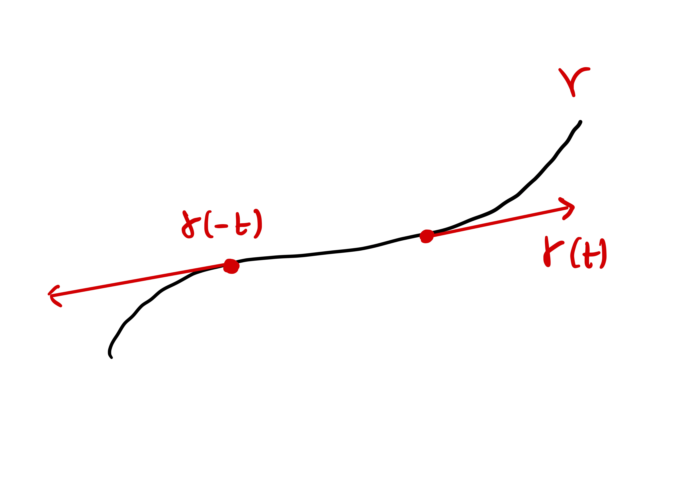
Surfaces are 2D objects in \(\mathbb{R}^3\). There are two directions in which one can move on a surface.
Question 1
How to dercribe a surface mathematically?
A curve \(\Gamma \subseteq \mathbb{R}^3\) can be described with one function \({\pmb{\gamma}}\colon (a,b) \to \Gamma\). The idea is that \(\Gamma\) looks locally like \(\mathbb{R}\).
How do we represent a surface? Suppose given a function \({\pmb{\sigma}}\colon U \to \mathbb{R}^3\), with \(U \subseteq \mathbb{R}^2\) open set. Denote by \(\mathcal{S}:= {\pmb{\sigma}}(U)\) the image of \(U\) through \({\pmb{\sigma}}\). We say that \(\mathcal{S}\) is a surface and \({\pmb{\sigma}}\) is a chart. Unofortunately, not all surfaces can be described with just one chart: in most cases one needs to piece together many local charts \({\pmb{\sigma}}_i \colon U_i \to \mathcal{S}\), with \(U_i \subseteq \mathbb{R}^2\) open. The charts \({\pmb{\sigma}}_i\) represent \(\mathcal{S}\) if they cover the whole surface: \[ \mathcal{S}= \bigcup_{i} {\pmb{\sigma}}_i (U_i) \,. \]
Before proceeding with the formal definition of surface, we collect some preliminary definitions and results.
4.1 Preliminaries
Before proceeding with the formal definition of surface, we need to establish some basic notation and terminology regarding linear algebra, the topology of \(\mathbb{R}^n\), and calculus for smooth maps from \(\mathbb{R}^n\) into \(\mathbb{R}^m\).
4.1.1 Linear algebra
Definition 2: Bilinear form
Let \(V\) be a vector space and \(B \colon V \times V \to \mathbb{R}\). We say that:
\(B\) is bilinear if \[\begin{align*} B(\lambda_1 \mathbf{v}_1 + \lambda_2 \mathbf{v}_2 , \mathbf{w}) & = \lambda_1 B(\mathbf{v}_1,\mathbf{w}) + \lambda_2 B(\mathbf{v}_2,\mathbf{w}) \,, \\ B(\mathbf{w}, \lambda_1 \mathbf{v}_1 + \lambda_2 \mathbf{v}_2 ) & = \lambda_1 B(\mathbf{w},\mathbf{v}_1) + \lambda_2 B(\mathbf{w}, \mathbf{v}_2) \,. \end{align*}\] for all \(\mathbf{v}_i,\mathbf{w}\in V\), \(\lambda_i \in \mathbb{R}\).
\(B\) is symmetric if \[ B(\mathbf{v},\mathbf{w}) = B(\mathbf{w}, \mathbf{v}) \] for all \(\mathbf{v},\mathbf{w}\in V\).
A bilinear map \(B\) is called bilinear form on \(V\).
Notation
Let \(V\) be a vector space with basis \(\{\mathbf{v}_1,\ldots,\mathbf{v}_n\}\). Then, for a vector \(\mathbf{v}\in V\) there exist coefficients \(\lambda_1, \ldots, \lambda_n\) such that \[
\mathbf{v}= \lambda_1 \mathbf{v}_1 + \ldots +\lambda_n \mathbf{v}_n \,.
\] We denote the vector of coefficients of \(\mathbf{v}\) by the column vector \[
\mathbf{x}:= (\lambda_1, \ldots, \lambda_n)^T \in \mathbb{R}^n \,.
\] The coefficients of a vector \(\mathbf{w}\) are denoted by \[
\mathbf{y}:= (\mu_1 , \ldots, \mu_n )^T \,.
\] Notice that we are using different letters to denote abstract vectors \(\mathbf{v},\mathbf{w}\in V\), and their components \(\mathbf{x},\mathbf{y}\in \mathbb{R}^n\).
Bilinear forms can be represented by a matrix.
Remark 3: Matrix representation for bilinear forms
Let \(\{\mathbf{v}_1, \ldots , \mathbf{v}_n \}\) be a basis for the vector space \(V\). Given a bilinear form \(B \colon V \times V \to \mathbb{R}\) we define the matrix \[
M := \left( B(\mathbf{v}_i,\mathbf{v}_j) \right)_{i,j=1}^n \in \mathbb{R}^{n \times n} \,.
\] Then \[
B(\mathbf{v},\mathbf{w}) = \mathbf{x}^T \,M \, \mathbf{y}\,.
\]
Proof. We can write \(\mathbf{v}\) and \(\mathbf{w}\) in cordinates as \[ \mathbf{v}= \sum_{i=1}^n \lambda_i \mathbf{v}_i \,, \quad \mathbf{w}= \sum_{i=1}^n \mu_i \mathbf{v}_i \,, \] for suitable coefficients \(\lambda_i, \mu_i \in \mathbb{R}\). Using bilinearity of \(B\) we get \[\begin{align*} B(\mathbf{v},\mathbf{w}) & = B \left( \sum_{i=1}^n \lambda_i \mathbf{v}_i, \sum_{j=1}^n \mu_j \mathbf{v}_j \right) \\ & = \sum_{i,j=1}^n \lambda_i \mu_j B(\mathbf{v}_i,\mathbf{v}_j) \\ & = \mathbf{x}^T M \mathbf{y}\,. \end{align*}\]
Definition 4: Quadratic form
Let \(V\) be a vector space and \(B \colon V \times V \to \mathbb{R}\) be a bilinear form. The quadratic form associated to \(B\) is the map \[
Q \colon V \to \mathbb{R}\,, \quad Q(\mathbf{v}) := B(\mathbf{v}, \mathbf{v}) \,.
\]
A symmetric bilinear form is uniquely determinded by its quadratic form, as stated in the following proposition.
Proposition 5
Let \(B \colon V \times V \to \mathbb{R}\) be a symmetric bilinear form and \(Q \colon V \to \mathbb{R}\) the associated quadratic form. Then \[
B(u,v) = \frac12 \left( Q(\mathbf{v}+ \mathbf{w}) - Q(\mathbf{v}) - Q(\mathbf{w}) \right) \,.
\] for all \(\mathbf{v},\mathbf{w}\in V\).
The proof is an easy check, and is left as an exercise.
Definition 6: Inner product
Let \(V\) be a vector space. An inner product on \(V\) is a symmetric bilinear form \(\left\langle \cdot,\cdot \right\rangle \colon V \times V \to \mathbb{R}\) such that \[ \left\langle \mathbf{v},\mathbf{v} \right\rangle > 0 \,, \quad \forall \, \mathbf{v}\in V \,. \] Moreover:
The length of a vector \(\mathbf{v}\in V\) with respect to \(B\) is defined as \[ \| \mathbf{v}\| := \sqrt{\left\langle \mathbf{v},\mathbf{v} \right\rangle} \,. \]
Two vectors \(\mathbf{v},\mathbf{w}\in V\) are orthogonal if \[ \left\langle \mathbf{v},\mathbf{w} \right\rangle = 0 \,. \]
Example 7
Let \(V = \mathbb{R}^n\) and consider the euclidean scalar product \[
\mathbf{v}\cdot \mathbf{w}= \sum_{i=1}^n v_i w_i \,,
\] where \(\mathbf{v}= (v_1,\ldots,v_n)\), \(\mathbf{w}= (w_1,\ldots,w_n)\). Then \[
\left\langle \mathbf{v},\mathbf{w} \right\rangle := \mathbf{v}\cdot \mathbf{w}
\] is an inner product on \(\mathbb{R}^n\).
Proposition 8
Let \(V\) be a vector space and \(\left\langle \cdot,\cdot \right\rangle\) an inner product on \(V\). There exists an orthonormal basis \(\{\mathbf{v}_1, \ldots, \mathbf{v}_n\}\) of \(V\), that is, such that \[
\left\langle \mathbf{v}_i,\mathbf{v}_j \right\rangle =
\begin{cases}
1 & \mbox{ if } \, i = j \\
0 & \mbox{ if } \, i \neq j \\
\end{cases}
\] In particular, the matrix \(M\) associated to \(\left\langle \cdot,\cdot \right\rangle\) is the identity.
Definition 9: Linear map
Let \(V,W\) be vector spaces and \(L \colon V \to W\). We say that \(L\) is linear if \[
L(\lambda \mathbf{v}+ \mu \mathbf{w}) = \lambda L(\mathbf{v}) + \mu L(\mathbf{w})
\] for all \(\mathbf{v},\mathbf{w}\in V\) and \(\lambda,\mu \in \mathbb{R}\).
Remark 10: Matrix representation of linear maps
Let \(V,W\) be vector spaces and \(L \colon V \to W\) be a linear map. Let \(\{\mathbf{v}_1, \ldots, \mathbf{v}_n\}\) be a basis of \(V\) and \(\{ {\mathbf{w}}_1 , \ldots, \mathbf{w}_m\}\) be a basis of \(W\). Then there exists a matrix \(M \in \mathbb{R}^{m \times n}\) such that \[
L \mathbf{v}= M \mathbf{x}\,, \quad \forall \, \mathbf{v}\in V \,.
\] Specifically, \(M \in \mathbb{R}^{n \times n}\) is called the matrix associated to \(L\) with respect to the basis \(\{\mathbf{v}_1,\ldots,\mathbf{v}_n\}\) of \(V\) and \(\{\mathbf{w}_1 \ldots,\mathbf{w}_m\}\) of \(W\), and is defined by \[
M := \left(
\begin{array}{ccc}
a_{11} & \ldots & a_{1n} \\
\vdots & \ddots & \vdots \\
a_{m1} & \ldots & a_{mn}
\end{array}
\right) \,,
\] where the coefficients \(a_{ij}\) are such that \[
L(\mathbf{v}_j) = a_{1j} \mathbf{w}_1 + \ldots + a_{mj} \mathbf{w}_m = \sum_{i=1}^m a_{ij} \mathbf{w}_i \,.
\] In other words, the columns of \(M\) are given by the coordinates of the vectors \(L(\mathbf{v}_i)\) with respect to the basis \(\{ \mathbf{w}_1 , \ldots, \mathbf{w}_m \}\).
Definition 11: Eigenvalues and eigenvectors
Let \(V\) be a vector space and \(L \colon V \to V\) a linear map. We say that \(\lambda \in \mathbb{R}\) is an eigenvalue of \(L\) if \[
L(\mathbf{v}) = \lambda \mathbf{v}
\] for some \(\mathbf{v}\in V\) with \(\mathbf{v}\neq 0\). Such \(\mathbf{v}\) is called eigenvector of \(L\) associated to the eigenvalue \(\lambda\).
Definition 12: Self-adjoint map
Let \(V\) be a vector space, \(\left\langle \cdot,\cdot \right\rangle\) an inner product and \(L \colon V \to V\) a linear map. We say that \(L\) is self-adjoint if \[
\left\langle \mathbf{v},L(\mathbf{w}) \right\rangle = \left\langle L(\mathbf{v}),\mathbf{w} \right\rangle \,, \quad \forall \, \mathbf{v}, \, \mathbf{w}\in V \,.
\]
Theorem 13: Spectral Theorem
Let \(V\) be a vector space, \(\left\langle \cdot,\cdot \right\rangle\) an inner product, and \(L \colon V \to V\) a self-adjoint linear map. There exist an orthonormal basis of \(V\) \[
\{ \mathbf{v}_1, \ldots, \mathbf{v}_n \} \,,
\] where \(\mathbf{v}_i\) are eigenvectors of \(L\), that is, \[
L \mathbf{v}_i = \lambda_i \mathbf{v}_i
\] for some eigevalue \(\lambda_i \in \mathbb{R}\). In particular, the matrix of \(L\) with respect to the basis \(\{\mathbf{v}_1,\ldots,\mathbf{v}_n\}\) is diagonal: \[
M = \operatorname{diag} (\lambda_1,\ldots, \lambda_n) =
\left(
\begin{array}{cccc}
\lambda_1 & 0 & \ldots & 0 \\
0 & \lambda_2 & \ldots & 0 \\
\vdots & \vdots & \ddots & \vdots \\
0 & 0 & \ldots & \lambda_n \\
\end{array}
\right) \,.
\]
There is also a matrix version of the spectral theorem. To state it, we need to introduce some terminology.
Definition 14
Let \(A \in \mathbb{R}^{n \times n}\) be a matrix. We say that:
\(A\) is symmetric if \[ A^T = A \,. \]
\(A\) is orthogonal if \[ A^T A = I \,, \] where \(I\) is the identity matrix.
Remark 15
Let \(L \colon V \to V\) be linear and \(A \in \mathbb{R}^{n \times n}\) be the matrix associated to \(L\) with respect to any basis \(\{\mathbf{v}_1,\ldots,\mathbf{v}_n\}\) of \(V\). They are equivalent:
- \(L\) is self-adjoint,
- \(A\) is symmetric.
Definition 16: Matrix eigenvalues
Let \(A \in \mathbb{R}^{n \times n}\) be a matrix. An eigenvalue of \(A\) is a number \(\lambda \in \mathbb{R}\) such that \[
A \mathbf{v}= \lambda \mathbf{v}\,,
\] for some \(\mathbf{v}\in \mathbb{R}^n\) with \(\mathbf{v}\neq 0\). The vector \(\mathbf{v}\) is called an eigenvector of \(A\) with eigenvalue \(\lambda\).
Remark 17
Let \(A \in \mathbb{R}^{n \times n}\). The eigenvalues of \(\lambda\) of \(A\) can be computed by solving the characteristic equation \[
P(\lambda) = 0 \,,
\] where \(P\) is the characteristic polynomial of \(A\), defined by \[
P(\lambda) := \det ( A - \lambda I ) \,.
\]
Remark 18
Let \(L \colon V \to V\) be a linear map and \(A\) the associated matrix with respect to any basis of \(V\). Then \[ L(\mathbf{v}) = A \mathbf{x}\,, \quad \, \forall \, \mathbf{v}\in V\,, \] where \(\mathbf{x}\in \mathbb{R}^n\) is the vector of coordinates of \(\mathbf{v}\). They are equivalent:
- \(\lambda\) is an eigenvalue of \(L\) of eigenvector \(\mathbf{v}\),
- \(\lambda\) is an eigenvalue of \(A\) of eigenvector \(\mathbf{x}\).
Theorem 19: Spectral Theorem for matrices
Let \(A \in \mathbb{R}^{n \times n}\) be a symmetric matrix. Consider \(\mathbb{R}^n\) equipped with the euclidean scalar product. There exist an orthonormal basis of \(V\) \[
\{ \mathbf{v}_1, \ldots, \mathbf{v}_n \} \,,
\] where \(\mathbf{v}_i\) are eigenvectors of \(A\), that is, \[
A \mathbf{v}_i = \lambda_i \mathbf{v}_i
\] for some eigevalue \(\lambda_i \in \mathbb{R}\). Moreover \[
A = P D P^T \,,
\] where \[\begin{align*}
P & := \left( \mathbf{v}_1 \vert \ldots \vert \mathbf{v}_n \right) \\
D & := \operatorname{diag} (\lambda_1,\ldots, \lambda_n) =
\left(
\begin{array}{cccc}
\lambda_1 & 0 & \ldots & 0 \\
0 & \lambda_1 & \ldots & 0 \\
\vdots & \vdots & \ddots & \vdots \\
0 & 0 & \ldots & \lambda_n \\
\end{array}
\right) \,.
\end{align*}\]
Remark 20
The corresponedence between Theorem 13 and Theorem 19 is as follows. Let \(A \in \mathbb{R}^{n \times n}\) be symmetric and \(\{\mathbf{w}_1, \ldots, \mathbf{w}_n\}\) be any orthonormal basis of the vector space \(V\). Define the linear map \(L \colon V \to V\) such that \[
L(\mathbf{v}_j) = \sum_{i=1}^n a_{ij} \mathbf{w}_i \,, \quad \forall \, j =1 , \ldots , n \, .
\] In this way \(A\) is the matrix associated to \(L\) with respect to the basis \(\{\mathbf{w}_1, \ldots, \mathbf{w}_n\}\). Then \(L\) is self-adjoint. Moreover \(L\) and \(A\) have the same eigenvalues. By the Spectral Theorem there exists an orthonormal basis \(\{\mathbf{v}_1,\ldots, \mathbf{v}_n\}\) of \(V\) such that the matrix of \(L\) with respect to such basis, say \(D\), is diagonal. Then \[
A = P D P^T
\] where \(P\) is the matrix of change of basis between \(\{\mathbf{w}_1, \ldots, \mathbf{w}_n\}\) and \(\{\mathbf{v}_1, \ldots, \mathbf{v}_n\}\), that is, \(P = (p_{ij})\) where \[
\mathbf{w}_j = \sum_{i=1}^n p_{ij} \mathbf{v}_i \,.
\]
4.1.2 Topology of \(\mathbb{R}^n\)
Definition 21: Topology of \(\mathbb{R}^n\)
The Euclidean norm on \(\mathbb{R}^n\) is denoted by \[ \| \mathbf{x}\| := \sqrt{ \sum_{i=1}^n x_i^2 }\,, \quad \mathbf{x}= (x_1 , \ldots, x_n) \in \mathbb{R}^n \,. \] Define the Euclidean distance \(d(\mathbf{x},\mathbf{y}) = \| \mathbf{x}- \mathbf{y}\|\).
The pair \((\mathbb{R}^n,d)\) is a metric space.
The topology induced by the metric \(d\) is called the Euclidean topology, denoted by \(\mathcal{T}\).
A set \(U \subseteq \mathbb{R}^n\) is open if for all \(\mathbf{x}\in U\) there exists \(\varepsilon>0\) such that \(B_{\varepsilon}(\mathbf{x}) \subseteq U\), where \[ B_{\varepsilon}(\mathbf{x}) := \{ \mathbf{y}\in \mathbb{R}^n \, \colon \,\| \mathbf{x}- \mathbf{y}\| < \varepsilon\} \] is the open ball of radius \(\varepsilon>0\) centered at \(\mathbf{x}\). We write \(U \in \mathcal{T}\), with \(\mathcal{T}\) the Euclidean topology in \(\mathbb{R}^n\).
A set \(V \subseteq \mathbb{R}^n\) is closed if \(V^c := \mathbb{R}^n \smallsetminus U\) is open.
Example 22
The \(n\)-dimensional unit sphere \[ \mathbb{S}^n = \{ \mathbf{x}\in \mathbb{R}^{n+1} \, \colon \,\| \mathbf{x}\| = 1 \} \] is closed in \(\mathbb{R}^{n+1}\). Indeed, define \(f \colon \mathbb{R}^n \to \mathbb{R}\) by \[ f(\mathbf{x}) = \| \mathbf{x}\| \,. \] Then \(f\) is continuous and \[ \mathbb{S}^n = f^{-1}(\{1\}) \,. \] Since \(\{1\}\) is closed in \(\mathbb{R}\), and \(f\) is continuous, we conclude that \(\mathbb{S}^n\) is closed.
The \(n\)-dimensional unit cube \[ C := \{ \mathbf{x}\in \mathbb{R}^n \, \colon \,|x_1| + \ldots + |x_n| <1 \} \] is open in \(\mathbb{R}^n\). Indeed, define \(f \colon \mathbb{R}^n \to \mathbb{R}\) by \[ f(\mathbf{x}) = |x_1| + \ldots + |x_n| \,. \] Then \(f\) is continuous and \[ C = f^{-1}((-\infty,1)) \,. \] Since \((-\infty,1)\) is open in \(\mathbb{R}\), and \(f\) is continuous, we conclude that \(C\) is open.
The set \[ V := \{ \mathbf{x}\in \mathbb{R}^n \, \colon \,|x_1| + \ldots + |x_n| \geq 1 \} \] is closed, since \(V^c = C\) is the unit cube, which is open.
Definition 23: Subspace Topology
Let \(A \subseteq \mathbb{R}^n\). The subspace topology on \(A\) is the family \[
\mathcal{T}_A := \{ U \subseteq A \, \colon \,\exists \,\, W \in \mathcal{T}\, \text{ s.t. } \, U = A \cap W \} \,.
\] If \(U \in \mathcal{T}_A\), we say that \(U\) is open in \(A\).
4.1.3 Smooth functions
We recall some basic facts about smooth functions from \(\mathbb{R}^n\) into \(\mathbb{R}^m\). For a vector valued function \(f \colon \mathbb{R}^n \to \mathbb{R}^m\) we denote its components by \[ f = (f_1,\ldots,f_m) \,. \]
Definition 24: Continuous Function
Let \(f \colon U \subseteq \mathbb{R}^n \to \mathbb{R}^m\) with \(U\) open. We say that \(f\) is continuous at \(\mathbf{x}\in U\) if \(\forall \, \varepsilon>0\), \(\exists \, \delta > 0\) such that \[
\| \mathbf{x}- \mathbf{y}\| < \delta \quad \implies \quad
\| f(\mathbf{x}) - f (\mathbf{y}) \| < \varepsilon\,.
\] \(f\) is continuous in \(U\) if it is continuous for all \(\mathbf{x}\in U\).
The above ``classical’’ definition of continuity is equivalent to the topological one, in the following sense:
Theorem 25: Continuity: Topological definition
Let \(f \colon U \subseteq \mathbb{R}^n \to V \subseteq \mathbb{R}^m\), with \(U,V\) open. We have that \(f\) is continuous if and only if \(f^{-1}(A)\) is open in \(U\), for all \(A\) open in \(V\).
Definition 26: Homeomorphism
Let \(f \colon U \subseteq \mathbb{R}^n \to V \subseteq \mathbb{R}^m\) with \(U,V\) open. We say that \(f\) is a homeomorphism if:
- \(f\) is continuous;
- \(f\) admits continuous inverse \(f^{-1} \colon V \to U\).
Definition 27: Differentiable Function
Let \(f \colon U \subseteq \mathbb{R}^n \to \mathbb{R}^m\) with \(U\) open. We say that \(f\) is differentiable at \(\mathbf{x}\in U\) if there exists a linear map \(d_{\mathbf{x}} f \colon \mathbb{R}^n \to \mathbb{R}^m\) such that \[
d_{\mathbf{x}}f (\mathbf{h}) = \lim_{\varepsilon\to 0} \ \frac{ f(\mathbf{x}+ \varepsilon\mathbf{h} ) - f(\mathbf{x}) }{ \varepsilon} \,,
\] for all \(\mathbf{h} \in \mathbb{R}^n\), where the limit is taken in \(\mathbb{R}^m\). The linear map \(d_{\mathbf{x}} f\) is called the differential of \(f\) at \(\mathbf{x}\).
The idea behind the definition of differentiability is as follows: The function \(f\) is differentiable at \(\mathbf{x}\) if it can be approximated by the linear map \(d_{\mathbf{x}} f\) around the point \(\mathbf{x}\).
We denote by \(\{\mathbf{e}_i\}_{i=1}^n\) the standard basis of \(\mathbb{R}^n\). When \(f\) is differentiable, the partial derivatives are defined as follows:
Definition 28: Partial Derivative
Let \(f \colon U \subseteq \mathbb{R}^n \to \mathbb{R}^m\), \(U\) open, \(f\) differentiable. The partial derivative of \(f\) at \(\mathbf{x}\in U\) in direction \(\mathbf{e}_i\) is \[
\frac{\partial f}{\partial x_i}(\mathbf{x}) := d_{\mathbf{x}} f (\mathbf{e}_i) = \lim_{\varepsilon\to 0} \frac{ f( \mathbf{x}+ \varepsilon\mathbf{e}_i ) - f(\mathbf{x}) }{ \varepsilon} \,.
\]
Definition 29: Jacobian Matrix
Let \(f \colon U \subset \mathbb{R}^n \to \mathbb{R}^m\) be differentiable. The Jacobian of \(f\) at \(\mathbf{x}\) is the \(m \times n\) matrix of partial derivatives: \[
Jf(\mathbf{x}):= \left( \frac{\partial f_i}{\partial x_j}(\mathbf{x}) \right)_{i,j} \in \mathbb{R}^{m \times n} \,.
\] If \(m=n\) then \(Jf \in \mathbb{R}^{n \times n}\) is a square matrix and we can compute its determinant, denoted by \(\det (Jf)\).
The differential \(d_{\mathbf{x}} f \colon \mathbb{R}^n \to \mathbb{R}^m\) is a linear map. As such, it must have a matrix representation with respect to the Euclidean basis. Since the partial derivative is defined as \[ \frac{\partial f}{\partial x_i}(\mathbf{x}):= d_{\mathbf{x}} f(\mathbf{e}_i) \,, \] we trivially have that \(Jf(\mathbf{x})\) is the matrix of \(d_{\mathbf{x}} f\) with respect to the standard basis:
Proposition 30: Matrix representation of \(d_{\mathbf{x}} f\)
Let \(f \colon U \subseteq \mathbb{R}^n \to \mathbb{R}^m\) be differentiable. The matrix of the linear map \(d_{\mathbf{x}} f \colon \mathbb{R}^n \to \mathbb{R}^m\) with respect to the standard basis is given by the Jacobian matrix \(Jf(\mathbf{x})\).
Definition 31: Multi-index notation
For a multi-index \[
\alpha := (\alpha_1, \ldots , \alpha_n) \in \mathbb{N}^n
\] we denote by \[
|\alpha|:= \sum_{i=1}^n |\alpha_i|
\] the length of the multi-index.
Definition 32: Smooth Function
Let \(f \colon U \subseteq \mathbb{R}^n \to \mathbb{R}^m\) with \(U\) open. \(f\) is smooth if the derivatives \[
\frac{\partial^{|\alpha|} f}{d\mathbf{x}^\alpha} := \frac{\partial^{\alpha_1}}{ \partial x_1^{\alpha_1}} \cdots \frac{\partial^{\alpha_n}}{ \partial x_n^{\alpha_n}} \, f
\] exist for each multi-index \(\alpha \in \mathbb{N}^n\). Note that in this case all the derivatives of \(f\) are automatically continuous.
Notation: Gradient and partial derivatives
For \(f \colon U \subseteq \mathbb{R}^n \to \mathbb{R}^m\) smooth, the partial derivatives are \[\begin{gather*}
\partial_{x_i} f = f_{x_i} = \frac{\partial f}{\partial x_i} \,, \qquad
\partial_{x_i x_j} f = f_{x_i x_j} = \frac{\partial^2 f}{\partial x_i \partial x_j} \\
\partial_{x_i x_j x_k} f = f_{x_i x_j x_k} = \frac{\partial^3 f}{\partial x_i \partial x_j \partial x_k}
\end{gather*}\]
For \(f \colon U \subseteq \mathbb{R}^n \to \mathbb{R}\) smoothm, the gradient is \[ \nabla f (\mathbf{x}) = \left( f_{x_1}(\mathbf{x}) , \ldots , f_{x_n}(\mathbf{x}) \right) \,. \] Note that \(\nabla f(\mathbf{x})\) coincides with \(Jf(\mathbf{x})\).
Example 33
The functions \(f \colon \mathbb{R}^2 \to \mathbb{R}\) and \(g \colon \mathbb{R}^2 \to \mathbb{R}^3\) defined by \[
f(x,y) := \cos(x)y \,, \quad
g(x,y) := (x^2,y^2,x-y)
\] are both smooth.
4.1.4 Diffeomorphisms
A key definition needed for the study of surfaces is the one of diffeomorphism. In this section we only consider maps from \(\mathbb{R}^n\) into \(\mathbb{R}^n\).
Definition 34: Diffeomorphism
Let \(f \colon U \to V\), with \(U,V \subseteq \mathbb{R}^n\) open. We say that \(f\) is a diffeomorphism between \(U\) and \(V\) if:
- \(f\) is smooth,
- \(f\) admits smooth inverse \(f^{-1} \colon V \to U\).
Definition 35: Local diffeomorphism
\(f \colon \mathbb{R}^n \to \mathbb{R}^n\) is a local diffeomorphism at \(\mathbf{x}_0 \in \mathbb{R}^n\) if:
- There exists an open set \(U \subseteq \mathbb{R}^n\) such that \(\mathbf{x}_0 \in U\),
- There exists an open set \(V \subseteq \mathbb{R}^n\) such that \(f(\mathbf{x}_0) \in V\),
- \(f \colon U \to V\) is a diffeomorphism.
Proposition 36
Diffeomorphisms are local diffeomorphisms.
Non-vanishing Jacobian determinant is a necessary condition for being a diffeomorphism, as outlined in the following Proposition.
Proposition 37: Necessary condition for being diffeomorphism
Let \(f \colon U \to \mathbb{R}^n\) with \(U \subseteq \mathbb{R}^n\) open. Suppose \(f\) is a local diffeomorhism at \(\mathbf{x}_0 \in U\). Then \[
\det Jf (\mathbf{x}_0) \neq 0 \,.
\tag{4.1}\]
Example 38
We have already encountered Proposition 37 in the scalar case when we were studying curves. Indeed, suppose that \[
\phi\colon \mathbb{R}\to \mathbb{R}
\] is a local diffeomorphism at \(t_0 \in \mathbb{R}\). Then \[
J\phi(t_0) = \dot{\phi}(t_0) \,, \quad \det J\phi(t_0) = \dot{\phi}(t_0) \,,
\] and we recover the already seen result that \[
\dot{\phi}(t_0) \neq 0 \,.
\]
The condition at (4.1) is sufficient fot \(f\) to be a local diffeomorphism at \(\mathbf{x}_0\). This is the content of the Inverse Function Theorem.
Theorem 39: Inverse Function Theorem
Let \(f \colon U \to \mathbb{R}^n\) with \(U \subseteq \mathbb{R}^n\) open, \(f\) smooth. Assume \[ \det J f(\mathbf{x}_0) \neq 0 \,, \] for some \(\mathbf{x}_0 \in U\). Then:
- There exists an open set \(U_0 \subseteq U\) such that \(\mathbf{x}_0 \in U_0\),
- There exists an open set \(V\) such that \(f(\mathbf{x}_0) \in V\),
- \(f \colon U_0 \to V\) is a diffeomorphism.
Example 40
Define \(f \colon \mathbb{R}^2 \to \mathbb{R}^2\) by \[
f(x,y) := (\cos(x) \sin(y), \sin(x) \sin(y)) \,.
\] Then \[
J f (x,y) =
\left(
\begin{array}{cc}
- \sin(x) \sin(y) & \cos(x) \cos(y) \\
\cos(x) \sin(y) & \sin(x) \cos(y)
\end{array}
\right) \,,
\] and \[\begin{align*}
\det Jf(x,y) & = - \sin^2(x) \cos(y) \sin(y) - \cos^2(x) \cos(y) \sin(y) \\
& = - \sin(y) \cos(y) \\
& = - \frac{1}{2} \sin(2y) \,.
\end{align*}\] Therefore \[
\det Jf(x,y) = 0 \quad \iff \quad
y = \frac{k \pi}{2} \,, \,\, k \in \mathbb{N}\,.
\] The above condition means that the Jacobian vanishes on each of the lines \[
L_k := \left\{ \left(x, \frac{k \pi}{2} \right) \, \colon \,x \in \mathbb{R}\right\} \,.
\] Define the open set \(U\) obtained by removing the lines \(L_k\) from \(\mathbb{R}^n\), that is, \[
U:= \mathbb{R}^n \smallsetminus \bigcup_{k=1}^\infty L_k \,.
\] In particular, we have \[
\det Jf(x,y) \neq 0 \,, \quad \forall \, (x,y) \in U \,.
\] By the Inverse Function Theorem 39, \(f\) is a local diffeomorphism at each point \((x,y) \in U\).
Warning
Condition (4.1) is not sufficient for \(f\) to be a global diffeomorphism, in the following sense: There exist differentiable functions \(f \colon U \subseteq \mathbb{R}^n \to \mathbb{R}^n\) such that:
- \(\det J f(\mathbf{x}) \neq 0\) for all \(\mathbf{x}\in U\),
- \(f\) is not a diffeomorphism between \(U\) and \(f(U)\).
We will show this in the next Example.
Example 41: A local diffeomorphism which is not global
Question. Define the function \(f \colon \mathbb{R}^2 \to \mathbb{R}^2\) \[
f(x,y) = (e^x \cos(y), e^x \sin(y)) \,.
\]
Prove \(f\) is a local diffeomorphism but not a diffeomorphism.
Solution. \(f\) is a local diffeomorphism at each point \((x,y) \in \mathbb{R}^2\) by the Inverse Function Theorem, since \[\begin{align*} & J f (x,y) = e^x \left( \begin{array}{cc} \cos(y) & \sin(y) \\ -\sin(y) & \cos(y) \end{array} \right) \\ & \det Jf(x,y) = e^{2x} \neq 0 \,. \end{align*}\] However, \(f\) is not invertible because it is not injective, since \[ f(x,y) = f(x, y + 2n\pi) \,, \quad \forall\, (x,y) \in \mathbb{R}^2 , \, n \in \mathbb{N}\,. \] Hence, \(f\) cannot be a diffeomorphism of \(\mathbb{R}^2\) into \(\mathbb{R}^2\).
4.2 Surfaces
We give the main definition of surface in \(\mathbb{R}^3\).
Definition 42: Surface
Let \(\mathcal{S}\subseteq \mathbb{R}^3\) be a connected set. We say that \(\mathcal{S}\) is a surface if for every point \(\mathbf{p}\in \mathcal{S}\) there exist an open set \(U \subseteq \mathbb{R}^2\), and a smooth map \({\pmb{\sigma}}\colon U \to {\pmb{\sigma}}(U) \subseteq \mathcal{S}\) such that
- \(\mathbf{p}\in {\pmb{\sigma}}(U)\),
- \({\pmb{\sigma}}(U)\) is open in \(\mathcal{S}\),
- \({\pmb{\sigma}}\) is a homeomorphism between \(U\) and \({\pmb{\sigma}}(U)\).
\({\pmb{\sigma}}\) is called a surface chart at \(\mathbf{p}\).
A visual interpretation of the definition of surface is given in Figure 4.1.
Remark 43
\(\mathcal{S}\) is a topological space with the subspace topology induced by the inclusion \(\mathcal{S}\subseteq \mathbb{R}^3\). This means that a subset \(V \subseteq \mathcal{S}\) is open in \(\mathcal{S}\), if there exists an open set \(W \subseteq \mathbb{R}^3\) such that \[ V = W \cap \mathcal{S}\,. \]
\(\mathcal{S}\) is required to be connected with respect to the subspace topology.
A surface chart \({\pmb{\sigma}}\) is a map \[ {\pmb{\sigma}}\colon U \to \mathbb{R}^3 \,, \] with \(U \subseteq \mathbb{R}^2\) open. Therefore smoothness of \({\pmb{\sigma}}\) is intended in the classical sense.
Given a chart \({\pmb{\sigma}}\colon U \to {\pmb{\sigma}}(U)\), the set \(U\) is open in \(\mathbb{R}^2\) while \({\pmb{\sigma}}(U)\) is open in \(\mathcal{S}\) with the subspace topology. This means there exists and open set \(W \subseteq \mathbb{R}^3\) such that \[ {\pmb{\sigma}}(U) = W \cap \mathcal{S}\,. \]
The homeomorphism condition is saying that the surface patch \[ {\pmb{\sigma}}(U) \subseteq \mathcal{S} \] can be continuously deformed into the open set \[ U \subseteq \mathbb{R}^2 \,. \]
Notation
Points in \(U\) will be denoted with the pair \((u,v)\).
Partial derivatives of a chart \({\pmb{\sigma}}= {\pmb{\sigma}}(u,v)\) will be denoted by \[ {\pmb{\sigma}}_u := \frac{\partial {\pmb{\sigma}}}{\partial u} \,, \quad {\pmb{\sigma}}_v := \frac{\partial {\pmb{\sigma}}}{\partial v} \,. \] Similar notations are adopted for higher order derivatives, e.g., \[\begin{align*} {\pmb{\sigma}}_{uu} & := \frac{\partial^2 {\pmb{\sigma}}}{\partial u^2} \,, & {\pmb{\sigma}}_{uv} & := \frac{\partial^2 {\pmb{\sigma}}}{\partial u \partial v} \,, \\ {\pmb{\sigma}}_{vu} & := \frac{\partial^2 {\pmb{\sigma}}}{\partial v \partial u } \,, & {\pmb{\sigma}}_{vv} & := \frac{\partial^2 {\pmb{\sigma}}}{\partial v^2 } \,, \\ \end{align*}\]
Components of \({\pmb{\sigma}}\) will be denoted by \[ {\pmb{\sigma}}= (\sigma^1, \sigma^2, \sigma^3) = (x,y,z) \,. \]
An atlas of a surface is a collection of charts which cover the whole surface:
Definition 44: Atlas of a surface
Let \(\mathcal{S}\) be a surface. Assume given a collection of charts \[
\mathcal{A} = \{ {\pmb{\sigma}}_i\}_{i \in I} \,, \qquad
{\pmb{\sigma}}_i \colon U_i \to {\pmb{\sigma}}(U_i) \subseteq \mathcal{S}\,.
\] The family \(\mathcal{A}\) is an atlas of \(\mathcal{S}\) if \[
\mathcal{S}= \bigcup_{i \in I} {\pmb{\sigma}}_i(U_i) \,.
\]
Example 45: 2D Plane in \(\mathbb{R}^3\)
Planes in \(\mathbb{R}^3\) are surfaces with atlas made by one chart. To prove it, note that a plane \({\pmb{\pi}}\subseteq \mathbb{R}^3\) is described by the equation \[
{\pmb{\pi}}= \{ \mathbf{x}\in \mathbb{R}^3 \, \colon \,\mathbf{x}\cdot \mathbf{w}= \lambda \} \,,
\] for some \(\mathbf{w}\in \mathbb{R}^3\) and \(\lambda \in \mathbb{R}\). Let
- \(\mathbf{p},\mathbf{q} \in \mathbb{R}^3\) be orthonormal, and orthogonal to \(\mathbf{w}\).
- \(\mathbf{a} \in {\pmb{\pi}}\) be any point in the plane.
This construction is represented in Figure 4.2. Let \(\mathbf{x}\in {\pmb{\pi}}\). Then \(\mathbf{x}-\mathbf{a}\) satisfies \[ (\mathbf{x}- \mathbf{a}) \cdot \mathbf{w}= 0 \,. \] Hence, the vector \(\mathbf{x}- \mathbf{a}\) is orthogonal to \(\mathbf{w}\), meaning it can be written as linear combination of the vectors \(\mathbf{p}\) and \(\mathbf{q}\): \[ \mathbf{x}- \mathbf{a} = u \mathbf{p}+ v \mathbf{q} \,, \] for some coefficients \(u,v \in \mathbb{R}\). Therefore the plane \({\pmb{\pi}}\) can be equivalently represented as \[ {\pmb{\pi}}= \{ \mathbf{a} + u \mathbf{p}+ v \mathbf{q} \, \colon \,u,v \in \mathbb{R}\} \,. \] The above suggests to define the chart \({\pmb{\sigma}}\colon \mathbb{R}^2 \to {\pmb{\pi}}\) by \[ {\pmb{\sigma}}(u,v):= \mathbf{a} + u \mathbf{p}+ v \mathbf{q} \,. \] Then \({\pmb{\sigma}}\) is a chart for \({\pmb{\pi}}\), and \[ \mathcal{A} = \{{\pmb{\sigma}}\} \] is an atlas, implying that \({\pmb{\pi}}\) is a surface.
Proof. Check that \({\pmb{\sigma}}\) is a chart:
- \({\pmb{\sigma}}\) is smooth.
- \(\mathbb{R}^2\) is obviously open.
- \({\pmb{\sigma}}(\mathbb{R}^2)\) is open in \({\pmb{\pi}}\) for the subspace topology, since \({\pmb{\sigma}}(\mathbb{R}^2) = {\pmb{\pi}}\), and \({\pmb{\pi}}\) is open in the subspace topology.
- Suppose \(\mathbf{x}= {\pmb{\sigma}}(u,v)\). Then \[ (\mathbf{x}- \mathbf{a}) \cdot \mathbf{p}= u \,, \quad (\mathbf{x}- \mathbf{a}) \cdot \mathbf{q} = v \,, \] given that \(\mathbf{p}\) and \(\mathbf{q}\) are orthonormal.
- The above shows that the inverse of \({\pmb{\sigma}}\) is \({\pmb{\sigma}}^{-1} \colon {\pmb{\pi}}\to \mathbb{R}^2\) given by \[ {\pmb{\sigma}}^{-1} (\mathbf{x}) = ( (\mathbf{x}- \mathbf{a}) \cdot \mathbf{p}, (\mathbf{x}- \mathbf{a}) \cdot \mathbf{q} ) \,. \] Clearly, \({\pmb{\sigma}}^{-1}\) is continuous.
- Thus, \({\pmb{\sigma}}\) is a homeomorphism between \(\mathbb{R}^2\) and \({\pmb{\pi}}\).
- Therefore \({\pmb{\sigma}}\) is a chart for \({\pmb{\pi}}\). Since
Notice that \[ {\pmb{\sigma}}(\mathbb{R}^2) = {\pmb{\pi}}\,, \] and therefore \(\mathcal{A} = \{{\pmb{\sigma}}\}\) is an atlas for \({\pmb{\pi}}\), showing that \({\pmb{\pi}}\) is a surface.
Example 46: Unit cylinder
Consider the infinite unit cylinder \[ \mathcal{S}= \{ (x,y,z) \in \mathbb{R}^3 \, \colon \,x^2 + y^2 = 1 \} \,. \] Define the map \[ {\pmb{\sigma}}\colon \mathbb{R}^2 \to \mathbb{R}^3 \,, \quad {\pmb{\sigma}}(u,v):= (\cos(u),\sin(u),v) \,. \] Setting \(V := [0,2\pi) \times \mathbb{R}\), we notice that \[ {\pmb{\sigma}}(V) = \mathcal{S}\,. \] Moreover \({\pmb{\sigma}}\colon V \to \mathcal{S}\) is clearly bijective, with inverse \[ {\pmb{\sigma}}^{-1}(x,y,z) = (\theta,z) \,, \] with \(\theta\) the angle formed by the vector \(\mathbf{p}= (x,y)\) with the \(x\)-axis. However, \(V\) is not open in \(\mathbb{R}^2\), and therefore \({\pmb{\sigma}}\) cannot be a chart. To overcome this issue, let us cover \(V\) with two open sets: For example, \[ U_1 := \left( 0,\frac{ 3 \pi}{2} \right) \times \mathbb{R}\,, \quad \left( \pi,\frac{ 5 \pi}{2} \right) \times \mathbb{R}\,, \] so that \[ V = U_1 \cup U_2 \,, \] with \(U_1\) and \(U_2\) open. We can now define two charts \[ {\pmb{\sigma}}_1 \colon U_1 \to \mathcal{S}\,, \quad {\pmb{\sigma}}_2 \colon U_2 \to \mathcal{S}\,, \] by restricting \({\pmb{\sigma}}\): \[ {\pmb{\sigma}}_1 := {\pmb{\sigma}}|_{U_1} \,, \quad {\pmb{\sigma}}_2 := {\pmb{\sigma}}|_{U_2} \,. \] The images of the two charts \({\pmb{\sigma}}_1\) and \({\pmb{\sigma}}_2\) are shown in Figure 4.3. We have that \(\mathcal{S}\) is a surface with the atlas \[ \mathcal{A} = \{ {\pmb{\sigma}}_1, {\pmb{\sigma}}_2\} \,. \]
Check:
- \({\pmb{\sigma}}_i\) is smooth, since \({\pmb{\sigma}}\) is smooth.
- \(U_i\) is clearly open in \(\mathbb{R}^2\).
- One can check that \({\pmb{\sigma}}_i(U_i)\) is open in \(\mathcal{S}\).
- \({\pmb{\sigma}}_i\) is clearly invertible from \(U_i\) to \({\pmb{\sigma}}_i(U_i)\), and the inverse is continuous.
- Thus, \({\pmb{\sigma}}_i\) is a homeomorphism between \(U_i\) and \({\pmb{\sigma}}(U_i)\).
- \(\mathcal{A} = \{{\pmb{\sigma}}_1 , {\pmb{\sigma}}_2\}\) is an atlas for \(\mathcal{S}\), since \[ \mathcal{S}= {\pmb{\sigma}}_1(U_1) \cup {\pmb{\sigma}}_2(U_2) \,. \]
Example 47: Graph of a function
Let \(U \subseteq \mathbb{R}^2\) be open and \(f \colon U \to \mathbb{R}\) be smooth. The graph of \(f\) is the set \[ \Gamma_f := \left\{ (u,v,f(u,v)) \, \colon \,(u,v) \in U \right\} \,. \] \(\Gamma_f\) is a surface with atlas given by \[ \mathcal{A} = \{ {\pmb{\sigma}}\} \] where \({\pmb{\sigma}}\colon U \to \Gamma_f\) is \[ {\pmb{\sigma}}(u,v):=(u,v,f(u,v)) \,. \]
Proof. Let us check that \(\Gamma_f\) is a surface:
- \({\pmb{\sigma}}\) is smooth since \(f\) is smooth.
- \(U\) is open in \(\mathbb{R}^2\) by assumption.
- \({\pmb{\sigma}}(U) = \Gamma_f\), and therefore \({\pmb{\sigma}}(U)\) is open in \(\Gamma_f\).
- The inverse of \({\pmb{\sigma}}\) is given by \({{\pmb{\sigma}}}^{-1} \colon \Gamma_f \to U\) defined as \[ {{\pmb{\sigma}}}^{-1}(u,v,f(u,v)) := (u,v) \,. \] Clearly \({{\pmb{\sigma}}}^{-1}\) is continuous.
- Therefore \({\pmb{\sigma}}\) is a homeomorphism of \(U\) into \(\Gamma_f\).
- \(\mathcal{A}=\{{\pmb{\sigma}}\}\) is an atlas for \(\Gamma_f\), since \[ \Gamma_f = {\pmb{\sigma}}(U) \,. \]
Let us conclude the section with an example of a set which is not a surface.
Example 48: Circular cone
Consider the circular cone \[
\mathcal{S}:= \{ (x,y,z) \in \mathbb{R}^3 \, \colon \,x^2 + y^2 = z^2 \} \,.
\] Then \(\mathcal{S}\) is not a surface. This is, essentially, a consequence of the fact that \[
\mathcal{S}\smallsetminus \{{\pmb{0}}\}
\] is a disconnected set, see Figure 4.4.
To see that \(\mathcal{S}\) is not a surface, suppose there exists an atlas \(\{{\pmb{\sigma}}_i\}\) of \(\mathcal{S}\) \[ {\pmb{\sigma}}_i \colon U_i \to {\pmb{\sigma}}_i(U_i) \subseteq \mathcal{S}\,. \] In particular there exists a chart \({\pmb{\sigma}}\) such that \[ {\pmb{0}}\in {\pmb{\sigma}}(U) \,. \] Let \(\mathbf{x}_0 \in U\) be the point such that \[ {\pmb{\sigma}}(\mathbf{x}_0) = {\pmb{0}}\,. \] Since \(U\) is open in \(\mathbb{R}^2\), there exists \(\varepsilon>0\) such that \(B_{\varepsilon}(\mathbf{x}_0) \subseteq U\). Since \({\pmb{\sigma}}\) is a homeomorphism, we deduce that \[ {\pmb{\sigma}}(B_{\varepsilon}(\mathbf{x}_0)) \] is open in \(\mathcal{S}\). Hence there exists an open set \(W\) in \(\mathbb{R}^3\) such that \[ {\pmb{\sigma}}(B_{\varepsilon}(\mathbf{x}_0)) = {\pmb{\sigma}}(U) \cap W \,. \] As \({\pmb{0}}\in {\pmb{\sigma}}(B_{\varepsilon}(\mathbf{x}_0))\), we conclude that \({\pmb{0}}\in W\). Since \(W\) is open in \(\mathbb{R}^3\), there exists \(\delta > 0\) such that \[ B_{\delta} ({\pmb{0}}) \subseteq W \,. \] In particular, we deduce that \[ {\pmb{\sigma}}(U) \cap B_{\delta} ({\pmb{0}}) \subseteq {\pmb{\sigma}}(U) \cap W = {\pmb{\sigma}}(B_{\varepsilon}(\mathbf{x}_0)) \,. \] The ball \(B_{\delta} ({\pmb{0}})\) intersects both \(\mathcal{S}^-\) and \(\mathcal{S}^+\), with \[ \mathcal{S}^- := \mathcal{S}\cap \{ z < 0 \} \,, \quad \mathcal{S}^+ := \mathcal{S}\cap \{ z > 0 \} \,. \] Therefore \({\pmb{\sigma}}(B_{\varepsilon}(\mathbf{x}_0))\) intersects both \(\mathcal{S}^-\) and \(\mathcal{S}^+\). This implies that the set \[ V := {\pmb{\sigma}}(B_{\varepsilon}(\mathbf{x}_0)) \smallsetminus \{{\pmb{0}}\} \] is disconnected, with disconnection given by \[ V = ( V \cap \mathcal{S}^- ) \cup (V \cap \mathcal{S}^+) \,. \] However, \(V\) is homeomorphic to \[ B_{\varepsilon} (\mathbf{x}_0) \smallsetminus \{ \mathbf{x}_0 \} \,, \] which is instead connected. We have obtained a contradiction, and therefore \(\mathcal{S}\) is not a surface.
4.3 Regular Surfaces
We have defined a regular curve to be a map \({\pmb{\gamma}}\colon (a,b) \to \mathbb{R}^n\) such that \[ \left\| \dot{{\pmb{\gamma}}}(t) \right\| \neq 0 \,, \quad \forall \, t \in (a,b) \,. \] Regularity allowed us to reparametrize by arc-length and define the Frenet frame, curvature and torsion. We then proved that curvature and torsion completely characterize \({\pmb{\gamma}}\), up to rigid motions.
We want to do something similar for surfaces: We look for a condition that eventually will allow us to define the tangent plane to the surface. Specifically, we require that the partial derivatives \({\pmb{\sigma}}_u\) and \({\pmb{\sigma}}_v\) of a chart \({\pmb{\sigma}}\) are linearly independent. In this case \({\pmb{\sigma}}\) is called a regular chart. In details:
Definition 49: Regular Chart
Let \(U \subseteq \mathbb{R}^2\) be open. A map \({\pmb{\sigma}}= {\pmb{\sigma}}(u,v) \colon U \to \mathbb{R}^3\) is a regular chart if the partial derivatives \[
{\pmb{\sigma}}_u(u,v) = \frac{d{\pmb{\sigma}}}{du}(u,v) \,, \quad
{\pmb{\sigma}}_v(u,v) = \frac{d{\pmb{\sigma}}}{dv}(u,v)
\] are linearly independent vectors of \(\mathbb{R}^3\) for all \((u,v) \in U\).
We are now ready to define regular surfaces.
Definition 50: Regular surface
Let \(\mathcal{S}\) be a surface. We say that:
- \(\mathcal{A}\) is a regular atlas if any \({\pmb{\sigma}}\) in \(\mathcal{A}\) is regular.
- \(\mathcal{S}\) is a regular surface if it admits a regular atlas.
Before making some examples, we highlight give some equivalent methods for checking the regularity condition.
Theorem 51: Characterization of regular charts
Let \({\pmb{\sigma}}\colon U \to \mathbb{R}^3\) with \(U \subseteq \mathbb{R}^2\) open. They are equivalent:
- \({\pmb{\sigma}}\) is a regular chart.
- \(d_{\mathbf{x}} {\pmb{\sigma}}\colon \mathbb{R}^2 \to \mathbb{R}^3\) is injective for all \(\mathbf{x}\in U\).
- The Jacobian matrix \(J {\pmb{\sigma}}\) has rank \(2\) for all \((u,v) \in U\).
- \({\pmb{\sigma}}_u \times {\pmb{\sigma}}_v \neq 0\) for all \((u,v) \in U\).
Proof
Part 1. Equivalence of Point 1 and Point 4.
By the properties of vector product, we have that \[ {\pmb{\sigma}}_u \times {\pmb{\sigma}}_v \neq 0 \, \quad \, \forall \, (u,v) \in U \] if and only if \({\pmb{\sigma}}_u\) and \({\pmb{\sigma}}_v\) are linearly independent for all \((u,v) \in U\).
Part 2. Equivalence of Point 2 and Point 3.
The differential \(d_{\mathbf{x}}{\pmb{\sigma}}\colon \mathbb{R}^2 \to \mathbb{R}^3\) is represented in matrix form by the Jacobian \[ J{\pmb{\sigma}}(u,v) = \left( \begin{array}{ccc} \sigma^1_{u} & \sigma^1_{v} \\ \sigma^2_{u} & \sigma^2_{v} \\ \sigma^3_{u} & \sigma^3_{v} \\ \end{array} \right) \,. \] By standard linear algebra results, \(J{\pmb{\sigma}}\) has rank 2 if and only if \(d{\pmb{\sigma}}\) is injective.
Part 3. Equivalence of Point 1 and Point 3.
A \(3 \times 2\) matrix has rank 2 if and only if its columns are linearly independent. Since the columns of \(J{\pmb{\sigma}}\) are \({\pmb{\sigma}}_u\) and \({\pmb{\sigma}}_v\), we conclude that \({\pmb{\sigma}}_u\) and \({\pmb{\sigma}}_v\) are linearly independent.
Example 52: 2D Plane in \(\mathbb{R}^3\)
Question. Let \(\mathbf{a}, \mathbf{p}, \mathbf{q} \in \mathbb{R}^3\), with \(\mathbf{p}\) and \(\mathbf{q}\) orthonormal. The plane \[
{\pmb{\pi}}= \{ \mathbf{a} + u \mathbf{p}+ v \mathbf{q} \, \colon \,u,v \in \mathbb{R}\}
\] is a surface with atlas \(\mathcal{A} = \{{\pmb{\sigma}}\}\), where \[
{\pmb{\sigma}}\colon \mathbb{R}^2 \to {\pmb{\pi}}\,, \quad {\pmb{\sigma}}(u,v):= \mathbf{a} + u \mathbf{p}+ v \mathbf{q} \,.
\] Prove that \({\pmb{\pi}}\) is a regular surface.
Solution. We have \({{\pmb{\sigma}}}_{u}= \mathbf{p}, {\pmb{\sigma}}_v = \mathbf{q}\). Since \(\mathbf{p}\) and \(\mathbf{q}\) are orthonormal, we conclude that \({{\pmb{\sigma}}}_{u}\) and \({{\pmb{\sigma}}}_{v}\) are linearly independent and \({\pmb{\sigma}}\) is regular. \({\pmb{\pi}}\) is a regular surface because \({\pmb{\sigma}}\) is a regular chart.
Example 53: Unit cylinder
Question. Consider the infinite unit cylinder \[
\mathcal{S}= \{ (x,y,z) \in \mathbb{R}^3 \, \colon \,x^2 + y^2 = 1 \} \,.
\] \(\mathcal{S}\) is a surface with atlas \(\mathcal{A} = \{ {\pmb{\sigma}}_1,{\pmb{\sigma}}_2\}\), with \[\begin{align*}
& {\pmb{\sigma}}(u,v) = (\cos(u),\sin(u),v)\,,
&& {\pmb{\sigma}}_1 = {\pmb{\sigma}}|_{U_1} \,, \quad {\pmb{\sigma}}_2 = {\pmb{\sigma}}|_{U_2} \,, \\
& U_1 = \left( 0,\frac{ 3 \pi}{2} \right) \times \mathbb{R}\,,
&& U_2 = \left( \pi,\frac{ 5 \pi}{2} \right) \times \mathbb{R}\,.
\end{align*}\] Prove that \(\mathcal{S}\) is a regular surface.
Solution. The map \({\pmb{\sigma}}\) is regular because \[\begin{align*} {\pmb{\sigma}}_u = (-\sin(u),\cos(u),0) \,, \quad {\pmb{\sigma}}_v = (0,0,1) \,, \end{align*}\] are linearly independent, since the last components of \({{\pmb{\sigma}}}_{u}\) and \({{\pmb{\sigma}}}_{v}\) are \(0\) and \(1\). Therefore, also \({\pmb{\sigma}}_1\) and \({\pmb{\sigma}}_2\) are regular charts, being restrictions of \({\pmb{\sigma}}\). Thus, \(\mathcal{A}\) is a regular atlas and \(\mathcal{S}\) a regular surface.
The infinite cylinder can also be parametrized using a single chart, as shown in the next Example.
Example 54: Unit cylinder: Single chart atlas
Consider again infinite unit cylinder \[
\mathcal{S}= \{ (x,y,z) \in \mathbb{R}^3 \, \colon \,x^2 + y^2 = 1 \} \,.
\] Define the open set \[
U := \mathbb{R}^2 \smallsetminus \{(0,0)\} \,,
\] and the map \({\pmb{\sigma}}\colon U \to \mathcal{S}\) by \[
{\pmb{\sigma}}(u,v) = \left( \frac{u}{\sqrt{u^2+v^2}}, \frac{v}{\sqrt{u^2+v^2}} , \log \left( \sqrt{u^2+v^2} \right) \right) \,.
\] Then \({\pmb{\sigma}}\) is regular and \(\mathcal{A} = \{{\pmb{\sigma}}\}\) is a regular atlas for \(\mathcal{S}\).
Proof: Left as an exercise.
Example 55: Graph of a function
Question. Let \(f \colon U \to \mathbb{R}\) be smooth, \(U \subseteq \mathbb{R}^2\) open. Define \[
\Gamma_f = \{ (u,v,f(u,v)) \, \colon \,(u,v) \in U \} \,,
\] the graph of \(f\). Then \(\Gamma_f\) is surface with atlas \(\mathcal{A} = \{ {\pmb{\sigma}}\}\), where \[
{\pmb{\sigma}}\colon U \to \Gamma_f \,, \quad
{\pmb{\sigma}}(u,v):=(u,v,f(u,v)) \,.
\] Prove that \(\Gamma_f\) is a regular surface.
Solution. The Jacobian matrix of \({\pmb{\sigma}}\) is \[ J{\pmb{\sigma}}(u,v) = \left( \begin{array}{ccc} 1 & 0 \\ 0 & 1 \\ f_u & f_v \\ \end{array} \right) \,. \] \(J{\pmb{\sigma}}\) has rank 2, because the first minor is the \(2 \times 2\) identity matrix. Therefore, \({\pmb{\sigma}}\) is regular. This implies \(\mathcal{A}\) is a regular atlas, and \(\mathcal{S}\) is a regular surface.
We now want to consider the sphere \[ \mathbb{S}^2 := \{ (x,y,z) \in \mathbb{R}^3 \, \colon \, x^2 + y^2 + z^2 = 1 \} \,. \] In order to prove that \(\mathbb{S}^2\) is a regular surface, we need to introduce spherical coordinates.
Definition 56: Spherical coordinates
The spherical coordinates of \(\mathbf{p}= (x,y,z) \neq {\pmb{0}}\) are \[\begin{align*}
x & = \rho \cos(\theta) \cos (\varphi) \\
y & = \rho \sin(\theta) \cos (\varphi) \\
z & = \rho \sin (\varphi)
\end{align*}\] where \[
\rho:=\sqrt{ x^2 + y^2 + z^2 } \,, \quad \theta \in [-\pi,\pi] \,, \quad \varphi\in \left[ -\frac{\pi}{2}, \frac{\pi}{2} \right] \,,
\] with the angles \(\theta\) and \(\varphi\) as in Figure 4.5.
Check: It is clear that \(z = \rho \sin(\varphi)\). To compute \(x\) and \(y\), we note that the segment joining \({\pmb{0}}\) to \(\mathbf{q}\) has length \[ L = \rho \cos(\varphi) \,. \] Therefore we get \[\begin{align*} x & = L \cos (\theta) = \rho \cos(\theta) \cos (\varphi) \\ y & = L \sin (\theta) = \rho \sin(\theta) \cos (\varphi) \end{align*}\] concluding.
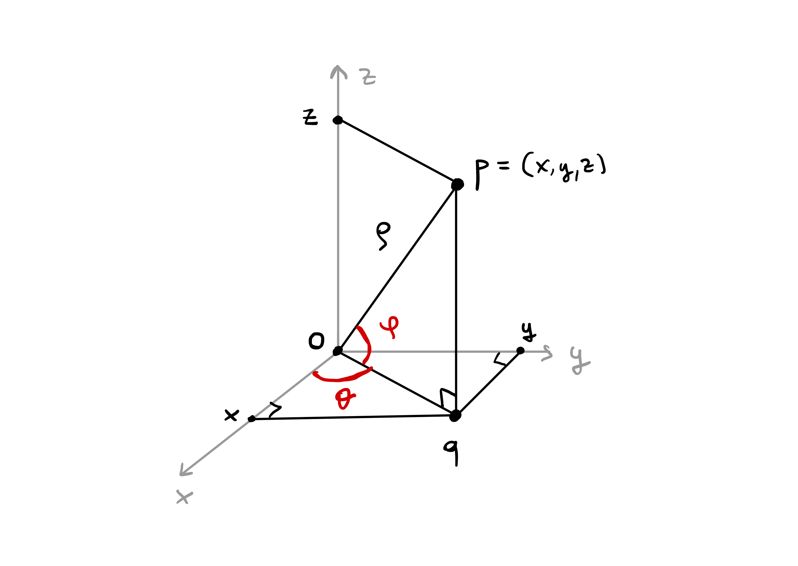
Example 57: Unit sphere in spherical coordinates
Consider the unit sphere in \(\mathbb{R}^3\) \[
\mathbb{S}^2 := \{ (x,y,z) \in \mathbb{R}^3 \, \colon \,x^2 + y^2 + z^2 = 1 \} \,.
\] Spherical coordinates allow us to define an atlas on \(\mathbb{S}^2\). In details, define the set \[
U := \left\{ (\theta,\varphi) \in \mathbb{R}^2 \, \colon \,\theta \in ( -\pi,\pi), \, \varphi\in \left( -\frac{\pi}{2} , \frac{\pi}{2} \right) \right\} \,,
\] and the map \({\pmb{\sigma}}\colon U \to \mathbb{R}^3\) by \[
{\pmb{\sigma}}( \theta , \varphi) := ( \cos(\theta) \cos(\varphi) , \sin(\theta) \cos(\varphi) , \sin (\varphi) ) \,.
\] In order to name some of the parallels and meridians on \(\mathbb{S}^2\), let us identify \(\mathbb{S}^2\) with the Earth. With reference to Figure 4.6, we make the following definitions:
The Equator Line corresponds to the angle \(\varphi= 0\), that is, \[ \mbox{Equator Line } = \mathbb{S}^2 \cap \{z = 0 \} \,. \]
The Greenwich meridian corresponds to the angle \(\theta = 0\). Hence: \[ \mbox{Greenwich } = \left\{ (\cos(\varphi) , 0 , \sin (\varphi)) \,, \,\, \varphi\in \left( -\frac{\pi}{2} , \frac{\pi}{2} \right) \right\} \,. \]
The Date Line is the meridian opposite to the Greenwich one. This corresponds to \(\theta = \pi\), and is parametrized by: \[ \mbox{Date Line } = \left\{ (- \cos(\varphi) , 0 , \sin (\varphi)) \,, \,\, \varphi\in \left( -\frac{\pi}{2} , \frac{\pi}{2} \right) \right\} \,. \]
The North Pole and South Pole have coordinates \[ N = (0,0,1) \,, \quad S = (0,0,-1) \,. \]
The Northern Hemisphere is the top-half of \(\mathbb{S}^2\), that is, \[ \mbox{Northern Hemisphere } = \mathbb{S}^2 \cap \{ z \geq 0 \} \,. \]
The Southern Hemisphere is the bottom-half of \(\mathbb{S}^2\), that is, \[ \mbox{Southern Hemisphere } = \mathbb{S}^2 \cap \{ z \leq 0 \} \,. \]
Notice that the angles \[ \theta = \pi \,, \quad \varphi= \pm \frac{\pi}{2} \] are excluded in the definition of \(U\). Therefore the parametrization \({\pmb{\sigma}}\) misses the Date Line, as well as the North and South Poles, see the left picture in Figure 4.7. In formulas: \[\begin{align*} {\pmb{\sigma}}(U) & = \mathbb{S}^2 \smallsetminus \{\mbox{Date Line, North Pole, South Pole}\} \\ & = \mathbb{S}^2 \smallsetminus \{ (x,0,z) \in \mathbb{R}^3 \, \colon \, x \leq 0 \} \,. \end{align*}\] Since \({\pmb{\sigma}}(U) \neq \mathbb{S}^2\), the chart \({\pmb{\sigma}}\) does not form an atlas. We need a second chart. An option is to define \(\widetilde{{\pmb{\sigma}}} \colon U \to \mathbb{R}^3\) by \[ \widetilde{{\pmb{\sigma}}} := ( - \cos (\theta)\cos(\varphi) , -\sin(\varphi) , - \sin(\theta) \cos (\varphi) ) \,. \] Notice that \(\widetilde{{\pmb{\sigma}}}\) is obtained by rotating \({\pmb{\sigma}}\) by \(\pi\) about the \(z\)-axis, and by \(\pi/2\) about the \(y\)-axis, see the right picture in Figure 4.7. Thus, \[ \widetilde{{\pmb{\sigma}}} (U) = \mathbb{S}^2 \smallsetminus \{ (x,y,0) \in \mathbb{R}^3 \, \colon \,x \geq 0 \} \,. \] In particular, we have shown that \[ \mathbb{S}^2 = {\pmb{\sigma}}(U) \cup \widetilde{{\pmb{\sigma}}}(U) \,. \]
Question. Show that \[ \mathcal{A} := \{ {\pmb{\sigma}}, \widetilde{{\pmb{\sigma}}} \} \] is a regular atlas for \(\mathbb{S}^2\).
Solution. Check that \({\pmb{\sigma}}\) and \(\widetilde{{\pmb{\sigma}}}\) are charts:
- \({\pmb{\sigma}}\) is smooth.
- \(U\) is open in \(\mathbb{R}^2\).
- Moreover \[ {\pmb{\sigma}}(U) = \mathbb{S}^2 \smallsetminus \{ (x,0,z) \in \mathbb{R}^3 \, \colon \,x \leq 0 \} \,. \] This is clearly an open set in \(\mathbb{S}^2\).
- The spherical coordinates on the sphere are invertible. Therefore \({\pmb{\sigma}}\) is invertible, with continuous inverse.
- Thus, \({\pmb{\sigma}}\) is a homeomorphism from \(U\) into \({\pmb{\sigma}}(U)\).
- This shows \({\pmb{\sigma}}\) is a chart of \(\mathbb{S}^2\).
- Since \(\widetilde{{\pmb{\sigma}}}\) is obtained from \({\pmb{\sigma}}\) by composing two rotations, we conclude that also \(\widetilde{{\pmb{\sigma}}}\) is a chart.
Show that \({\pmb{\sigma}}\) is a regular chart: \[\begin{align*} {\pmb{\sigma}}_{\theta} & = (-\sin(\theta) \cos(\varphi), \cos(\theta) \cos(\varphi), 0 ) \\ {\pmb{\sigma}}_{\varphi} & = ( - \cos(\theta) \sin(\varphi), -\sin(\theta) \sin(\varphi), \cos(\varphi) ) \,. \end{align*}\] Since \((\theta,\varphi)\in U\), we have \(\varphi\in ( -\pi/2, \pi/2 )\). Therefore, the last component of \({\pmb{\sigma}}_\varphi\) is non-zero, i.e., \[ \cos(\varphi) \neq 0 \,, \quad \forall \, \varphi\in \left( -\frac{\pi}{2},\frac{\pi}{2} \right) \,. \] Since the last component of \({\pmb{\sigma}}_\theta\) is \(0\), we conclude that \({\pmb{\sigma}}_\theta\) and \({\pmb{\sigma}}_{\varphi}\) are linearly independent for all \((\theta,\varphi) \in U\). Therefore \({\pmb{\sigma}}\) is regular. Alternatively, we could have computed: \[ {\pmb{\sigma}}_{\theta} \times {\pmb{\sigma}}_{\varphi} = ( \cos(\theta) \cos^2(\varphi), \sin(\theta) \cos^2(\varphi), \cos(\varphi)\sin(\varphi) ) \,, \] from which \[ \left\| {\pmb{\sigma}}_{\theta} \times {\pmb{\sigma}}_{\varphi} \right\| = |\cos (\varphi)| \, . \] Since \((\theta,\varphi)\in U\), we have \(\varphi\in ( -\pi/2, \pi/2 )\), and so \[ \left\| {\pmb{\sigma}}_{\theta} \times {\pmb{\sigma}}_{\varphi} \right\| = \cos (\varphi) \neq 0 \,. \] Thus \({\pmb{\sigma}}_{\theta}\) and \({\pmb{\sigma}}_{\varphi}\) are linearly independent, and \({\pmb{\sigma}}\) is regular.
Since \(\widetilde{{\pmb{\sigma}}}\) is obtained from \({\pmb{\sigma}}\) by applying two rotations, it follows that \(\widetilde{{\pmb{\sigma}}}\) is regular. Therefore \[ \mathcal{A} = \{ {\pmb{\sigma}}, \widetilde{{\pmb{\sigma}}}\} \] is a regular atlas for \(\mathbb{S}^2\).
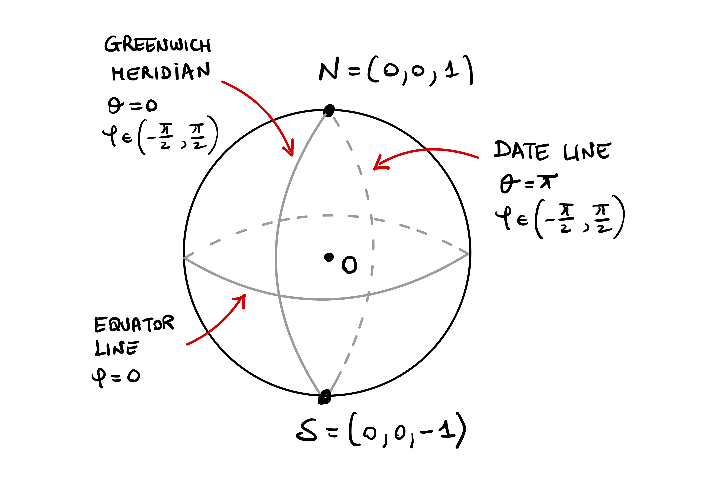
In alternative, the sphere can be parametrized in Cartesian coordinates.
Example 58: Unit sphere in Cartesian coordinates
Question. Define the following collection of charts on the sphere \(\mathbb{S}^2\) \[ \mathcal{A} = \{ {\pmb{\sigma}}_i \}_{i=1}^6 \,, \] where \({\pmb{\sigma}}_i\) is defined as follows: Let \[ U:= \{ (u,v) \in \mathbb{R}^2 \colon u^2 + v^2 < 1 \} \] be the unit open ball in \(\mathbb{R}^2\), and define \({\pmb{\sigma}}_i \colon U \to \mathbb{R}^3\) by \[\begin{align*} {\pmb{\sigma}}_1 (u,v) & = \left(u,v,\sqrt{1-u^2-v^2} \right) \\ {\pmb{\sigma}}_2 (u,v) & = \left(u,v,-\sqrt{1-u^2-v^2} \right) \\ {\pmb{\sigma}}_3 (u,v) & = \left(u,\sqrt{1-u^2-v^2},v \right) \\ {\pmb{\sigma}}_4 (u,v) & = \left(u, -\sqrt{1-u^2-v^2}, v \right) \\ {\pmb{\sigma}}_5 (u,v) & = \left(\sqrt{1-u^2-v^2} , u ,v \right) \\ {\pmb{\sigma}}_6 (u,v) & = \left(-\sqrt{1-u^2-v^2}, u,v, \right) \\ \end{align*}\] Prove that \(\mathcal{A}\) is a regular atlas.
Solution. Let us check that \(\mathbb{S}^2\) is a surface:
- \({\pmb{\sigma}}_1\) is smooth, since in \(U\) we have \(u^2+v^2<1\).
- \(U\) is open, being the open ball of radius \(1\) in \(\mathbb{R}^2\).
- \({\pmb{\sigma}}_1(U)\) is clearly open in \(\mathbb{S}^2\): This is because \({\pmb{\sigma}}_1(U)\) coincides with the Northern Hemisphere, with the Equator Line removed.
- The inverse of \({\pmb{\sigma}}_1\) is given by \({\pmb{\sigma}}^{-1} \colon {\pmb{\sigma}}_1(U) \to U\) defined by \[ {\pmb{\sigma}}^{-1}(u,v,\sqrt{1-u^2-v^2}) := (u,v) \,. \]
- \({\pmb{\sigma}}^{-1}\) is continuous, and thus \({\pmb{\sigma}}_1\) is a homeomorphism of \(U\) with \({\pmb{\sigma}}_1(U)\).
- With similar arguments, we can see that all the maps \({\pmb{\sigma}}_i\) are charts.
- Note that \({\pmb{\sigma}}_1\) charts the Northern Hemisphere (excluding the Equator), while \({\pmb{\sigma}}_2\) charts the Southern Hemisphere (excluding the Equator). Thus, \[ {\pmb{\sigma}}_1(U) \cup {\pmb{\sigma}}_2(U) = \mathbb{S}^2 \smallsetminus \{z = 0 \} \,. \] By including the other 4 charts \({\pmb{\sigma}}_3,{\pmb{\sigma}}_4,{\pmb{\sigma}}_5,{\pmb{\sigma}}_6\), we can cover the whole sphere, that is, \[ \mathbb{S}^2 = \bigcup_{i=1}^6 {\pmb{\sigma}}_i(U) \,. \] This shows that \(\mathcal{A} = \{ {\pmb{\sigma}}_i\}_{i=1}^6\) is an atlas for \(\mathbb{S}^2\).
Let us now check that \(\mathbb{S}^2\) is a regular surface:
- The first chart \({\pmb{\sigma}}_1\) has derivatives \[ ({\pmb{\sigma}}_1)_u = (1,0,f_u) \,, \quad ({\pmb{\sigma}}_1)_v = (0,1,f_v) \,, \] where \(f_u,f_v\) are the partial derivatives of \[ f(u,v):=\sqrt{1-u^2-v^2} \,. \] Therefore, the Jacobian matrix of \({\pmb{\sigma}}_1\) is \[ J{\pmb{\sigma}}_1 (u,v) = \left( \begin{array}{ccc} 1 & 0 \\ 0 & 1 \\ f_u & f_v \\ \end{array} \right) \,. \] The first minor of \(J{\pmb{\sigma}}_1\) is the identity matrix, and therefore \(J{\pmb{\sigma}}\) has rank 2, showing that \(({\pmb{\sigma}}_1)_u\) and \(({\pmb{\sigma}}_2)_v\) are linearly independent. Hence \({\pmb{\sigma}}_1\) is regular.
- Clearly, \(J{\pmb{\sigma}}_i\) has rank 2 for each of the charts \({\pmb{\sigma}}_i\). Therefore \({\pmb{\sigma}}_i\) is regular.
- We conclude that \(\mathcal{A}\) is a regular atlas, making \(\mathbb{S}^2\) a regular surface.
Let us conclude the section with the example of a non-regular surface.
Example 59: A non-regular chart
Question. Prove that the following chart is not regular \[
{\pmb{\sigma}}(u,v) = (u,v^2,v^3) \,.
\]
Solution. We have \[ {\pmb{\sigma}}_v = (0,2v,3v^2) \,, \qquad {\pmb{\sigma}}_v(u,0) = (0,0,0) \,. \] \({\pmb{\sigma}}\) is not regular because \({\pmb{\sigma}}_u\) and \({\pmb{\sigma}}_v\) are linearly dependent along the line \(L = \{ (u,0) \, \colon \,u \in \mathbb{R}\}\).
Looking at Figure Figure 4.8, it is clear that \(\mathcal{S}\) is not regular, since \(\mathcal{S}\) has a cusp along the line \({\pmb{\sigma}}(L)\).

4.4 Reparametrizations
We have already considered reparametrizations when we studied curves. In a similar way, one can reparametrize surface charts.
Definition 60: Reparametrization
Suppose that \(U, \widetilde{U} \subseteq \mathbb{R}^2\) are open sets and \[
{\pmb{\sigma}}\colon U \to \mathbb{R}^3 \,, \quad
\widetilde{{\pmb{\sigma}}} \colon \widetilde{U} \to \mathbb{R}^3 \,,
\] are surface charts. We say that \(\widetilde{{\pmb{\sigma}}}\) is a reparametrization of \({\pmb{\sigma}}\) if there exists a diffeomorphism \(\Phi \colon \widetilde{U} \to U\) such that \[
\widetilde{{\pmb{\sigma}}} = {\pmb{\sigma}}\circ \Phi \,.
\]
We will show that reparametrizations of regular charts are regular. To prove this, first we need to recall the chain rule for vector valued functions of several variables.
Remark 61: Chain rule
Suppose that \(U, \widetilde{U} \subseteq \mathbb{R}^2\) are open sets, \[
f \colon U \to \mathbb{R}^3
\] is smooth, and \[
\Phi \colon \widetilde{U} \to U
\] is a diffeomorphism. Define \(\tilde{f} \colon \widetilde{U} \to \mathbb{R}^3\) by composition: \[
\tilde{f} := f \circ \Phi \,.
\] Explicitly, the above means \[
\tilde{f}( \tilde{u},\tilde{v} ) = f ( \Phi ( \tilde{u},\tilde{v}) ) \,, \quad \forall \,\, (\tilde{u},\tilde{v} ) \in
\widetilde{U} \,.
\] We denote the components of \(f, \tilde{f}\) and \(\Phi\) by \[
\tilde{f} = (\tilde{f}^1, \tilde{f}^2, \tilde{f}^3) \,, \quad
f = (f^1,f^2,f^3) \,, \quad
\Phi = (\Phi^1, \Phi^2) \,.
\] The Jacobians are \[
J \tilde{f} = \left(
\begin{array}{cc}
\tilde{f}^1_{\tilde u} & \tilde{f}^1_{\tilde v} \\
\tilde{f}^2_{\tilde u} & \tilde{f}^2_{\tilde v} \\
\tilde{f}^3_{\tilde u} & \tilde{f}^3_{\tilde v}
\end{array}
\right) \,, \quad
J f = \left(
\begin{array}{cc}
{f}^1_{u} & {f}^1_{v} \\
{f}^2_{u} & {f}^2_{v} \\
{f}^3_{u} & {f}^3_{v}
\end{array}
\right) \,, \quad
J \Phi = \left(
\begin{array}{cc}
{\Phi}^1_{\tilde u} & {\Phi}^1_{\tilde v} \\
{\Phi}^2_{\tilde u} & {\Phi}^2_{\tilde v}
\end{array}
\right) \,.
\]
The chain rule states that \[ J \tilde{f} (\tilde u, \tilde v) = Jf ( \Phi (\tilde u, \tilde v) ) \, J\Phi (\tilde u, \tilde v) \,. \] By carrying out the matrix multiplication on the right hand sinde of the above identity, we obtain the chain rule in vectorial form: \[\begin{align*} \tilde{f}_{\tilde{u}} (\tilde{u}, \tilde{v}) & = f_u ( \Phi(\tilde{u}, \tilde{v}) ) \Phi_{\tilde{u}}^1 (\tilde{u}, \tilde{v}) + f_v ( \Phi(\tilde{u}, \tilde{v}) ) \Phi_{\tilde{u}}^2 (\tilde{u}, \tilde{v}) \\ \tilde{f}_{\tilde{v}} (\tilde{u}, \tilde{v}) & = f_u ( \Phi(\tilde{u}, \tilde{v}) ) \Phi_{\tilde{v}}^1 (\tilde{u}, \tilde{v}) + f_v ( \Phi(\tilde{u}, \tilde{v}) ) \Phi_{\tilde{v}}^2 (\tilde{u}, \tilde{v}) \end{align*}\] The above expressions are quite cumbersome. This motivates the introduction of more compact notations for reparametrizations and chain rule. Specifically, we denote the components of the diffeomorphism \(\Phi\) by \[\begin{align*} \Phi^1 \quad & \leadsto \quad (\tilde u, \tilde v) \mapsto u (\tilde u, \tilde v) \\ \Phi^2 \quad & \leadsto \quad (\tilde u, \tilde v) \mapsto v (\tilde u, \tilde v) \end{align*}\] Accordingly, the Jacobian of \(\Phi\) is denoted by: \[ J \Phi = \left( \begin{array}{cc} {\Phi}^1_{\tilde u} & {\Phi}^1_{\tilde v} \\ {\Phi}^2_{\tilde u} & {\Phi}^2_{\tilde v} \end{array} \right) \quad \leadsto \quad \left( \begin{array}{cc} \dfrac{\partial u}{\partial \tilde u} & \dfrac{\partial u}{\partial \tilde v} \\ \dfrac{\partial v}{\partial \tilde u} & \dfrac{\partial v}{\partial \tilde v} \end{array} \right) \,. \] Hence, the chain rule in vectorial form reads \[\begin{align*} \tilde{f}_{\tilde{u}} & = f_u \frac{\partial u}{\partial \tilde{u}} + f_v \frac{\partial v}{\partial \tilde{u}} \\ \tilde{f}_{\tilde{v}} & = f_u \, \frac{\partial u}{\partial \tilde{v}} + f_v \frac{\partial v}{\partial \tilde{v}} \end{align*}\]
We will now prove that the reparametrization of a regular chart is regular.
Theorem 62: Reparametrizations of regular charts are regular
Let \(U, \widetilde{U} \subseteq \mathbb{R}^2\) be open and \({\pmb{\sigma}}\colon U \to \mathbb{R}^3\) be regular. Suppose given a diffeomorphism \(\Phi \colon \widetilde{U} \to U\). The reparametrization \[
\widetilde{{\pmb{\sigma}}} \colon \widetilde{U} \to \mathbb{R}^3\,, \qquad \widetilde{{\pmb{\sigma}}} = {\pmb{\sigma}}\circ \Phi
\] is a regular chart, and it holds \[
\widetilde{{\pmb{\sigma}}}_{\tilde u} \times \widetilde{{\pmb{\sigma}}}_{\tilde v} =\det J \Phi \, \left( {{\pmb{\sigma}}}_{u}\times {{\pmb{\sigma}}}_{v}\right) \,.
\]
Proof
Since \({\pmb{\sigma}}\) is a regular chart we have that \({\pmb{\sigma}}_u\) and \({\pmb{\sigma}}_v\) are linearly independent. Hence \[
{\pmb{\sigma}}_u \times {\pmb{\sigma}}_v \neq 0 \,.
\] To see that \(\widetilde{{\pmb{\sigma}}}\) is regular it is sufficient to prove that \[
\widetilde{{\pmb{\sigma}}}_{\tilde u} \times \widetilde{{\pmb{\sigma}}}_{\tilde v} \neq 0 \,.
\tag{4.2}\] By chain rule we have \[\begin{align*}
\widetilde{{\pmb{\sigma}}}_{\tilde{u}} & =
{\pmb{\sigma}}_u \frac{\partial u}{\partial \tilde{u}} + {\pmb{\sigma}}_v \frac{\partial v}{\partial \tilde{u}} \\
\widetilde{{\pmb{\sigma}}}_{\tilde{v}} & =
{\pmb{\sigma}}_u \, \frac{\partial u}{\partial \tilde{v}} + {\pmb{\sigma}}_v \frac{\partial v}{\partial \tilde{v}}
\end{align*}\] By the properties of vector product we get \[\begin{align*}
\widetilde{{\pmb{\sigma}}}_{\tilde u} \times \widetilde{{\pmb{\sigma}}}_{\tilde v} & =
\left( {\pmb{\sigma}}_u \frac{\partial u}{\partial \tilde{u}} + {\pmb{\sigma}}_v \frac{\partial v}{\partial \tilde{u}} \right)
\times
\left( {\pmb{\sigma}}_u \, \frac{\partial u}{\partial \tilde{v}} + {\pmb{\sigma}}_v \frac{\partial v}{\partial \tilde{v}}
\right) \\
& = \frac{\partial u}{\partial \tilde{u}} \, \frac{\partial u}{\partial \tilde{v}} \, \left( {\pmb{\sigma}}_u \times {\pmb{\sigma}}_u \right) +
\frac{\partial u}{\partial \tilde{u}} \, \frac{\partial v}{\partial \tilde{v}} \, \left( {\pmb{\sigma}}_u \times {\pmb{\sigma}}_v \right) \\
& + \frac{\partial v}{\partial \tilde{u}} \, \frac{\partial u}{\partial \tilde{v}} \, \left( {\pmb{\sigma}}_v \times {\pmb{\sigma}}_u \right) +
\frac{\partial v}{\partial \tilde{u}} \, \frac{\partial v}{\partial \tilde{v}} \, \left( {\pmb{\sigma}}_v \times {\pmb{\sigma}}_v \right) \\
& = \left( \frac{\partial u}{\partial \tilde{u}} \, \frac{\partial v}{\partial \tilde{v}} - \frac{\partial v}{\partial \tilde{u}} \, \frac{\partial u}{\partial \tilde{v}} \right) \, \left( {{\pmb{\sigma}}}_{u}\times {{\pmb{\sigma}}}_{v}\right) \\
& = \det \left(
\begin{array}{cc}
\dfrac{\partial u}{\partial \tilde u} & \dfrac{\partial u}{\partial \tilde v} \\
\dfrac{\partial v}{\partial \tilde u} & \dfrac{\partial v}{\partial \tilde v}
\end{array}
\right) \, \left( {{\pmb{\sigma}}}_{u}\times {{\pmb{\sigma}}}_{v}\right) \\
& = \det J \Phi \, \left( {{\pmb{\sigma}}}_{u}\times {{\pmb{\sigma}}}_{v}\right) \,.
\end{align*}\] Since \(\Phi\) is a diffeomorphism, we have that \[
\det J\Phi \neq 0 \,,
\] from which we conclude (4.2).
4.5 Transition maps
Suppose that a surface \(\mathcal{S}\) has atlas given by \(\mathcal{A} = \{ {\pmb{\sigma}}_i \}_{i \in I}\). By definition of atlas, it holds that \[ \mathcal{S}= \bigcup_{i \in I} {\pmb{\sigma}}_i (U_i) \,. \] As the images \({\pmb{\sigma}}_i (U_i)\) are open in \(\mathcal{S}\), and cover the whole surface, in general it will happen that two (or more) images will overlap, i.e., \[ I := {\pmb{\sigma}}_i(U_i) \cap {\pmb{\sigma}}_j(U_j) \neq \emptyset \,, \] for some \(i \neq j\). It is natural to ask whether the charts \({\pmb{\sigma}}_i\) and \({\pmb{\sigma}}_j\) are reparametrizations of each other on the overlapping region \(I\), see Figure 4.9. This is indeed the case, see Theorem 65 below. Such reparametrization is called a transition map.
Definition 63: Transition map
Let \(\mathcal{S}\) be a regular surface, \({\pmb{\sigma}}\colon U \to \mathcal{S}\), \(\widetilde{{\pmb{\sigma}}}\colon \widetilde{U}\to \mathcal{S}\) regular charts. Suppose the images of \({\pmb{\sigma}}\) and \(\widetilde{{\pmb{\sigma}}}\) overlap \[
I := {\pmb{\sigma}}(U) \cap \widetilde{{\pmb{\sigma}}} (\widetilde{U}) \neq \emptyset \,.
\] \(I\) is open in \(\mathcal{S}\), being intersection of open sets. Define \[
V := {\pmb{\sigma}}^{-1}(I) \subseteq U \,, \quad \widetilde{V} := \widetilde{{\pmb{\sigma}}}^{-1} (I) \subseteq \widetilde{U} \,.
\] \(V\) and \(\widetilde{V}\) are open, by continuity of \({\pmb{\sigma}}\) and \(\widetilde{{\pmb{\sigma}}}\). Moreover, as \({\pmb{\sigma}}\) and \(\widetilde{{\pmb{\sigma}}}\) are homeomorphisms, we have \({\pmb{\sigma}}(V) = \widetilde{{\pmb{\sigma}}} (\widetilde{V} ) = I\). Therefore, they are well defined the restriction homeomorphisms \[
{\pmb{\sigma}}|_{V} \colon V \to I \,, \quad
\widetilde{{\pmb{\sigma}}} |_{\widetilde{V}} \colon \widetilde{V} \to I \,.
\] The transition map from \({\pmb{\sigma}}\) to \(\widetilde{{\pmb{\sigma}}}\) is the homeomorphism \[
\Phi \colon \widetilde{V} \to V \,, \quad \Phi := {\pmb{\sigma}}^{-1} \circ \widetilde{{\pmb{\sigma}}} \,.
\]
The following theorem states that the transition maps between regular charts are diffeomorphisms. The proof is somewhat technical and relies on the Implicit Function Theorem. A similar argument will be used for Lemma 80 in Section 4.7. We have chosen to omit the proof here, but interested readers can refer to page 117 of (Pressley 2010) for details.
Theorem 64
Transition maps between regular charts are diffeomorphisms.
The immediate consequence of Theorem 64 is that transition maps are reparametrizations. To fix notations, let us state this fact precisely.
Theorem 65: Transition maps are reparametrizations
Let \(\mathcal{S}\) be a regular surface, \({\pmb{\sigma}}\colon U \to \mathcal{S}\), \(\widetilde{{\pmb{\sigma}}}\colon \widetilde{U}\to \mathcal{S}\) regular charts, with \(I := {\pmb{\sigma}}(U) \cap \widetilde{{\pmb{\sigma}}} (\widetilde{U}) \neq \emptyset\). Define the transition map \[
\Phi = {\pmb{\sigma}}^{-1}\circ \widetilde{{\pmb{\sigma}}}\colon \widetilde{V} \to V , \quad V = {\pmb{\sigma}}^{-1}(I) , \quad
\widetilde{V} = \widetilde{{\pmb{\sigma}}}^{-1}(I) \,.
\] Then \({\pmb{\sigma}}\) and \(\widetilde{{\pmb{\sigma}}}\) are reparametrization of each other, with \[
\widetilde{{\pmb{\sigma}}}= {\pmb{\sigma}}\circ \Phi \,, \qquad {\pmb{\sigma}}= \widetilde{{\pmb{\sigma}}}\circ \Phi^{-1} \,.
\]
Example 66: Reparametrization of \(\mathbb{S}^2\)
In Example 57 and Example 58 we gave two different regular parametrizations of the sphere \(\mathbb{S}^2\):
Spherical coordinates: The sphere, excluding the Date Line and the Poles, is charted by \[ {\pmb{\sigma}}(\theta,\varphi) = ( \cos(\theta) \cos(\varphi), \sin(\theta) \cos(\varphi), \sin(\varphi) ) \,, \] defined over the set \[ U = \left\{ (\theta,\varphi) \in \mathbb{R}^2 \, \colon \, \theta \in (-\pi,\pi) \,, \,\, \varphi\in \left( -\frac{\pi}{2},\frac{\pi}{2} \right) \right\} \,. \]
Cartesian coordinates: The Northen Hemisphere is charted by \[ \widetilde{{\pmb{\sigma}}}(u,v) = (u,v, \sqrt{1 - u^2 - v^2 }) \,, \] defined over the set \[ \widetilde{U} = \{ (u,v) \in \mathbb{R}^2 \, \colon \, u^2 + v^2 < 1 \} \,. \]
The intersection of the images \[ I = {\pmb{\sigma}}(U) \cap \widetilde{{\pmb{\sigma}}} (\widetilde{U}) \] is non-empty. Indeed, the two charts overlap across the Northern Hemisphere, excluding the Date Line and North Pole. Define the open sets \[ V := {\pmb{\sigma}}^{-1} (I) \,, \quad \widetilde{V} := \widetilde{{\pmb{\sigma}}}^{-1} (I) \,, \] and the transition map \[ \Phi \colon \widetilde{V} \to V \,, \quad \Phi:= {\pmb{\sigma}}^{-1} \circ \widetilde{{\pmb{\sigma}}} \,. \] Since \({\pmb{\sigma}}\) and \(\widetilde{{\pmb{\sigma}}}\) are regular, Theorem 65 guarantees that \(\Phi\) is a reparametrization map. Therefore \({\pmb{\sigma}}\) and \(\widetilde{{\pmb{\sigma}}}\) are reparametrization of each other, with \[ \widetilde{{\pmb{\sigma}}} = {\pmb{\sigma}}\circ \Phi \,. \] Conclusion: the two parametrizations \({\pmb{\sigma}}\) and \(\widetilde{{\pmb{\sigma}}}\) of \(\mathbb{S}^2\) are interchangeable!
Important
Theorem 65 demonstrates that there is no single preferred way to parametrize a surface: When two regular charts overlap, they are reparametrizations of each other in the overlapping region.
This observation has a significant consequence:
It allows us to define a property of any regular surface by using charts, as long as we ensure that the definition is independent of reparametrization and, therefore, of the specific chart chosen.
4.6 Functions between surfaces
We aim to define the concept of a smooth function \[ f \colon \mathcal{S}_1 \to \mathcal{S}_2 \,, \] where \(\mathcal{S}_1\) and \(\mathcal{S}_2\) are regular surfaces. Up to this point, we only know how to define smooth functions from \(\mathbb{R}^n\) to \(\mathbb{R}^m\). The idea is to use surface charts to extend this definition of smoothness to functions between surfaces, see Figure 4.10.
Definition 67: Smooth functions between surfaces
Let \(\mathcal{S}_1\) and \(\mathcal{S}_2\) be regular surfaces and \(f \colon \mathcal{S}_1 \to \mathcal{S}_2\) a map.
\(f\) is smooth at \(\mathbf{p}\in \mathcal{S}_1\), if there exist charts \[ {\pmb{\sigma}}_i \colon U_i \to \mathcal{S}_i \,\, \text{such that} \,\, \mathbf{p}\in {\pmb{\sigma}}_1(U_1)\,, \, f(\mathbf{p}) \in {\pmb{\sigma}}_2(U_2) \,, \] and that the following map is smooth \[ \Psi \colon U_1 \to U_2 \,, \quad \Psi = {\pmb{\sigma}}_2^{-1} \circ f \circ {\pmb{\sigma}}_1 \,. \]
\(f\) is smooth, if it is smooth for each \(\mathbf{p}\in \mathcal{S}_1\).
Remark 68
Definition 67 makes sense because \({\pmb{\sigma}}_2^{-1}\) exists.
The map \({\pmb{\sigma}}_2^{-1} \circ f \circ {\pmb{\sigma}}_1\) is only defined for the points \(\mathbf{x}\in U_1\) such that \[ f ( {\pmb{\sigma}}_1 (\mathbf{x}) ) \in {\pmb{\sigma}}_2 (U_2) \,. \]
The function \({\pmb{\sigma}}_2^{-1} \circ f \circ {\pmb{\sigma}}_1\) maps from \(\mathbb{R}^2\) into \(\mathbb{R}^2\), therefore smoothness is intended in the classical sense.
Definition 67 is well-posed: Smoothness of \(f\) does not depend on the specific choice of charts \({\pmb{\sigma}}_1\) and \({\pmb{\sigma}}_2\).
Indeed, suppose that \(\widetilde{{\pmb{\sigma}}}_{i} \colon \widetilde{U}_i \to {\mathcal{S}}_i\) are charts such that \[ \mathbf{p}\in \widetilde{{\pmb{\sigma}}}_1( \widetilde{U}_1) \,, \quad f(\mathbf{p}) \in \widetilde{{\pmb{\sigma}}}_2(\widetilde{U}_2) \,. \] In particular we have \[ {\pmb{\sigma}}_i(U_i) \cap \widetilde{{\pmb{\sigma}}}_i (\widetilde{U}_i) \neq \emptyset \,. \] As \(\mathcal{S}_1\) and \(\mathcal{S}_2\) are regular surfaces, by Theorem 64 there exist open sets \[ V_i \subseteq U_i \,, \qquad \widetilde{V}_i \subseteq \widetilde{U}_i \,, \] and reparametrization maps \[ \Phi_i \colon \widetilde{V}_i \to V_i \,, \qquad \widetilde{{\pmb{\sigma}}}_i = {\pmb{\sigma}}_i \circ \Phi_i \,. \] Hence \[\begin{align*} \widetilde{{\pmb{\sigma}}}_2^{-1} \circ f \circ \widetilde{{\pmb{\sigma}}}_1 & = \widetilde{{\pmb{\sigma}}}_2^{-1} \circ ( {\pmb{\sigma}}_2 \circ {\pmb{\sigma}}_2^{-1} ) \circ f \circ ( {\pmb{\sigma}}_1 \circ {\pmb{\sigma}}_1^{-1} ) \circ \widetilde{{\pmb{\sigma}}}_1 \\ & = ( \widetilde{{\pmb{\sigma}}}_2^{-1} \circ {\pmb{\sigma}}_2 ) \circ ( {\pmb{\sigma}}_2^{-1} \circ f \circ {\pmb{\sigma}}_1 ) \circ ({\pmb{\sigma}}_1^{-1} \circ \widetilde{{\pmb{\sigma}}}_1 ) \\ & = \Phi_2^{-1} \circ ( {\pmb{\sigma}}_2^{-1} \circ f \circ {\pmb{\sigma}}_1 ) \circ \Phi_1 \,. \end{align*}\] Since \(\Phi_1\), \(\Phi_2^{-1}\) and \({\pmb{\sigma}}_2^{-1} \circ f \circ {\pmb{\sigma}}_1\) are smooth, we conclude that \[ \widetilde{{\pmb{\sigma}}}_2^{-1} \circ f \circ \widetilde{{\pmb{\sigma}}}_1 \] is smooth. Hence Definition 67 does not depend on the choice of charts.
Proposition 69
If \(f \colon \mathcal{S}_1 \to \mathcal{S}_2\) and \(g \colon \mathcal{S}_2 \to \mathcal{S}_3\) are smooth maps between surfaces, then the composition \[
(g \circ f) \colon \mathcal{S}_1 \to \mathcal{S}_3
\] is smooth.
Proof
Fix \(\mathbf{p}\in \mathcal{S}_1\) and choose charts \[
{\pmb{\sigma}}_i \colon U_i \to \mathcal{S}_i
\] such that \[
\mathbf{p}\in {\pmb{\sigma}}_1 (U_1) \,, \quad
f(\mathbf{p}) \in {\pmb{\sigma}}_2 (U_2) \,, \quad
g(f(\mathbf{p})) \in {\pmb{\sigma}}_3 (U_3) \,.
\] Since \(f\) and \(g\) are smooth, by definition the maps \[
{\pmb{\sigma}}_2^{-1} \circ f \circ {\pmb{\sigma}}_1 \,, \qquad {\pmb{\sigma}}_3^{-1} \circ g \circ {\pmb{\sigma}}_2 \,,
\] are smooth. Hence \[
{\pmb{\sigma}}_3^{-1} \circ ( g \circ f ) \circ {\pmb{\sigma}}_1 = ( {\pmb{\sigma}}_3^{-1} \circ g \circ {\pmb{\sigma}}_2 ) \circ ({\pmb{\sigma}}_2^{-1} \circ f \circ {\pmb{\sigma}}_1)
\] is smooth, ending the proof.
The inverse function of a chart is a differentiable.
Proposition 70: Inverse of a regular chart is smooth
Let \({\pmb{\sigma}}\colon U \to \mathbb{R}^3\) be regular. Then \({\pmb{\sigma}}^{-1} \colon {\pmb{\sigma}}(U) \to U\) is smooth.
Proof
First of all, note that:
\({\pmb{\sigma}}^{-1}\) exists, as \({\pmb{\sigma}}\) is required to be a homeomorphism;
\({\pmb{\sigma}}(U)\) can be regarded as a surface, being an open subset of the surface \(\mathcal{S}\).
Let \(\mathbf{p}\in {\pmb{\sigma}}(U)\) and \(\widetilde{{\pmb{\sigma}}}\colon \widetilde{U}\to \mathcal{S}\) be a regular chart at \(\mathbf{p}\), that is, \[ p \in \widetilde{{\pmb{\sigma}}}(\widetilde{U}) \,. \] In order to prove that \({\pmb{\sigma}}^{-1} \colon {\pmb{\sigma}}(U) \to \mathbb{R}^2\) is a differentiable map, we need to check that the map \[ {\pmb{\sigma}}^{-1} \circ \widetilde{{\pmb{\sigma}}} \] is differentiable (where it is defined). To this end, define the intersection \[ I := {\pmb{\sigma}}(U) \cap \widetilde{{\pmb{\sigma}}}(\widetilde{U})\,. \] Clearly \(I \neq \emptyset\), since \(\mathbf{p}\in I\). We can then define the open sets \[ V = {\pmb{\sigma}}^{-1}(I)\,, \quad \widetilde{V} = \widetilde{{\pmb{\sigma}}}^{-1}(I) \,, \] and the transition map \[ \Phi \colon \widetilde{V} \to V \,, \quad \Phi := {\pmb{\sigma}}^{-1} \circ \widetilde{{\pmb{\sigma}}}\,. \] By Theorem 64, the map \(\Phi\) is differentiable. As \(\Phi = {\pmb{\sigma}}^{-1} \circ \widetilde{{\pmb{\sigma}}}\), the proof is concluded.
The following Theorem gives a very useful sufficient condition to check differentiability.
Theorem 71
Let \(\mathcal{S}_1\) and \(\mathcal{S}_2\) be regular surfaces. Assume:
- \(V \subseteq \mathbb{R}^3\) is open, with \(\mathcal{S}_1 \subseteq V\),
- \(f \colon V \to \mathbb{R}^3\) is differentiable, with \(f(\mathcal{S}_1) \subseteq \mathcal{S}_2\).
The restriction \(f |_{\mathcal{S}_1} \colon \mathcal{S}_1 \to \mathcal{S}_2\) is a smooth map.
Proof
Let \(\mathbf{p}\in \mathcal{S}_1\) and charts \({\pmb{\sigma}}_1: U_1 \to \mathcal{S}_1\), \({\pmb{\sigma}}_2: U_2 \to \mathcal{S}_2\), with \[
p \in {\pmb{\sigma}}_1(U_1) \,, \qquad f(\mathbf{p}) \in {\pmb{\sigma}}_2(U_2) \,.
\] The map \[
{\pmb{\sigma}}_2^{-1} \circ f \circ {\pmb{\sigma}}_1: U_1 \to U_2
\] is differentiable because composition of differentiable functions: \({\pmb{\sigma}}_2^{-1}\) is differentiable by Proposition 70; \(f\) is differentiable by assumption; \({\pmb{\sigma}}_1\) is differentiable by definition of chart.
Example 72
Let \(\mathcal{S}\) be a regular surface.
Assume \(\mathcal{S}\) is symmetric relative to the \(\{z=0\}\) plane, that is, \[ (x, y, z) \in \mathcal{S}\quad \iff \quad (x, y,-z) \in \mathcal{S}\,. \] Then the map \(f \colon \mathcal{S}\to \mathcal{S}\), which takes \(p \in S\) into its symmetrical point, is differentiable. This is because \(f\) is the restriction to \(\mathcal{S}\) of the map \[ f\colon \mathbb{R}^3 \to \mathbb{R}^3, \qquad f(x, y, z)=(x, y,-z) \,, \] which is clearly differentiable.
Let \(\pi \colon \mathcal{S}\to \mathbb{R}^2\) be the map which takes each \(\mathbf{p}\in \mathcal{S}\) into its orthogonal projection over \[ \mathbb{R}^2 = \{ (x,y,0) \,\colon \, x,y \in \mathbb{R}\} \,. \] \(\pi\) is differentiable because restriction of the differentiable map \[ \pi \colon \mathbb{R}^3 \to \mathbb{R}^3 \,, \quad \pi (x,y,z) = (x,y,0) \,. \]
Let \(f \colon \mathbb{R}^3 \to \mathbb{R}^3\) be given by \[ f(x, y, z)=(x a, y b, z c) \,, \] where \(a, b\), and \(c\) are non-zero real numbers. Clearly, \(f\) is differentiable. Therefore, the restriction \(f|_{\mathbb{S}^2}\) is a differentiable map from the Sphere \[ \mathbb{S}^2 = \left\{(x, y, z) \in \mathbb{R}^3 \, \colon \, x^2+y^2+z^2=1\right\} \] into the Ellipsoid \[ \mathbb{E} = \left\{(x, y, z) \in \mathbb{R}^3 \, \colon \, \frac{x^2}{a^2}+\frac{y^2}{b^2}+\frac{z^2}{c^2}=1\right\} \,, \] because \(f(\mathbb{S}^2) \subseteq \mathbb{E}\).
Definition 73: Diffeomorphism of surfaces
Let \(\mathcal{S}_1\) and \(\mathcal{S}_2\) be regular surfaces.
\(f \colon \mathcal{S}_1 \to \mathcal{S}_2\) is a diffeomorphism, if \(f\) is smooth and admits smooth inverse.
\(\mathcal{S}_1\), \(\mathcal{S}_2\) are diffeomorphic if there exists \(f \colon \mathcal{S}_1 \to \mathcal{S}_2\) diffeomorphism.
The key ideas around diffeomorphisms are:
Two diffeomorphic surfaces are essentially the same.
It is easy to check that being diffeomorphic is an equivalence relation on the set of regular surfaces. Therefore, two diffeomorphic surfaces can be identified.
Two diffeomorphic surfaces have essentially the same charts, as shown in the next Proposition.
Proposition 74: Image of charts under diffeomorphisms
Let \(\mathcal{S}\) and \(\widetilde{\mathcal{S}}\) be regular surfaces, \(f \colon \mathcal{S}\to \widetilde{\mathcal{S}}\) diffeomorphism. If \({\pmb{\sigma}}\colon U \to \mathcal{S}\) is a regular chart for \(\mathcal{S}\) at \(\mathbf{p}\), then \[
\widetilde{{\pmb{\sigma}}} \colon U \to \widetilde{\mathcal{S}} \,, \qquad \widetilde{{\pmb{\sigma}}} := f \circ {\pmb{\sigma}}\,,
\] is a regular chart for \(\widetilde{\mathcal{S}}\) at \(f(\mathbf{p})\).
Proof
Let \({\pmb{\sigma}}_2 \colon U_2 \to \widetilde{\mathcal{S}}\) be a regular chart for \(\widetilde{\mathcal{S}}\) at \(f(\mathbf{p})\). By definition of diffeomorphism between surfaces, the map \[
\Phi \colon U \to U_2 \,, \qquad \Phi := {\pmb{\sigma}}_2^{-1} \circ f \circ {\pmb{\sigma}}\,,
\] is a diffeomorphism. Therfore \[
(f \circ {\pmb{\sigma}}) (u,v) = {\pmb{\sigma}}_2 \left( \Phi(u,v) \right)
\] with \(\Phi\) diffeomorphism, meaning that \(f \circ {\pmb{\sigma}}\) is a reparametrization of \({\pmb{\sigma}}_2\). Since \({\pmb{\sigma}}_2\) is regular, by Theorem 62 we deduce that \(f \circ {\pmb{\sigma}}\) is regular.
We conclude with the definition of local diffeomorphism between surfaces.
Definition 75: Local diffeomorphism
Let \(\mathcal{S}_1\) and \(\mathcal{S}_2\) be regular surfaces, and \(f \colon \mathcal{S}_1 \to \mathcal{S}_2\) smooth.
\(f\) is a local diffeomorphism at \(\mathbf{p}\in \mathcal{S}_1\) if:
- There exists An open set \(V \subseteq \mathcal{S}_1\) with \(\mathbf{p}\in V\);
- \(f(V) \subseteq \mathcal{S}_2\) is open;
- \(f \colon V \to f(V)\) is smooth between surfaces.
\(f\) is a local diffeomorphism in \(\mathcal{S}_1\), if it is a local diffeomorphism at each \(\mathbf{p}\in \mathcal{S}_1\).
\(\mathcal{S}_1\) is locally diffeomorphic to \(\mathcal{S}_2\), if for all \(\mathbf{p}\in \mathcal{S}_1\) there exists \(f\) local diffeomorphism at \(\mathbf{p}\).
Two remarks:
- The above definition is well-posed, since open subsets of surfaces are themselves surfaces.
- Being locally diffeomorphic is not an equivalence relation: \(\mathcal{S}_1\) locally diffeomorphic to \(\mathcal{S}_2\) does not imply that \(\mathcal{S}_2\) is locally diffeomorphic to \(\mathcal{S}_1\).
4.7 Tangent plane
The tangent vector to a curve \({\pmb{\gamma}}\colon \mathbb{R}\to \mathbb{R}^3\) at the point \({\pmb{\gamma}}(t)\) is just \(\dot{{\pmb{\gamma}}}(t)\), the derivative of the curve at \(t\). Tangent vectors to a surface \(\mathcal{S}\) can be defined as the tangent vectors of curves \({\pmb{\gamma}}\colon \mathbb{R}\to \mathcal{S}\) with values in \(\mathcal{S}\), see Figure 4.11.
To simplify statements, we make the following assumption.
Assumption 76
From now on, all the surfaces will be regular and all the charts will be regular.
Definition 77: Tangent vectors and tangent plane
Let \(\mathcal{S}\) be a surface and \(\mathbf{p}\in \mathcal{S}\).
\(\mathbf{v}\in \mathbb{R}^3\) is a tangent vector to \(\mathcal{S}\) at \(\mathbf{p}\), if there exists a smooth curve \({\pmb{\gamma}}\colon (-\varepsilon,\varepsilon) \to \mathbb{R}^3\) such that \[ {\pmb{\gamma}}(-\varepsilon, \varepsilon) \subseteq \mathcal{S}\,, \quad {\pmb{\gamma}}(0) = \mathbf{p}\,, \quad \mathbf{v}= \dot{{\pmb{\gamma}}}(0) \,. \]
The tangent plane of \(\mathcal{S}\) at \(\mathbf{p}\) is the set \[ T_{\mathbf{p}} \mathcal{S}:= \{ \mathbf{v}\in \mathbb{R}^3 \, \colon \,\mathbf{v}\, \mbox{ tangent vector of } \, \mathcal{S}\, \mbox{ at } \, \mathbf{p}\} \,. \]
Let us start with the most basic example: We want to compute the tangent plane to an open set in \(\mathbb{R}^2\).
Example 78
Let \(U \subseteq \mathbb{R}^2\) be open and \(\mathbf{p}\in U\). Then \[
T_{\mathbf{p}} U = \mathbb{R}^2 \,.
\]
Proof. Suppose first that \(\mathbf{v}\in T_{\mathbf{p}} U\). By definition of tangent vector, there exists a smooth curve \[ \gamma \colon (-\varepsilon,\varepsilon) \to U \] such that \[ {\pmb{\gamma}}(0) = \mathbf{p}\, \qquad \dot{{\pmb{\gamma}}}(0)=\mathbf{v}\,. \] Since \(U \subseteq \mathbb{R}^2\), it follows that \({\pmb{\gamma}}\) is a plane curve, so that \[ \mathbf{v}= \dot{{\pmb{\gamma}}}(0) \in \mathbb{R}^2 \,. \] Conversely, let \(\mathbf{v}\in \mathbb{R}^2\). Since \(\mathbf{p}\in U\), and \(U\) is open, there exists \(\varepsilon>0\) such that \(B_{\varepsilon}(\mathbf{p}) \subseteq U\). Define the curve \[ {\pmb{\gamma}}\colon (-\varepsilon,\varepsilon) \to \mathbb{R}^3 \,, \quad {\pmb{\gamma}}(t):= \mathbf{p}+ t \mathbf{v}\,. \] By construction \[ {\pmb{\gamma}}(-\varepsilon,\varepsilon) \subseteq B_{\varepsilon} (\mathbf{p}) \subseteq U \,, \quad {\pmb{\gamma}}(0) = \mathbf{p}\,, \quad \dot{{\pmb{\gamma}}}(0)= \mathbf{v}\,, \] showing that \(\mathbf{v}\in T_{\mathbf{p}} U\).
In the above example, we have seen that \[ T_{\mathbf{p}} U = \mathbb{R}^2 \] for any open set \(U \subseteq \mathbb{R}^2\). In general, if \(\mathcal{S}\) is a regular surface, then \(T_{\mathbf{p}} \mathcal{S}\) is a vector space isomorphic to \(\mathbb{R}^2\), in symbols \[ T_{\mathbf{p}} \mathcal{S}\simeq \mathbb{R}^2 \,. \] This means that there exists a map \[ \Phi \colon T_{\mathbf{p}} \mathcal{S}\to \mathbb{R}^2 \] which is an isomorphism of vector spaces, i.e., \(\Phi\) is invertible and linear: \[ \Phi(\lambda \mathbf{v}+ \mu \mathbf{w}) = \lambda \Phi(\lambda) + \mu \Phi( \mathbf{w}) \,, \] for all \(\mathbf{v}, \mathbf{w}\in T_{\mathbf{p}}\mathcal{S}\) and \(\lambda, \mu \in \mathbb{R}\).
To prove this result, we need a Lemma concerning curves with values on surfaces: The lemma says that when \(\mathcal{S}\) is regular, all the smooth curves \({\pmb{\gamma}}\colon (-\varepsilon,\varepsilon) \to \mathbb{R}^3\) with values in \(\mathcal{S}\), are of the form \[ {\pmb{\gamma}}(t) = {\pmb{\sigma}}(u(t),v(t)) \,, \quad \forall \, t \in (-\varepsilon,\varepsilon)\,, \] for a pair of smooth functions \(u,v \colon (-\varepsilon,\varepsilon) \to \mathbb{R}\).
Lemma 79: Curves with values on surfaces
Let \({\pmb{\sigma}}\colon U \to \mathbb{R}^3\) be a regular chart and \(\mathcal{S}:= {\pmb{\sigma}}(U)\). Let \(\mathbf{p}\in \mathcal{S}\) and \((u_0,v_0) = {\pmb{\sigma}}^{-1}(\mathbf{p})\). Assume \({\pmb{\gamma}}\colon (-\varepsilon,\varepsilon) \to \mathbb{R}^3\) is a smooth curve such that \[
{\pmb{\gamma}}(-\varepsilon, \varepsilon) \subseteq \mathcal{S}\,, \quad {\pmb{\gamma}}(0) = \mathbf{p}\,.
\] There exist smooth functions \(u , v \colon (-\varepsilon,\varepsilon) \to \mathbb{R}\) such that \[
{\pmb{\gamma}}(t) = {\pmb{\sigma}}( u(t), v(t) ) \,, \,\, \forall \, t \in (-\varepsilon,\varepsilon) \,, \quad u(0)=u_0 \,, \,\, v(0) = v_0 \,.
\]
Proof
To visualize the geometric ideas of this part of the proof, see Figure 4.12. Let \(\mathbf{p}\) in \(\mathcal{S}={\pmb{\sigma}}(U)\), and assume given a smooth curve \({\pmb{\gamma}}\colon (-\varepsilon,\varepsilon) \to \mathbb{R}^3\) such that \({\pmb{\gamma}}(0) = \mathbf{p}\) and \[
{\pmb{\gamma}}(t) \in \mathcal{S}\,, \quad \forall \, t \in (-\varepsilon,\varepsilon) \,.
\] Denote the coordinates of the chart \({\pmb{\sigma}}\colon U \to \mathbb{R}^3\) by \[
{\pmb{\sigma}}(u,v) = (f(u,v), g(u,v), h(u, v)) \,.
\] The Jacobian of \({\pmb{\sigma}}\) is \[
J{\pmb{\sigma}}=
\left(
\begin{array}{cc}
f_u & f_v \\
g_u & g_v \\
h_u & h_v \\
\end{array}
\right) \,.
\] Since \({\pmb{\sigma}}\) is regular, by definition \(J{\pmb{\sigma}}\) has rank-2 at \((u_0,v_0)\). This means that at least one of the 3 minors \[
\left(
\begin{array}{cc}
f_u & f_v \\
g_u & g_v
\end{array}
\right) \,, \quad
\left(
\begin{array}{cc}
f_u & f_v \\
h_u & h_v \\
\end{array}
\right) \,, \quad
\left(
\begin{array}{cc}
g_u & g_v \\
h_u & h_v \\
\end{array}
\right) \,.
\] is invertible. WLOG, assume the first is invertible (the proof in case the other two are invertible is similar). Define the map
\[
F \colon U \subseteq \mathbb{R}^2 \to \mathbb{R}^2 \,, \qquad F(u,v) := ( f(u,v), g(u,v) ) \,.
\] The Jacobian of \(F\) is \[
JF =
\left(
\begin{array}{cc}
f_u & f_v \\
g_u & g_v
\end{array}
\right) \,,
\] which is invertible at \((u_0,v_0)\) by assumption. Hence, by the Inverse Function Theorem 39, there exist
- \(U_0 \subseteq U\) open set, with \((u_0,v_0) \in U_0\),
- \(V \subseteq \mathbb{R}^2\) open set, with \(F(u_0,v_0) \in V\),
such that \[ F \colon U_0 \to V \] is a diffeomorphism. In particular, the inverse function \[ F^{-1} \colon V \to U_0 \] is smooth. Define the projection map \[ \pi \colon \mathbb{R}^3 \to \mathbb{R}^2 \,, \quad \pi(x,y,z) = (x,y) \,, \] and notice that, by construction, \[ F = \pi \circ {\pmb{\sigma}}\,. \] The composition \[ \pi \circ {\pmb{\gamma}}\colon (\varepsilon,\varepsilon) \to \mathbb{R}^2 \] is smooth, and such that \[\begin{align*} (\pi \circ {\pmb{\gamma}}) (0) & = \pi ({\pmb{\gamma}}(0)) \\ & = \pi (\mathbf{p}) \\ & = \pi ( {\pmb{\sigma}}(u_0,v_0) ) \\ & = F(u_0,v_0) \,. \end{align*}\] Since \(F(u_0,v_0) \in V\), with \(V\) open in \(\mathbb{R}^2\), and since \(\pi \circ {\pmb{\gamma}}\) is continuous, there exists \(\varepsilon_0 \in (0,\varepsilon]\) such that \[ (\pi \circ {\pmb{\gamma}})(t) \in V \,, \quad \forall \, t \in (-\varepsilon_0,\varepsilon_0) \,. \] Since \(F^{-1}\) maps \(V\) into \(U_0\), it is well-defined the composition \[ {\pmb{\eta}}\colon (-\varepsilon_0, \varepsilon_0) \to U_0 \,, \qquad {\pmb{\eta}}:= F^{-1} \circ \pi \circ {\pmb{\gamma}}\,. \] Notice that \({\pmb{\eta}}\) is smooth, since \(F^{-1}, \pi\) and \({\pmb{\gamma}}\) are smooth. In particular, the componenents of \({\pmb{\eta}}\) are two smooth functions \[ u,v \colon (-\varepsilon_0,\varepsilon_0) \to \mathbb{R}\,, \] such that \[ (u(t),v(t)) = (F^{-1} \circ \pi \circ {\pmb{\gamma}})(t) \,, \quad \forall \, t \in (-\varepsilon_0,\varepsilon_0) \,. \tag{4.3}\] We are now ready to conclude:
Recalling that \(F = \pi \circ {\pmb{\sigma}}\), and that \({\pmb{\sigma}}\) is invertible, we infer that \[ F = \pi \circ {\pmb{\sigma}}\,\, \implies \,\, F \circ {\pmb{\sigma}}^{-1} = \pi \,\, \implies \,\, {\pmb{\sigma}}^{-1} = F^{-1} \circ \pi \,. \] Hence, we can substitute \(F^{-1} \circ \pi = {\pmb{\sigma}}^{-1}\) in (4.3), and obtain \[ (u(t),v(t)) = (F^{-1} \circ \pi \circ {\pmb{\gamma}})(t) = ({\pmb{\sigma}}^{-1} \circ {\pmb{\gamma}})(t) \,. \] Applying \({\pmb{\sigma}}\) to both sides gives the desired equation \[ {\pmb{\gamma}}(t) = {\pmb{\sigma}}(u(t),v(t)) \,, \quad \forall \, t \in (-\varepsilon_0,\varepsilon_0) \,. \]
We have computed that \[ (\pi \circ {\pmb{\gamma}})(0) = F(u_0,v_0) \,. \] In particular, substituting \(t = 0\) in (4.3) gives, \[\begin{align*} (u(0),v(0)) & = (F^{-1} \circ \pi \circ {\pmb{\gamma}})(0) \\ & = F^{-1} ((\pi \circ {\pmb{\gamma}})(0) ) \\ & = F^{-1}(F(u_0,v_0)) \\ & = (u_0,v_0) \,, \end{align*}\] showing that \[ u(0) = u_0 \,, \qquad v(0) = v_0 \,. \]
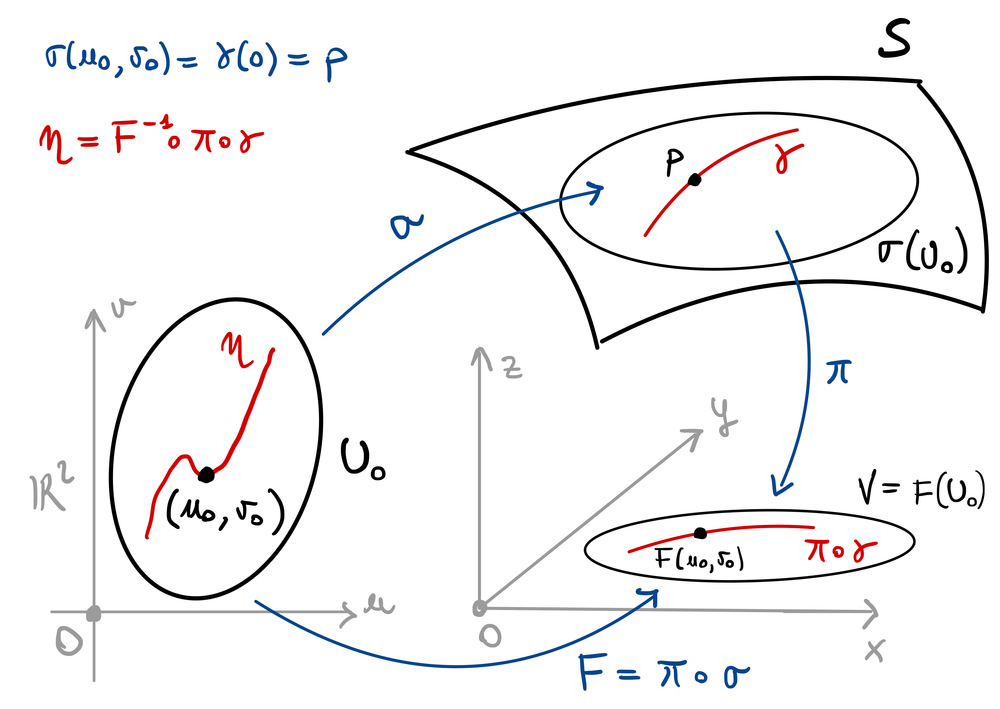
We are now ready to characterize \(T_{\mathbf{p}} \mathcal{S}\) when \(\mathcal{S}\) is a regular surface.
Theorem 80: Characterization of Tangent Plane
Let \({\pmb{\sigma}}\colon U \to \mathbb{R}^3\) be a regular chart and \(\mathcal{S}:= {\pmb{\sigma}}(U)\). Let \(\mathbf{p}\in \mathcal{S}\). Then \[
T_{\mathbf{p}} \mathcal{S}= \operatorname{span} \{ {\pmb{\sigma}}_u , {\pmb{\sigma}}_v \} := \{ \lambda {\pmb{\sigma}}_u + \mu {\pmb{\sigma}}_v \, \colon \,\lambda,\mu \in \mathbb{R}\} \,,
\] where \({\pmb{\sigma}}_u\) and \({\pmb{\sigma}}_v\) are evaluated at \((u,v) ={\pmb{\sigma}}^{-1}(\mathbf{p})\).
Proof
Let \({\pmb{\sigma}}\colon U \to \mathcal{S}\) be a regular chart.
First, suppose \(\mathbf{v}\in T_{\mathbf{p}} \mathcal{S}\). By definition of tangent plane, there exists a smooth curve \({\pmb{\gamma}}\colon (-\varepsilon,\varepsilon) \to \mathcal{S}\) such that \[ {\pmb{\gamma}}(0) = \mathbf{p}\,, \quad \dot{{\pmb{\gamma}}}(0) = \mathbf{v}\,. \] By Lemma 80, there exist \(\varepsilon_0 \in (0,\varepsilon]\) and smooth functions \[ u , v \colon (-\varepsilon_0,\varepsilon_0) \to \mathbb{R}\,,\quad u(0)=u_0 \,, \quad v(0) = v_0 \,, \] such that \[ {\pmb{\gamma}}(t) = {\pmb{\sigma}}( u(t), v(t) ) \,, \quad \forall \, t \in (-\varepsilon_0,\varepsilon_0) \,. \] Therefore, by chain rule, \[ \dot{{\pmb{\gamma}}}(t) = {\pmb{\sigma}}_u ( u(t),v(t) ) \, \dot{u}(t) + {\pmb{\sigma}}_v ( u(t),v(t) ) \, \dot{v}(t) \,. \] Evaluating the above at \(t=0\) yields \[\begin{align*} \mathbf{v}& = \dot{{\pmb{\gamma}}}(0) \\ & = {\pmb{\sigma}}_u ( u(0),v(0) ) \, \dot{u}(0) + {\pmb{\sigma}}_v ( u(0),v(0) ) \, \dot{v}(0) \\ & = {\pmb{\sigma}}_u ( u_0,v_0 ) \, \dot{u}(0) + {\pmb{\sigma}}_v ( u_0,v_0 ) \, \dot{v}(0) \,, \end{align*}\] which shows \[ \mathbf{v}\in \operatorname{span} \{ {\pmb{\sigma}}_u (u_0,v_0), {\pmb{\sigma}}_v(u_0,v_0) \} \,. \]
Conversely, suppose that \[ \mathbf{v}\in \operatorname{span} \{ {\pmb{\sigma}}_u (u_0,v_0), {\pmb{\sigma}}_v(u_0,v_0) \} \,. \] Then, there exist \(\lambda,\mu \in \mathbb{R}\) such that \[ \mathbf{v}= \lambda {\pmb{\sigma}}_u (u_0,v_0) + \mu {\pmb{\sigma}}_v (u_0,v_0) \,. \] The map \(s \colon \mathbb{R}\to \mathbb{R}^2\) defined by \[ s(t) := (u_0 + \lambda t, v_0 + \mu t) \,. \] is continuous, being \(s\) is the line through \((u_0,v_0)\) in the direction \((\lambda,\mu)\). Moreover, \[ s(0) = (u_0,v_0) \in U \,. \] Since \(U\) is open in \(\mathbb{R}^2\), there exists \(R>0\) such that \[ B_R(s(0)) = B_{R}( (u_0,v_0) ) \subseteq U \,. \] In particualar, by continuity of \(s\), there exists \(\varepsilon>0\) such that \[ |t-0| < \varepsilon\quad \implies \quad |s(t)-s(0)| < R \,, \] which implies \[ s(t) = (u_0 + \lambda t, v_0 + \mu t) \in U \,,\quad \forall \, t \in (-\varepsilon,\varepsilon) \,. \] Therefore, it is well-defined the curve \[ {\pmb{\gamma}}\colon (-\varepsilon,\varepsilon) \to {\pmb{\sigma}}(U) \subseteq \mathcal{S}\,, \qquad {\pmb{\gamma}}:= {\pmb{\sigma}}\circ s \,. \] Write down the definition of \({\pmb{\gamma}}\) explicitly: \[ {\pmb{\gamma}}(t) = {\pmb{\sigma}}(u_0 + \lambda t, v_0 + \mu t) \,. \] By chain rule \[ \dot{{\pmb{\gamma}}}(t) = {\pmb{\sigma}}_u (u_0+ \lambda t , v_0+ \mu t ) \lambda + {\pmb{\sigma}}_v (u_0+ \lambda t , v_0+ \mu t ) \mu \,, \] and therefore \[ \dot{{\pmb{\gamma}}}(0) = {\pmb{\sigma}}_u (u_0 , v_0 ) \lambda + {\pmb{\sigma}}_v (u_0 ,v_0) \mu = \mathbf{v}\,. \] This proves that \(\mathbf{v}\in T_{\mathbf{p}} \mathcal{S}\), ending the proof.
Remark 81
The tangent plane is a vector space isomorphic to \(\mathbb{R}^2\), that is, \[
T_{\mathbf{p}} \mathcal{S}\simeq \mathbb{R}^2 \,,
\] with isomorphism \(\Phi \colon T_{\mathbf{p}} \mathcal{S}\to \mathbb{R}^2\) given by \[
\Phi\left( \lambda {\pmb{\sigma}}_u + \mu {\pmb{\sigma}}_v \right) = (\lambda, \mu) \,.
\]
Proof
By Theorem 80 we have that \[
T_{\mathbf{p}} \mathcal{S}= \operatorname{span} \{ {\pmb{\sigma}}_u , {\pmb{\sigma}}_v \}
\] Since \({\pmb{\sigma}}_u\) and \({\pmb{\sigma}}_v\) are linearly independent, we conclude that \(T_{\mathbf{p}}\mathcal{S}\) is a vector space of dimension 2. Therefore \(T_{\mathbf{p}}\mathcal{S}\) is canonically isomorphic to \(\mathbb{R}^2\) via the map \(\Phi \colon T_{\mathbf{p}} \mathcal{S}\to \mathbb{R}^2\) given by \[
\Phi\left( \lambda {\pmb{\sigma}}_u + \mu {\pmb{\sigma}}_v \right) = (\lambda, \mu) \,.
\]
Remark 82
By definition, \(T_{\mathbf{p}} \mathcal{S}\) is a vector subspace of \(\mathbb{R}^3\). As such, it holds that \[
{\pmb{0}}\in T_{\mathbf{p}} \mathcal{S}\,.
\]
To see this, take the curve \({\pmb{\gamma}}(t) \equiv \mathbf{p}\). Then \({\pmb{\gamma}}(0) = \mathbf{p}\) and \(\dot{{\pmb{\gamma}}}(0) = {\pmb{0}}\), showing that \({\pmb{0}}\in T_{\mathbf{p}} \mathcal{S}\).
Therefore \(T_{\mathbf{p}} \mathcal{S}\) is a plane through the origin, no matter where the point \(\mathbf{p}\in \mathcal{S}\) is located. In pictures, such as Figure 4.11, we draw the tangent plane as if it was touching the surfaces at the point \(\mathbf{p}\), and still denote it by \(T_{\mathbf{p}}\mathcal{S}\). This is a slight abuse of notation: to be precise, the plane drawn is \[ \mathbf{p}+ T_{\mathbf{p}} \mathcal{S}\,, \] which is the affine tangent plane through \(\mathbf{p}\in \mathcal{S}\).
We can easily compute cartesian equations for the tangent plane.
Theorem 83: Equation of tangent plane
Let \({\pmb{\sigma}}\colon U \to \mathcal{S}\) be regular, \(\mathcal{S}= {\pmb{\sigma}}(U)\). Let \(\mathbf{p}\in \mathcal{S}\) and \[
\mathbf{n}:= {\pmb{\sigma}}_u (u,v) \times {\pmb{\sigma}}_v (u,v) \,, \quad
(u,v) := {\pmb{\sigma}}^{-1}(\mathbf{p}) \,.
\] The equation of the tangent plane \(T_{\mathbf{p}} \mathcal{S}\) is given by \[
\mathbf{x}\cdot \mathbf{n}= 0 \,, \quad \forall \, \mathbf{x}\in \mathbb{R}^3 \,.
\]
Proof
By Theorem 80 we know that \[
T_{\mathbf{p}} \mathcal{S}= \operatorname{span} \{ {\pmb{\sigma}}_u, {\pmb{\sigma}}_v \} \,.
\] By the properties of cross product, the vector \(\mathbf{n}\) is orthogonal to both \({\pmb{\sigma}}_u\) and \({\pmb{\sigma}}_v\). Therefore it is orthogonal to \(T_{\mathbf{p}} \mathcal{S}\). The equation for \(T_{\mathbf{p}} \mathcal{S}\) is then \[
\mathbf{x}\cdot \mathbf{n}= 0 \,, \quad \forall \, \mathbf{x}\in \mathbb{R}^3 \,.
\]
Remark 84: Equation of affine tangent plane
The equation of the affine tangent plane \(\mathbf{p}+ T_{\mathbf{p}} \mathcal{S}\) is given by \[
(\mathbf{x}- \mathbf{p}) \cdot \mathbf{n}= 0 \,, \quad \forall \, \mathbf{x}\in \mathbb{R}^3 \,.
\]
Proof
The vector \(\mathbf{n}\) is orthogonalto \(T_{\mathbf{p}}\mathcal{S}\). In particular, the equation for the affine tangent plane \(\mathbf{p}+ T_{\mathbf{p}} \mathcal{S}\) is \[
\mathbf{x}\cdot \mathbf{n}= k \,, \quad \forall \, \mathbf{x}\in \mathbb{R}^3 \,,
\] for some \(k \in \mathbb{R}\). To compute \(k\), it is sufficient to evaluate the above equation at any point in \(\mathbf{p}+ T_{\mathbf{p}} \mathcal{S}\). Recalling that \({\pmb{0}}\in T_{\mathbf{p}} \mathcal{S}\), we have that \(\mathbf{p}\) belongs to \(\mathbf{p}+ T_{\mathbf{p}} \mathcal{S}\). Therefore, \[
k = \mathbf{p}\cdot \mathbf{n}\,.
\] Hence the equation for \(\mathbf{p}+ T_{\mathbf{p}} \mathcal{S}\) is \[
( \mathbf{x}- \mathbf{p}) \cdot \mathbf{n}= 0 \,, \quad \forall \, \mathbf{x}\in \mathbb{R}^3 \,,
\] ending the proof.
Example 85: Calculation of tangent plane
Question. For \(u \in (0,2\pi)\), \(v < 1\), let \(\mathcal{S}\) charted by \[ {\pmb{\sigma}}(u,v) = \left( \sqrt{1-v} \cos(u) , \sqrt{1-v} \sin(u), v \right) \,. \]
Prove that \({\pmb{\sigma}}\) charts the paraboloid \(x^2 + y^2 - z = 1\).
Prove that \({\pmb{\sigma}}\) is regular and compute \(\mathbf{n}= {{\pmb{\sigma}}}_{u}\times {{\pmb{\sigma}}}_{v}\).
Give a basis for \(T_{\mathbf{p}} \mathcal{S}\) at \(\mathbf{p}= (\sqrt2/2, \sqrt2/2, 0)\).
Compute the cartesian equation of \(T_{\mathbf{p}} \mathcal{S}\).
Solution.
Denote \({\pmb{\sigma}}(u,v) = (x,y,z)\). We have \[\begin{align*} x^2 + y^2 & = \left( \sqrt{1-v} \cos(u) \right)^2 + \left( \sqrt{1-v} \sin(u) \right)^2 \\ & = 1 - v = 1 - z \,. \end{align*}\]
We compute \(\mathbf{n}= {{\pmb{\sigma}}}_{u}\times {{\pmb{\sigma}}}_{v}\) and show that \({\pmb{\sigma}}\) is regular: \[\begin{align*} & {\pmb{\sigma}}_u = \left( - \sqrt{1-v} \sin(u) , \sqrt{1-v} \cos(u), 0 \right) \\ & {\pmb{\sigma}}_v = \left( - \frac{1}{2} (1-v)^{-1/2} \cos(u) , -\frac{1}{2} (1-v)^{-1/2} \sin(u), 1 \right) \\ & \mathbf{n}= {\pmb{\sigma}}_u \times {\pmb{\sigma}}_v = \left( \sqrt{1-v} \cos(u) , \sqrt{1-v} \sin(u), \frac12 \right) \neq {\pmb{0}} \end{align*}\]
Notice that \({\pmb{\sigma}}\left( \pi/4, 0 \right) = \mathbf{p}\). A basis for \(T_{\mathbf{p}} \mathcal{S}\) is \[\begin{align*} {\pmb{\sigma}}_u \left( \frac{\pi}{4}, 0 \right) & = \left( - \frac{\sqrt{2}}{2} , \frac{\sqrt{2}}{2} , 0 \right)\,, \\ {\pmb{\sigma}}_v \left( \frac{\pi}{4}, 0 \right) & = \left( - \frac{\sqrt{2}}{4} , - \frac{\sqrt{2}}{4} , 1 \right) \,. \end{align*}\]
Using the calculation for \(\mathbf{n}\) in Point 2, we find \[ \mathbf{n}\left( \frac{\pi}{4}, 0 \right) = \left( \frac{\sqrt 2}{2}, \frac{\sqrt 2}{2} , -\frac{1}{2} \right) \,. \] The equation for \(T_{\mathbf{p}} \mathcal{S}\) is \(\mathbf{x}\cdot \mathbf{n}= 0\), which reads \[ \sqrt{2} \, x + \sqrt{2} \, y - z = 0 \,. \]
Remark 86: Tangent plane and derivations
The definition of tangent plane depends on the fact that \(\mathcal{S}\) is contained in \(\mathbb{R}^3\). This is a serious drawback in many applications, as the surface \(\mathcal{S}\) does not necessarily need to be Euclidean. There is a way to get rid of such dependence, and give an intrinsic definition of tangent plane, depending only on the point \(\mathbf{p}\) and the surface \(\mathcal{S}\).
The basic idea is as follows: If \(U \subseteq \mathbb{R}^2\) is open and \(\mathbf{p}\in U\), then \(T_{\mathbf{p}} U = \mathbb{R}^2\). We can associate to any point \(\mathbf{v}\in T_{\mathbf{p}} U\) a directional derivative acting on smooth functions \(f \colon U \to \mathbb{R}\): \[ \mathbf{v}= (v_1,v_2) \mapsto \left. \frac{\partial }{\partial v} \right|_p = v_1 \, \left. \frac{\partial }{\partial x_1} \right|_p + v_2 \, \left. \frac{\partial }{\partial x_2} \right|_p \] The above directional derivative is called a derivation.
The point is that derivations do not need to be defined through vectors, but can be defined as follows: \(D\) is a derivation if
- \(D \colon C^{\infty}(U) \to \mathbb{R}\) is a linear operator, where \(C^{\infty}(U)\) is the set of smooth functions \(f \colon U \to \mathbb{R}\),
- \(D\) satisfies the Leibnitz rule \[ D(fg) = f(\mathbf{p}) D(g) + g(\mathbf{p}) D(f) \,, \quad \forall \, f,g \in C^{\infty}(U) \,. \]
The tangent plane at p can then be defined as \[ T_{\mathbf{p}} U = \{ D \, \mbox{ derivation at } \mathbf{p}\} \,. \] Therefore \[ T_{\mathbf{p}} U \subseteq (C^{\infty}(U))^* \,, \] the dual space of smooth functions.
It is possible to do such construction directly on \(\mathcal{S}\), by introducing the concepts of:
- germ of a function
- algebra of derivations, acting on germs
An in depth discussion can be found in Chapter 3.4 of (Abate, Marco and Tovena, Francesca 2011).
4.8 Unit normal and orientability
Let \(\mathcal{S}\) be a regular surface and \(\mathbf{p}\in \mathcal{S}\). The tangent plane \(T_{\mathbf{p}} \mathcal{S}\) passes through the origin. Therefore \(T_{\mathbf{p}} \mathcal{S}\) is completely determined by giving a unit vector \(\mathbf{N}\) perpendicular to it: \[ T_{\mathbf{p}} \mathcal{S}= \{ \mathbf{x}\in \mathbb{R}^3 \, \colon \,\mathbf{x}\cdot \mathbf{N}= 0 \} \,. \] We will also write \[ \mathbf{N}\perp T_{\mathbf{p}} \mathcal{S}\,, \] to denote that \(\mathbf{N}\) is perpendicular to \(T_{\mathbf{p}} \mathcal{S}\). Clearly, also \(-\mathbf{N}\) is a unit vector, and \[ (- \mathbf{N}) \perp T_{\mathbf{p}} \mathcal{S}\,. \]
Question 87
Which unit normal should we choose between \(\mathbf{N}\) and \(-\mathbf{N}\)?
There is no right answer to the above question. One way to proceed is the following.
Remark 88
Suppose that \({\pmb{\sigma}}\colon U \to \mathbb{R}^3\) is a regular chart for \(\mathcal{S}\). Let \(\mathbf{p}\in {\pmb{\sigma}}(U)\). Then \[
T_{\mathbf{p}} \mathcal{S}= \operatorname{span} \{ {\pmb{\sigma}}_u , {\pmb{\sigma}}_v \} \,.
\] Therefore we can choose the unit normal to \(T_{\mathbf{p}} \mathcal{S}\) as \[
\mathbf{N}_{{\pmb{\sigma}}} := \frac{ {\pmb{\sigma}}_u \times {\pmb{\sigma}}_v }{ \left\| {\pmb{\sigma}}_u \times {\pmb{\sigma}}_v \right\| } \,.
\] Clearly, \(\mathbf{N}_{{\pmb{\sigma}}}\) has unit norm. Moreover \[
\mathbf{N}_{{\pmb{\sigma}}} \cdot {\pmb{\sigma}}_u = 0 \,, \quad \mathbf{N}_{{\pmb{\sigma}}} \cdot {\pmb{\sigma}}_v = 0
\] by the properties of cross product. Thus, \(\mathbf{N}_{{\pmb{\sigma}}}\) is perpendicular to \(T_{\mathbf{p}} \mathcal{S}\).
There is however an issue: \(\mathbf{N}_{{\pmb{\sigma}}}\) is not independent on the choice of chart \({\pmb{\sigma}}\). Indeed, suppose that \(\widetilde{{\pmb{\sigma}}} \colon \widetilde{U} \to \mathbb{R}^3\) is a reparametrization of \({\pmb{\sigma}}\), that is, \[ \widetilde{{\pmb{\sigma}}} = {\pmb{\sigma}}\circ \Phi \,, \] with \(\Phi \colon \widetilde{U} \to U\) diffeomorphism. As stated in Thorem 62, we have \[ \widetilde{{\pmb{\sigma}}}_{\tilde{u}} \times \widetilde{{\pmb{\sigma}}}_{\tilde{v}} = \det J\Phi \, ( {\pmb{\sigma}}_u \times {\pmb{\sigma}}_v )\,. \] Hence \[ \mathbf{N}_{\widetilde{{\pmb{\sigma}}}} = \frac{ \widetilde{{\pmb{\sigma}}}_{\tilde{u}} \times \widetilde{{\pmb{\sigma}}}_{\tilde{v}} }{\left\| \widetilde{{\pmb{\sigma}}}_{\tilde{u}} \times \widetilde{{\pmb{\sigma}}}_{\tilde{v}} \right\|} = \frac{\det J\Phi}{|\det J\Phi|} \frac{{\pmb{\sigma}}_u \times {\pmb{\sigma}}_v}{\left\| {\pmb{\sigma}}_u \times {\pmb{\sigma}}_v \right\|} = \pm \mathbf{N}_{{\pmb{\sigma}}} \,. \] Therefore the sign on the right hand side depends on the sign of the Jacobian determinant of the transition map \(\Phi\).
The above remark motivates the following definitions.
Definition 89: Standard unit normal of a chart
Let \(\mathcal{S}\) be a regular surface and \({\pmb{\sigma}}\colon U \to \mathbb{R}^3\) a regular chart. The standard unit normal of \({\pmb{\sigma}}\) is the smooth function \[
\mathbf{N}_{{\pmb{\sigma}}} \colon U \to \mathbb{R}^3 \,, \quad \mathbf{N}_{{\pmb{\sigma}}} = \frac{ {\pmb{\sigma}}_u \times {\pmb{\sigma}}_v }{ \left\| {\pmb{\sigma}}_u \times {\pmb{\sigma}}_v \right\| } \,.
\]
Definition 90: Charts with same orientation
Let \(\mathcal{S}\) be a regular surface and \({\pmb{\sigma}}\colon U \to \mathbb{R}^3\), \(\widetilde{{\pmb{\sigma}}} \colon \widetilde{U} \to \mathbb{R}^3\) regular charts such that \[ {\pmb{\sigma}}(U) \cap \widetilde{{\pmb{\sigma}}} (\widetilde{U}) \neq \emptyset \,. \] Denote by \(\Phi\) the transition map between \(\widetilde{{\pmb{\sigma}}}\) and \({\pmb{\sigma}}\). We say that:
\({\pmb{\sigma}}\) and \(\widetilde{{\pmb{\sigma}}}\) determine the same orientation if \[ \det J \Phi > 0 \,. \]
\({\pmb{\sigma}}\) and \(\widetilde{{\pmb{\sigma}}}\) determine the opposite orientations if \[ \det J \Phi < 0 \,. \]
Example 91: Orientation of the plane
Let \(\mathbf{a} , \mathbf{p},\mathbf{q} \in \mathbb{R}^3\), and suppose that \(\mathbf{p}\) and \(\mathbf{q}\) are linearly independent. The plane spanned by \(\mathbf{p},\mathbf{q}\) and passing through \(\mathbf{a}\) is parametrized by \[
{\pmb{\sigma}}(u,v):= \mathbf{a} + \mathbf{p}u + \mathbf{q} v \,, \quad \forall \, (u,v) \in \mathbb{R}^2 \,.
\] An alternative parametrization is given by \[
\widetilde{{\pmb{\sigma}}} (u,v):= \mathbf{a} + \mathbf{q} u + \mathbf{p}v \,, \quad \forall \, (u,v) \in \mathbb{R}^2 \,.
\] We have \[
{\pmb{\sigma}}_u = \mathbf{p}\,, \quad
{\pmb{\sigma}}_v = \mathbf{q} \,, \quad
\] and therefore \[
\mathbf{N}_{{\pmb{\sigma}}} = \frac{ \mathbf{p}\times \mathbf{q} }{ \left\| \mathbf{p}\times \mathbf{q} \right\| } \,.
\] Similarly, we have \[
\mathbf{N}_{\widetilde{{\pmb{\sigma}}}} = \frac{ \mathbf{q} \times \mathbf{p}}{ \left\| \mathbf{q} \times \mathbf{p} \right\| } =
\frac{ - \mathbf{p}\times \mathbf{q} }{ \left\| \mathbf{p}\times \mathbf{q} \right\| } \,,
\] showing that \[
\mathbf{N}_{{\pmb{\sigma}}} = - \mathbf{N}_{\widetilde{{\pmb{\sigma}}}} \,.
\] Hence \({\pmb{\sigma}}\) and \(\tilde{{\pmb{\sigma}}}\) determine opposite orientations.
If a surface can be covered by charts with the same orientation, it is called orientable.
Definition 92: Orientable surface
Let \(\mathcal{S}\) be a regular surface. Then:
Let \[ \mathcal{A} = \{ {\pmb{\sigma}}_i \colon U_i \to \mathcal{S}\}_{i \in I} \] be an atlas for \(\mathcal{S}\). We say that \(\mathcal{A}\) is oriented, if the following property holds: \[ {\pmb{\sigma}}_i (U_i) \cap {\pmb{\sigma}}_j (U_j) \neq \emptyset \quad \implies \quad \det J \Phi > 0 \,, \] where \(\Phi\) is the transition map between \({\pmb{\sigma}}_i\) and \({\pmb{\sigma}}_j\).
\(\mathcal{S}\) is orientable if there exists an oriented atlas \(\mathcal{A}\).
If an oriented atlas \(\mathcal{A}\) is assigned, we say that \(\mathcal{S}\) is oriented by \(\mathcal{A}\).
Warning: Orientability is a global property
Orientability is a global property: To determine if a surface \(\mathcal{S}\) is orientable, we need to examine the transition maps for the entire atlas \(\mathcal{A}\).
Example 93: Möbius band
The classical example of non orientable surface is the Möbius band, see Figure 4.22. We will discuss this example in more details when we introduce ruled srufaces, see Example 118.
Example 94
Let \({\pmb{\sigma}}\colon U \to \mathbb{R}^3\) be a regular chart. Then \[
\mathcal{S}_{{\pmb{\sigma}}} := {\pmb{\sigma}}(U)
\] is a regular surface with atlas \(\mathcal{A}=\{{\pmb{\sigma}}\}\). Therefore \(\mathcal{S}_{{\pmb{\sigma}}}\) is orientable.
Check: This is because we have only one chart. Therefore any transition map \(\Phi\) will be the identity, so that \(\det J \Phi = 1 > 0\).
Remark 95
Let \({\pmb{\sigma}}\) and \(\widetilde{{\pmb{\sigma}}}\) be regular charts with transition map \(\Phi\). We have seen in Remark 88 that \[
\mathbf{N}_{\widetilde{{\pmb{\sigma}}}} = \frac{ \det J \Phi }{ |\det J \Phi| } \, \mathbf{N}_{{\pmb{\sigma}}} \,.
\] If \({\pmb{\sigma}}\) and \(\widetilde{{\pmb{\sigma}}}\) determine the same orientation, then \[
\det J \Phi > 0 \,,
\] which implies \[
\mathbf{N}_{\widetilde{{\pmb{\sigma}}}} = \mathbf{N}_{{\pmb{\sigma}}} \,.
\] Hence, if \(\mathcal{S}\) is an orientable surface, one can define a unit normal vector at each point of \(\mathcal{S}\), without ambiguity.
Definition 96: Unit normal of a surface
Let \(\mathcal{S}\) be a regular surface. A unit normal to \(\mathcal{S}\) is a smooth function \(\mathbf{N}\colon \mathcal{S}\to \mathbb{R}^3\) such that \[
\mathbf{N}(\mathbf{p}) \perp T_{\mathbf{p}} \mathcal{S}\,, \quad \| \mathbf{N}(\mathbf{p}) \| = 1 \,, \quad \forall \, \mathbf{p}\in \mathcal{S}\, .
\]
Warning
We require the function \(\mathbf{p}\mapsto \mathbf{N}(\mathbf{p})\) to be globally defined on \(\mathcal{S}\) and smooth.
Proposition 97
Let \(\mathcal{S}\) be a regular surface. They are equivalent:
\(\mathcal{S}\) is orientable.
There exists a unit normal \(\mathbf{N}\colon \mathcal{S}\to \mathbb{R}^3\).
The proof follows from the above discussion. For a self-contained proof, we refer the reader to Proposition 4.3.7 in (Abate, Marco and Tovena, Francesca 2011).
In view of Propostion 97, for an oriented surface there is a natural choice of unit normal, which we call standard unit normal of \(\mathcal{S}\).
Definition 98: Standard unit normal of a surface
Let \(\mathcal{S}\) be a regular surface oriented by the atlas \(\mathcal{A}\). The standard unit normal to \(\mathcal{S}\) is the map \(\mathbf{N}\colon \mathcal{S}\to \mathbb{R}^3\) such that \[
\mathbf{N}\circ {\pmb{\sigma}}= \mathbf{N}_{{\pmb{\sigma}}} \,,
\] for each chart \({\pmb{\sigma}}\in \mathcal{A}\), where \[
\mathbf{N}_{{\pmb{\sigma}}} \colon U \to \mathbb{R}^3 \,, \quad \mathbf{N}_{{\pmb{\sigma}}} = \frac{ {\pmb{\sigma}}_u \times {\pmb{\sigma}}_v }{ \left\| {\pmb{\sigma}}_u \times {\pmb{\sigma}}_v \right\| } \,,
\] is the standard unit normal of the chart \({\pmb{\sigma}}\).
Notation
In the following we will often denote by \(\mathbf{N}\) both the standard unit normal of \(\mathcal{S}\) and of a chart.
Example 99: Calculation of \(\mathbf{N}\)
Question. Compute the standard unit normal to \[
{\pmb{\sigma}}(u,v) = (e^u, u+v, v ) \,, \quad u,v \in \mathbb{R}\,.
\]
Solution. The standard unit normal to \({\pmb{\sigma}}\) is \[\begin{align*} & {\pmb{\sigma}}_{u} =\left(e^{u}, 1,0\right) \,, \,\, {\pmb{\sigma}}_{v} =(0,1,1) \,, & & \left\| {\pmb{\sigma}}_u \times {\pmb{\sigma}}_v \right\| = \sqrt{1+2 e^{2 u}}\\ & {\pmb{\sigma}}_{u} \times {\pmb{\sigma}}_{v} = \left(1,-e^{u}, e^{u}\right) & & \mathbf{N}_{{\pmb{\sigma}}} = \frac{\left(1,-e^{u}, e^{u}\right)}{\sqrt{1+2 e^{2 u}}} \end{align*}\]
4.9 Differential of smooth functions
Let \(f \colon U \to V\) with \(U,V \subseteq \mathbb{R}^2\) open. Suppose \(f\) is smooth. By definition, the differential of \(f\) at \(\mathbf{p}\in U\) is a linear map \[ d_{\mathbf{p}}f \colon \mathbb{R}^2 \to \mathbb{R}^2 \] which approximates \(f\) locally at \(\mathbf{p}\). We have seen in Example 78 that \[ T_{\mathbf{p}} U = \mathbb{R}^2 \,. \] Therefore we can interpret \(d_{\mathbf{p}}f\) as a map between tangent planes: \[ d_{\mathbf{p}}f \colon T_{\mathbf{p}} U \to T_{\mathbf{p}} U \,. \] This reasoning suggests how to define the differential of a smooth map between surfaces: If \(f \colon \mathcal{S}\to \widetilde{\mathcal{S}}\) is smooth, we could define its differential at \(\mathbf{p}\in \mathcal{S}\) as a linear map \[ d_{\mathbf{p}}f \colon T_{\mathbf{p}} \mathcal{S}\to T_{f(\mathbf{p})} \widetilde{\mathcal{S}} \,. \] How is the above map defined explicitly? To answer this question, we need a Lemma.
Lemma 100
Let \(\mathcal{S}\) and \(\widetilde{\mathcal{S}}\) be regular surfaces and \(f \colon \mathcal{S}\to \widetilde{\mathcal{S}}\) a smooth map. Let \(\mathbf{v}\in T_{\mathbf{p}} \mathcal{S}\), and \[
{\pmb{\gamma}}\colon (-\varepsilon,\varepsilon) \to \mathcal{S}
\] be a smooth curve such that \[
{\pmb{\gamma}}(0) = \mathbf{p}\,, \quad \dot{{\pmb{\gamma}}}(0) = \mathbf{v}\,.
\] Define \[
\widetilde{{\pmb{\gamma}}}:= f \circ {\pmb{\gamma}}\colon (-\varepsilon,\varepsilon) \to \widetilde{\mathcal{S}} \,.
\] Then \(\widetilde{{\pmb{\gamma}}}\) is a smooth curve into \(\mathbb{R}^3\) and \[
\dot{\widetilde{{\pmb{\gamma}}}}(0) \in T_{f(\mathbf{p})} \widetilde{\mathcal{S}} \,.
\]
Proof
Note that \[
\widetilde{{\pmb{\gamma}}}= i \circ f \circ {\pmb{\gamma}}\,,
\] with \(i \colon \widetilde{\mathcal{S}} \to \mathbb{R}^3\) inclusion map. Since \(i,f,{\pmb{\gamma}}\) are smooth, we conclude that \(\widetilde{{\pmb{\gamma}}}\colon (-\varepsilon,\varepsilon) \to \mathbb{R}^3\) is smooth. Moreover \[
\widetilde{{\pmb{\gamma}}}(0) = f ({\pmb{\gamma}}(0)) = f(\mathbf{p}) \,.
\] By definition of tangent plane, we conclude that \[
\dot{\widetilde{{\pmb{\gamma}}}}(0) \in T_{f(\mathbf{p})} \widetilde{\mathcal{S}} \,.
\]
Lemma 100 justifies the following definition of differential.
Definition 101: Differential of smooth function
Let \(\mathcal{S}\) and \(\widetilde{\mathcal{S}}\) be regular surfaces and \(f \colon \mathcal{S}\to \widetilde{\mathcal{S}}\) a smooth map. The differential \(d_{\mathbf{p}}f\) of \(f\) at \(\mathbf{p}\) is defined as the map \[
d_{\mathbf{p}}f \colon T_{\mathbf{p}} \mathcal{S}\to T_{f(\mathbf{p})} \widetilde{\mathcal{S}} \,, \quad d_{\mathbf{p}}f (\mathbf{v}) := (f \circ {\pmb{\gamma}})'(0) \,,
\] with \({\pmb{\gamma}}\colon (-\varepsilon,\varepsilon) \to \mathcal{S}\) smooth curve, \({\pmb{\gamma}}(0) = \mathbf{p}\), \(\dot{{\pmb{\gamma}}}(0) = \mathbf{v}\).
We need to show that Definition 100 is well-posed, i.e., that \(d_{\mathbf{p}} f (\mathbf{v})\) depends only on \(\mathbf{p}\), \(f\), \(\mathbf{v}\): This is because there are infinitely many curves \({\pmb{\gamma}}\) such that \[ {\pmb{\gamma}}(0) = \mathbf{p}\,, \qquad \dot{{\pmb{\gamma}}}(0) = \mathbf{v}\,. \] Therefore, a priori, \(d_{\mathbf{p}} f (\mathbf{v})\) could depend on which curve is chosen. This is however, not the case, as shown in the next Proposition. We will also show that the map \(df_{\mathbf{p}}\) is linear, and compute its matrix.
Theorem 102: Matrix of \(d_{\mathbf{p}}f\)
Let \(\mathcal{S},\widetilde{\mathcal{S}}\) be regular surfaces, and \(f \colon \mathcal{S}\to \widetilde{\mathcal{S}}\) smooth.
\(d_{\mathbf{p}}f (\mathbf{v})\) depends only on \(f, \mathbf{p},\mathbf{v}\) (and not on \({\pmb{\gamma}}\)).
\(d_{\mathbf{p}} f\) is linear, that is, for all \(\mathbf{v},\mathbf{w}\in T_{\mathbf{p}} \mathcal{S}\) and \(\lambda,\mu \in \mathbb{R}\) \[ d_{\mathbf{p}}f (\lambda \mathbf{v}+ \mu \mathbf{w}) = \lambda d_{\mathbf{p}}f (\mathbf{v}) + \mu d_{\mathbf{p}}f (\mathbf{w}) \,. \]
Let \({\pmb{\sigma}}\colon U \to \mathcal{S}\), \(\widetilde{{\pmb{\sigma}}} \colon \widetilde{U} \to \widetilde{\mathcal{S}}\) be regular charts at \(\mathbf{p}\), \(f(\mathbf{p})\). Let \(\alpha\) and \(\beta\) be the components of \(\Psi = \widetilde{{\pmb{\sigma}}}^{-1} \circ f \circ {\pmb{\sigma}}\), so that \[ \widetilde{{\pmb{\sigma}}} ( \alpha(u,v) , \beta(u,v) ) = f({\pmb{\sigma}}(u,v)) \,, \quad \forall \, (u,v) \in U \,. \] The matrix of \(d_{\mathbf{p}}f\) with respect to the basis \[ \{ {\pmb{\sigma}}_u , {\pmb{\sigma}}_v \} \,\, \mbox{ on } \,\, T_{\mathbf{p}} \mathcal{S}\,, \quad \{ \widetilde{{\pmb{\sigma}}}_{\tilde{u}} , \widetilde{{\pmb{\sigma}}}_{\tilde{v}} \} \,\, \mbox{ on } \,\, T_{f(\mathbf{p})} \widetilde{\mathcal{S}} \,, \] is given by the Jacobian of the map \(\Psi\), that is, \[ J\Psi = \left( \begin{array}{cc} \alpha_u & \alpha_v \\ \beta_u & \beta_v \\ \end{array} \right) \,. \]
Point 3 in the above Theorem says that:
Let \(f \colon \mathcal{S}\to \widetilde{\mathcal{S}}\) be a smooth function between surfaces. Consider local charts \({\pmb{\sigma}}\) at \(\mathbf{p}\), and \(\widetilde{{\pmb{\sigma}}}\) at \(f(\mathbf{p})\). By definition of smooth map, the real map \[ \Psi \colon \mathbb{R}^2 \to \mathbb{R}^2 \,, \qquad \Psi := \widetilde{{\pmb{\sigma}}}^{-1} \circ f \circ {\pmb{\sigma}} \] is smooth.
The matrix of the differential \(d_{\mathbf{p}}f\) with respect to the basis \[ \{ {\pmb{\sigma}}_u , {\pmb{\sigma}}_v \} \,\, \mbox{ on } \,\, T_{\mathbf{p}} \mathcal{S}\,, \quad \{ \widetilde{{\pmb{\sigma}}}_{\tilde{u}} , \widetilde{{\pmb{\sigma}}}_{\tilde{v}} \} \,\, \mbox{ on } \,\, T_{f(\mathbf{p})} \widetilde{\mathcal{S}} \,, \] is just the Jacobian of \(\Psi\).
Proof
Let \(\mathbf{p}\in \mathcal{S}\). In order to prove the thesis, we need compute \(d_{\mathbf{p}} f\). To this end, let \({\pmb{\sigma}}\colon U \to \mathcal{S}\) be a chart at \(\mathbf{p}\). Denote \[ (u_0,v_0) = {\pmb{\sigma}}^{-1}(\mathbf{p}) \,. \] Let \(\widetilde{{\pmb{\sigma}}} \colon \widetilde{U} \to \widetilde{\mathcal{S}}\) a chart at \(f(\mathbf{p})\). Since \(f\) is smooth, the map \[ \Psi \colon U \to \widetilde{U} \,, \quad \Psi := \widetilde{{\pmb{\sigma}}}^{-1} \circ f \circ {\pmb{\sigma}} \] is smooth. Denote by \[ (u,v) \mapsto ( \alpha(u,v), \beta(u,v) ) \] the smooth components of \(\Psi\). By definition of \(\Psi\) it holds \[ \widetilde{{\pmb{\sigma}}} ( \alpha(u,v) , \beta(u,v) ) = f({\pmb{\sigma}}(u,v)) \,, \quad \forall \, (u,v) \in U \,. \tag{4.4}\] Let \(\mathbf{v}\in T_{\mathbf{p}} \mathcal{S}\) and denote by \((\lambda,\mu)\) the components of \(\mathbf{v}\) with respect to the basis \(\{{{\pmb{\sigma}}}_{u},{{\pmb{\sigma}}}_{v}\}\) of \(T_{\mathbf{p}} \mathcal{S}\), that is, \[ \mathbf{v}= \lambda {\pmb{\sigma}}_u + \mu {\pmb{\sigma}}_v \,. \] Define the scalar functions \[ u(t):= u_0 +\lambda t \,, \quad v(t):= v_0 +\mu t \,. \] Since \(U\) is open in \(\mathbb{R}^2\), and \((u_0,v_0) \in U\), there exists a sufficiently small \(\varepsilon>0\) such that \[ (u(t), v(t)) \in U \,, \quad \forall \, t \in (-\varepsilon,\varepsilon) \,. \] In particular, it is well defined the curve \[ {\pmb{\gamma}}\colon (-\varepsilon,\varepsilon) \to \mathcal{S}\,, \quad {\pmb{\gamma}}(t) := {\pmb{\sigma}}(u(t), v(t)) \,. \] It is immediate to check that \[ {\pmb{\gamma}}(0) = {\pmb{\sigma}}(u_0, v_0) = \mathbf{p}\,, \quad \dot{{\pmb{\gamma}}}(0) = \lambda {{\pmb{\sigma}}}_{u}+\mu {{\pmb{\sigma}}}_{v}= \mathbf{v}\,. \] By definition of \({\pmb{\gamma}}\), and by (4.4), we have \[\begin{align*} (f \circ {\pmb{\gamma}})(t) & = f({\pmb{\gamma}}(t)) \\ & = f( {\pmb{\sigma}}(u(t), v(t)) ) \\ & = \widetilde{{\pmb{\sigma}}} ( \alpha(u(t),v(t)), \beta(u(t),v(t)) ) \,. \end{align*}\] By chain rule we obtain \[\begin{align*} (f \circ {\pmb{\gamma}})'(t) & = \widetilde{{\pmb{\sigma}}}_{\tilde{u}} \frac{d}{dt} \left[ \alpha(u(t),v(t)) \right] + \widetilde{{\pmb{\sigma}}}_{\tilde{v}} \frac{d}{dt} \left[ \beta(u(t),v(t)) \right] \\ & = \widetilde{{\pmb{\sigma}}}_{\tilde{u}} \left[ \alpha_u \dot{u}(t) + \alpha_v \dot{v}(t) \right] + \widetilde{{\pmb{\sigma}}}_{\tilde{v}} \left[ \beta_u \dot{u}(t) + \beta_v \dot{v}(t) \right] \,. \end{align*}\] Noting that \[ \dot{u}(0) = \lambda \,, \qquad \dot{v}(0) = \mu \,, \] we get \[ (f \circ {\pmb{\gamma}})'(0) = \widetilde{{\pmb{\sigma}}}_{\tilde{u}} \left[ \lambda \alpha_u + \mu \alpha_v \right] + \widetilde{{\pmb{\sigma}}}_{\tilde{v}} \left[ \lambda \beta_u + \mu \beta_v \right] \,. \] As, by definition of differential, \[ d_{\mathbf{p}} f (\mathbf{v}) = ( f \circ {\pmb{\gamma}})' (0)\,, \] we have obtained \[ d_{\mathbf{p}} f (\mathbf{v}) = \widetilde{{\pmb{\sigma}}}_{\tilde{u}} [ \lambda \alpha_u + \mu \alpha_v ] + \widetilde{{\pmb{\sigma}}}_{\tilde{v}} [ \lambda \beta_u + \mu \beta_v] \tag{4.5}\] We can now prove the 3 points stated in the Proposition:
The RHS of (4.5) depends only on \(\lambda,\mu\) (the components of \(\mathbf{v}\)), \(f\) (via the components \(\alpha,\beta\) of \(\Psi\)), and the point \(\mathbf{p}\). In particular \(d_{\mathbf{p}}f(\mathbf{v})\) does not depend on the choice of \({\pmb{\gamma}}\), and the definition is well-posed.
The RHS of (4.5) is linear in the components \(\lambda,\mu\) of \(\mathbf{v}\). In particular \(d_{\mathbf{p}}f(\mathbf{v})\) is linear in \(\mathbf{v}\).
The coordinates of \({{\pmb{\sigma}}}_{u}\) with respect to the basis \(\{{{\pmb{\sigma}}}_{u},{{\pmb{\sigma}}}_{v}\}\) of \(T_{\mathbf{p}} \mathcal{S}\) are \[ (\lambda,\mu) = (1,0)\,. \] Using (4.5), we get \[ d_{\mathbf{p}}f({{\pmb{\sigma}}}_{u}) = \widetilde{{\pmb{\sigma}}}_{\tilde{u}}\alpha_u + \widetilde{{\pmb{\sigma}}}_{\tilde{v}} \beta_u \] Similarly, the coordinates of \({{\pmb{\sigma}}}_{v}\) with respect to the basis \(\{{{\pmb{\sigma}}}_{u},{{\pmb{\sigma}}}_{v}\}\) of \(T_{\mathbf{p}} \mathcal{S}\) are \[ (\lambda,\mu) = (0,1) \,. \] Therefore \[ d_{\mathbf{p}}f({{\pmb{\sigma}}}_{v}) = \widetilde{{\pmb{\sigma}}}_{\tilde{u}}\alpha_v + \widetilde{{\pmb{\sigma}}}_{\tilde{v}} \beta_v \] This shows that the matrix of the linear application \(d_{\mathbf{p}}f\) with respect to the basis \(\{{{\pmb{\sigma}}}_{u},{{\pmb{\sigma}}}_{v}\}\) on \(T_{\mathbf{p}} \mathcal{S}\), and the basis \(\{\widetilde{{\pmb{\sigma}}}_{\tilde{u}} , \widetilde{{\pmb{\sigma}}}_{\tilde{v}}\}\) on \(T_{f(\mathbf{p})} \widetilde{\mathcal{S}}\), is given by \[ \left( \begin{array}{cc} \alpha_u & \alpha_v \\ \beta_u & \beta_v \\ \end{array} \right) = J\Psi \,. \]
Given the above discussion, we have 2 ways of computing the differential of a smooth function \[ f \colon \mathcal{S}\to \widetilde{\mathcal{S}} \]
- By using the definition: Let \(\mathbf{v}\in T_{\mathbf{p}} \mathcal{S}\) and let \({\pmb{\gamma}}\) be a curve on \(\mathcal{S}\) such that \[
{\pmb{\gamma}}(0) = \mathbf{p}\,, \quad \dot{{\pmb{\gamma}}}(0) = \mathbf{v}\,.
\] Then \[
d_{\mathbf{p}} f (\mathbf{v}) = (f \circ {\pmb{\gamma}})'(0)\,.
\] Method to construct \({\pmb{\gamma}}\): Following the proof of Theorem 102, one can proceed as follows:
- Find \({\pmb{\sigma}}\colon U \to \mathcal{S}\) chart of \(\mathcal{S}\) at \(\mathbf{p}\).
- Compute \[ T_{\mathbf{p}} \mathcal{S}= \operatorname{span} \{ {{\pmb{\sigma}}}_{u},{{\pmb{\sigma}}}_{v}\} \,. \]
- For \(\mathbf{v}\in T_{\mathbf{p}} \mathcal{S}\), compute \(\lambda,\mu\) such that \[ \mathbf{v}= \lambda {{\pmb{\sigma}}}_{u}+ \mu {{\pmb{\sigma}}}_{v}\,. \]
- Compute \((u_0,v_0) = {\pmb{\sigma}}^{-1}(\mathbf{p})\).
- Define the curve \[ {\pmb{\gamma}}(t) = {\pmb{\sigma}}( u_0 + \lambda t, v_0 + \mu t ) \,. \] Such curve satisfies \[ {\pmb{\gamma}}(0) = \mathbf{p}\,, \qquad \dot{{\pmb{\gamma}}}(0) = \mathbf{v}\,. \]
- Compute \[ d_{\mathbf{p}} f (\mathbf{v}) = (f \circ {\pmb{\gamma}})'(0)\,. \]
- By using the matrix representation: Let \(\mathbf{v}\in T_{\mathbf{p}} \mathcal{S}\)
- Find \({\pmb{\sigma}}\colon U \to \mathcal{S}\) chart of \(\mathcal{S}\) at \(\mathbf{p}\).
- Find \(\widetilde{{\pmb{\sigma}}}\colon \widetilde{U}\to \widetilde{\mathcal{S}}\) chart of \(\widetilde{\mathcal{S}}\) at \(f(\mathbf{p})\).
- Compute the components \(\alpha,\beta\) of the function \[ \widetilde{{\pmb{\sigma}}}^{-1} \circ f \circ {\pmb{\sigma}}\colon U \to \widetilde{U}\,. \]
- The matrix of \(d_{\mathbf{p}}f\) with respect to the basis \(\{{\pmb{\sigma}}_u,{\pmb{\sigma}}_v\}\) on \(T_{\mathbf{p}} \mathcal{S}\), and the basis \(\{{\widetilde{{\pmb{\sigma}}}}_{u},{\widetilde{{\pmb{\sigma}}}}_{v}\}\) on \(T_{\mathbf{p}} \widetilde{\mathcal{S}}\), is given by \[ d_{\mathbf{p}} f = J\Psi = \left( \begin{array}{cc} \alpha_u & \alpha_v \\ \beta_u & \beta_v \\ \end{array} \right) \,. \]
- Compute \(\lambda,\mu\) such that \[ \mathbf{v}= \lambda {{\pmb{\sigma}}}_{u}+ \mu {{\pmb{\sigma}}}_{v}\,. \]
- Compute \[ d_{\mathbf{p}} f (\mathbf{v}) = \tilde{\lambda} {\widetilde{{\pmb{\sigma}}}}_{u}+ \tilde{\mu} {\widetilde{{\pmb{\sigma}}}}_{v} \] where the coefficients \(\tilde{\lambda}\) and \(\tilde{\mu}\) are \[ \left( \begin{array}{c} \tilde{\lambda} \\ \tilde{\mu} \\ \end{array} \right) = \left( \begin{array}{cc} \alpha_u & \alpha_v \\ \beta_u & \beta_v \\ \end{array} \right) \left( \begin{array}{c} \lambda \\ \mu \\ \end{array} \right) \,. \]
Let us give example calculations for both methods.
Example 103: Computing \(d_{\mathbf{p}}f\) using the definition
Question. Consider the plane \(\mathcal{S}= \{z=0\}\), the unit cylinder \(\widetilde{\mathcal{S}} = \{ x^2 + y^2 = 1 \}\), and the map \[ f \colon S \to \widetilde{\mathcal{S}} \,, \qquad f(x,y,0) = (\cos x , \sin x, y) \,. \]
- Compute \(T_{\mathbf{p}}\mathcal{S}\).
- Compute \(d_{\mathbf{p}}f\) at \(\mathbf{p}= (u_0,v_0,0)\) and \(\mathbf{v}= (\lambda,\mu,0)\).
Solution.
A chart for \(\mathcal{S}\) is given by \({\pmb{\sigma}}(u,v) = (u,v,0)\). Hence, \[ {\pmb{\sigma}}_u = (1,0,0) \,, \quad {\pmb{\sigma}}_v = (0,1,0) \,, \] and the tangent space is \[ T_{\mathbf{p}} \mathcal{S}= \operatorname{span} \{ {\pmb{\sigma}}_u,{\pmb{\sigma}}_v \} = \{ (\lambda,\mu,0) \, \colon \, \lambda,\mu \in \mathbb{R}\} \,. \]
Define the curve \({\pmb{\gamma}}\colon (-\varepsilon,\varepsilon) \to \mathcal{S}\) by setting \[ {\pmb{\gamma}}(t) := {\pmb{\sigma}}(u_0 + t \lambda, v_0 + t \mu ) = (u_0 + t \lambda, v_0 + t \mu, 0)\,. \] Note that \({\pmb{\gamma}}(0) = \mathbf{p}\) and \(\dot{{\pmb{\gamma}}}(0) = \mathbf{v}= (\lambda,\mu,0)\). Therefore, the differential is given by \[\begin{align*} & (f \circ {\pmb{\gamma}}) (t) = ( \cos(u_0 + t \lambda), \sin(u_0 + t \lambda),v_0 + t \mu ) \,,\\ & (f \circ {\pmb{\gamma}})' (t) = (- \lambda \sin (u_0 + t\lambda), \lambda \cos (u_0 + t \lambda), \mu) \,, \\ & d_{\mathbf{p}} f (\mathbf{v}) = (f \circ {\pmb{\gamma}})' (0) = (- \lambda \sin (u_0), \lambda \cos (u_0), \mu) \,. \end{align*}\]
Example 104: Computing the matrix of \(d_{\mathbf{p}}f\)
Question. Let \(\mathcal{S}\) be the cylinder, and \(\widetilde{\mathcal{S}}\) the plane, charted by \[
{\pmb{\sigma}}(u,v) = (\cos u, \sin u, v) \,, \quad
\widetilde{{\pmb{\sigma}}}(u,v) = (u,v,0) \,,
\] defined on \(U = (0,2\pi) \times \mathbb{R}\) and \(\widetilde{U}= \mathbb{R}^2\). Define the map \[
f \colon \mathcal{S}\to \widetilde{\mathcal{S}}\,, \quad
f(x,y,z) = (y,xz,0) \,.
\] Compute the matrix of \(d_{\mathbf{p}} f\) with respect to \(\{{{\pmb{\sigma}}}_{u},{{\pmb{\sigma}}}_{v}\}\) and \(\{{\widetilde{{\pmb{\sigma}}}}_{u},{\widetilde{{\pmb{\sigma}}}}_{v}\}\).
Solution. Note that \(\widetilde{{\pmb{\sigma}}}^{-1} (u,v,0) =(u,v)\). Hence, \[\begin{align*} \Psi(u,v) & = \widetilde{{\pmb{\sigma}}}^{-1} \left( f({\pmb{\sigma}}(u,v)) \right) = \widetilde{{\pmb{\sigma}}}^{-1} \left( f(\cos u, \sin u, v ) \right) \\ & = \widetilde{{\pmb{\sigma}}}^{-1} \left( \sin (u), \cos (u) v, 0 \right) = \left( \sin (u), \cos (u) v \right) \,. \end{align*}\] The components of \(\Psi\) are \[ \alpha(u,v) = \sin(u)\,, \quad \beta (u,v) = \cos (u) v \,. \] The matrix of \(d_{\mathbf{p}}f\) is hence \[ J\Psi = \left( \begin{array}{cc} \alpha_u & \alpha_v \\ \beta_u & \beta_v \\ \end{array} \right) = \left( \begin{array}{cc} \cos (u) & 0 \\ -\sin (u) v & \cos(u) \\ \end{array} \right) \,. \]
The differential satisfies the following useful properties.
Proposition 105
The following hold:
If \(\mathcal{S}\) is a regular surface and \(\mathbf{p}\in \mathcal{S}\), the differential at \(\mathbf{p}\) of the identity map \[ I \colon \mathcal{S}\to \mathcal{S}\,, \quad I(\mathbf{x}):=\mathbf{x}\,, \] is the identity map \[ I \colon T_{\mathbf{p}} (\mathcal{S}) \to T_{\mathbf{p}} (\mathcal{S}) \,, \quad I(\mathbf{v}):=\mathbf{v}\,. \]
If \(\mathcal{S}_1\), \(\mathcal{S}_2\) and \(\mathcal{S}_3\) are regular surfaces and \[ f \colon \mathcal{S}_1 \to \mathcal{S}_2 \,, \quad g \colon \mathcal{S}_2 \to \mathcal{S}_3 \,, \] are smooth maps, then \[ d_{\mathbf{p}} ( g \circ f ) = d_{f(\mathbf{p})} g \circ d_{\mathbf{p}} f \,, \quad \forall \mathbf{p}\in T_{\mathbf{p}} \mathcal{S}_1 \,. \]
If \(\mathcal{S}_1\), \(\mathcal{S}_2\) are regular surfaces and \[ f \colon \mathcal{S}_1 \to \mathcal{S}_2 \,, \] is a diffeomorphism, then the differential \[ d_{\mathbf{p}} \colon T_{\mathbf{p}} \mathcal{S}_1 \to T_{f(\mathbf{p})} \mathcal{S}_2 \] is invertible for all \(\mathbf{p}\in \mathcal{S}_1\).
For a proof see Proposition 4.4.5 in (Pressley 2010). The above Proposition says that the differential of diffeomorphism is invertible. The converse statement is true locally.
Theorem 106
Let \(\mathcal{S}_1\), \(\mathcal{S}_2\) be regular surfaces and \(f \colon \mathcal{S}_1 \to \mathcal{S}_2\) smooth. They are equivalent:
- \(f\) is a local diffeomorphism at \(\mathbf{p}\).
- The differential \(d_{\mathbf{p}} f \colon T_{\mathbf{p}} \mathcal{S}_1 \to T_{f(\mathbf{p})} \mathcal{S}_2\) is invertible at \(\mathbf{p}\).
The proof is based on the Inverse Function Theorem 39, see Proposition 4.4.6 in (Pressley 2010).
4.10 Examples of Surfaces
In this section we discuss a few families of surfaces:
- Level surfaces
- Quadrics
- Rules surfaces
- Surfaces of revolution
4.10.1 Level surfaces
Level surfaces are described as the set of zeros of scalar functions.
Definition 107: Level surface
Let \(f \colon V \to \mathbb{R}\) be smooth, \(V \subseteq \mathbb{R}^3\) open. The level surface associated to \(f\) is the set \[
\mathcal{S}_f = f^{-1}(\{0\}) = \{ (x,y,z) \in V \, \colon \,f(x,y,z) = 0 \} \,.
\]
We now give a result concerning regularity of level surfaces. The proof, rather technical, is based on the Implicit Function Theorem. It can be found in Proposition 3.1.25 of (Abate, Marco and Tovena, Francesca 2011). We decide to omit it.
Theorem 108: Regularity of level surfaces
Let \(f \colon V \to \mathbb{R}\) be smooth, with \(V \subseteq \mathbb{R}^3\) open. Assume \[
\nabla f (x,y,z) \neq {\pmb{0}}\,, \quad \forall \, (x,y,z) \in V \,.
\] Then \(\mathcal{S}_f\) is a regular surface.
We saw that the circular cone \[ \mathcal{S}:= \{ (x,y,z) \in \mathbb{R}^3 \, \colon \,x^2 + y^2 = z^2 \} \] is not a surface. However, the positive sheet \[ \mathcal{S}^+ := \{ (x,y,z) \in \mathbb{R}^3 \, \colon \,x^2 + y^2 = z^2 \,, \, z>0 \} \,. \] is a regular surface, see Figure 4.14, with regular atlas given by \(\mathcal{A} = \{{\pmb{\sigma}}\}\), where \[ {\pmb{\sigma}}\colon \mathbb{R}^2 \to \mathbb{R}^3 \,, \quad {\pmb{\sigma}}(u,v) = (u,v,\sqrt{u^2 + v^2}) \,. \] We can also show that \(\mathcal{S}^+\) is a regular surface by using Theorem 107.
Example 109: Circular cone
Question. Prove the circular cone is a regular surface \[
\mathcal{S}= \{ (x,y,z) \in \mathbb{R}^3 \, \colon \,x^2 + y^2 = z^2 \,, \, z>0 \} \,.
\]
Solution. Define the open set \(V \subset \mathbb{R}^3\) and \(f \colon V \to \mathbb{R}\) by \[ V = \{ (x,y,z) \in \mathbb{R}^3 \, \colon \,z > 0 \} \,, \quad f(x,y,z) = x^2 + y^2 - z^2 \,. \] \(\mathcal{S}\) is a regular surface, since \(\mathcal{S}= \mathcal{S}_f\) and \[ \nabla f (x,y,z) = ( 2x, 2y, -2z ) \neq {\pmb{0}}\,, \quad \forall \, (x,y,z) \in V \,. \]

Let us give a characterization of the tangent plane to level surfaces.
Theorem 110: Tangent plane of level surfaces
Let \(f \colon V \to \mathbb{R}\) be smooth, with \(V \subseteq \mathbb{R}^3\) open. Assume \[ \nabla f (x,y,z) \neq {\pmb{0}}\,, \quad \forall \, (x,y,z) \in V \,. \] Let \(\mathbf{p}\in \mathcal{S}_f\). Then \(\nabla f(\mathbf{p}) \perp T_{\mathbf{p}} \mathcal{S}_f\), and
The cartesian equation of \(T_{\mathbf{p}} \mathcal{S}_f\) is given by \[ \nabla f (\mathbf{p}) \cdot \mathbf{x}= 0 \,, \quad \forall \, \mathbf{x}\in \mathbb{R}^3\,, \]
The cartesian equation for \(\mathbf{p}+ T_{\mathbf{p}} \mathcal{S}_f\) is given by \[ \nabla f(\mathbf{p}) \cdot (\mathbf{x}- \mathbf{p}) = 0 \,, \quad \forall \, \mathbf{x}\in \mathbb{R}^3\,. \]
Proof
Let \(\mathbf{v}\in T_{\mathbf{p}} \mathcal{S}_f\). By definition of tangent plane, there exists a smooth curve \[
{\pmb{\gamma}}\colon (-\varepsilon,\varepsilon) \to \mathcal{S}_f
\] such that \[
{\pmb{\gamma}}(0) = \mathbf{p}\,, \quad \dot{{\pmb{\gamma}}}(0)=\mathbf{v}\,.
\] Since \({\pmb{\gamma}}(t) \in \mathcal{S}_f\), we have that \[
f({\pmb{\gamma}}(t)) = 0 \,, \quad \forall \, t \in (-\varepsilon,\varepsilon) \,.
\] By chain rule we get \[
\nabla f ({\pmb{\gamma}}(t)) \cdot \dot{{\pmb{\gamma}}}(t) = 0 \,, \quad \forall \, t \in (-\varepsilon,\varepsilon) \,.
\] Evaluating the above at \(t=0\) yields \[
0 = \nabla f ({\pmb{\gamma}}(0)) \cdot \dot{{\pmb{\gamma}}}(0) = \nabla f (\mathbf{p}) \cdot \mathbf{v}\,,
\] showing that \(\mathbf{v}\) is orthogonal to \(\nabla f (\mathbf{p})\). Since \(\mathbf{v}\) is arbitrary, we conclude that \[
\nabla f (\mathbf{p}) \perp T_{\mathbf{p}} \mathcal{S}_f \,.
\] In particular, the equation for \(T_{\mathbf{p}} \mathcal{S}_f\) is \[
\nabla f(\mathbf{p}) \cdot \mathbf{x}= 0 \,, \quad \forall \, \mathbf{x}\in \mathbb{R}^3 \,.
\] Therefore, the equation for \(\mathbf{p}+ T_{\mathbf{p}} \mathcal{S}\) is given by \[
\nabla f(\mathbf{p}) \cdot \mathbf{x}= k \,, \quad \forall \, \mathbf{x}\in \mathbb{R}^3 \,,
\] for some \(k \in \mathbb{R}\). Since \(\mathbf{p}\) belongs to \(\mathbf{p}+ T_{\mathbf{p}} \mathcal{S}\), we can substitute \(\mathbf{p}\) in the above equation to obtain \[
k = \nabla f(\mathbf{p}) \cdot \mathbf{p}\,.
\] Hence the equation for \(\mathbf{p}+ T_{\mathbf{p}} \mathcal{S}\) is \[
\nabla f(\mathbf{p}) \cdot (\mathbf{x}- \mathbf{p}) = 0 \,, \quad \forall \, \mathbf{x}\in \mathbb{R}^3 \,.
\]
Example 111: Unit cylinder
Question. Consider the unit cylinder \(\mathcal{S}= \{ x^2 + y^2 = 1 \}\).
- Prove that \(\mathcal{S}\) is a regular surface.
- Find the equation of \(T_{\mathbf{p}} \mathcal{S}\) at \(\mathbf{p}= \left( \sqrt{2}/2,\sqrt{2}/2,5 \right)\).
Solution.
Define the open set \(V \subseteq \mathbb{R}^3\) and \(f \colon V \to \mathbb{R}\) by \[ V = \mathbb{R}^3 \smallsetminus \{ (0,0,z) \, \colon \,z \in \mathbb{R}\} \,, \quad f(x,y,z) := x^2 + y^2 -1 \,. \] \(\mathcal{S}\) is a regular surface, since \(\mathcal{S}= \mathcal{S}_f\) and \[ \nabla f (x,y,z) = ( 2x, 2y, 0 ) \neq {\pmb{0}}\,, \quad \forall \, (x,y,z) \in V \,. \]
Using the expression for \(\nabla f\) in Point 1, we get \[ \nabla f (\mathbf{p}) = \nabla f \left( \frac{\sqrt{2}}{2},\frac{\sqrt{2}}{2},5 \right) = (\sqrt{2},\sqrt{2},0) \,. \] The equation for \(T_{\mathbf{p}} \mathcal{S}\) is \[ \nabla f (\mathbf{p}) \cdot \mathbf{x}= 0 \,\, \iff \,\, x + y = 0 \,. \]
4.10.2 Quadrics
Quadrics are special level surfaces \[ S_f = \left\{ (x,y,z) \in \mathbb{R}^3 \, \colon \,f(x,y,z) = 0 \right\} \,, \] where \[\begin{align*} f(x,y,z) = & a_1 x^2 + a_2 y^2 + a_3 z^2 + 2a_4 xy + 2a_5 xz + 2a_6 yz + \\ & + b_1 x + b_2 y + b_3 z + c \,, \end{align*}\] for some coefficients \(a_i,b_i,c \in \mathbb{R}\). Let \[ A = \left( \begin{array}{ccc} a_1 & a_4 & a_6 \\ a_4 & a_2 & a_5 \\ a_6 & a_5 & a_3 \end{array} \right) \in \mathbb{R}^{3 \times 3} \,, \] and \[ \mathbf{x}= (x,y,z)^T \,, \quad \mathbf{b} = (b_1,b_2,b_3)^T \,. \] Then \(f\) can be represented by the quadratic form \[ f(\mathbf{x}) = \mathbf{x}^T A \mathbf{x}+ \mathbf{b} \cdot \mathbf{x}+ c \,. \] The expression \(f=0\) is called a quadric equation.
As stated in the following Theorem, there are \(14\) quadrics in total. Out of these:
- 9 are interesting surfaces,
- 3 are planes,
- 1 is a line,
- 1 is a point.
Theorem 112
Suppose \(\mathcal{S}\) is a level surface defined by a quadric equation. Then, up to rigid motions, \(\mathcal{S}\) can be described by one of the following equations:
Ellipsoid: \(\dfrac{x^2}{p^2} + \dfrac{y^2}{q^2} + \dfrac{z^2}{r^2} = 1\).
Hyperboloid of one sheet: \(\dfrac{x^2}{p^2} + \dfrac{y^2}{q^2} - \dfrac{z^2}{r^2} = 1\)
Hyperboloid of two sheets: \(\dfrac{x^2}{p^2} - \dfrac{y^2}{q^2} - \dfrac{z^2}{r^2} = 1\)
Elliptic Paraboloid: \(\dfrac{x^2}{p^2} + \dfrac{y^2}{q^2} = z\)
Hyperbolic Paraboloid: \(\dfrac{x^2}{p^2} - \dfrac{y^2}{q^2} = z\)
Quadric Cone: \(\dfrac{x^2}{p^2} + \dfrac{y^2}{q^2} - \dfrac{z^2}{r^2} = 0\)
Elliptic Cylinder: \(\dfrac{x^2}{p^2} + \dfrac{y^2}{q^2} = 1\)
Hyperbolic Cylinder: \(\dfrac{x^2}{p^2} - \dfrac{y^2}{q^2} = 1\)
Parabolic Cylinder: \(\dfrac{x^2}{p^2} = y\)
Plane: \(x = 0\)
Two parallel planes: \(x^2 = p^2\)
Two intersecting planes: \(\dfrac{x^2}{p^2} - \dfrac{y^2}{q^2} = 0\)
Straight line: \(\dfrac{x^2}{p^2} + \dfrac{y^2}{q^2} = 0\)
Single point: \(\dfrac{x^2}{p^2} + \dfrac{y^2}{q^2} + \dfrac{z^2}{r^2} = 0\)
We refer to Figure 4.15, Figure 4.16, Figure 4.17, Figure 4.18, Figure 4.19, Figure 4.20 for illustrations.
The proof of Theorem 112 follows (quite tediously) by diagonalizing the symmetric matrix \(A\), and by studying the eigenvalues, see Theorem 5.5.2 in (Pressley 2010).
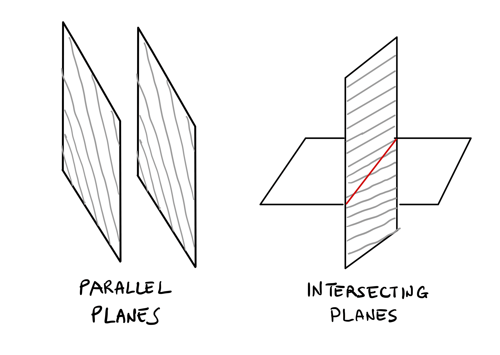
Example 113
The sphere is described by \[
S = \{ (x,y,z) \in \mathbb{R}^3 \, \colon \,x^2 + y^2 + z^2 = 1 \} \,.
\] This is an ellipsoid with \[
p = q = r = 1 \,.
\] In particular we can write the sphere as the quadric equation: \[
\mathbf{x}^T
\left(
\begin{array}{ccc}
1 & 0 & 0 \\
0 & 1 & 0 \\
0 & 0 & 1
\end{array}
\right) \mathbf{x}= 1 \,.
\]
Example 114
Consider the level surface \[
\mathcal{S}= \{ (x,y,z) \in \mathbb{R}^3 \, \colon \,f(x,y,z) = 0 \}
\] with \[
f(x,y,z) = x^2 + 2y^2 - 4z^2 + 2xy + yz - 6xz + 1 = 0 \,.
\] Therefore \(\mathcal{S}\) is a quadric. The matrix associated to \(f\) is \[
A =
\left(
\begin{array}{ccc}
1 & 1 & -3 \\
1 & 2 & 1/2 \\
-3 & 1/2 & -4
\end{array}
\right) \,.
\] Diagonalizing the matrix \(A\) we obtain \(A=PDP^{-1}\), with \(P\) matrix of eigenvectors and \[
D =
\left(
\begin{array}{ccc}
-5.51 & 0 & 0 \\
0 & 1.55 & 0 \\
0 & 0 & 2.96
\end{array}
\right) \,.
\] Therefore, up to changing basis via the matrix \(P\), the surface \(S\) can be described by the quadric equation \[
5.51 \widetilde{x}^2 - 1.55 \widetilde{y}^2 - 2.96 \widetilde{z}^2 = 1 \,,
\] showing that \(S\) is a Hyperboloid of two sheets.
4.10.3 Ruled surfaces
A ruled surface, is a surface obtained as union of straight lines, called the rulings of the surface. By using curves, ruled surfaces can be defined in the following way.
Definition 115: Ruled surface
A ruled surface is a surface with chart \[
{\pmb{\sigma}}(u,v) = {\pmb{\gamma}}(u) + v \mathbf{a}(u) \,,
\] where \({\pmb{\gamma}}, \mathbf{a} \colon (a,b) \to \mathbb{R}^3\) are smooth curves, such that \[
\dot{{\pmb{\gamma}}}(t) \, \text{ and } \, \mathbf{a}(t) \, \text{ are linearly independent for all } \, t \in (a,b).
\]
\({\pmb{\gamma}}\) is the base curve and the lines \(v \mapsto v \mathbf{a}(u)\) the rulings.
Theorem 116: Regularity of ruled surfaces
A ruled surface \(\mathcal{S}\) is regular if \(v\) is sufficiently small.
Proof
A chart for \(\mathcal{S}\) is \[
{\pmb{\sigma}}(u,v) = {\pmb{\gamma}}(u) + v \mathbf{a}(u) \,,
\] with \(\dot{{\pmb{\gamma}}}\) and \(\mathbf{a}\) linerly independent Differentiating, we obtain \[
{\pmb{\sigma}}_u = \dot{{\pmb{\gamma}}}(u) + v \dot{\mathbf{a}}(u) \,, \quad
{\pmb{\sigma}}_v = \mathbf{a}(u) \,.
\] Thus, \(\dot{{\pmb{\gamma}}}(u) + v \dot{\mathbf{a}}(u)\) and \(\mathbf{a}\) are linearly independent for \(v\) sufficiently small.
The same base curve can yield multiple ruled surfaces, depending on the choice of rulings. For example, if \({\pmb{\gamma}}\) is a circle, \[ {\pmb{\gamma}}(u) = (\cos(u), \sin(u), 0) \,, \] we can obtain both the unit cylinder, and the Möbius band.
Example 117: Unit Cylinder is ruled surface
Question. Prove that the unit cylinder is a ruled surface.
Solution. The unit cylinder \(\mathcal{S}\) is charted by \[\begin{align*} & {\pmb{\sigma}}(u,v) = (\cos(u), \sin(u),v ) = {\pmb{\gamma}}(u) + v \mathbf{a}(u) \\ & {\pmb{\gamma}}(u) = (\cos(u), \sin(u),0 ) \,, \quad \mathbf{a} = (0,0,1) \end{align*}\] \(\mathcal{S}\) is a ruled surface, since the vectors \[ \dot{{\pmb{\gamma}}}= (-\sin(u), \cos(u), 0 ) \,, \quad \mathbf{a} = (0,0,1) \] are orthogonal, and hence linearly independent.
Example 118: Möbius band
Question. The Möbius band is a ruled surface with chart \[ {\pmb{\sigma}}= {\pmb{\gamma}}(u) + v \mathbf{a}(u) \,, \quad u \in (0,2\pi), \, v \in \left( -\frac12, \frac12 \right) \,, \] where \[ {\pmb{\gamma}}(u) = (\cos(u), \sin(u), 0) \] is the unit circle, and \[ \mathbf{a} = \left( -\sin \left( \frac{u}{2} \right) \cos(u), -\sin \left( \frac{u}{2} \right) \sin(u), \cos \left( \frac{u}{2} \right) \right) \] is a vector which does a half rotation while going around the unit circle \({\pmb{\gamma}}\). In particular \[ {\pmb{\sigma}}(u,v) = \left( \left[ 1 - v \sin \left( \frac{u}{2} \right) \right] \cos(u), \left[ 1 - v \sin \left( \frac{u}{2} \right) \right] \sin(u), v \cos \left( \frac{u}{2} \right) \right) \,. \]
- Compute the standard unit normal to \({\pmb{\sigma}}\).
- Prove that \(\mathcal{S}\) is non orientable.
Solution.
From the formula for \({\pmb{\sigma}}\), it is easy to compute that \[ {{\pmb{\sigma}}}_{u}\times {{\pmb{\sigma}}}_{v}= \left( - \cos(u) \cos \left( \frac{u}{2} \right), - \sin(u) \cos \left( \frac{u}{2} \right) , - \sin \left( \frac{u}{2} \right) \right) \,. \] It is also immediate to check that \(\left\| {{\pmb{\sigma}}}_{u}\times {{\pmb{\sigma}}}_{v} \right\| = 1\), and therefore the principal unit normal of \({\pmb{\sigma}}\) is \[ \mathbf{N}_{{\pmb{\sigma}}} = {\pmb{\sigma}}_u \times {{\pmb{\sigma}}}_{v}\,. \]
Suppose by contradiction that \(\mathcal{S}\) is orientable. This means there exists a globally defined principal unit normal vector \[ \mathbf{N}\colon \mathcal{S}\to \mathbb{R}^3 \,. \] By definition of principal normal, we have \[ \mathbf{N}\circ {\pmb{\sigma}}= \mathbf{N}_{{\pmb{\sigma}}} \,. \] Consider the point \(\mathbf{p}= (1,0,0)\) on \(\mathcal{S}\). Notice that, by continuity, \(\mathbf{p}\) can be obtained via \({\pmb{\sigma}}\) through the limits \[ \mathbf{p}= \lim_{u \to 0^+} {\pmb{\sigma}}(u,0) = \lim_{u \to 2\pi^-} {\pmb{\sigma}}(u,0) \,. \] Since \(\mathbf{N}\) is continuous, the above implies \[ \mathbf{N}(\mathbf{p}) = \lim_{u \to 0^+} \mathbf{N}\circ {\pmb{\sigma}}(u,0) = \lim_{u \to 2\pi^-} \mathbf{N}\circ {\pmb{\sigma}}(u,0) \,. \tag{4.6}\] However, by direct calculation: \[\begin{align*} \lim_{u \to 0^+} \mathbf{N}\circ {\pmb{\sigma}}(u,0) & = \lim_{u \to 0^+} \mathbf{N}_{{\pmb{\sigma}}} (u,0) = (-1,0,0) \\ \lim_{u \to 2\pi^-} \mathbf{N}\circ {\pmb{\sigma}}(u,0) & = \lim_{u \to 2\pi^-} \mathbf{N}_{{\pmb{\sigma}}} (u,0) = (1,0,0) \end{align*}\] This clearly contradicts (4.6). Therefore \(\mathbf{N}\) cannot exist, and \(\mathcal{S}\) is not orientable.
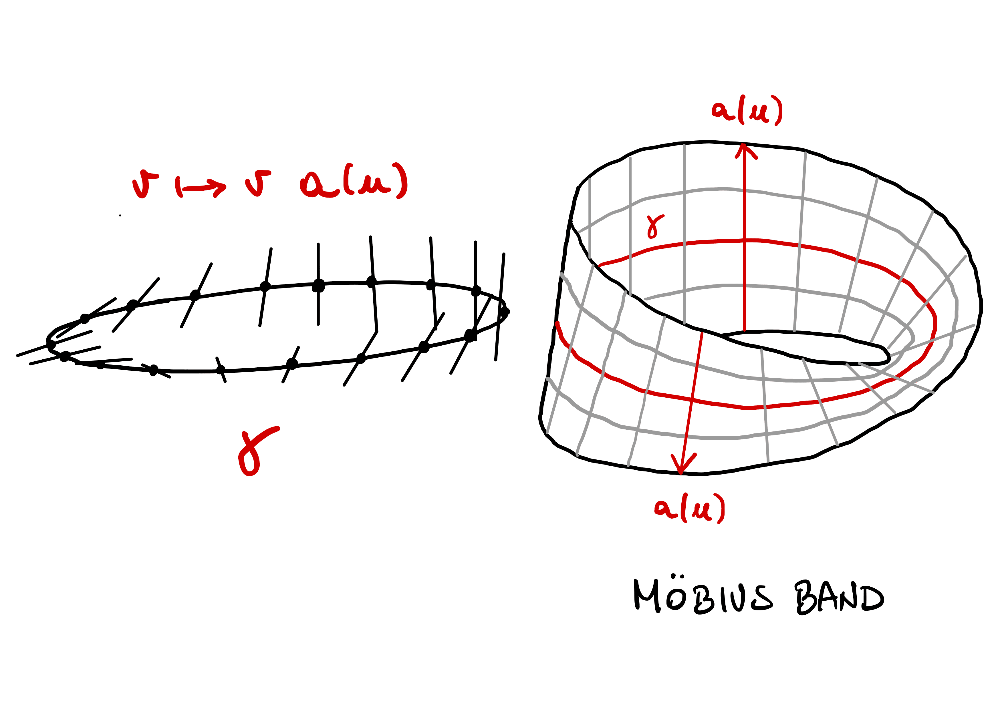
Example 119: A ruled surface
Question. Show that the following surface is ruled \[
S=\left\{(x, y, z) \in \mathbb{R}^{3} \, \colon \, x^{2}+ 10 xy + 16x^2 - z = 0\right\} \,.
\]
Solution. We can rearrange \[ x^{2}+10 x y+16 x^{2}-z =0 \, \iff \, (x+8 y)(x+2 y) = z \,. \] Let \(u=x+8 y\) and \(v=x+2 y\). Therefore \(u v=z\) and \[ u-v =6 y \, \implies \, y=\frac{u-v}{6} \, \implies \, x =u-8 y =\frac{4 v-u}{3} \,. \] It follows that if \((x, y, z) \in S\) then \[ \begin{aligned} (x, y, z) & =\left(\frac{4 v-u}{3}, \frac{u-v}{6}, u v\right) \\ & =\left(-\frac{u}{3}, \frac{u}{6}, 0\right)+v\left(\frac{4}{3},-\frac{1}{6}, u\right) = {\pmb{\gamma}}(u) + v \mathbf{a}(u) \,. \end{aligned} \] When \(u \neq 0\), the vectors \[ \mathbf{a}(u) =\left(\frac{4}{3},-\frac{1}{6}, u\right) \,, \quad \dot{{\pmb{\gamma}}}(u) = \left(-\frac13,\frac16,0 \right) \,, \] are linearly independent, as the last component of \(\dot{{\pmb{\gamma}}}(u)\) is \(0\). Also \(\mathbf{a}(0)\) and \(\dot{{\pmb{\gamma}}}(0)\) are linearly independent. Thus, \(\mathcal{S}\) is a ruled surface.
4.10.4 Surfaces of Revolution
Surfaces of revolution are obtained by rotating a curve about the \(z\)-axis.
Definition 120: Surface of revolution
Let \({\pmb{\gamma}}\colon (a,b) \to \mathbb{R}^3\) be a smooth curve in the \((x,z)\)-plane, \[
{\pmb{\gamma}}(v) = (f(v), 0 , g(v)) \,, \qquad f > 0 \,.
\] The surface \(\mathcal{S}\) formed by rotating \({\pmb{\gamma}}\) about the \(z\)-axis, called a surface of revolution, is charted by \({\pmb{\sigma}}\colon U \to \mathbb{R}^3\) \[
{\pmb{\sigma}}(u,v) = (\cos(u)f(v) , \sin(u) f(v), g(v))\,,
\,\, U = (0,2\pi) \times (a,b) \,.
\]
Theorem 121: Regularity of surfaces of revolution
A surface of revolution is regular if and only if \({\pmb{\gamma}}\) is regular.
Proof
We have \[\begin{align*}
{\pmb{\sigma}}_u & = \left(- \sin(u)f(v), \cos(u) f(v), 0 \right) \\
{\pmb{\sigma}}_v & = \left(\cos(u) \dot{f}(v) , \sin(u)\dot{f}(v) , \dot{g}(v) \right) \\
{\pmb{\sigma}}_u \times {\pmb{\sigma}}_v & = \left( \cos(u) f \dot{g} , \sin(u) f \dot{g} , -f \dot{f} \right) \,, \\
\left\| {\pmb{\sigma}}_u \times {\pmb{\sigma}}_v \right\| & = f \sqrt{\left( \dot{f}^2 + \dot{g}^2 \right)} = f \left\| \dot{{\pmb{\gamma}}} \right\| \,.
\end{align*}\] Now, \({\pmb{\sigma}}\) is regular if and only if \({\pmb{\sigma}}_u \times {\pmb{\sigma}}_v \neq {\pmb{0}}\). Since \(f > 0\) by definition, we conclude that \({\pmb{\sigma}}\) is regular if and only if \(\dot{{\pmb{\gamma}}}\neq {\pmb{0}}\), that is, \({\pmb{\gamma}}\) is regular.
Example 122: Catenoid is surface of revolution
Question. The Catenoid \(\mathcal{S}\) is the surface of revolution formed by rotating the catenary \({\pmb{\gamma}}(v) = \left( \cosh (v), 0 , v \right)\) about the \(z\)-axis. A chart for \(\mathcal{S}\) is given by \[
{\pmb{\sigma}}(u,v) = (\cos(u) \cosh (v) , \sin(u) \cosh (v), v) \,,
\] with \(u \in (0,2\pi), v \in \mathbb{R}\). Prove that \(\mathcal{S}\) is a regular surface.
Solution. Note that \(f>0\). \(\mathcal{S}\) is regular because \({\pmb{\gamma}}\) is regular, as \[ \dot{{\pmb{\gamma}}}= \left( \sinh (v), 0 , 1 \right) \,, \quad \left\| \dot{{\pmb{\gamma}}} \right\|^2 = 1+ \sinh(v)^2 \geq 1 \,. \]
4.11 First fundamental form
In this section we introduce the first fundamental form of a surface. This will allow us to compute:
- Angle between tangent vectors
- Lengths of tangent vectors
- Area of surface regions
Let \(\mathcal{S}\) be a surface and consider two points \(\mathbf{p}, \mathbf{q} \in \mathcal{S}\). The euclidean distance between \(\mathbf{p}\) and \(\mathbf{q}\) is \[ \left\| \mathbf{p}- \mathbf{q} \right\| \,. \] However, this measures the length of the straight segment which connects \(\mathbf{p}\) to \(\mathbf{q}\), that is, the planar distance between \(\mathbf{p}\) and \(\mathbf{q}\). We are interested in measuring the distance of \(\mathbf{p}\) and \(\mathbf{q}\) on \(\mathcal{S}\). A way to measure such distance is the following: Suppose \[ {\pmb{\gamma}}\colon (a,b) \to \mathcal{S} \] is a smooth curve such that \[ {\pmb{\gamma}}(a) = \mathbf{p}\,, \quad {\pmb{\gamma}}(b) = \mathbf{q} \,. \] The distance between \(\mathbf{p}\) and \(\mathbf{q}\) on \(\mathcal{S}\) could be defined as the length of \({\pmb{\gamma}}\), i.e., \[ \int_{a}^{b} \left\| \dot{{\pmb{\gamma}}}(t) \right\| \, dt \,. \] Since \({\pmb{\gamma}}(t) \in \mathcal{S}\), by definition of tangent plane, we have \[ \dot{{\pmb{\gamma}}}(t) \in T_{\mathbf{p}} S \,, \quad \mathbf{p}:= {\pmb{\gamma}}(t) \,. \] Therefore, computing \(\left\| \dot{{\pmb{\gamma}}}(t) \right\|\) is equivalent to computing the length of tangent vectors to \(\mathcal{S}\). This motivates the definition of first fundamental form.
Definition 123: First fundamental form (FFF)
Let \(\mathcal{S}\) be a regular surface and \(\mathbf{p}\in \mathcal{S}\). The first fundamental form (FFF) of \(\mathcal{S}\) at \(\mathbf{p}\) is the bilinear symmetric map \[
I_{\mathbf{p}} \colon T_{\mathbf{p}} \mathcal{S}\times T_{\mathbf{p}} \mathcal{S}\to \mathbb{R}\,, \quad I_{\mathbf{p}} (\mathbf{v},\mathbf{w}) := \mathbf{v}\cdot \mathbf{w}\,.
\]
Three observations:
The first fundamental form of \(\mathcal{S}\) at \(\mathbf{p}\) is the map obtained by restricting the scalar product of \(\mathbb{R}^3\) to \(T_{\mathbf{p}} \mathcal{S}\).
Note that \[ I_{\mathbf{p}} (\mathbf{v},\mathbf{v}) = \| \mathbf{v}\|^2 \,, \] so that \(I_{\mathbf{p}}\) can be used to compute the length of tangent vectors.
The definition of \(I_{\mathbf{p}}\) does not depend on a chosen chart, since \(T_{\mathbf{p}}\mathcal{S}\) can be defined without using charts.
To use the first fundamental form in practice, we need to express \(I_{\mathbf{p}}\) in terms of local charts. To this end, we first define:
- The coordinates functions \(du\) and \(dv\) on \(T_{\mathbf{p}} \mathcal{S}\),
- The first fundamental form of a chart.
Definition 124: Coordinate functions on tangent plane
Let \({\pmb{\sigma}}\colon U \to \mathbb{R}^3\) be regular, \(\mathcal{S}= {\pmb{\sigma}}(U)\). The coordinate functions on \(T_{\mathbf{p}} \mathcal{S}\) are the linear maps \[
du, dv \colon T_{\mathbf{p}} \mathcal{S}\to \mathbb{R}\,, \quad du(\mathbf{v}) := \lambda \,,
\quad dv(\mathbf{v}) := \mu \,,
\] where \(\mathbf{v}= \lambda {{\pmb{\sigma}}}_{u}+ \mu {{\pmb{\sigma}}}_{v}\), since \(\{{{\pmb{\sigma}}}_{u}, {{\pmb{\sigma}}}_{v}\}\) is a basis for \(T_{\mathbf{p}}\mathcal{S}\).
Definition 125: FFF of a chart
Let \({\pmb{\sigma}}\colon U \to \mathbb{R}^3\) be regular, \(\mathcal{S}= {\pmb{\sigma}}(U)\). Define \(E , F , G \colon U \to \mathbb{R}\) \[
E = {\pmb{\sigma}}_u \cdot {\pmb{\sigma}}_u \,, \quad F = {\pmb{\sigma}}_u \cdot {\pmb{\sigma}}_v \,, \quad
G = {\pmb{\sigma}}_v \cdot {\pmb{\sigma}}_v \,.
\] The FFF of \({\pmb{\sigma}}\) is the quadratic form \(\mathscr{F}_1 \colon T_{\mathbf{p}} \mathcal{S}\to \mathbb{R}\) \[
\mathscr{F}_1 (\mathbf{v}) = E \, du^2(\mathbf{v}) + 2F \, du(\mathbf{v}) \, dv (\mathbf{v})+ G \, dv^2 (\mathbf{v}) \,, \quad \forall \, v \in T_{\mathbf{p}} \mathcal{S}\,,
\] for all \(\mathbf{p}\in {\pmb{\sigma}}(U)\), with \(E,F,G\) evaluated at \((u,v) = {\pmb{\sigma}}^{-1}(\mathbf{p})\).
We usually omit the dependence on \(\mathbf{v}\) in (?eq-fff-chart), and just write \[ \mathscr{F}_1 = E \, du^2 + 2F \, du \, dv + G \, dv^2 \,. \] We are now ready to write \(I_{\mathbf{p}}\) with respect to the basis \(\{{\pmb{\sigma}}_u,{\pmb{\sigma}}_v\}\) of \(T_{\mathbf{p}} \mathcal{S}\).
Theorem 126: Matrix of FFF
Let \({\pmb{\sigma}}\colon U \to \mathbb{R}^3\) be regular, \(\mathcal{S}= {\pmb{\sigma}}(U)\), and \(\mathbf{p}\in {\pmb{\sigma}}(U)\). Then \[
I_{\mathbf{p}} (\mathbf{v},\mathbf{w}) = (du (\mathbf{v}), dv(\mathbf{v}) ) \,
\left(
\begin{array}{cc}
E & F \\
F & G
\end{array}
\right)
(du (\mathbf{w}), dv(\mathbf{w}) )^T \,,
\] for all \(\mathbf{v},\mathbf{w}\in T_{\mathbf{p}} \mathcal{S}\). In particular, it holds \[
\mathscr{F}_1 (\mathbf{v}) = I_{\mathbf{p}} (\mathbf{v},\mathbf{v}) \,, \quad \forall \, \mathbf{v}\in T_{\mathbf{p}} \mathcal{S}\,.
\]
Proof
By Theorem 80, we have \[
T_{\mathbf{p}} \mathcal{S}= \operatorname{span} \{ {\pmb{\sigma}}_u, {\pmb{\sigma}}_v \} \,.
\] Therefore, for \(\mathbf{v},\mathbf{w}\in T_{\mathbf{p}} \mathcal{S}\), there exist \(\lambda_1,\lambda_2,\mu_1,\mu_2 \in \mathbb{R}\) such that \[
\mathbf{v}= \lambda_1 {\pmb{\sigma}}_u + \mu_1 {\pmb{\sigma}}_v \,, \quad
\mathbf{w}= \lambda_2 {\pmb{\sigma}}_u + \mu_2 {\pmb{\sigma}}_v \,.
\] Therefore, \[\begin{align*}
I_{\mathbf{p}} (\mathbf{v},\mathbf{w}) & = \mathbf{v}\cdot \mathbf{w}\\
& = \lambda_1 \lambda_2 \, {\pmb{\sigma}}_u \cdot {\pmb{\sigma}}_v + ( \lambda_1 \mu_2 + \lambda_2 \mu_1 ) \, {\pmb{\sigma}}_u \cdot {\pmb{\sigma}}_v + \mu_1 \mu_2 \, {\pmb{\sigma}}_v \cdot {\pmb{\sigma}}_v \\
& = E \, du (\mathbf{v}) du(\mathbf{w}) + F \, ( du(\mathbf{v}) \, dv(\mathbf{w}) + du(\mathbf{w}) dv(\mathbf{v}) ) \\
& \qquad + G \, dv(\mathbf{v}) dv(\mathbf{w}) \\
& = (du (\mathbf{v}), dv(\mathbf{v}) ) \,
\left(
\begin{array}{cc}
E & F \\
F & G
\end{array}
\right) \, (du(\mathbf{w}) , dv(\mathbf{w}))^T \,.
\end{align*}\] The fact that \[
I_{\mathbf{p}}(\mathbf{v},\mathbf{v}) = \mathscr{F}_1(\mathbf{v})
\] follows from the first part of the statement and definition of \(\mathscr{F}_1\).
Remark 127: Linear algebra interpretation
Using linear algebra, Theorem 126 has the following clear interpretation: \(I_{\mathbf{p}}\) is a symmetric bilinear form on the vector space \(T_{\mathbf{p}} \mathcal{S}\). Fixing the basis \(\{ {\pmb{\sigma}}_u, {\pmb{\sigma}}_v \}\) for \(T_{\mathbf{p}} \mathcal{S}\), we can represent \(I_{\mathbf{p}}\) via the matrix \[\begin{align*}
M & :=
\left(
\begin{array}{cc}
I_{\mathbf{p}} ({\pmb{\sigma}}_u , {\pmb{\sigma}}_u) & I_{\mathbf{p}} ({\pmb{\sigma}}_u , {\pmb{\sigma}}_v) \\
I_{\mathbf{p}} ({\pmb{\sigma}}_v , {\pmb{\sigma}}_u) & I_{\mathbf{p}} ({\pmb{\sigma}}_v , {\pmb{\sigma}}_v) \\
\end{array}
\right) \\
& =
\left(
\begin{array}{cc}
{\pmb{\sigma}}_u \cdot {\pmb{\sigma}}_u & {\pmb{\sigma}}_u \cdot {\pmb{\sigma}}_v \\
{\pmb{\sigma}}_v \cdot {\pmb{\sigma}}_u & {\pmb{\sigma}}_v \cdot {\pmb{\sigma}}_v \\
\end{array}
\right) \\
& =
\left(
\begin{array}{cc}
E & F \\
F & G \\
\end{array}
\right) \,,
\end{align*}\] where we used that \({\pmb{\sigma}}_u \cdot {\pmb{\sigma}}_v = {\pmb{\sigma}}_v \cdot {\pmb{\sigma}}_u\).
Notation
With a little abuse of notation, we also denote by \(\mathscr{F}_1\) the \(2 \times 2\) matrix \[
\mathscr{F}_1 :=
\left(
\begin{array}{cc}
E & F \\
F & G
\end{array}
\right) \,.
\]
Example 128: FFF of Unit cylinder
Question. Consider the unit cylinder with chart \[
{\pmb{\sigma}}(u,v) = (\cos(u), \sin(u), v) \,, \quad (u,v) \in (0,2\pi) \times \mathbb{R}\,.
\] Prove that the FFF of \({\pmb{\sigma}}\) is \[
\mathscr{F}_1 = du^2 + dv^2 \,.
\]
Solution. We have \[\begin{align*} & {\pmb{\sigma}}_u = (-\sin(u),\cos(u), 0 ) & \, & F = {\pmb{\sigma}}_u \cdot {\pmb{\sigma}}_v = 0 \\ & {\pmb{\sigma}}_v = (0,0,1) & \, & G = {\pmb{\sigma}}_v \cdot {\pmb{\sigma}}_v = 1 \\ & E = {\pmb{\sigma}}_u \cdot {\pmb{\sigma}}_u = 1 & \, & \mathscr{F}_1 = du^2 + dv^2 \end{align*}\]
Warning
The first fundamental form \(I_{\mathbf{p}}\) depends only on the surface \(\mathcal{S}\) and the point \(\mathbf{p}\). Instead the local representation of \(I_{\mathbf{p}}\) \[
\mathscr{F}_1 = E \, du^2 + 2F \, du dv + G \, dv^2 \,,
\] depends on the choice of chart \({\pmb{\sigma}}\colon U \to \mathbb{R}^3\). The next result explains how \(\mathscr{F}_1\) changes when we change chart.
Proposition 129: FFF and reparametrizations
Let \({\pmb{\sigma}}\colon U \to \mathbb{R}^3\) be regular, and \(\widetilde{{\pmb{\sigma}}} \colon \widetilde{U} \to \mathbb{R}^3\) a reparametrization, with \(\widetilde{{\pmb{\sigma}}} = {\pmb{\sigma}}\circ \Phi\) and \(\Phi \colon \widetilde{U} \to U\) diffeomorphism.
The matrices \(\mathscr{F}_1\) and \(\widetilde{\mathscr{F}}_1\) of the FFF of \({\pmb{\sigma}}\) and \(\widetilde{{\pmb{\sigma}}}\) are related by \[ {\widetilde{\mathscr{F}}}_1 = (J \Phi)^T \, \mathscr{F}_1 \, J \Phi \,, \quad \mathscr{F}_1 = \left( \begin{array}{cc} E & F \\ F & G \end{array} \right) \,, \quad \widetilde{\mathscr{F}}_1 = \left( \begin{array}{cc} \widetilde{E} & \widetilde{F} \\ \widetilde{F} & \widetilde{G} \end{array} \right) \,. \]
The linear maps \(du, dv\) and \(d\tilde{u}, d\tilde{v}\) are related by \[ \begin{aligned} du & = \frac{\partial u}{\partial \tilde{u}} \, d\tilde{u} + \frac{\partial u}{\partial \tilde{v}} \, d\tilde{v} \\ dv & = \frac{\partial v}{\partial \tilde{u}} \, d\tilde{u} + \frac{\partial v}{\partial \tilde{v}} \, d\tilde{v} \end{aligned} \]
Proof
The pairs \(\{{\pmb{\sigma}}_u,{\pmb{\sigma}}_u\}\) and \(\{\widetilde{{\pmb{\sigma}}}_{\tilde{u}} , \widetilde{{\pmb{\sigma}}}_{\tilde{v}} \}\) are both bases for the vector space \(T_{\mathbf{p}} \mathcal{S}\). By the chain rule, we have \[\begin{align*}
\widetilde{{\pmb{\sigma}}}_{\tilde{u}} & =
{\pmb{\sigma}}_u \frac{\partial u}{\partial \tilde{u}} + {\pmb{\sigma}}_v \frac{\partial v}{\partial \tilde{u}} \\
\widetilde{{\pmb{\sigma}}}_{\tilde{v}} & =
{\pmb{\sigma}}_u \, \frac{\partial u}{\partial \tilde{v}} + {\pmb{\sigma}}_v \frac{\partial v}{\partial \tilde{v}}
\end{align*}\] The above show that the change of basis matrix between \(\{{\pmb{\sigma}}_u,{\pmb{\sigma}}_u\}\) and \(\{\widetilde{{\pmb{\sigma}}}_{\tilde{u}} , \widetilde{{\pmb{\sigma}}}_{\tilde{v}} \}\) is given exactly by \(J\Phi\). Therefore, the two formulas in the Proposition are consequence of change of basis results for bilinear forms and linear maps, respectively.
Example 130: FFF of Plane
Question. Let \(\mathbf{a}, \mathbf{p}, \mathbf{q} \in \mathbb{R}^3\), with \(\mathbf{p}\), \(\mathbf{q}\) orthonormal. The plane in cartesian and polar coordinates is charted by, respectively, \[\begin{align*} & {\pmb{\sigma}}(u,v) = \mathbf{a} + u \mathbf{p}+ v \mathbf{q} \,, \quad (u,v) \in \mathbb{R}^2 \,, \\ & \widetilde{{\pmb{\sigma}}}(\rho,\theta) = \mathbf{a} + \rho \cos(\theta) \mathbf{p}+ \rho \sin(\theta) \mathbf{q} \,, \quad \rho>0 , \, \theta \in (0,2\pi) \,. \end{align*}\]
Show that the FFF of \({\pmb{\sigma}}\) and \(\widetilde{{\pmb{\sigma}}}\) are \[ \mathscr{F}_1 = du^2 + dv^2 \,, \qquad {\widetilde{\mathscr{F}}}_1 = d\rho^2 + \rho^2 d\theta^2 \,. \]
Let \(\Phi\) be the change of variables from polar to cartesian coordinates. Show that \[ {\widetilde{\mathscr{F}}}_1 = (J \Phi)^T \, {\mathscr{F}}_1 \, J \Phi \,. \]
Solution.
Using that \(\mathbf{p}\) and \(\mathbf{q}\) are orthonormal, \[\begin{align*} & {\pmb{\sigma}}_u = \mathbf{p}\,, && \widetilde{{\pmb{\sigma}}}_{\rho} = \cos(\theta)\mathbf{p}+ \sin(\theta) \mathbf{q} \\ & {\pmb{\sigma}}_v = \mathbf{q} & \, & \widetilde{{\pmb{\sigma}}}_{\theta} = - \rho \sin(\theta) \mathbf{p}+ \rho \cos(\theta) \mathbf{q} \\ & E = {\pmb{\sigma}}_u \cdot {\pmb{\sigma}}_u = 1 & \, & \widetilde{E}= \widetilde{{\pmb{\sigma}}}_{\rho} \cdot \widetilde{{\pmb{\sigma}}}_{\rho} = 1 \\ & F = {\pmb{\sigma}}_u \cdot {\pmb{\sigma}}_v = 0 & \, & \widetilde{F}= \widetilde{{\pmb{\sigma}}}_{\rho} \cdot \widetilde{{\pmb{\sigma}}}_{\theta} = 0 \\ & G = {\pmb{\sigma}}_v \cdot {\pmb{\sigma}}_v = 1 & \, & \widetilde{G}= \widetilde{{\pmb{\sigma}}}_{\theta} \cdot \widetilde{{\pmb{\sigma}}}_{\theta} = r^2 \\ & \mathscr{F}_1 = du^2 + dv^2 & \, & {\widetilde{\mathscr{F}}}_1 = d{\rho}^2 + {\rho}^2 d\theta^2 \end{align*}\]
We have \(\Phi({\rho},\theta) = ( {\rho} \cos(\theta), {\rho} \sin (\theta) )\). Then \[\begin{align*} (J \Phi)^T & \, \mathscr{F}_1 J \Phi = (J \Phi)^T \, J \Phi \\ & = \left( \begin{array}{cc} \cos(\theta) & \sin(\theta) \\ -\rho \sin(\theta) & \rho \cos(\theta) \end{array} \right) \left( \begin{array}{cc} \cos(\theta) & - \rho \sin(\theta) \\ \sin(\theta) & \rho \cos(\theta) \end{array} \right) \\ &= \left( \begin{array}{cc} 1 & 0 \\ 0 & \rho^2 \end{array} \right) = \widetilde{\mathscr{F}}_1 \,. \end{align*}\]
Remark 131
As seen in Example 129, when the plane is charted in cartesian coordinates, the FFF is essentially the Pythagorean Theorem on the plane: In fact, a basis for \(T_{\mathbf{p}} \mathcal{S}\) is \[
T_{\mathbf{p}}\mathcal{S}= \operatorname{span} \{ {{\pmb{\sigma}}}_{u}, {{\pmb{\sigma}}}_{v}\} = \{ \lambda \mathbf{p}+ \mu \mathbf{q} \, \colon \, \lambda, \mu \in \mathbb{R}\} \,.
\] Therefore, for \[
\mathbf{v}\in T_{\mathbf{p}} \mathcal{S}\,, \qquad \mathbf{v}= \lambda \mathbf{p}+ \mu \mathbf{q} \,,
\] we have \[
\| \mathbf{v}\|^2 = \mathscr{F}_1 (\mathbf{v}) = du^2(\mathbf{v}) + dv^2(\mathbf{v}) = \lambda^2 + \mu^2 \,.
\] Hence, the square of the length of the vector \(\mathbf{v}\), which has coordinates \(\lambda, \mu\) in the basis \(\{ {{\pmb{\sigma}}}_{u}, {{\pmb{\sigma}}}_{v}\}\), is equal to \(\lambda^2 + \mu^2\).
Remark 132
We have seen that a plane and the unit cylinder have the same first fundamental form \[
\mathscr{F}_1 = du^2 + dv^2 \,.
\] Therefore, lengths, angles and areas are the same on the two surfaces.
Example 133
Question. Find the FFF of the surface chart \[
{\pmb{\sigma}}(u, v)=\left(u-v, u+v, u^{2}+v^{2}\right)\,.
\]
Solution. We compute \[ \begin{aligned} & {{\pmb{\sigma}}}_{u}=(1,1,2 u) & \,& F ={{\pmb{\sigma}}}_{u}\cdot {{\pmb{\sigma}}}_{v}= 4 u v \\ & {{\pmb{\sigma}}}_{v}=(-1,1,2 v) &\,& G = {{\pmb{\sigma}}}_{v}\cdot {{\pmb{\sigma}}}_{v}= 2\left(1+2 v^{2}\right) \\ & E = {{\pmb{\sigma}}}_{u}\cdot {{\pmb{\sigma}}}_{v}= 2\left(1+2 u^{2}\right) &\,& \mathscr{F}_{1} = 2\left(\begin{array}{cc} 1+2 u^{2} & 2 u v \\ 2 u v & 1+2 v^{2} \end{array}\right) \,. \end{aligned} \]
4.11.1 Length of curves
The first fundamental form allows to compute the length of curves with values on surfaces.
Proposition 134: Length of curves and FFF
Let \({\pmb{\sigma}}\colon U \to \mathbb{R}^3\) be regular, \(\mathcal{S}= {\pmb{\sigma}}(U)\). Let \({\pmb{\gamma}}\colon (a,b) \to \mathcal{S}\) be a smooth curve. Then \[
{\pmb{\gamma}}(t) = {\pmb{\sigma}}(u(t), v(t)) \,,
\] for some smooth functions \(u,v \colon (a,b) \to \mathbb{R}\), and \[
\int_{a}^{b} \left\| \dot{{\pmb{\gamma}}}(t) \right\| \, dt =
\int_{a}^{b} \sqrt{ E \dot{u}^2 + 2F \dot u \dot v + G \dot{v}^2 } \, dt \,,
\] where \(\dot u, \dot v\) are computed at \(t\), and \(E,F,G\) at \((u(t),v(t))\).
Proof
Since \({\pmb{\gamma}}\) takes values into \({\pmb{\sigma}}(U)\), by Lemma 80 there exist smooth functions \(u,v\) such that \[
{\pmb{\gamma}}(t) = {\pmb{\sigma}}(u(t), v(t)) \,, \quad \forall \, t \in (a,b) \,.
\] By chain rule we have \[
\dot{{\pmb{\gamma}}}(t) = \dot u (t) {\pmb{\sigma}}_u( u(t),v(t) ) + \dot v (t) {\pmb{\sigma}}_v( u(t),v(t) ) \,.
\] Therefore, \[\begin{align*}
\left\| \dot{{\pmb{\gamma}}}(t) \right\|^2 & = \dot{{\pmb{\gamma}}}\cdot \dot{{\pmb{\gamma}}}\\
& = (\dot{u} {{\pmb{\sigma}}}_{u}+ \dot{v} {{\pmb{\sigma}}}_{v}) \cdot (\dot{u} {{\pmb{\sigma}}}_{u}+ \dot{v} {{\pmb{\sigma}}}_{v}) \\
& = E \, \dot{u}^2 + 2F \, \dot{u} \dot{v} + G \, \dot{v}^2 \,.
\end{align*}\] Integrating, we obtain the thesis.
Example 135: Curves on the Cone
Question. Consider the cone with chart \[ {\pmb{\sigma}}(u,v)=(\cos(u) v, \sin (u) v, v) \,, \quad u \in (0,2\pi),\, v > 0 \,. \]
Compute the first fundamental form of \({\pmb{\sigma}}\).
Compute the length of \({\pmb{\gamma}}(t)= {\pmb{\sigma}}(t,t)\) for \(t \in (\pi/2,\pi)\).
Solution.
The first fundamental form of \({\pmb{\sigma}}\) is \[\begin{align*} & {\pmb{\sigma}}_u = (- \sin(u)v, \cos(u)v,0) &\,& F = {\pmb{\sigma}}_u \cdot {\pmb{\sigma}}_v = 0 \\ & {\pmb{\sigma}}_v = (\cos(u), \sin (u), 1) &\,& G = {\pmb{\sigma}}_v \cdot {\pmb{\sigma}}_v = 2 \\ & E = {\pmb{\sigma}}_u \cdot {\pmb{\sigma}}_u = v^2 & \, & \mathscr{F}_1 = v^2 \, du^2 + 2 \, dv^2 \end{align*}\]
\({\pmb{\gamma}}(t) = {\pmb{\sigma}}(u(t),v(t))\) with \(u(t) = t\) and \(v(t) = t\). Then \[\begin{align*} & \dot u = 1\,, \,\, \dot v = 1 & & F(u(t),v(t)) = F(t,t) = 0 \\ & E(u(t),v(t)) = E(t,t) = t^2 & & G(u(t),v(t)) = G(t,t) = 2 \end{align*}\] The length of \({\pmb{\gamma}}\) between \(\pi/2\) and \(\pi\) is \[ \int_{\pi/2}^{\pi} \left\| \dot{{\pmb{\gamma}}}(t) \right\| \, dt = \int_{\pi/2}^{\pi} \sqrt{ t^2 + 2 } \, dt \,. \]
4.11.2 Isometries
Isometries are an important class of maps between surfaces: They are smooth maps which preserve the first fundamental form.
Definition 136: Local Isometry and Isometry
Let \(\mathcal{S}\) and \(\widetilde{\mathcal{S}}\) be regular and \(f \colon \mathcal{S}\to \widetilde{\mathcal{S}}\) smooth. We say that:
\(f\) is a local isometry, if for all \(\mathbf{p}\in \mathcal{S}\) \[ \mathbf{v}\cdot \mathbf{w}= d_{\mathbf{p}}f (\mathbf{v}) \cdot d_{\mathbf{p}}f (\mathbf{w}) \,, \quad \forall \, \mathbf{v}, \mathbf{w}\in T_{\mathbf{p}} \mathcal{S}\,. \] In this case, \(\mathcal{S}\) and \(\widetilde{\mathcal{S}}\) are said to be locally isometric.
\(f\) is an isometry if:
- \(f\) is a local isometry;
- \(f\) is a diffeomorphism of \(\mathcal{S}\) into \(\widetilde{\mathcal{S}}\).
In this case, \(\mathcal{S}\) and \(\widetilde{\mathcal{S}}\) are said to be isometric.
Recall that the first fundamental form of \(\mathcal{S}\) is defined by \[ I_{\mathbf{p}} (\mathbf{v}, \mathbf{w}) = \mathbf{v}\cdot \mathbf{w}\,, \quad \mathbf{v}, \mathbf{w}\in T_{\mathbf{p}} \mathcal{S}\,. \] Therefore, condition (?eq-loc-iso) reads \[ I_{\mathbf{p}} (\mathbf{v},\mathbf{w}) = I_{\mathbf{p}} (d_{\mathbf{p}}f(\mathbf{v}), d_{\mathbf{p}}f(\mathbf{w})) \,, \quad \forall \, \mathbf{v}, \mathbf{w}\in T_{\mathbf{p}} \mathcal{S}\,. \] In this sense, we see that local isometries preserve the first fundamental form.
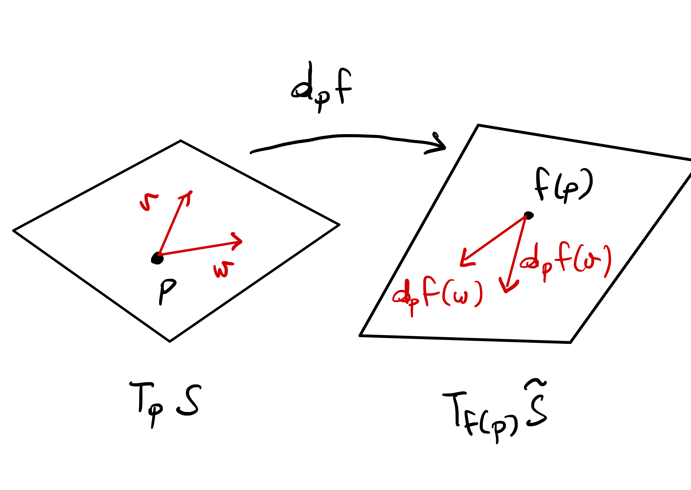
Remark 137
A smooth map \(f \colon \mathcal{S}\to \widetilde{\mathcal{S}}\) is a local isometry if and only if \[
\mathbf{v}\cdot \mathbf{v}= d_{\mathbf{p}} f (\mathbf{v}) \cdot d_{\mathbf{p}} f (\mathbf{v}) \,, \quad
\forall \, \mathbf{v}\in T_{\mathbf{p}} \mathcal{S}\,.
\]
Proof. The thesis follows immediately from the elementary identity \[ \mathbf{v}\cdot \mathbf{w}= \frac12 \left( (\mathbf{v}+ \mathbf{w}) \cdot (\mathbf{v}+ \mathbf{w}) - \mathbf{v}\cdot \mathbf{v}- \mathbf{w}\cdot \mathbf{w}\right) \,, \] which holds for all \(\mathbf{v}, \mathbf{w}\in T_{\mathbf{p}} \mathcal{S}\) (and more in general in arbitrary vector spaces with inner product).
Local isometries are automatically local diffeomorphisms.
Proposition 138
Local isometries are local diffeomorphims.
Proof
Let \(\mathbf{p}\in \mathcal{S}\). Assume by contradiction that the differential of \(f\) \[
d_{\mathbf{p}}f \colon T_{\mathbf{p}} \mathcal{S}\to T_{f(\mathbf{p})} \widetilde{\mathcal{S}}\,,
\] is not invertible. As \(d_{\mathbf{p}}f\) is linear, this implies \(d_{\mathbf{p}}f\) is not injective. Therefore \[
\operatorname{ker} \left(d_{\mathbf{p}}f \right) \neq \{ {\pmb{0}}\} \,,
\] meaning that there exists \(\mathbf{v}\in T_{\mathbf{p}} \mathcal{S}\) such that \[
d_{\mathbf{p}}f(\mathbf{v}) = {\pmb{0}}\,, \qquad \mathbf{v}\neq {\pmb{0}}\,.
\] Using that \(f\) is a local isometry, we get \[
\| \mathbf{v}\|^2 = \mathbf{v}\cdot \mathbf{v}= d_{\mathbf{p}}f(\mathbf{v}) \cdot d_{\mathbf{p}}f (\mathbf{v}) = 0 \,,
\] which implies \(\mathbf{v}= {\pmb{0}}\). This is a contradiction, and therefore \(d_{\mathbf{p}}f\) has to be invertible. By Theorem 106, we conclude that \(f\) is a local diffeomorphism at \(\mathbf{p}\). As \(\mathbf{p}\in \mathcal{S}\) is arbitrary, we infer that \(f\) is a local diffeomorphism of \(\mathcal{S}\) into \(\widetilde{\mathcal{S}}\).
Remark 139
We have just seen that local isometries are also local diffeomorphisms. By definition, isometries are local isometries which are also diffeomorphisms. As such:
- Isometries are local isometries,
- Local isometries are not isometries
This is because, in general, local diffeomorphisms are not global diffeomorphisms, see Example 25.
Local isometries preserve the length of curves, as shown in the following Proposition.
Theorem 140: Local isometries preserve lengths
Let \(\mathcal{S}, \widetilde{\mathcal{S}}\) be regular surfaces, \(f \colon \mathcal{S}\to \widetilde{\mathcal{S}}\) smooth. Equivalently:
- \(f\) is a local isometry.
- Let \({\pmb{\gamma}}\) be a curve on \(\mathcal{S}\) and define the curve \(\widetilde{{\pmb{\gamma}}}= f \circ {\pmb{\gamma}}\) on \(\widetilde{\mathcal{S}}\). Then \({\pmb{\gamma}}\) and \(\widetilde{{\pmb{\gamma}}}\) have the same length.
Proof
Part 1. Suppose \({\pmb{\gamma}}\colon (a,b) \to \mathcal{S}\) is a smooth curve. Consider the smooth curve \[
\widetilde{{\pmb{\gamma}}}\colon (a,b) \to \widetilde{\mathcal{S}} \,, \qquad \widetilde{{\pmb{\gamma}}}:= f \circ {\pmb{\gamma}}\,.
\] Set \(\mathbf{p}:={\pmb{\gamma}}(t)\), so that \[
\dot{{\pmb{\gamma}}}(t) \in T_{\mathbf{p}} \mathcal{S}\,.
\] By definition of differential of a function between surfaces, we have \[
d_{\mathbf{p}}f (\dot{{\pmb{\gamma}}}(t)) = \dot{\widetilde{{\pmb{\gamma}}}}(t)\,.
\] Using that \(f\) is a local isometry gives: \[\begin{align*}
\left\| \dot{\widetilde{{\pmb{\gamma}}}}(t) \right\|^2 & = \dot{\widetilde{{\pmb{\gamma}}}}(t) \cdot \dot{\widetilde{{\pmb{\gamma}}}}(t) \\
& = d_{\mathbf{p}}f (\dot{{\pmb{\gamma}}}(t)) \cdot d_{\mathbf{p}}f (\dot{{\pmb{\gamma}}}(t)) \\
& = \dot{{\pmb{\gamma}}}(t) \cdot \dot{{\pmb{\gamma}}}(t) \\
& = \left\| \dot{{\pmb{\gamma}}}(t) \right\|^2
\end{align*}\] Therefore \({\pmb{\gamma}}\) and \(\widetilde{{\pmb{\gamma}}}\) have the same length: \[
\int_{a}^{b} \left\| \dot{\widetilde{{\pmb{\gamma}}}}(t) \right\|\, dt
= \int_{a}^{b} \left\| \dot{{\pmb{\gamma}}}(t) \right\|\, dt \,.
\]
Part 2. We need to prove that \(f\) is a local isometry. By Remark 137, it is sufficient to show that \[ d_{\mathbf{p}}f (\mathbf{v}) \cdot d_{\mathbf{p}}f (\mathbf{v}) = \mathbf{v}\cdot \mathbf{v}\,, \quad \forall \, \mathbf{v}\in T_{\mathbf{p}}(\mathcal{S}) \,. \tag{4.7}\] Therefore, let \(\mathbf{v}\in T_{\mathbf{p}} \mathcal{S}\) be arbitrary. By definition of tangent plane, there exists a curve \({\pmb{\gamma}}\colon (-\varepsilon,\varepsilon) \to \mathcal{S}\) such that \[ {\pmb{\gamma}}(0) = \mathbf{p}\,, \quad \dot{{\pmb{\gamma}}}(0) = \mathbf{v}\,. \] Define the curve \[ \widetilde{{\pmb{\gamma}}}\colon (-\varepsilon,\varepsilon) \to \widetilde{\mathcal{S}} \,, \qquad \widetilde{{\pmb{\gamma}}}:= f \circ {\pmb{\gamma}}\,. \] By assumption, \({\pmb{\gamma}}\) and \(\widetilde{{\pmb{\gamma}}}\) have the same length, that is, \[ \int_{-\varepsilon}^{\varepsilon} \sqrt{ \dot{\widetilde{{\pmb{\gamma}}}}(t) \cdot \dot{\widetilde{{\pmb{\gamma}}}}(t) }\, dt = \int_{-\varepsilon}^{\varepsilon} \sqrt{ \dot{{\pmb{\gamma}}}(t) \cdot \dot{{\pmb{\gamma}}}(t) }\, dt \,. \] Since the above equality is true for each \(\varepsilon>0\), and the functions being integrated are continuous, we infer \[ \dot{\widetilde{{\pmb{\gamma}}}}(0) \cdot \dot{\widetilde{{\pmb{\gamma}}}}(0) = \dot{{\pmb{\gamma}}}(0) \cdot \dot{{\pmb{\gamma}}}(0) \,. \] Recall that by definition of differential we have \[ d_{\mathbf{p}}f (\mathbf{v}) = \dot{\widetilde{{\pmb{\gamma}}}}(0) \,. \] Therefore \[\begin{align*} d_{\mathbf{p}}f (\mathbf{v}) \cdot d_{\mathbf{p}}f (\mathbf{v}) & = \dot{\widetilde{{\pmb{\gamma}}}}(0) \cdot \dot{\widetilde{{\pmb{\gamma}}}}(0) \\ & = \dot{{\pmb{\gamma}}}(0) \cdot \dot{{\pmb{\gamma}}}(0) \\ & = \mathbf{v}\cdot \mathbf{v}\,. \end{align*}\] As \(\mathbf{v}\) was arbitrary, we conclude (4.7).
By definition, local isometries preserve the first fundamental form. The next Theorem gives a practical method to check if a map is a local isometry.
Theorem 141: Local isometries preserve FFF
Let \(\mathcal{S}, \widetilde{\mathcal{S}}\) be regular surfaces, \(f \colon \mathcal{S}\to \widetilde{\mathcal{S}}\) smooth. Equivalently:
- \(f\) is a local isometry.
- Let \({\pmb{\sigma}}\colon U \to \mathcal{S}\) be regular chart of \(\mathcal{S}\), and define a chart of \(\widetilde{\mathcal{S}}\) as \(\widetilde{{\pmb{\sigma}}} \colon U \to \widetilde{\mathcal{S}}\), with \(\widetilde{{\pmb{\sigma}}} = f \circ {\pmb{\sigma}}\). Then \({\pmb{\sigma}}\) and \(\widetilde{{\pmb{\sigma}}}\) have the same FFF \[ E = \widetilde{E} \,, \quad F = \widetilde{F} \,, \quad G = \widetilde{G} \,. \]
Note: \(E,F,G\) and \(\widetilde{E},\widetilde{F},\widetilde{G}\) are defined on the same set \(U\). Therefore, equality is intended pointwise.
Proof
Part 1. Suppose that \(f\) is a local isometry, that is, \[
{\mathbf{v}} \cdot {\mathbf{w}} = d_{\mathbf{p}} f ({\mathbf{v}}) \cdot d_{\mathbf{p}} f ({\mathbf{w}}) \,, \quad \forall \, {\mathbf{v}} , {\mathbf{w}} \in T_{\mathbf{p}} \mathcal{S}\,.
\] Let \({\pmb{\sigma}}\) be a chart for \(\mathcal{S}\) at \(\mathbf{p}\). Define \[
\widetilde{{\pmb{\sigma}}} = f \circ {\pmb{\sigma}}\,.
\] Since \(f\) is a local isometry, then it is also a local diffeomorhims by Proposition 138. In particular, Proposition 74 ensures that \(\widetilde{{\pmb{\sigma}}}\) is a regualar chart of \(\widetilde{\mathcal{S}}\) at \(f(\mathbf{p})\). Now, recall the statement of Theorem 102: if \[
\widetilde{{\pmb{\sigma}}} ( \alpha(u,v), \beta(u,v) ) = f ( {\pmb{\sigma}}(u,v) ) \,,
\] for some smooth maps \[
\alpha,\beta \colon U \to \widetilde{U} \,,
\] then the matrix of \(d_{\mathbf{p}} f\) with respect to the basis \[
\{ {\pmb{\sigma}}_u , {\pmb{\sigma}}_v \} \,\,\, \mbox{ of } \,\,\, T_{\mathbf{p}} \mathcal{S}\,, \quad
\{ \widetilde{{\pmb{\sigma}}}_u , \widetilde{{\pmb{\sigma}}}_v \} \,\,\, \mbox{ of } \,\,\, T_{f(\mathbf{p})} \widetilde{\mathcal{S}} \,,
\] is given by \[
d_{\mathbf{p}} f =
\left(
\begin{array}{cc}
\alpha_u & \alpha_v \\
\beta_u & \beta_v
\end{array}
\right) \,.
\] In our case, we have \(U = \widetilde{U}\) and \[
\widetilde{{\pmb{\sigma}}} (u, v ) = f ( {\pmb{\sigma}}(u,v) )\,,
\] so that \[
\alpha(u,v) = u \,, \quad
\beta(u,v) = v \,.
\] Therefore \[
d_{\mathbf{p}} f =
\left(
\begin{array}{cc}
\alpha_u & \alpha_v \\
\beta_u & \beta_v
\end{array}
\right)
=
\left(
\begin{array}{cc}
1 & 0 \\
0 & 1
\end{array}
\right) \,,
\] which means that \[\begin{align*}
d_{\mathbf{p}} f({\pmb{\sigma}}_u) & = 1 \cdot \widetilde{{\pmb{\sigma}}}_u + 0 \cdot \widetilde{{\pmb{\sigma}}}_v = \widetilde{{\pmb{\sigma}}}_u \\
d_{\mathbf{p}} f({\pmb{\sigma}}_v) & = 0 \cdot \widetilde{{\pmb{\sigma}}}_u + 1 \cdot \widetilde{{\pmb{\sigma}}}_v = \widetilde{{\pmb{\sigma}}}_v \\
\end{align*}\] Using that \(f\) is a local isometry gives \[\begin{align*}
E & = {\pmb{\sigma}}_u \cdot {\pmb{\sigma}}_u
= d_{\mathbf{p}} f ({\pmb{\sigma}}_u) \cdot d_{\mathbf{p}} f ({\pmb{\sigma}}_u) \\
& = \widetilde{{\pmb{\sigma}}}_u \cdot \widetilde{{\pmb{\sigma}}}_u
= \widetilde{E} \,, \\[0.2cm]
F & = {\pmb{\sigma}}_u \cdot {\pmb{\sigma}}_v
= d_{\mathbf{p}} f ({\pmb{\sigma}}_u) \cdot d_{\mathbf{p}} f ({\pmb{\sigma}}_v) \\
& = \widetilde{{\pmb{\sigma}}}_u \cdot \widetilde{{\pmb{\sigma}}}_v
= \widetilde{F} \,, \\[0.3em]
G & = {\pmb{\sigma}}_v \cdot {\pmb{\sigma}}_v
= d_{\mathbf{p}} f ({\pmb{\sigma}}_v) \cdot d_{\mathbf{p}} f ({\pmb{\sigma}}_v) \\
& = \widetilde{{\pmb{\sigma}}}_v \cdot \widetilde{{\pmb{\sigma}}}_v
= \widetilde{G} \,,
\end{align*}\] showing that \({\pmb{\sigma}}\) and \(\widetilde{{\pmb{\sigma}}}\) have the same first fundamental form.
Part 2. Define \(\widetilde{{\pmb{\sigma}}} = f \circ {\pmb{\sigma}}\) and suppose that \({\pmb{\sigma}}\) and \(\widetilde{{\pmb{\sigma}}}\) have the same first fundamental form. In particular they hold \[\begin{align*} {\pmb{\sigma}}_u \cdot {\pmb{\sigma}}_u & = \widetilde{{\pmb{\sigma}}}_u \cdot \widetilde{{\pmb{\sigma}}}_u \\ {\pmb{\sigma}}_u \cdot {\pmb{\sigma}}_v & = \widetilde{{\pmb{\sigma}}}_u \cdot \widetilde{{\pmb{\sigma}}}_v \\ {\pmb{\sigma}}_v \cdot {\pmb{\sigma}}_v & = \widetilde{{\pmb{\sigma}}}_v \cdot \widetilde{{\pmb{\sigma}}}_v \end{align*}\] As discussed above, since \(\widetilde{{\pmb{\sigma}}} = f \circ {\pmb{\sigma}}\), by Theorem 102 we get \[ d_{\mathbf{p}} f({\pmb{\sigma}}_u) = \widetilde{{\pmb{\sigma}}}_u \,, \quad d_{\mathbf{p}} f({\pmb{\sigma}}_v) = \widetilde{{\pmb{\sigma}}}_v \,. \] Let \(\mathbf{v}\in T_{\mathbf{p}} \mathcal{S}\). Since \(\{{\pmb{\sigma}}_u,{\pmb{\sigma}}_v\}\) is a basis for \(T_{\mathbf{p}} \mathcal{S}\), we get \[ \mathbf{v}= \lambda {\pmb{\sigma}}_u + \mu {\pmb{\sigma}}_v \] for some \(\lambda,\mu \in \mathbb{R}\). Therefore \[\begin{align*} d_{\mathbf{p}} f (\mathbf{v}) & = d_{\mathbf{p}} f(\lambda {\pmb{\sigma}}_u + \mu {\pmb{\sigma}}_v ) \\ & = \lambda \, d_{\mathbf{p}} f ({\pmb{\sigma}}_u) + \mu \, d_{\mathbf{p}} f ({\pmb{\sigma}}_v)\\ & = \lambda \widetilde{{\pmb{\sigma}}}_u + \mu \widetilde{{\pmb{\sigma}}}_v \,. \end{align*}\] Hence \[\begin{align*} \mathbf{v}\cdot \mathbf{v}& = ( \lambda {\pmb{\sigma}}_u + \mu {\pmb{\sigma}}_v ) \cdot (\lambda {\pmb{\sigma}}_u + \mu {\pmb{\sigma}}_v) \\ & = \lambda^2 ({\pmb{\sigma}}_u \cdot {\pmb{\sigma}}_u) + 2 \lambda\mu ({\pmb{\sigma}}_u \cdot {\pmb{\sigma}}_v) + \mu^2 ({\pmb{\sigma}}_v \cdot {\pmb{\sigma}}_v) \\ & = \lambda^2 ( \widetilde{{\pmb{\sigma}}}_u \cdot \widetilde{{\pmb{\sigma}}}_u) + 2\lambda \mu ( \widetilde{{\pmb{\sigma}}}_u \cdot \widetilde{{\pmb{\sigma}}}_v) + \mu^2 ( \widetilde{{\pmb{\sigma}}}_v \cdot \widetilde{{\pmb{\sigma}}}_v) \\ & = (\lambda \widetilde{{\pmb{\sigma}}}_u + \mu \widetilde{{\pmb{\sigma}}}_v) \cdot (\lambda \widetilde{{\pmb{\sigma}}}_u + \mu \widetilde{{\pmb{\sigma}}}_v) \\ & = d_{\mathbf{p}} f (\mathbf{v}) \cdot d_{\mathbf{p}} f (\mathbf{v}) \,, \end{align*}\] showing that \[ \mathbf{v}\cdot \mathbf{v}= d_{\mathbf{p}} f (\mathbf{v}) \cdot d_{\mathbf{p}} f (\mathbf{v}) \,, \quad \forall \, \mathbf{v}\in T_{\mathbf{p}} \mathcal{S}\,. \] By Remark 137 we conclude that \(f\) is a local isometry.
Remark 142
To prove that a smooth map \[
f \colon \mathcal{S}\to \widetilde{\mathcal{S}}
\] is a local isometry, it is sufficient to verify Condition 2 in Theorem 141 on one atlas of \(\mathcal{S}\). Then, automatically, all other atlases will verify the condition, ensuring that \(f\) is a local isometry.
To see this, suppose we can verify Condition 2 on the chart \({\pmb{\sigma}}\colon U \to \mathcal{S}\), that is, suppose we have proven \[ \widetilde{\mathscr{F}}_1 = \mathscr{F}_1 \,, \tag{4.8}\] where \(\widetilde{\mathscr{F}}_1\) is the first fundamental form of \(\widetilde{{\pmb{\sigma}}} = f \circ {\pmb{\sigma}}\). Assume that \(\hat{{\pmb{\sigma}}} \colon \hat{U} \to \mathcal{S}\) is another chart of \(\mathcal{S}\). By Remark 129, the fundamental forms of \(\hat{{\pmb{\sigma}}}\) and \({\pmb{\sigma}}\) are related by \[ \hat{\mathscr{F}}_1 = (J\Phi)^T \mathscr{F}_1 J\Phi \tag{4.9}\] where \(\Phi\) is the transition map \(\Phi \colon \hat{U} \to U\) such that \[ \hat{{\pmb{\sigma}}} = {\pmb{\sigma}}\circ \Phi \,. \] Applying \(f\) to \(\hat{{\pmb{\sigma}}}\) gives \[ {\pmb{\sigma}}^{\dagger} := f \circ \hat{{\pmb{\sigma}}} = f \circ {\pmb{\sigma}}\circ \Phi = \widetilde{{\pmb{\sigma}}} \circ \Phi \,, \] showing that \({\pmb{\sigma}}^{\dagger}\) is a reparametrization of \(\widetilde{{\pmb{\sigma}}}\) with transition map \(\Phi\). Therefore, by Proposition 129, the fundamental forms of \({\pmb{\sigma}}^{\dagger}\) and \(\widetilde{{\pmb{\sigma}}}\) are related by \[ \mathscr{F}^\dagger_1 = (J\Phi)^T \widetilde{\mathscr{F}}_1 J\Phi \] Recalling (4.8) and (4.9), we get \[\begin{align*} \mathscr{F}^\dagger_1 & = (J\Phi)^T \widetilde{\mathscr{F}}_1 J\Phi \\ & = (J\Phi)^T \mathscr{F}_1 J\Phi \\ & = \hat{\mathscr{F}}_1 \,. \end{align*}\] We have therefore proven that \(\hat{{\pmb{\sigma}}}\) and \({\pmb{\sigma}}^\dagger = f \circ \hat{{\pmb{\sigma}}}\) have the same first fundamental form. Thus \(\hat{{\pmb{\sigma}}}\) satisfies Condition 2 in Theorem 141.
Sometimes, we wish to determine if two surfaces \(\mathcal{S}\) and \(\widetilde{\mathcal{S}}\) are locally isometric, but it is not clear how to construct a map \[ f \colon \mathcal{S}\to \widetilde{\mathcal{S}}\,. \] As an alternative, we can shift the problem of finding \(f\), to the problem of finding suitable charts \({\pmb{\sigma}}\) of \(\mathcal{S}\), and \(\widetilde{{\pmb{\sigma}}}\) of \(\widetilde{\mathcal{S}}\), such that \({\pmb{\sigma}}\) and \(\widetilde{{\pmb{\sigma}}}\) have the same first fundamntal form. This is detailed in the next Theorem.
Theorem 143: Sufficient condition for local isometry
Let \(\mathcal{S}, \widetilde{\mathcal{S}}\) be regular surfaces, with charts \({\pmb{\sigma}}\colon U \to \mathcal{S}\) and \(\widetilde{{\pmb{\sigma}}}\colon U \to \widetilde{\mathcal{S}}\). Assume that \({\pmb{\sigma}}\) and \(\widetilde{{\pmb{\sigma}}}\) have the same FFF. We have
- The surfaces \({\pmb{\sigma}}(U)\) and \(\widetilde{\mathcal{S}}\) are locally isometric.
- A local isometry is given by \[ f \colon {\pmb{\sigma}}(U) \to \widetilde{\mathcal{S}}\,, \qquad f = \widetilde{{\pmb{\sigma}}}\circ {\pmb{\sigma}}^{-1} \,. \]
Note: \({\pmb{\sigma}}\) and \(\widetilde{{\pmb{\sigma}}}\) are defined on the same open set \(U\). Therefore, \(E,F,G\) and \(\widetilde{E},\widetilde{F},\widetilde{G}\) are defined on \(U\), and the equality is intended pointwise.
Proof
Define \(f = \widetilde{{\pmb{\sigma}}}\circ {\pmb{\sigma}}^{-1}\), and notice that \[
f \circ {\pmb{\sigma}}= \widetilde{{\pmb{\sigma}}}\circ {\pmb{\sigma}}^{-1} \circ {\pmb{\sigma}}= \widetilde{{\pmb{\sigma}}}\,.
\] Therefore, by assumption, \({\pmb{\sigma}}\) and \(\widetilde{{\pmb{\sigma}}}\) have the same first fundamental form. Note that the chart \({\pmb{\sigma}}\) gives an atlas for the surface \({\pmb{\sigma}}(U)\). Hence, by Theorem 143, we conclude that \(f\) is a local isometry between \({\pmb{\sigma}}(U)\) and \(\widetilde{\mathcal{S}}\).
Example 144: Plane and Cylinder are locally isometric
Question. Consider the plane \(\mathcal{S}= \{ x = 0 \}\) and the unit cylinder \(\widetilde{\mathcal{S}}= \{ x^2 + y^2 = 1 \}\). Define the function \[
f \colon \mathcal{S}\to \widetilde{\mathcal{S}}\,, \qquad f(0,y,z) = (\cos(y),\sin(y),z) \,.
\] Prove that \(f\) is a local isometry (you may assume \(f\) smooth).
Solution. The plane \(\mathcal{S}\) is charted by \[ {\pmb{\sigma}}(u,v) = (0,u,v) \,, \quad u,v \in \mathbb{R}\,. \] We already know that \({\pmb{\sigma}}\) is regular, with FFF coefficients \[ E = 1 \,, \,\, F = 0 \,, \,\, G = 1 \quad \implies \quad \mathscr{F}_1 = du^2 + dv^2 \,. \] Define \(\widetilde{{\pmb{\sigma}}}= f \circ {\pmb{\sigma}}\). Therefore, \[ \widetilde{{\pmb{\sigma}}}(u,v) = f(0,u,v) = (\cos(u),\sin(u),v) \,. \] The FFF of \(\widetilde{{\pmb{\sigma}}}\) is \[\begin{align*} & {\widetilde{{\pmb{\sigma}}}}_{u}= ( -\sin(u),\cos(u),0 ) & \, & \widetilde{F}= {\widetilde{{\pmb{\sigma}}}}_{u}\cdot {\widetilde{{\pmb{\sigma}}}}_{v}= 0 \\ & {\widetilde{{\pmb{\sigma}}}}_{v}= (0,0,1) & \, & \widetilde{G}= {\widetilde{{\pmb{\sigma}}}}_{v}\cdot {\widetilde{{\pmb{\sigma}}}}_{v}= 1\\ & \widetilde{E}= {\widetilde{{\pmb{\sigma}}}}_{u}\cdot {\widetilde{{\pmb{\sigma}}}}_{u}= 1 & \, & \widetilde{\mathscr{F}}_1 = du^2 + dv^2 \end{align*}\] Thus, \({\pmb{\sigma}}\) and \(\widetilde{{\pmb{\sigma}}}\) have the same FFF. Since \(\mathcal{A} = \{{\pmb{\sigma}}\}\) is an atlas for \(\mathcal{S}\), by Theorem 143 we conclude that \(f\) is a local isometry of \(\mathcal{S}\) into \(\widetilde{\mathcal{S}}\).
Example 145: Plane and Cylinder are not isometric
Consider again the plane \[ \mathcal{S}= \{ (x,y,z) \in \mathbb{R}^3 \, \colon \, x = 0 \} \,, \] and the unit cylinder \[ \widetilde{\mathcal{S}}= \{ (x,y,z) \in \mathbb{R}^3 \, \colon \, x^2 + y^2 = 1 \} \,. \] We have seen in Example 143 that \(\mathcal{S}\) and \(\widetilde{\mathcal{S}}\) are locally isometric. However, \(\mathcal{S}\) and \(\widetilde{\mathcal{S}}\) are not isometric.
Proof. The surfaces \(\mathcal{S}\) and \(\widetilde{\mathcal{S}}\) are nor homeomorphic, and therefore they cannot be isometric (and hence diffeomorphic). We cannot rigorously prove this claim with our current knowledge of topology. However, to give some intuition, here is a sketch of the argument, see Figure 4.24:
- Any simple closed curve \({\pmb{\gamma}}\) in the plane \(\mathcal{S}\) can be shrunk continuously into a point without leaving \(\mathcal{S}\). In this case we say that \(\mathcal{S}\) is simply connected.
- If \(\mathcal{S}\) and \(\widetilde{\mathcal{S}}\) were to be homeomorphic, then \(\widetilde{\mathcal{S}}\) would be simply connected.
- However, a parallel \({\pmb{\gamma}}\) of the Cylinder \(\widetilde{\mathcal{S}}\) cannot be shrunk continuously into a point without leaving the Cylinder. Thus, \(\widetilde{\mathcal{S}}\) is not simply connected.
- Hence, the Plane and the Cylinder cannot be homeomorphic.
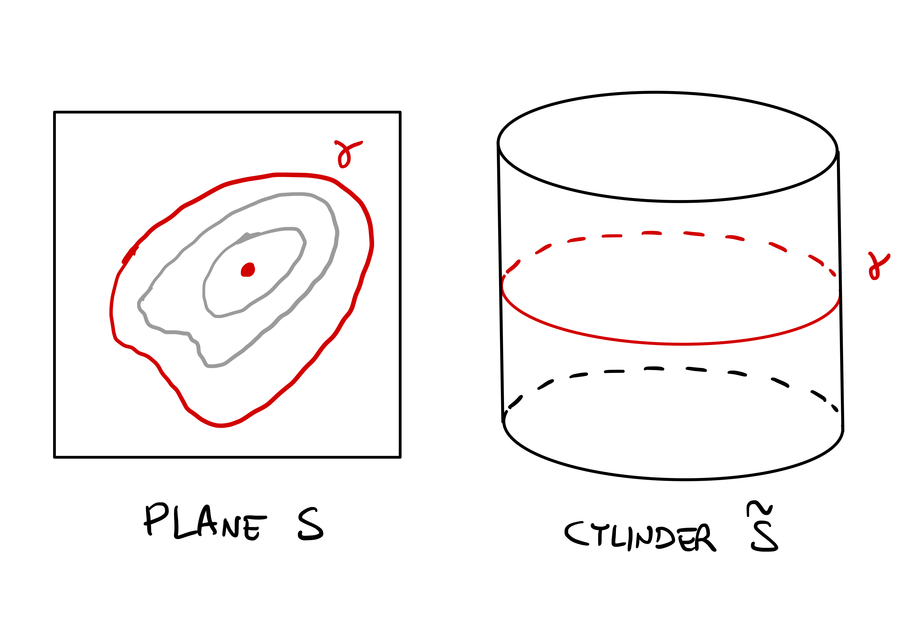
Example 146: Plane and Cone are locally isometric
Question. Consider the cone without tip \[ \mathcal{S}= \{ (x,y,z) \in \mathbb{R}^3 \, \colon \, x^2 + y^2 = z^2 \,, \,\, z > 0 \} \,, \] and the plane \(\widetilde{\mathcal{S}}= \{ z = 0 \}\).
Compute the FFF of the chart of the Cone \[\begin{align*} & {\pmb{\sigma}}\colon U \to \mathcal{S}\,, \qquad {\pmb{\sigma}}(\rho,\theta) = (\rho \cos(\theta), \rho \sin(\theta), \rho ) \,, \\ & U = \left\{ (\rho,\theta) \in \mathbb{R}^2 \, \colon \, \rho > 0 , \, \theta \in (0,2\pi) \right\} \,. \end{align*}\]
Compute the FFF of the chart of the plane \[ \widetilde{{\pmb{\sigma}}}\colon U \to \widetilde{\mathcal{S}}\,, \qquad \widetilde{{\pmb{\sigma}}}(\rho,\theta) = (a\rho \cos(b\theta), a\rho \sin(b\theta), 0 ) \,, \] where \(a>0\) and \(b \in (0,1]\) are constants.
Prove that \(f = \widetilde{{\pmb{\sigma}}}\circ {\pmb{\sigma}}^{-1}\) is a local isometry between \(\mathcal{S}\) and \(\widetilde{\mathcal{S}}\), for suitable coefficients \(a,b\).
Solution.
As seen in Example 138, the coefficients of the FFF of \({\pmb{\sigma}}\) are \[ E = 2 \,, \qquad F = 0 \,, \qquad G = \rho^2 \,. \]
Note that \(\widetilde{{\pmb{\sigma}}}\) is well defined for all \((\rho,\theta) \in U\), as \[ \theta \in (0,2\pi), \quad b \in (0,1] \quad \implies \quad b \theta \in (0,2\pi) \,. \] The coefficients of the FFF of \(\widetilde{{\pmb{\sigma}}}\) are \[\begin{align*} & {\widetilde{{\pmb{\sigma}}}}_{\rho} = a \ ( \cos(b\theta), \sin(b\theta), 0 ) && \widetilde{F}= {\widetilde{{\pmb{\sigma}}}}_{\rho} \cdot {\widetilde{{\pmb{\sigma}}}}_{\theta} = 0\\ & {\widetilde{{\pmb{\sigma}}}}_{\theta} = ab \rho \ ( - \sin(b \theta), \cos(b\theta), 0 ) && \widetilde{G}= {\widetilde{{\pmb{\sigma}}}}_{\theta} \cdot {\widetilde{{\pmb{\sigma}}}}_{\theta} = a^2b^2 \rho^2 \\ & \widetilde{E}= {\widetilde{{\pmb{\sigma}}}}_{\rho} \cdot {\widetilde{{\pmb{\sigma}}}}_{\rho} = a^2 \end{align*}\]
Imposing that \(\widetilde{E}= E\), \(\widetilde{F}= F\) and \(\widetilde{G}= G\), we obtain \[ a^2 = 2 , \,\, a^2b^2 = 1 \quad \implies \quad a = \sqrt{2} \,, \,\, b = \frac{1}{\sqrt{2}} \,. \] Note that \(a>0\) and \(0<b<1\), showing that \(a,b\) are admissible. Hence, for \(a = \sqrt{2}\) and \(b = 1/\sqrt{2}\), the charts \({\pmb{\sigma}}\) and \(\widetilde{{\pmb{\sigma}}}\) have the same FFF. By Theorem 141, we conclude that \(\mathcal{S}\) and \(\widetilde{\mathcal{S}}\) are locally isometric, with local isometry given by \(f = \widetilde{{\pmb{\sigma}}}\circ {\pmb{\sigma}}^{-1}\).
4.11.3 Angles on surfaces
We want to define the notion of angle between tangent vectors.
Definition 147: Angle between tangent vectors
Let \(\mathcal{S}\) be a regular surface and \(\mathbf{p}\in \mathcal{S}\). The angle between two vectors \(\mathbf{v}, \mathbf{w}\in T_{\mathbf{p}} \mathcal{S}\) is defined as the number \[
\theta(\mathbf{v},\mathbf{w}) \in [0,\pi]\,,
\] such that \[
\cos(\theta) = \frac{ \mathbf{v}\cdot \mathbf{w}}{ \| \mathbf{v}\| \, \| \mathbf{w}\| } \,.
\]
The angle between tangent vectors can be computed in terms of local charts.
Proposition 148
Let \(\mathcal{S}\) be a regular surface and \({\pmb{\sigma}}\) a regular chart at \(\mathbf{p}\). Let \(\mathbf{v}, \mathbf{w}\in T_{\mathbf{p}} \mathcal{S}\). Then \[
\cos(\theta) = \frac{ E \lambda \tilde \lambda + F ( \lambda {\tilde \mu}+ \tilde \lambda \mu) + G \mu \tilde \mu }{ (E \lambda^2 + 2 F \lambda \mu + G \mu^2 )^{1/2} (E \tilde{\lambda}^2 + 2 F {\tilde{\lambda}} {\tilde{\mu}} + G {\tilde{\mu}}^2 )^{1/2} } \,,
\] where \(\lambda,\mu,\tilde{\lambda},\tilde{\mu} \in \mathbb{R}\) are such that \[
\mathbf{v}= \lambda {\pmb{\sigma}}_u + \mu {\pmb{\sigma}}_v \,, \quad
\mathbf{w}= \tilde{\lambda} {\pmb{\sigma}}_u + \tilde{\mu} {\pmb{\sigma}}_v \,.
\]
Proof
By definition the angle between \(\mathbf{v}\) and \(\mathbf{w}\) is \[
\cos(\theta) = \frac{ \mathbf{v}\cdot \mathbf{w}}{ \| \mathbf{v}\| \, \| \mathbf{w}\| } \,.
\tag{4.10}\] The vectors \(\{{\pmb{\sigma}}_u,{\pmb{\sigma}}_v\}\) form a basis of \(T_{\mathbf{p}} \mathcal{S}\). Therefore \[
\mathbf{v}= \lambda {\pmb{\sigma}}_u + \mu {\pmb{\sigma}}_v \,, \quad
\mathbf{w}= \tilde{\lambda} {\pmb{\sigma}}_u + \tilde{\mu} {\pmb{\sigma}}_v \,.
\] for some \(\lambda,\mu,\tilde{\lambda},\tilde{\mu} \in \mathbb{R}\). Hence, the coordinates of \(\mathbf{v}\) and \(\mathbf{w}\) with respect to the basis \(\{{\pmb{\sigma}}_u,{\pmb{\sigma}}_v\}\) are \[
\mathbf{v}= (\lambda , \mu ) \,, \quad
\mathbf{w}= ({\tilde{\lambda}} , {\tilde{\mu}} ) \,.
\] By Theorem 126 we get \[\begin{align*}
\mathbf{v}\cdot \mathbf{w}& = I_{\mathbf{p}}(\mathbf{v},\mathbf{w}) \\
& = (\lambda , \mu)
\left(
\begin{array}{cc}
E & F \\
F & G
\end{array}
\right)
( \tilde{\lambda} , \tilde{\mu} )^T \\
& = E \lambda \tilde \lambda + F ( \lambda {\tilde \mu}+ {\tilde{\lambda}} \mu ) + G \mu \tilde \mu \,.
\end{align*}\] Similarly, we obtain \[\begin{align*}
\| \mathbf{v}\|^2 & = \mathbf{v}\cdot \mathbf{v}= E {\lambda}^2 + 2 F \lambda \mu + G \mu^2 \\
\| \mathbf{w}\|^2 & = \mathbf{w}\cdot \mathbf{w}= E \tilde{\lambda}^2 + 2 F \tilde{\lambda} \tilde{\mu} + G \tilde{\mu}^2 \,.
\end{align*}\] Substituting in (4.10) we conclude.
4.11.4 Angles between curves
Since tangent vectors are derivatives of curves with values in \(\mathcal{S}\), it also makes sense to define the angle between two intersecting curves.
Definition 149: Angle between curves
Let \(\mathcal{S}\) be a regular surface, and \({\pmb{\gamma}}\), \(\widetilde{{\pmb{\gamma}}}\) curves on \(\mathcal{S}\) intersecting at \[
{\pmb{\gamma}}(t_0) = \mathbf{p}= \widetilde{{\pmb{\gamma}}}( t_0 ) \,.
\] The angle \(\theta\) between \({\pmb{\gamma}}\) and \(\widetilde{{\pmb{\gamma}}}\) is \[
\cos(\theta) = \frac{ \dot{{\pmb{\gamma}}}(t_0) \cdot \dot{\widetilde{{\pmb{\gamma}}}}(t_0) }{ \| \dot{{\pmb{\gamma}}}(t_0) \| \, \| \dot{\widetilde{{\pmb{\gamma}}}}(t_0) \| } \,.
\]
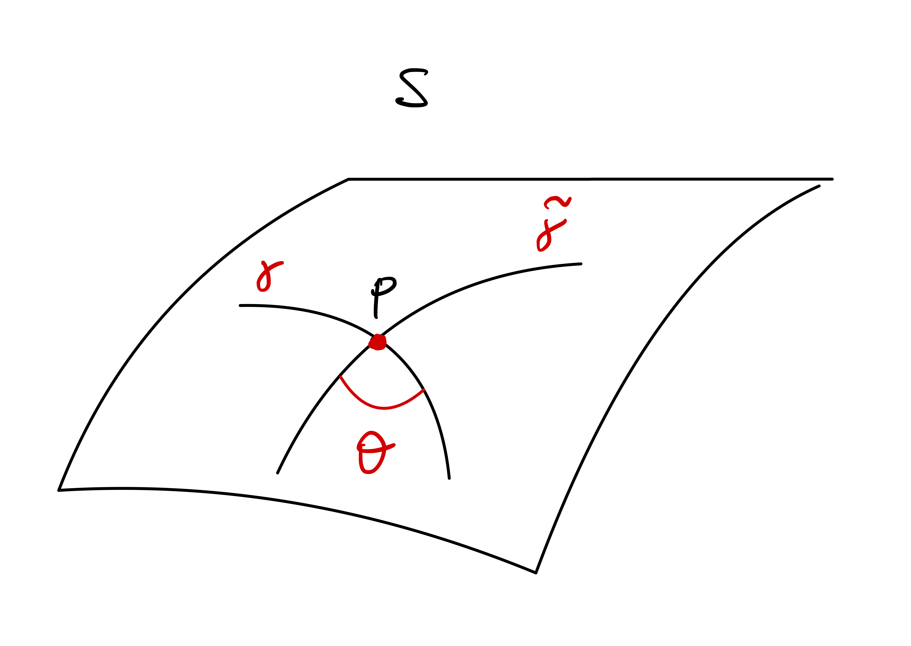
Theorem 150: Angle between curves and FFF
Let \(\mathcal{S}\) be a regular surface, \({\pmb{\sigma}}\) regular chart at \(\mathbf{p}\), and \({\pmb{\gamma}},\widetilde{{\pmb{\gamma}}}\) curves on \(\mathcal{S}\) intersecting at \({\pmb{\gamma}}(t_0) = \mathbf{p}= \widetilde{{\pmb{\gamma}}}( t_0 )\). There exist smooth functions \(u,v,\tilde{u},\tilde{v}\) such that \[
{\pmb{\gamma}}(t) = {\pmb{\sigma}}(u(t),v(t)) \,, \quad
\widetilde{{\pmb{\gamma}}}(t) = {\pmb{\sigma}}(\tilde{u}(t),\tilde{v}(t)) \,.
\] The angle between \({\pmb{\gamma}}\) and \(\widetilde{{\pmb{\gamma}}}\) is \[
\cos(\theta) = \frac{ E \dot u \dot{\tilde u} + F ( \dot u \dot{\tilde v}+ \dot{\tilde{u}} \dot v) + G \dot v \dot{\tilde v} }{ (E \dot{u}^2 + 2 F \dot u \dot v + G \dot{v}^2 )^{1/2} (E \dot{\tilde{u}}^2 + 2 F \dot{\tilde{u}} \dot{\tilde{v}} + G \dot{\tilde{v}}^2 )^{1/2} } \,,
\] with \(E,F,G,\widetilde{E},\widetilde{F},\widetilde{G}\) evaluated at \((u(t_0),v(t_0))\), and \(\dot{u},\dot{v}, \dot{\widetilde{u}}, \dot{\widetilde{v}}\) at \(t_0\).
Proof
By definition the angle between \({\pmb{\gamma}}\) and \(\widetilde{{\pmb{\gamma}}}\) is \[
\cos(\theta) = \frac{ \dot{{\pmb{\gamma}}}\cdot \dot{\widetilde{{\pmb{\gamma}}}}}{ \| \dot{{\pmb{\gamma}}}\| \, \| \dot{\widetilde{{\pmb{\gamma}}}}\| } \,.
\tag{4.11}\] As \({\pmb{\gamma}}, \widetilde{{\pmb{\gamma}}}\) are smooth curves with values in \(\mathcal{S}\), by Lemma 80 there exist smooth functions \(u,v,\tilde{u},\tilde{v}\) such that \[
{\pmb{\gamma}}(t) = {\pmb{\sigma}}(u(t),v(t)) \,, \quad
\widetilde{{\pmb{\gamma}}}(t) = {\pmb{\sigma}}(\tilde{u}(t),\tilde{v}(t)) \,.
\] Differentiating the above expressions we obtain \[
\dot{{\pmb{\gamma}}}= \dot u {\pmb{\sigma}}_u + \dot v {\pmb{\sigma}}_v \,, \quad
\dot{\widetilde{{\pmb{\gamma}}}}= \dot{\tilde{u}} {\pmb{\sigma}}_u + \dot{\tilde{v}} {\pmb{\sigma}}_v \,.
\] Therefore, \[\begin{align*}
\dot{{\pmb{\gamma}}}\cdot \dot{\widetilde{{\pmb{\gamma}}}}& = (\dot u {\pmb{\sigma}}_u + \dot v {\pmb{\sigma}}_v ) \cdot ( \dot{\tilde{u}} {\pmb{\sigma}}_u + \dot{\tilde{v}} {\pmb{\sigma}}_v) \\
& = E \dot u \dot{\tilde u} + F ( \dot u \dot{\tilde v}+ \dot{\tilde{u}} \dot v) + G \dot v \dot{\tilde v} \,.
\end{align*}\] Similarly, we obtain \[\begin{align*}
\| \dot{{\pmb{\gamma}}}\|^2 & = \dot{{\pmb{\gamma}}}\cdot \dot{{\pmb{\gamma}}}= E \dot{u}^2 + 2 F \dot u \dot v + G \dot{v}^2 \\
\| \dot{\widetilde{{\pmb{\gamma}}}}\|^2 & = \dot{\widetilde{{\pmb{\gamma}}}}\cdot \dot{\widetilde{{\pmb{\gamma}}}}= E \dot{\tilde{u}}^2 + 2 F \dot{\tilde{u}} \dot{\tilde{v}} + G \dot{\tilde{v}}^2 \,.
\end{align*}\] Substituting in (4.11), we conclude.
Example 151: Calculation of angle between curves
Question. Let \(S\) be a surface charted by \[ {\pmb{\sigma}}(u, v) = \left(u, v, e^{u v}\right) \,. \]
- Calculate the FFF of \({\pmb{\sigma}}\).
- Calculate \(\cos (\theta)\), where \(\theta\) is the angle between the two curves \[\begin{align*} {\pmb{\gamma}}(t) & ={\pmb{\sigma}}(u(t), v(t)), \quad u(t)=t,\, v(t)=t \,, \\ \widetilde{{\pmb{\gamma}}}(t) & = {\pmb{\sigma}}( \tilde{u}(t),\tilde{v}(t) ) \,, \quad \tilde{u}(t) = 1 , \, \tilde{v}(t) = t \,. \end{align*}\]
Solution.
The coefficients of the FFF are \[\begin{align*} & {\pmb{\sigma}}_u = \left(1,0, e^{u v} v\right) &\,& F(u,v) = e^{2 u v} u v \\ & {\pmb{\sigma}}_v=\left(0,1, e^{u v} u\right) & \, & G(u,v) = 1+e^{2 u v} u^2 \\ & E(u,v) =1+e^{2 u v} v^2 \end{align*}\]
\({\pmb{\gamma}}\) and \(\widetilde{{\pmb{\gamma}}}\) intersect at \({\pmb{\gamma}}(1)=\widetilde{{\pmb{\gamma}}}(1)={\pmb{\sigma}}(1,1)\). We compute \[\begin{align*} & \dot{u}(1) = 1 &\,& E(1,1) = 1+e^2 \\ & \dot{v}(1)=1 &\,& F(1,1) =e^2 \\ & \dot{\tilde{u}}(1)=0 &\,& G(1,1) =1+e^2 \\ & \dot{\tilde{v}}(1) = 1 \end{align*}\] Therefore, the angle \(\theta\) satisfies \[ \cos (\theta) =\frac{1+2 e^2}{\sqrt{2+4 e^2} \sqrt{1+e^2}}=\sqrt{\frac{1+2 e^2}{2+2 e^2}} \,. \]
4.11.5 Conformal maps
Local isometries are maps which preserve the scalar product between tangent vectors. We want to consider maps which preserve the angle between tangent vectors. These will be called conformal maps.
Definition 152: Conformal map
Let \(\mathcal{S},\widetilde{\mathcal{S}}\) be regular surfaces, \(f \colon \mathcal{S}\to \widetilde{\mathcal{S}}\) local diffeomorphism. We say that \(f\) is a conformal map, if for all \(\mathbf{p}\in \mathcal{S}\) \[
\theta = \widetilde{\theta} \,, \quad
\forall \, \mathbf{v}, \mathbf{w}\in T_{\mathbf{p}} \mathcal{S}\,,
\]
- \(\theta\) is the angle between \(\mathbf{v}\) and \(\mathbf{w}\),
- \(\widetilde{\theta}\) is the angle between \(d_{\mathbf{p}} f(\mathbf{v})\) and \(d_{\mathbf{p}} f(\mathbf{w})\).
In this case, we say that \(\mathcal{S}\) and \(\widetilde{\mathcal{S}}\) are conformal.

Notation
For brevity we denote \[
\left\langle \mathbf{v},\mathbf{w} \right\rangle := \mathbf{v}\cdot \mathbf{w}\,, \quad
\left\langle \mathbf{v},\mathbf{w} \right\rangle_f := d_{\mathbf{p}}f (\mathbf{v}) \cdot d_{\mathbf{p}}f (\mathbf{w}) \,,
\] and also \[
\| \mathbf{v}\| := \sqrt{ \left\langle v,v \right\rangle } \,, \quad
\| \mathbf{v}\|_f := \sqrt{ \left\langle v,v \right\rangle_f } \,.
\]
Remark 153
We have that \(f\) is a conformal map if and only if \[
\frac{ \left\langle \mathbf{v},\mathbf{w} \right\rangle }{ \| \mathbf{v}\| \, \| \mathbf{w}\| } =
\frac{ \left\langle \mathbf{v},\mathbf{w} \right\rangle_f }{ \| \mathbf{v}\|_f \, \| \mathbf{w}\|_f } \,, \quad \forall \, \mathbf{v}, \mathbf{w}\in T_{\mathbf{p}} \mathcal{S}\,.
\]
Proof. Follows immediately by the definition of angle between vectors.
Proposition 154
Local isometries are conformal maps.
Proof
By definition of local isometry we have \[
\left\langle \mathbf{v},\mathbf{w} \right\rangle = \left\langle \mathbf{v},\mathbf{w} \right\rangle_f \,, \quad \forall \, \mathbf{v}, \mathbf{w}\in T_{\mathbf{p}} \mathcal{S}\,.
\] In particular we have \[
\| \mathbf{v}\|^2 = \left\langle \mathbf{v},\mathbf{v} \right\rangle
= \left\langle \mathbf{v},\mathbf{v} \right\rangle_f
= \| \mathbf{v}\|^2_f \,,
\] for all \(\mathbf{v}\in T_{\mathbf{p}} \mathcal{S}\). Therefore \[
\frac{ \left\langle \mathbf{v},\mathbf{w} \right\rangle }{ \| \mathbf{v}\| \, \| \mathbf{w}\| } =
\frac{ \left\langle \mathbf{v},\mathbf{w} \right\rangle_f }{ \| \mathbf{v}\|_f \, \| \mathbf{w}\|_f } \,,
\] showing that \(f\) is a conformal map.
Therefore, every local isometry is a conformal map. The converse is false, as we will show in Example 158 below. Before giving the example, let us provide a characterization of conformal maps in terms of the first fundamental form.
Theorem 155
Let \(\mathcal{S}\) and \(\widetilde{\mathcal{S}}\) be regular surfaces and \(f \colon \mathcal{S}\to \widetilde{\mathcal{S}}\) a local diffeomorphism. They are equivalent:
- \(f\) is a conformal map.
- There exists a function \(\lambda \colon \mathcal{S}\to \mathbb{R}\) such that \[ \left\langle \mathbf{v},\mathbf{w} \right\rangle_f = \lambda (\mathbf{p}) \, \left\langle \mathbf{v},\mathbf{w} \right\rangle \,, \quad \forall \, \mathbf{v},\mathbf{w}\in T_{\mathbf{p}} \mathcal{S}\,. \]
Proof
Step 1. Suppose \(f\) is a conformal map, so that \[
\frac{ \left\langle \mathbf{v},\mathbf{w} \right\rangle }{ \| \mathbf{v}\| \, \| \mathbf{w}\| } =
\frac{ \left\langle \mathbf{v},\mathbf{w} \right\rangle_f }{ \| \mathbf{v}\|_f \, \| \mathbf{w}\|_f } \,, \quad \forall \, \mathbf{v}, \mathbf{w}\in T_{\mathbf{p}} \mathcal{S}\,.
\tag{4.12}\] Let \(\{\pmb{\alpha}_1,\pmb{\alpha}_2\}\) be an orthonormal basis for \(T_{\mathbf{p}} \mathcal{S}\), that is, \[
\left\langle \pmb{\alpha}_1,\pmb{\alpha}_2 \right\rangle = 0 \,, \quad
\| \pmb{\alpha}_1 \| = \| \pmb{\alpha}_2 \| = 1 \,.
\] Define \[\begin{align*}
\lambda(\mathbf{p}) & := \left\langle \pmb{\alpha_1},\pmb{\alpha_1} \right\rangle_f = \| \pmb{\alpha_1} \|_f^2 \,, \\
\mu(\mathbf{p}) & := \left\langle \pmb{\alpha_1},\pmb{\alpha_2} \right\rangle_f \,, \\
\nu(\mathbf{p}) & := \left\langle \pmb{\alpha_2},\pmb{\alpha_2} \right\rangle_f = \| \pmb{\alpha_2} \|_f^2 \,.
\end{align*}\] By (4.12) we have \[
\frac{\left\langle \pmb{\alpha_1},\pmb{\alpha_2} \right\rangle}{ \| \pmb{\alpha_1} \| \| \pmb{\alpha_2} \| } =
\frac{\left\langle \pmb{\alpha_1},\pmb{\alpha_2} \right\rangle_f}{ \| \pmb{\alpha_1} \|_f \| \pmb{\alpha_2} \|_f } \,.
\] Since \(\pmb{\alpha}_1 \cdot \pmb{\alpha}_2 = 0\), from the above we get \[
\mu (\mathbf{p}) = \left\langle \pmb{\alpha}_1,\pmb{\alpha}_2 \right\rangle_f = 0 \,.
\] Moreover, since \(\pmb{\alpha}_1\) and \(\pmb{\alpha}_2\) are orthonormal, the angle between \(\pmb{\alpha}_1\) and \(\pmb{\alpha}_1 + \pmb{\alpha}_2\) is \(\theta = \pi/4\). By definition of angle between vectors, we infer \[
\frac{\sqrt{2}}{2} = \cos (\theta) = \frac{ \left\langle \pmb{\alpha}_1,\pmb{\alpha}_1 + \pmb{\alpha}_2 \right\rangle }{ \| \pmb{\alpha}_1 \| \| \pmb{\alpha}_1 + \pmb{\alpha}_1 \| } \,.
\] On the other hand, using (4.12) we get \[
\frac{ \left\langle \pmb{\alpha}_1,\pmb{\alpha}_1 + \pmb{\alpha}_2 \right\rangle }{ \| \pmb{\alpha}_1 \| \| \pmb{\alpha}_1 + \pmb{\alpha}_1 \| } =
\frac{ \left\langle \pmb{\alpha}_1,\pmb{\alpha}_1 + \pmb{\alpha}_2 \right\rangle_f }{ \| \pmb{\alpha}_1 \|_f \| \pmb{\alpha}_1 + \pmb{\alpha}_2 \|_f } \,.
\] The numerator of the right hand side satisfies \[\begin{align*}
\left\langle \pmb{\alpha}_1,\pmb{\alpha}_1 + \pmb{\alpha}_2 \right\rangle_f &
= \left\langle \pmb{\alpha}_1,\pmb{\alpha}_1 \right\rangle_f + \left\langle \pmb{\alpha}_1,\pmb{\alpha}_2 \right\rangle_f \\
& = \lambda(\mathbf{p}) + \mu (\mathbf{p}) \\
& = \lambda(\mathbf{p}) \,,
\end{align*}\] since \(\mu (\mathbf{p}) = 0\). Concerning the denominator, we have \[\begin{align*}
\| \pmb{\alpha}_1 + \pmb{\alpha}_2 \|_f^2 & =
\| \pmb{\alpha}_1 \|_f^2 + \left\langle \pmb{\alpha}_1,\pmb{\alpha}_2 \right\rangle_f +
\| \pmb{\alpha}_2 \|_f^2 \\
& = \lambda(\mathbf{p}) + \mu(\mathbf{p}) + \nu (\mathbf{p}) \\
& = \lambda(\mathbf{p}) + \nu (\mathbf{p}) \,,
\end{align*}\] since \(\mu (\mathbf{p}) = 0\). Putting together the last 4 groups of equations, we obtain \[
\frac{\sqrt{2}}{2} = \frac{ \lambda }{ \lambda^{1/2} (\lambda + \nu)^{1/2} } \,.
\] Rearraging the above equation yields \[
\lambda (\mathbf{p}) = \nu (\mathbf{p}) \,.
\] Now let \(\mathbf{v}\in T_{\mathbf{p}} \mathcal{S}\). Since \(\{ \pmb{\alpha}_1, \pmb{\alpha}_2\}\) is a basis for \(T_{\mathbf{p}} \mathcal{S}\), there exist \(v_1,v_2 \in \mathbb{R}\) such that \[
\mathbf{v}= v_1 \pmb{\alpha}_1 + v_2 \pmb{\alpha}_2 \,.
\] Therefore \[\begin{align*}
\left\langle \mathbf{v},\mathbf{v} \right\rangle & = v_1^2 \left\langle \pmb{\alpha}_1,\pmb{\alpha}_1 \right\rangle +
2 v_1 v_2 \left\langle \pmb{\alpha}_1,\pmb{\alpha}_2 \right\rangle +
v_2^2 \left\langle \pmb{\alpha}_2,\pmb{\alpha}_2 \right\rangle \\
& = v_1^2 + v_2^2 \,,
\end{align*}\] where we used that \(\pmb{\alpha}_1\) and \(\pmb{\alpha}_2\) are orthonormal. On the other hand, \[\begin{align*}
\left\langle \mathbf{v},\mathbf{v} \right\rangle_f & = v_1^2 \left\langle \pmb{\alpha}_1,\pmb{\alpha}_1 \right\rangle_f +
2 v_1 v_2 \left\langle \pmb{\alpha}_1,\pmb{\alpha}_2 \right\rangle_f +
v_2^2 \left\langle \pmb{\alpha}_2,\pmb{\alpha}_2 \right\rangle_f \\
& = v_1^2 \, \lambda(\mathbf{p}) +
2 v_1 v_2 \, \mu(\mathbf{p}) +
v_2^2 \, \nu(\mathbf{p}) \\
& = \lambda(\mathbf{p}) \, (v_1^2 + v_2^2) \,,
\end{align*}\] where we used that \(\lambda(\mathbf{p}) = \nu(\mathbf{p})\) and \(\mu (\mathbf{p}) = 0\). Thus \[
\left\langle \mathbf{v},\mathbf{v} \right\rangle_f = \lambda(\mathbf{p}) \, (v_1^2 + v_2^2) =\lambda(\mathbf{p}) \, \left\langle \mathbf{v},\mathbf{v} \right\rangle \,,
\] for all \(\mathbf{v}\in T_{\mathbf{p}} \mathcal{S}\). Since \(\left\langle \cdot,\cdot \right\rangle\) and \(\left\langle \cdot,\cdot \right\rangle_f\), by arguing as in Remark 137 we conclude that \[
\left\langle \mathbf{v},\mathbf{w} \right\rangle_f = \lambda(\mathbf{p}) \, \left\langle \mathbf{v},\mathbf{w} \right\rangle
\] for all \(\mathbf{v},\mathbf{w}\in T_{\mathbf{p}} \mathcal{S}\).
Step 2. Suppose that there exists a function \(\lambda \colon \mathcal{S}\to \mathbb{R}\) such that \[ \left\langle \mathbf{v},\mathbf{w} \right\rangle_f = \lambda (\mathbf{p}) \, \left\langle \mathbf{v},\mathbf{w} \right\rangle \,, \quad \forall \, \mathbf{v},\mathbf{w}\in T_{\mathbf{p}} \mathcal{S}\,. \] In particular, we have \[ \| \mathbf{v}\|_f = \sqrt{\lambda(\mathbf{p})} \| \mathbf{v}\| \,, \quad \forall \, \mathbf{v}\in T_{\mathbf{p}} \mathcal{S}\,. \] Then \[ \frac{\left\langle \mathbf{v},\mathbf{w} \right\rangle_f}{ \| \mathbf{v}\|_f \| \mathbf{w}\|_f } = \frac{\lambda (\mathbf{p}) \, \left\langle \mathbf{v},\mathbf{w} \right\rangle}{ \sqrt{\lambda(\mathbf{p})} \| \mathbf{v}\| \sqrt{\lambda(\mathbf{p})} \| \mathbf{w}\| } = \frac{\left\langle \mathbf{v},\mathbf{w} \right\rangle}{ \| \mathbf{v}\| \| \mathbf{w}\| } \,, \] showing that \(f\) is a conformal map.
The following result gives a practical necessary and sufficient condition to check if a map is conformal.
Theorem 156: Conformal maps and FFF
Let \(\mathcal{S}\), \(\widetilde{\mathcal{S}}\) be regular surfaces, \(f \colon \mathcal{S}\to \widetilde{\mathcal{S}}\) a local diffeomorphism. Equivalently:
\(f\) is a conformal map.
Let \({\pmb{\sigma}}\colon U \to \mathcal{S}\) be regular chart of \(\mathcal{S}\), and define a chart of \(\widetilde{\mathcal{S}}\) as \(\widetilde{{\pmb{\sigma}}} \colon U \to \widetilde{\mathcal{S}}\), with \(\widetilde{{\pmb{\sigma}}} = f \circ {\pmb{\sigma}}\). Then the FFF of \({\pmb{\sigma}}\) and \(\widetilde{{\pmb{\sigma}}}\) satisfy \[ \widetilde{\mathscr{F}}_1 = \lambda (u,v) \mathscr{F}_1 \,, \quad \forall \, (u,v) \in U \,, \] for some smooth map \(\lambda \colon U \to \mathbb{R}\).
Theorem 156 can be easily proven by using Theorem 155, and by adapting the argument in the proof of Theorem 141. We omit the proof.
Remark 157
To prove that a diffeomorphism \[
f \colon \mathcal{S}\to \widetilde{\mathcal{S}}
\] is a conformal map, it is sufficient to verify Condition 2 in Theorem 156 on one atlas of \(\mathcal{S}\). Then, automatically, all other atlases will verify the condition, ensuring that \(f\) is a conformal map.
Proof. This can be seen by adapting the argument found in Remark 142.
The following result gives a sufficient condition to prove that two regular surfaces are conformal.
Theorem 158: Sufficient condition for conformality
Let \(\mathcal{S}, \widetilde{\mathcal{S}}\) be regular surfaces, with charts \({\pmb{\sigma}}\colon U \to \mathcal{S}\) and \(\widetilde{{\pmb{\sigma}}}\colon U \to \widetilde{\mathcal{S}}\). Assume that \(\widetilde{\mathscr{F}}_1 = \lambda \mathscr{F}_1\) for some \(\lambda \colon U \to \mathbb{R}\). We have
- The surfaces \({\pmb{\sigma}}(U)\) and \(\widetilde{\mathcal{S}}\) are conformal.
- A conformal map is given by \[ f \colon {\pmb{\sigma}}(U) \to \widetilde{\mathcal{S}}\,, \qquad f = \widetilde{{\pmb{\sigma}}}\circ {\pmb{\sigma}}^{-1} \,. \]
The proof follows by adapting the argument in the proof of Theorem 143, and by applying Theorem 156. This is left as an exercise.
Example 159: Stereographic Projection
Question. Consider the unit sphere \(\mathbb{S}^2 = \{x^2 + y^2 + z^2 = 1 \}\) and define the surface \[ \mathcal{S}= \mathbb{S}^2 \smallsetminus \{N\} \,, \quad N = (0,0,1) \,. \] Consider the plane \(\widetilde{\mathcal{S}}= \{z = 0\}\). The plane \(\widetilde{\mathcal{S}}\) slices through the equator of the sphere. Let \(P=(x,y,z)\) be any point on \(\mathbb{S}^2\), except the North Pole \(N\). The line joining \(N\) to \(P\) intersects the plane \(\widetilde{\mathcal{S}}\) at the point \(P'\), see Figure 4.25. The point \(P'\) defines the Stereographic Projection map, which is easily computed to be: \[ f \colon \mathcal{S}\to \widetilde{\mathcal{S}}\,, \quad f(x,y,z) = \left( \frac{x}{1-z},\frac{y}{1-z},0 \right) \,. \] Prove that:
- \(f\) is a conformal map.
- \(f\) is not a local isometry.
Note: In particular, the Sphere and the Plane are conformal.
Solution. It is easy to prove that \(f^{-1} = {\pmb{\sigma}}\), with \[ {\pmb{\sigma}}(u,v) =\left( \frac{2u}{u^2+v^2+1}, \frac{2v}{u^2+v^2+1} , 1-\frac{2}{u^2+v^2+1}\right) \,. \] It is straightforward to compute that the FFF of \({\pmb{\sigma}}\) is \[ \mathscr{F}_1 = \lambda(u,v) (du^2 + dv^2) \,, \quad \lambda(u,v) = \frac{4}{(u^2+v^2+1)^2} \,. \] Let \(\widetilde{{\pmb{\sigma}}}= f \circ {\pmb{\sigma}}\). Since \({\pmb{\sigma}}= f^{-1}\), we have that \[ \widetilde{{\pmb{\sigma}}}(u,v) = (u,v,0) \,. \] As already computed, the FFF of \(\widetilde{{\pmb{\sigma}}}\) is \[ {\widetilde{\mathscr{F}}}_1 = du^2 + dv^2 \,. \] We can now conclude:
We have that \[ {\widetilde{\mathscr{F}}}_1 = \frac{1}{\lambda} {\mathscr{F}}_1 \,. \] Since \(\mathcal{A} = \{{\pmb{\sigma}}\}\) is an atlas for \(\mathcal{S}\), by Theorem 156 we conclude that \(f\) is a conformal map.
Since \({\lambda}\) is not always equal to \(1\), we have that \[ {\widetilde{\mathscr{F}}}_1 \neq {\mathscr{F}}_1 \,. \] Therefore, by Theorem 141, we conclude that \(f\) cannot be a local isometry.
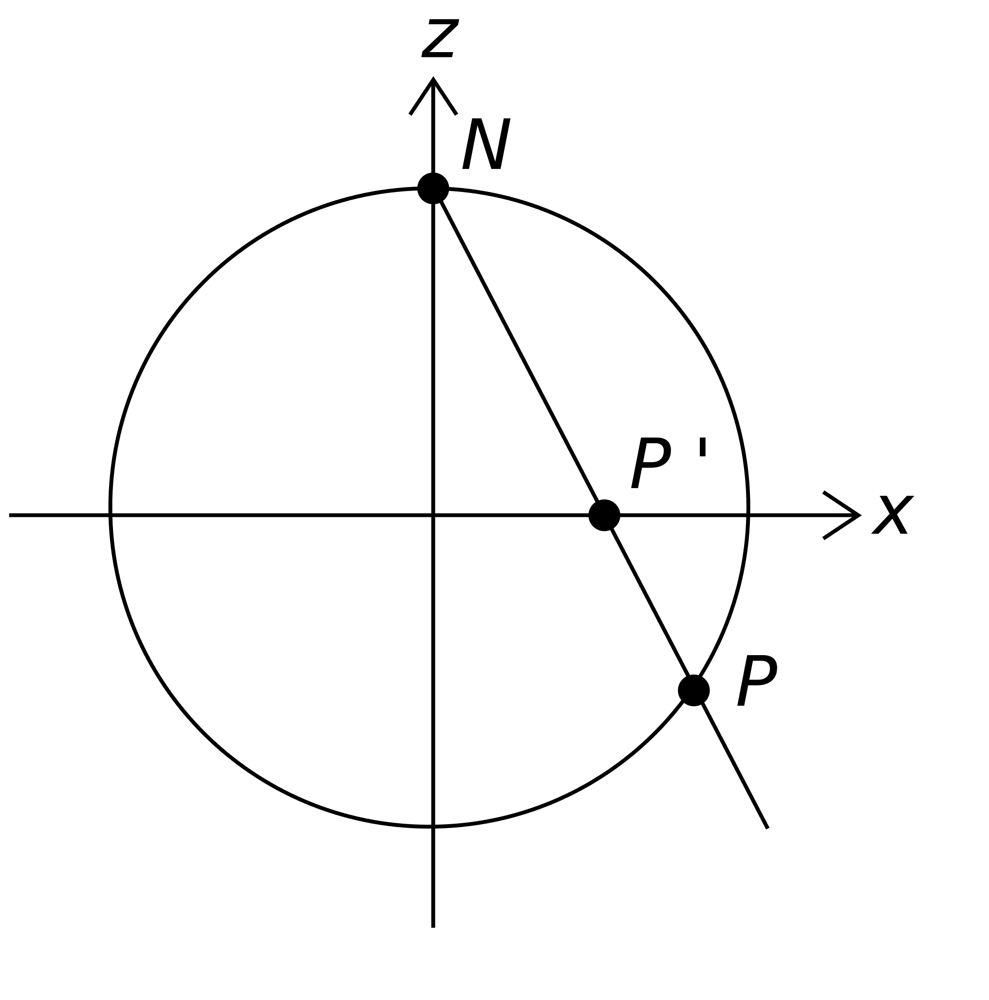
4.11.6 Conformal parametrizations
In the previous section we defined conformal maps between surfaces \[ f \colon \mathcal{S}\to \widetilde{\mathcal{S}}\,. \] It is also useful to define conformal parametrizations.
Definition 160: Conformal parametrization
Let \({\pmb{\sigma}}\colon U \to \mathbb{R}^3\) be regular. We say that \({\pmb{\sigma}}\) is a conformal parametrization if the FFF of \({\pmb{\sigma}}\) satisfies \[
\mathscr{F}_1 = \lambda(u,v) ( du^2 + dv^2) \,,
\] for some smooth function \(\lambda \colon U \to \mathbb{R}\).
The above definition is motivated by the following result, stating that \(\mathcal{S}\) admits a conformal parametrization if and only if \(\mathcal{S}\) is conformal to a plane.
Theorem 161
Let \({\pmb{\sigma}}\colon U \to \mathbb{R}^3\) be regular. Let \({\pmb{\pi}}\) be the plane \(\{z=0\}\). They are equivalent:
\({\pmb{\sigma}}\) is a conformal parametrization.
The map \(f \colon {\pmb{\pi}}\to {\pmb{\sigma}}(U)\) defined by \[ f(u,v,0) = {\pmb{\sigma}}(u,v) \] is conformal.
Proof
The plane \({\pmb{\pi}}\) is charted by \[
\widetilde{{\pmb{\sigma}}}(u,v) = (u,v,0) \,, \quad (u,v) \in \mathbb{R}^2
\] The first fundamental form of \(\widetilde{{\pmb{\sigma}}}\) is \[
\widetilde{\mathscr{F}}_1 = du^2 + dv^2 \,.
\] Consider the map \(f \colon {\pmb{\pi}}\to \mathcal{S}\) given in Point 2, that is, \[
f(u,v,0) = {\pmb{\sigma}}(u,v) \,.
\] By definition of \(\widetilde{{\pmb{\sigma}}}\), \[
f( \widetilde{{\pmb{\sigma}}}(u,v) ) = {\pmb{\sigma}}(u,v) \,.
\] Theorem 156 says that \(f\) is a conformal map if and only if there exists \(\lambda \colon U \to \mathbb{R}\) such that \[
{\mathscr{F}}_1 = \lambda(u,v) \widetilde{\mathscr{F}}_1 \,,
\] where \(\mathscr{F}_1\) is the first fundamental form of \({\pmb{\sigma}}\). This happens exactly when \({\pmb{\sigma}}\) is a conformal parametrization.
As an immediate consequence, we have the following Theorem.
Theorem 162: Conformal parametrizations preserve angles
Let \({\pmb{\sigma}}\) be a conformal parametrization, and \({\pmb{\gamma}}_{1}(t), {\pmb{\gamma}}_{2}(t)\) be curves in \(\mathbb{R}^{2}\) such that \({\dot{{\pmb{\gamma}}}}_{1}\left(t_{0}\right), {\dot{{\pmb{\gamma}}}}_{2}\left(t_{0}\right)\) make angle \(\theta\). Let \(\widetilde{{\pmb{\gamma}}}_{1} = {\pmb{\sigma}}\circ {\pmb{\gamma}}_{1}\) and \(\widetilde{{\pmb{\gamma}}}_{2}={\pmb{\sigma}}\circ {\pmb{\gamma}}_{2}\). Then \({\dot{\widetilde{{\pmb{\gamma}}}}}_{1}\left(t_{0}\right), {\dot{\widetilde{{\pmb{\gamma}}}}}_{2}\left(t_{0}\right)\) also make angle \(\theta\).
It turns out that all regular surfaces admit an atlas formed by conformal charts.
Theorem 163
Let \(\mathcal{S}\) be a regular surface. There exists an atlas \(\mathcal{A}\) such that each chart \({\pmb{\sigma}}\in \mathcal{A}\), \({\pmb{\sigma}}\colon U \to \mathcal{S}\) is conformal, that is, there exists \(\lambda \colon U \to \mathbb{R}\) such that the first fundamental form of \({\pmb{\sigma}}\) is \[
{\mathscr{F}}_1 = \lambda(u,v) (du^2 + dv^2 ) \,.
\] The coordinates \((u,v)\) are called isothermal.
The proof of this result is quite technical, see for example the paper (Chern, Shiing-shen 1955), which can be read here. The proof in not constructive, and it involeves showing the existence of solutions to a certain PDE. If \(\mathcal{S}\) is a minimial surface, existence of isothermal coordinates is easier to prove, see for example Theorem 12.4.1 in (Pressley 2010).
We have already seen examples of conformal parametrization for the Cylinder:
Example 164: Unit cylinder
Question. Prove that the following is a conformal parametrization of the unit cylinder \[
{\pmb{\sigma}}(u,v) = (\cos(u), \sin(u), v) \,, \quad u \in (0,2\pi), \, v \in \mathbb{R}\,.
\]
Solution. We have already computed that the FFF of \({\pmb{\sigma}}\) is \[ \mathscr{F}_1 = du^2 + dv^2 \,. \] Therefore \({\pmb{\sigma}}\) is a conformal parametrization, with \(\lambda = 1\).
An important application of conformal parametrizations is in cartography.
Remark 165: Drawing World Maps
Suppose given a parametrization of \(\mathbb{S}^2\) \[
{\pmb{\sigma}}\colon U \to \mathbb{S}^2 \,,
\] for some \(U \subseteq \mathbb{R}^2\). Set \(V:={\pmb{\sigma}}(U)\). The inverse map \[
{\pmb{\sigma}}^{-1} \colon V \subseteq \mathbb{S}^2 \to \mathbb{R}^2
\] is a projection of \(\mathbb{S}^2\) into the plane. If \(\mathbb{S}^2\) models the Earth, \({\pmb{\sigma}}^{-1}\) gives a rule to draw a world map! For a map to be useful, we would like it to
- preserve angles and shapes;
- preserve areas.
We know that angles are preserved if \({\pmb{\sigma}}^{-1}\) is a conformal map, and \({\pmb{\sigma}}\) a conformal parametrization. Below we discuss two conformal maps of \(\mathbb{S}^2\):
- Stereographic Projection,
- Mercator Projection.
In the next sections we will also discuss an equiareal map of of \(\mathbb{S}^2\), i.e., a map which preserves areas. This will be called
- Lambert Cylindrical Projection.
We will also see that it is not possible for a map \({\pmb{\sigma}}\) to both preserve angles and areas. This is because \({\pmb{\sigma}}\) would be both conformal and equiareal, and hence an isometry of the sphere into the plane. However, isometries between sphere and plane cannot exist.
Example 166: Stereographic Projection
Consider the parametrization of the sphere \(\mathbb{S}^2\) given by \[
{\pmb{\sigma}}(u,v) =\left( \frac{2u}{u^2+v^2+1}, \frac{2v}{u^2+v^2+1} , 1-\frac{2}{u^2+v^2+1}\right) \,.
\] We have seen in Example 158 that \({\pmb{\sigma}}\) is the inverse of the stereographic projection map. We have also mentioned that the FFF of \({\pmb{\sigma}}\) is \[
\mathscr{F}_1 = \frac{4}{(u^2+v^2+1)^2} (du^2 + dv^2) \,.
\] Therefore, \({\pmb{\sigma}}\) is a conformal parametrization of the sphere.
Note. Let \(V = {\pmb{\sigma}}(U)\). In this case \[ V = \mathbb{S}^2 \smallsetminus \{ (1,0,0)\} \,. \] In particular, the inverse \[ {\pmb{\sigma}}^{-1} \colon V \subseteq \mathbb{S}^2 \to \mathbb{R}^2 \] is a conformal map. This is known as the Stereographic Projection, see Figure 4.26 and Figure 4.27.
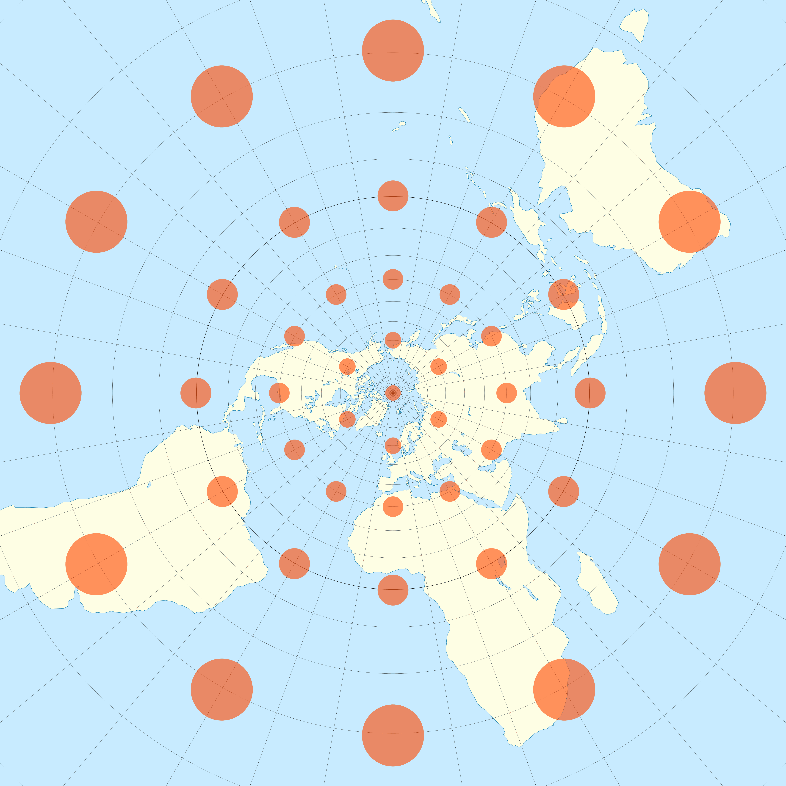
Example 167: Mercator projection
Question. Prove that the parametrization of \(\mathbb{S}^2\) is conformal \[
{\pmb{\sigma}}(u,v) := \left( \cos(u) \mathop{\mathrm{sech}}(v), \sin(u) \mathop{\mathrm{sech}}(v) , \tanh (v) \right) \,.
\]
Note. Let \(V = {\pmb{\sigma}}(U)\). In particular, the inverse \[ {\pmb{\sigma}}^{-1} \colon V \subseteq \mathbb{S}^2 \to \mathbb{R}^2 \] is a conformal map. This is known as the Mercator Projection, see Figure 4.28 and Figure 4.29.
Solution. Recall the identities \({\mathop{\mathrm{sech}}}^2 (v) + {\tanh}^2 (v) = 1\) and \[\begin{align*} & \mathop{\mathrm{sech}}(v)' = - \mathop{\mathrm{sech}}(v) \tanh (v) \,, \qquad \tanh (v)' = {\mathop{\mathrm{sech}}}^2 (v) \,. \end{align*}\] The chart \({\pmb{\sigma}}\) is a conformal parametrization because the FFF is \[\begin{align*} & \widetilde{{\pmb{\sigma}}}_u = \mathop{\mathrm{sech}}(v) \, ( -\sin(u) , \cos(u), 0 ) \\ & \widetilde{{\pmb{\sigma}}}_v = \mathop{\mathrm{sech}}(v) \, ( -\cos(v) \tanh(v) , -\sin(u) \tanh(v) , \mathop{\mathrm{sech}}(v) ) \\ & \widetilde{E} = \widetilde{{\pmb{\sigma}}}_u \cdot \widetilde{{\pmb{\sigma}}}_u = {\mathop{\mathrm{sech}}}^2(v) (\cos^2(u) + \sin^2(u)) = {\mathop{\mathrm{sech}}}^2(v) \\ & \widetilde{F} = \widetilde{{\pmb{\sigma}}}_u \cdot \widetilde{{\pmb{\sigma}}}_v = 0 \\ & \widetilde{G} = \widetilde{{\pmb{\sigma}}}_v \cdot \widetilde{{\pmb{\sigma}}}_v = {\mathop{\mathrm{sech}}}^2(v) ({\tanh}^2(v) + {\mathop{\mathrm{sech}}}^2(v)) = {\mathop{\mathrm{sech}}}^2(v) \\ & {\mathscr{F}}_1 = {\mathop{\mathrm{sech}}}^2(v) \, \left( du^2 + dv^2 \right) \,. \end{align*}\]


4.11.7 Areas
Suppose given a regular surface \(\mathcal{S}\), with chart \({\pmb{\sigma}}\colon U \to \mathbb{R}^3\). Given \(R \subseteq U\), consider the region \[ {\pmb{\sigma}}(R) \subseteq \mathcal{S}\,. \] If \({\pmb{\sigma}}(R)\) is sufficiently small, it can be approximated by a small portion of the tangent plane \(T_{\mathbf{p}} \mathcal{S}\), namely, by the parallelogram spanned by \({\pmb{\sigma}}_u\) and \({\pmb{\sigma}}_v\), see Figure 4.30. By the properties of vector product, the area of such parallelogram is \(\left\| {{\pmb{\sigma}}}_{u}\times {{\pmb{\sigma}}}_{v} \right\|\). Therefore, the area \(A_{{\pmb{\sigma}}}(R)\) of \({\pmb{\sigma}}(R)\) is approximated by \[ A_{{\pmb{\sigma}}}(R) \approx \left\| {{\pmb{\sigma}}}_{u}\times {{\pmb{\sigma}}}_{v} \right\| \,. \] It can be shown that the area of any region \({\pmb{\sigma}}(R)\) is obtained by integrating \(\left\| {{\pmb{\sigma}}}_{u}\times {{\pmb{\sigma}}}_{v} \right\|\) on \(R\), see Theorem 4.2.5 in (Abate, Marco and Tovena, Francesca 2011). Specifically, \[ A_{{\pmb{\sigma}}}(R) = \int_{R} \left\| {{\pmb{\sigma}}}_{u}\times {{\pmb{\sigma}}}_{v} \right\| \, dudv \,. \tag{4.13}\] The proof of such result is similar to the one we did for showing that the length of a curve is given by \[ L({\pmb{\gamma}}) = \int_{a}^b \left\| \dot{{\pmb{\gamma}}}(u) \right\| \, du \,, \] where \(L({\pmb{\gamma}})\) is defined as \[ L({\pmb{\gamma}}) = \lim_{\varepsilon\to 0} L({\pmb{\gamma}}_\varepsilon) \,, \] where \(L({\pmb{\gamma}}_{\varepsilon})\) is the length of a piecewise linear approximation \({\pmb{\gamma}}_{\varepsilon}\) of \({\pmb{\gamma}}\). To obtain (4.13), one can approximate \({\pmb{\sigma}}(R)\) with a piecewise affine mesh \({\pmb{\sigma}}(R_{\varepsilon})\), and then define \[ A_{{\pmb{\sigma}}}(R) = \lim_{\varepsilon\to 0} A_{{\pmb{\sigma}}}(R_{\varepsilon}) \,. \] Making this argument precise requires a lot of effort. Instead, we just take (4.13) as the definition of area.
Definition 168
Let \({\pmb{\sigma}}\colon U \to \mathbb{R}^3\) be a regular chart and \(R \subseteq U\). The area \(A_{{\pmb{\sigma}}}\) of the region \({\pmb{\sigma}}(R)\) is \[
A_{{\pmb{\sigma}}} = \int_{R} \left\| {{\pmb{\sigma}}}_{u}\times {{\pmb{\sigma}}}_{v} \right\| \, dudv \,.
\]
Theorem 169
Let \({\pmb{\sigma}}\colon U \to \mathbb{R}^3\) be a regular chart. Then \[
\left\| {\pmb{\sigma}}_u \times {{\pmb{\sigma}}}_{v} \right\| = \sqrt{ EG - F^2 } \,.
\]
Proof
By the properties of vector product, we have \[
\|\mathbf{v}\times \mathbf{w}\|^2 = \| \mathbf{v}\|^2 \| \mathbf{w}\|^2 - \mathbf{v}\cdot \mathbf{w}\,, \quad \forall \, \mathbf{v}, \mathbf{w}\in \mathbb{R}^3 \,.
\] Applying the above identity to \({{\pmb{\sigma}}}_{u}\) and \({{\pmb{\sigma}}}_{v}\) gives \[
\left\| {{\pmb{\sigma}}}_{u}\times {{\pmb{\sigma}}}_{v} \right\|^2 = \| {{\pmb{\sigma}}}_{u}\|^2 \| {{\pmb{\sigma}}}_{v}\|^2 - {{\pmb{\sigma}}}_{u}\cdot {{\pmb{\sigma}}}_{v}= EG - F^2 \,.
\] Taking the square roots gives the thesis.
It is easy to check that the definition of \(A_{{\pmb{\sigma}}}\) does not depend on the choice of \({\pmb{\sigma}}\), see Proposition 6.4.3 in (Pressley 2010).
Example 170
Question. Let \(\mathcal{S}\) be the paraboloid \(z = x^2 + y^2\). Compute the area of \[
\mathcal{S}\cap \{ z \leq 1\} \,.
\]
Solution. The paraboloid \(\mathcal{S}\) is charted by \[ {\pmb{\sigma}}(u,v) = (u,v, u^2 + v^2 ) \,, \] for \(u,v \in \mathbb{R}\). We compute the first fundamental form of \({\pmb{\sigma}}\): \[\begin{align*} & {{\pmb{\sigma}}}_{u}= (1,0,2u) &\,& F = {{\pmb{\sigma}}}_{u}\cdot {{\pmb{\sigma}}}_{v}= 4uv \\ & {{\pmb{\sigma}}}_{v}= (0,1,2v) &\,& G = {{\pmb{\sigma}}}_{u}\cdot {{\pmb{\sigma}}}_{u}= 1 + 4v^2 \\ & E = {{\pmb{\sigma}}}_{u}\cdot {{\pmb{\sigma}}}_{u}= 1 + 4u^2 &\,& EG - F^2 = 1 + 4(u^2 + v^2) \end{align*}\] The region \(\mathcal{S}\cap \{z \leq 1\}\) corresponds to \({\pmb{\sigma}}(R)\), with \[ R = \{ (u,v) \in \mathbb{R}^2 \, \colon \, u^2 + v^2 \leq 1 \} \,. \] The area of \({\pmb{\sigma}}(R)\) is then \[\begin{align*} A_{{\pmb{\sigma}}} (R) & = \int_{R} \sqrt{EG-F^2} \, dudv = \int_{R} \sqrt{1 + 4(u^2 + v^2)} \, dudv \\ & = \int_{0}^1\int_{0}^{2\pi} \sqrt{1 + 4r^2} \, \rho \, d\rho \, d\theta = \frac{\pi}{6} (5^{3/2} - 1) \,, \end{align*}\] where the integral was computed using polar coordinates \[ u = \rho \cos(\theta)\,, \quad v = \rho \sin(\theta) \,. \]
4.11.8 Equiareal Maps
Definition 171
Let \(\mathcal{S}\) and \(\widetilde{\mathcal{S}}\) be regular surfaces and \(f \colon \mathcal{S}\to \widetilde{\mathcal{S}}\) a local diffeomorphism. We say that \(f\) is an equiareal map if it takes any region in \(\mathcal{S}\) to a region of the same area in \(\widetilde{\mathcal{S}}\). In this case, we say that \(\mathcal{S}\) and \(\widetilde{\mathcal{S}}\) are equiareal.
Theorem 172
Let \(\mathcal{S}\), \(\widetilde{\mathcal{S}}\) be regular surfaces, \(f \colon \mathcal{S}\to \widetilde{\mathcal{S}}\) a local diffeomorphism. Equivalently:
- \(f\) is an equiareal map.
- Let \({\pmb{\sigma}}\colon U \to \mathcal{S}\) be regular chart of \(\mathcal{S}\), and define a chart of \(\widetilde{\mathcal{S}}\) as \(\widetilde{{\pmb{\sigma}}} \colon U \to \widetilde{\mathcal{S}}\), with \(\widetilde{{\pmb{\sigma}}} = f \circ {\pmb{\sigma}}\). Then the FFF of \({\pmb{\sigma}}\) and \(\widetilde{{\pmb{\sigma}}}\) satisfy \[ EG - F^2 = \widetilde{E}\widetilde{G}- {\widetilde{F}}^2 \,. \]
Theorem 172 can be proven with arguments similar to the proof of Theorem 141. The proof is omitted.
As usual, we give a sufficient condition to prove that two regular surfaces are equiareal.
Theorem 173
Let \(\mathcal{S}, \widetilde{\mathcal{S}}\) be regular surfaces, with charts \({\pmb{\sigma}}\colon U \to \mathcal{S}\) and \(\widetilde{{\pmb{\sigma}}}\colon U \to \widetilde{\mathcal{S}}\). Assume that \[ EG - F^2 = \widetilde{E}\widetilde{G}- {\widetilde{F}}^2 \,, \] We have
- The surfaces \({\pmb{\sigma}}(U)\) and \(\widetilde{\mathcal{S}}\) are equiareal.
- An equiareal map is given by \[ f \colon {\pmb{\sigma}}(U) \to \widetilde{\mathcal{S}}\,, \qquad f = \widetilde{{\pmb{\sigma}}}\circ {\pmb{\sigma}}^{-1} \,. \]
The proof follows by adapting the argument in the proof of Theorem 143, and by applying Theorem 172. This is left as an exercise.
Example 174: Archimedes map
Question. Consider the surface \(\mathcal{S}\) obtained by removing the North and South Poles from the unit sphere \[
\mathcal{S}= \mathbb{S}^2 \smallsetminus \{ (0,0,\pm 1) \} \,,
\qquad \mathbb{S}^2 = \{x^2 + y^2 + z^2 = 1 \} \,.
\] Let \(\widetilde{\mathcal{S}}= \{ x^2 + y^2 = 1 \}\) be the unit cylinder. The Archimedes map is \[
f \colon \mathcal{S}\to \widetilde{\mathcal{S}}\,, \quad
f(x,y,z) = \left( \frac{x}{(x^2 + y^2)^{1/2}}, \frac{y}{(x^2 + y^2)^{1/2}} , z \right) \,.
\]
- Prove that \(f\) is a diffeomorphism.
- Prove that \(f\) is equiareal.
Solution. Note that \(f \in \widetilde{\mathcal{S}}\) because \[ {\left[ \frac{x}{(x^2 + y^2)^{1/2}} \right]}^2 +{\left[ \frac{y}{(x^2 + y^2)^{1/2}} \right]}^2 = 1 \,. \] Therefore \(f\) is well-defined. In order to chart \(\mathcal{S}\), introduce \[\begin{align*} & {\pmb{\sigma}}(u,v) = (\cos(u)\cos(v), \sin(u) \cos(v), \sin(v)) \\ & U_1 = \left\{ (u,v) \in \mathbb{R}^2 \, \colon \, u \in (-\pi,\pi), \, v \in \left( -\pi/2, \pi/2 \right) \right\} \\ & U_2 = \left\{ (u,v) \in \mathbb{R}^2 \, \colon \, u \in (0,2\pi), \, v \in \left( -\pi/2, \pi/2 \right) \right\} \\ & {\pmb{\sigma}}_1 = {\pmb{\sigma}}|_{U_1} \,, \qquad {\pmb{\sigma}}_2 = {\pmb{\sigma}}|_{U_2} \,. \end{align*}\] Note that \[\begin{align*} & {\pmb{\sigma}}(U_1) = \mathbb{S}^2 \smallsetminus \{ \text{Date Line}, (0,0,\pm 1) \} \,, \\ & {\pmb{\sigma}}(U_2) = \mathbb{S}^2 \smallsetminus \{ \text{Greenwich Meridian}, (0,0,\pm 1) \} \,, \end{align*}\] Therefore \(\mathcal{A} = \{ {\pmb{\sigma}}_1, {\pmb{\sigma}}_2\}\) is an atlas for \(\mathcal{S}\). Denote the components of \({\pmb{\sigma}}\) by \[ x = \cos(u)\cos(v) \,, \quad y = \sin(u)\cos(v) \,,\quad z = \sin(v) \,. \] We have that \[ (x^2 + y^2)^{1/2} = |\cos(v)| = \cos(v) \,, \] where we used that \(\cos(v)>0\), since \(v \in (-\pi/2,\pi/2)\) when \((u,v) \in U_1\) or \((u,v) \in U_2\). Thus, the chart \(\widetilde{{\pmb{\sigma}}}= f \circ {\pmb{\sigma}}\) is \[\begin{align*} \widetilde{{\pmb{\sigma}}}(u,v) & = f ({\pmb{\sigma}}(u,v)) \\ & = \left( \frac{x}{(x^2 + y^2)^{1/2}}, \frac{y}{(x^2 + y^2)^{1/2}} , z \right) \\ & = \left( \frac{\cos(u)\cos(v)}{\cos(v)}, \frac{\sin(u)\cos(v)}{\cos(v)}, \sin(v) \right) \\ & = ( \cos(u), \sin(u), \sin(v) ) \,. \end{align*}\] It is clear that \(\widetilde{{\pmb{\sigma}}}\) charts the part of the unit cylinder between the planes \(\{z=-1\}\) and \(\{z=1\}\), when \(u \in [0,2\pi]\) and \(v \in (-\pi/2,\pi/2)\). Therefore, the charts \[ \widetilde{A} = \{ \widetilde{{\pmb{\sigma}}}_1, \widetilde{{\pmb{\sigma}}}_2, \} \,, \quad \widetilde{{\pmb{\sigma}}}_1, = \widetilde{{\pmb{\sigma}}}|_{U_1} \,, \quad \widetilde{{\pmb{\sigma}}}_2 = \widetilde{{\pmb{\sigma}}}|_{U_2}, \] form an atlas for the surface \(\widetilde{\mathcal{S}}\cap \{-1 < z < 1\}\).
For \(i=1,2\) define the map \[ \Psi_i \colon U_i \to U_i \,, \qquad \Psi_i = {\widetilde{{\pmb{\sigma}}}}^{-1} \circ f \circ {\pmb{\sigma}}\,. \] Since \(\widetilde{{\pmb{\sigma}}}= f \circ {\pmb{\sigma}}\), we have that \(\Psi\) is the identity \[ \Psi (u,v) = (u,v) \,. \] Therefore \(\Psi\) is smooth, with smooth inverse. By definition of smooth map between surfaces, this implies that both \(f\) and \(f^{-1}\) are smooth. Thus, \(f\) is a diffeomorphism between \(\mathcal{S}\) and \(\widetilde{\mathcal{S}}\cap \{ - 1 < z < 1\}\).
We compute the FFF of \({\pmb{\sigma}}\) \[\begin{align*} & {\pmb{\sigma}}_u = (-\sin(u)\cos(v), \cos(u)\cos(v),0) \\ & {\pmb{\sigma}}_v = (-\cos(u)\sin(v), -\sin(u)\sin(v), \cos(v)) \\ & E = {\pmb{\sigma}}_u \cdot {\pmb{\sigma}}_u = \cos^2(v) \\ & F = {\pmb{\sigma}}_u \cdot {\pmb{\sigma}}_v = 0\\ & G = {\pmb{\sigma}}_v \cdot {\pmb{\sigma}}_v = 1 \end{align*}\] The FFF of \(\widetilde{{\pmb{\sigma}}}\) is \[\begin{align*} & \widetilde{{\pmb{\sigma}}}_u = (-\sin(u), \cos(u),0) \\ & \widetilde{{\pmb{\sigma}}}_v = (0, 0, \cos(v)) \\ & \widetilde{E}= \widetilde{{\pmb{\sigma}}}_u \cdot \widetilde{{\pmb{\sigma}}}_u = 1 \\ & \widetilde{F}= \widetilde{{\pmb{\sigma}}}_u \cdot \widetilde{{\pmb{\sigma}}}_v = 0\\ & \widetilde{G}= \widetilde{{\pmb{\sigma}}}_v \cdot \widetilde{{\pmb{\sigma}}}_v = \cos^2(v) \end{align*}\] Therefore, we have that \({\pmb{\sigma}}\) and \(\widetilde{{\pmb{\sigma}}}= f \circ {\pmb{\sigma}}\) satisfy \[ EG-F^2 = \widetilde{E}\widetilde{G}- {\widetilde{F}}^2 = \cos^2(v) \,. \tag{4.14}\] Note that \({\pmb{\sigma}}_i\) is defined by restricting \({\pmb{\sigma}}\) to \(U_i\). Hence, \({\pmb{\sigma}}\) and \({\pmb{\sigma}}_i\) have the same FFF. Similarly, \(\widetilde{{\pmb{\sigma}}}_i := f \circ {\pmb{\sigma}}_i\) is just the restriction to \(U_i\) of \(\widetilde{{\pmb{\sigma}}}\). Therefore, \(\widetilde{{\pmb{\sigma}}}_i\) and \(\widetilde{{\pmb{\sigma}}}\) have the same FFF. We conclude that \(\widetilde{{\pmb{\sigma}}}_i\) and \(\widetilde{{\pmb{\sigma}}}_i = f \circ {\pmb{\sigma}}_i\) also satisfy (4.14). In particular, since \(\mathcal{A} = \{{\pmb{\sigma}}_1,{\pmb{\sigma}}_2\}\) is an Atlas for \(\mathcal{S}\), Theorem 172 implies that \(f\) is an equiareal map.
Derivation of the Archimedes map. The sphere \(\mathcal{S}\) is contained inside the cylinder \(\widetilde{\mathcal{S}}\), and the two surfaces touch along the circle \(x^2 + y^2 = 1\) in the \(\{z=0\}\) plane. Let \(P \in \mathbb{S}^2\), except for North or South Pole. Draw the line through \(P\) and the \(z\)-axis which is parallel to the plane \(\{z=0\}\). This line intersects the cylinder in 2 points. Denote by \(P'\) the intersection point which is closest to \(P\), see Figure 4.32. To write the projection map explicitly, denote the coordinates of \(P\) and \(P'\) by \[ P = (x,y,z) \,, \quad P' = (X,Y,Z) \,. \] Since the line through \(P\) and \(P'\) is parallel to the plane \(\{z=0\}\), we have \[ Z = z \,, \quad (X,Y) = \lambda (x,y) \] for some scalar \(\lambda\). Using that \(P'\) belongs to the cylinder, we get \[ 1 = X^2 + Y^2 = \lambda^2 (x^2 + y^2) \] from which we deduce that \[ \lambda = \pm \frac{1}{(x^2 + y^2)^{1/2}} \,. \] Therefore \[ X = \lambda x = \pm \frac{x}{(x^2 + y^2)^{1/2}} \,, \quad Y = \lambda y = \pm \frac{y}{(x^2 + y^2)^{1/2}} \,. \] Taking the \(+\) sign gives the point \[ P' = (X,Y,Z) = \left( \frac{x}{(x^2 + y^2)^{1/2}}, \frac{y}{(x^2 + y^2)^{1/2}} , z \right) \,. \] This defines the Archimedes map \(f \colon \mathcal{S}\to \widetilde{\mathcal{S}}\) \[ f(x,y,z) = \left( \frac{x}{(x^2 + y^2)^{1/2}}, \frac{y}{(x^2 + y^2)^{1/2}} , z \right) \,. \]
We conclude this section by clarifying the relationship between isometries, conformal and equiareal maps.
Theorem 175
Let \(f \colon \mathcal{S}\to \widetilde{\mathcal{S}}\) be a local diffeomorphism between surfaces. They are equivalent:
- \(f\) is a local isometry.
- \(f\) is conformal and equiareal.
Proof
Part 1. Local isometries preserve the FFF. Therefore, \(f\) is conformal with \(\lambda = 1\). Moreover, also \(EG-F^2\) is preserved, implying that \(f\) is equiareal.
Part 2. Assume \(f\) is conformal and equiareal. Let \({\pmb{\sigma}}\colon U \to \mathbb{R}^3\) be a chart of \(\mathcal{S}\), and define \(\widetilde{{\pmb{\sigma}}}= f \circ {\pmb{\sigma}}\). As \(f\) is conformal, by Thoerem 156 we have that \[ \widetilde{E}= \lambda E \,, \qquad \widetilde{F}= \lambda F \,, \qquad \widetilde{G}= \lambda G \,, \] for some smooth \(\lambda \colon U \to \mathbb{R}\). As \(f\) is equiareal, by Theorem 172 we have that \[ EG-F^2 = \widetilde{E}\widetilde{G}- {\widetilde{F}}^2 \,. \] In particular, we get \[ EG-F^2 = \widetilde{E}\widetilde{G}- {\widetilde{F}}^2 = (\lambda E)(\lambda F) - (\lambda G)^2 = \lambda^2 (EG-F^2) \,. \] Since \({\pmb{\sigma}}\) is a regular chart, we have \(EG-F^2>0\). Therefore, we obtain \(\lambda = \pm 1\), which implies \[ \widetilde{E}= \lambda E \,, \quad \lambda = \pm 1 \,. \] Note that \[ E = {{\pmb{\sigma}}}_{u}\cdot {{\pmb{\sigma}}}_{u}= \left\| {{\pmb{\sigma}}}_{u} \right\|^2 > 0 \,, \] being \({\pmb{\sigma}}\) regular (so that \({{\pmb{\sigma}}}_{u}\neq {\pmb{0}}\)). Similarly, as \(\widetilde{{\pmb{\sigma}}}\) is regular, we also have that \(\widetilde{E}> 0\). Therefore \(\lambda = 1\). In particular, we have shown that \(\mathscr{F}= \widetilde{\mathscr{F}}\), implying that \(f\) is a local isometry by Thoerem 141.
4.11.9 Equiareal parametrizations
In the previous section we defined equiareal maps between surfaces \[ f \colon \mathcal{S}\to \widetilde{\mathcal{S}}\,. \] It is also useful to define equiareal parametrizations.
Definition 176: Equiareal parametrization
Let \({\pmb{\sigma}}\colon U \to \mathbb{R}^3\) be regular. We say that \({\pmb{\sigma}}\) is an equiareal parametrization if the coefficients of the FFF of \({\pmb{\sigma}}\) satisfy \[
EG-F^2 =1 \,.
\]
The above definition is motivated by the following result, stating that \(\mathcal{S}\) admits an equiareal parametrization if and only if \(\mathcal{S}\) is equiareal to a plane.
Theorem 177
Let \({\pmb{\sigma}}\colon U \to \mathbb{R}^3\) be regular. Let \({\pmb{\pi}}\) be the plane \(\{z=0\}\). They are equivalent:
\({\pmb{\sigma}}\) is an equiareal parametrization.
The map \(f \colon {\pmb{\pi}}\to {\pmb{\sigma}}(U)\) defined by \[ f(u,v,0) = {\pmb{\sigma}}(u,v) \] is equiareal.
Proof
The plane \({\pmb{\pi}}\) is charted by \[
\widetilde{{\pmb{\sigma}}}(u,v) = (u,v,0) \,, \quad (u,v) \in \mathbb{R}^2
\] The first fundamental form of \(\widetilde{{\pmb{\sigma}}}\) is \[
\widetilde{\mathscr{F}}_1 = du^2 + dv^2 \,.
\] Therefore \[
\widetilde{E}\widetilde{G}- \widetilde{F}^2 = 1 \,.
\] Consider the map \(f \colon {\pmb{\pi}}\to \mathcal{S}\) given in Point 2, that is, \[
f(u,v,0) = {\pmb{\sigma}}(u,v) \,.
\] By definition of \(\widetilde{{\pmb{\sigma}}}\), \[
f( \widetilde{{\pmb{\sigma}}}(u,v) ) = {\pmb{\sigma}}(u,v) \,.
\] Theorem 172 says that \(f\) is an equiareal map if and only if \[
EG - F^2 = \widetilde{E}\widetilde{G}- \widetilde{F}^2 = 1\,.
\] This happens exactly when \({\pmb{\sigma}}\) is an equiareal parametrization.
As an immediate consequence, we have the following Theorem.
Theorem 178
An equiareal parametrization \({\pmb{\sigma}}\colon U \to \mathbb{R}^3\) preserves areas, that is, \[
|R| = A_{{\pmb{\sigma}}}(R) \,, \quad \forall \, R \subseteq U \,,
\] where \(|R|\) is the area of \(R\) in \(\mathbb{R}^2\).
An important application of equiareal parametrization is in cartography: We would like to draw a map of the Earth which preserves areas. One such map is known as the Lambert cylindrical projection.
Example 179: Lambert cylindrical projection
Question. Prove that the following parametrization of \(\mathbb{S}^2\) is equiareal \[
{\pmb{\sigma}}(u,v)= \left( \cos (u) \sqrt{1-v^2} , \sin(u) \sqrt{1-v^2} , v \right) \,.
\]
Note: In particular, the inverse \[ {\pmb{\sigma}}^{-1} \colon \mathbb{S}^2 \to \mathbb{R}^2 \] is an equiareal map. This is known as the Lambert cylindrical projection, see Figure 4.33 and Figure 4.34.
Solution. We compute \[\begin{align*} & {{\pmb{\sigma}}}_{u}= \left( - \sin (u) \sqrt{1-v^2} , \cos(u) \sqrt{1-v^2} , 0 \right) \\ & {{\pmb{\sigma}}}_{v}= \left( -\cos (u) v (1-v^2)^{-1/2} , - \sin(u) v (1-v^2)^{-1/2} , 1 \right) \\ & E = {{\pmb{\sigma}}}_{u}\cdot {{\pmb{\sigma}}}_{u}= 1 - v^2 \\ & F = {{\pmb{\sigma}}}_{u}\cdot {{\pmb{\sigma}}}_{v}= 0 \\ & G = {{\pmb{\sigma}}}_{v}\cdot {{\pmb{\sigma}}}_{v}= 1 + \frac{v^2}{1-v^2} \end{align*}\] and therefore \[ EG - F^2 = (1 - v^2) \left( 1 + \frac{v^2}{1-v^2} \right) = 1 \,, \] showing that \({\pmb{\sigma}}\) is an equiareal parametrization of \(\mathbb{S}^2\).
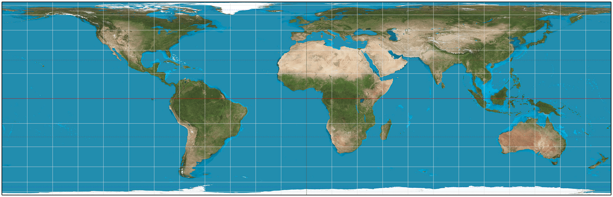
Remark 180: Cartography
We have shown that:
The Mercator projection is a conformal map of \(\mathbb{S}^2\) into the plane. Such projection preseves angles but distorts areas.
The Lambert cylindrical projection is an equiareal map of \(\mathbb{S}^2\) into the plane. Such projection preseves areas but distorts angles.
The following question is natural: Is there a projection \[ {\pmb{\sigma}}\colon \mathbb{S}^2 \to \mathbb{R}^2 \] which is both conformal and equiareal?
Answer: No. This is because \({\pmb{\sigma}}\) would be an isometry between \(\mathbb{S}^2\) and the plane \(\mathbb{R}^2\), see Theorem 175. This is impossible because:
- The Theorema Egregium (by Gauss - we will study it) tells us that isometric surfaces must have the same Gaussian curvature;
- However, the plane has zero Gaussian curvature, while the sphere has non-zero Gaussian curvature;
- Therefore the plane and the sphere cannot be isometric.
This means that we cannot draw a map of the Earth which preserves both angles and lengths.
4.11.10 Summary
Let \(\mathcal{S}\) be a regular surface and \({\pmb{\sigma}}\colon U \to \mathbb{R}^3\) a chart. We have introduced the first fundamental form of \(\mathcal{S}\) as the restriction of the euclidean scalar product to the tangent space: \[ I_{\mathbf{p}}(\mathbf{v},\mathbf{w}) = \mathbf{v}\cdot \mathbf{w}\,, \quad \forall \, \mathbf{v}, \mathbf{w}\in T_{\mathbf{p}} \mathcal{S} \] The first fundamental form of \({\pmb{\sigma}}\) is \[ {\mathscr{F}}_1 = E du^2 + 2F du dv+ G dv^2 \] where the coefficients are \[ E = {{\pmb{\sigma}}}_{u}\cdot {{\pmb{\sigma}}}_{u}\,, \quad F = {{\pmb{\sigma}}}_{u}\cdot {{\pmb{\sigma}}}_{v}\,, \quad G = {{\pmb{\sigma}}}_{v}\cdot {{\pmb{\sigma}}}_{v}\,. \] Given a chart \({\pmb{\sigma}}\), we have \[ I_{\mathbf{p}}(\mathbf{v},\mathbf{v}) = E du(\mathbf{v})^2 + 2F du(\mathbf{v}) dv(\mathbf{v}) + G dv(\mathbf{v})^2 \] Consider two curves \({\pmb{\gamma}}\) and \(\widetilde{{\pmb{\gamma}}}\) on the surface \({\pmb{\sigma}}(U)\), that is, \[ {\pmb{\gamma}}(t) = {\pmb{\sigma}}(u(t),v(t)) \,, \quad \widetilde{{\pmb{\gamma}}}(t) = {\pmb{\sigma}}(\tilde{u}(t),\tilde{v}(t)) \,. \] Moreover, consider a region \(R \subseteq U\). The first fundamental form allows to compute:
Length of curves: \[ L({\pmb{\gamma}}) = \int_a^b \sqrt{ E \dot{u}^2 + 2F \dot{u}\dot{v} + G \dot{v}^2 } \, dt \]
Angle \(\theta\) between \({\pmb{\gamma}}\) and \(\widetilde{{\pmb{\gamma}}}\) (at any intersection point): \[ \cos(\theta) = \frac{ E \dot u \dot{\tilde u} + F ( \dot u \dot{\tilde v}+ \dot{\tilde{u}} \dot v) + G \dot v \dot{\tilde v} }{ (E \dot{u}^2 + 2 F \dot u \dot v + G \dot{v}^2 )^{1/2} (E \dot{\tilde{u}}^2 + 2 F \dot{\tilde{u}} \dot{\tilde{v}} + G \dot{\tilde{v}}^2 )^{1/2} } \,. \]
Area \(A_{{\pmb{\sigma}}}(R)\) of the region \({\pmb{\sigma}}(R)\) \[ A_{{\pmb{\sigma}}}(R) = \int_R \sqrt{EG - F^2} \, du dv \,. \]
We have also introduced maps preserving certain quantities. Specfically, let \(\widetilde{\mathcal{S}}\) be another regular surface and \[ f \colon \mathcal{S}\to \widetilde{\mathcal{S}} \] a local diffeomorphism:
- \(f\) local isometry: Preserves scalar product of tangent vectors, and length of curves
- Length of \({\pmb{\gamma}}\) equals that of \(f \circ {\pmb{\gamma}}\) for any \({\pmb{\gamma}}\).
- \(f\) isometry \(\iff\) FFF of \({\pmb{\sigma}}\) and \(\widetilde{{\pmb{\sigma}}}= f \circ {\pmb{\sigma}}\) satisfy \[ E = \widetilde{E}, \quad F = \widetilde{F}, \quad G = \widetilde{G} \]
- \(f\) conformal map: Preserves the angle between tangent vectors, and between curves
- Angle between \({\pmb{\gamma}}\) and \(\widetilde{{\pmb{\gamma}}}\) is the same as the angle between \(f \circ {\pmb{\gamma}}\) and \(f \circ \widetilde{{\pmb{\gamma}}}\)
- \(f\) conformal \(\iff\) FFF of \({\pmb{\sigma}}\) and \(\widetilde{{\pmb{\sigma}}}= f \circ {\pmb{\sigma}}\) satisfy \[ E = \lambda \widetilde{E}, \quad F = \lambda \widetilde{F}, \quad G = \lambda \widetilde{G} \] for some function \(\lambda (u,v)\).
- Equiareal maps: They preserve areas of surface regions
- Area of \(\Omega \subseteq \mathcal{S}\) is the same as the area of \(f(\Omega)\).
- \(f\) equiareal \(\iff\) FFF of \({\pmb{\sigma}}\) and \(\widetilde{{\pmb{\sigma}}}= f \circ {\pmb{\sigma}}\) satisfy \[ EG - F^2 = \widetilde{E}\widetilde{G}- {\widetilde{F}}^2 \]
Moreover, they are equivalent:
- \(f\) is a local isometry,
- \(f\) is conformal and equiareal.
4.12 Second fudamental form
The first fundamental form allows to measure distances on a surface. However it does not give any information on how curved a surface is: For example, we saw that a plane and a cylinder have the same first fundamental form \[ \mathscr{F}_1 = du^2 + dv^2 \,. \] However the plane is flat, while the cylinder curves. We would like to find a measure of curvature which allows us to tell these two surfaces apart.
We can now start our discussion about curvature of surfaces. We can make a similar argument to the one we made for curves: If \({\pmb{\gamma}}\) is a unit-speed curve, the curvature of \({\pmb{\gamma}}\) is defined as \[ \kappa (t) = \left\| \ddot{{\pmb{\gamma}}}(t) \right\| \,. \] The quantity \(\kappa(t)\) gave us a measure of how much \({\pmb{\gamma}}\) is deviating from a straight line. Similarly, we would like to quantify how much a surface \(\mathcal{S}\) is deviating from the tangent plane \(T_{\mathbf{p}} \mathcal{S}\). Recall that \[ T_{\mathbf{p}} \mathcal{S}= \operatorname{span} \{ {\pmb{\sigma}}_u , {\pmb{\sigma}}_v \} \,, \] where \({\pmb{\sigma}}\) is a regular chart of \(\mathcal{S}\) at \(\mathbf{p}\). The standard unit normal of \({\pmb{\sigma}}\) is \[ \mathbf{N}= \frac{ {\pmb{\sigma}}_u \times {\pmb{\sigma}}_v }{ \left\| {\pmb{\sigma}}_u \times {\pmb{\sigma}}_v \right\| } \,, \] which is orthogonal to \(T_{\mathbf{p}} \mathcal{S}\). Let \((u_0,v_0) \in \mathbb{R}^2\) be the point such that \[ {\pmb{\sigma}}(u_0,v_0) = \mathbf{p}\,. \] As the scalar quantities \(\Delta u\) and \(\Delta v\) vary, the point \[ {\pmb{\sigma}}( u_0 + \Delta u , v_0 + \Delta v ) \in \mathcal{S} \] deviates from the tangent plane \(T_{\mathbf{p}} \mathcal{S}\). Since \(\mathbf{N}\) is orthogonal to \(T_{\mathbf{p}} \mathcal{S}\), the deviation is given by \[ \delta := \left[ {\pmb{\sigma}}( u_0 + \Delta u , v_0 + \Delta v ) - {\pmb{\sigma}}(u_0,v_0) \right] \cdot \mathbf{N}\,, \] as shown in Figure 4.35.
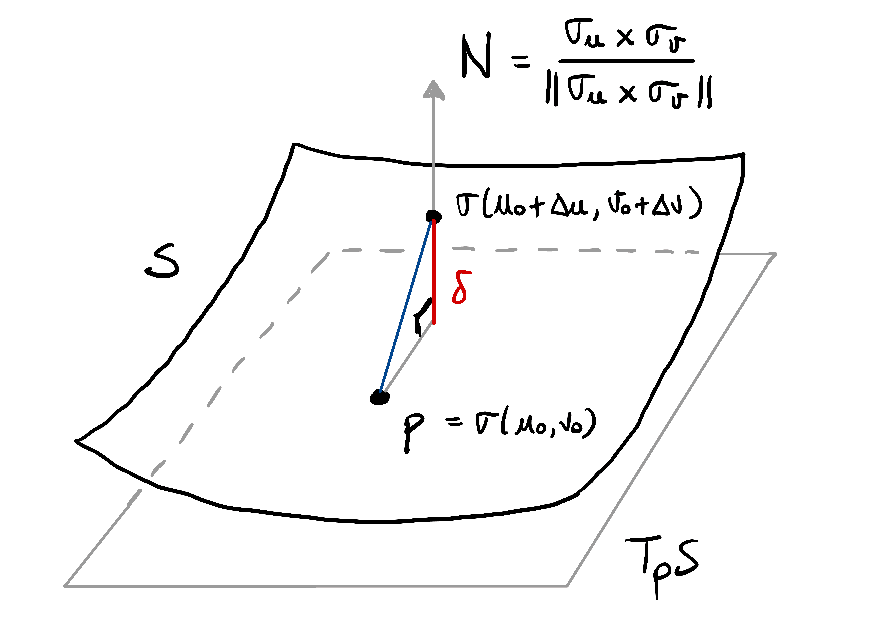
Using Taylor’s formula we get \[\begin{align*} {\pmb{\sigma}}(u_0 + \Delta u , v_0 + \Delta v) & = {\pmb{\sigma}}(u_0,v_0) + {\pmb{\sigma}}_u (u_0,v_0) \, \Delta u + {\pmb{\sigma}}_v (u_0,v_0) \, \Delta v \\ & \,\, + \frac12 \big( {\pmb{\sigma}}_{uu}(u_0,v_0) (\Delta u)^2 + 2 {\pmb{\sigma}}_{uv}(u_0,v_0) \Delta u \Delta v \\ & \,\, +{{\pmb{\sigma}}}_{vv}(u_0,v_0) (\Delta v)^2 \big) + R(\Delta u , \Delta v) \,, \end{align*}\] where \(R(\Delta u , \Delta v)\) is a remainder such that \[ \lim_{\Delta \to 0} \, \frac{R(\Delta u , \Delta v) }{\Delta } = 0 \,, \quad \Delta := (\Delta u)^2 + (\Delta v)^2 \,. \] Since \(\mathbf{N}\) is orthogonal to \({\pmb{\sigma}}_u\) and \({\pmb{\sigma}}_v\), if we multiply the above Taylor expansion by \(\mathbf{N}\), and ignore the remainder, we obtain \[ \delta = \frac12 \left( L (\Delta u)^2 + 2 M \Delta u \Delta v + N (\Delta v)^2 \right) \,, \] where we set \[ L := {\pmb{\sigma}}_{uu} \cdot \mathbf{N}\,, \quad M := {\pmb{\sigma}}_{uv} \cdot \mathbf{N}\,, \quad N := {\pmb{\sigma}}_{vv} \cdot \mathbf{N}\,. \] The expression \[ \mathscr{F}_2 := L \, du^2 + 2 M \,du dv + N \, dv^2 \] is called the second fundamental form of \(\mathcal{S}\). Therefore \(\mathscr{F}_2\) measures how much the surface \(\mathcal{S}\) deviates from being a plane. Let us make this definition precise.
Definition 181: Second fundamental form of a chart
Let \({\pmb{\sigma}}\colon U \to \mathbb{R}^3\) be regular, \(\mathcal{S}= {\pmb{\sigma}}(U)\). Define \(L , M , N \colon U \to \mathbb{R}\) \[
L := {\pmb{\sigma}}_{uu} \cdot \mathbf{N}\,, \quad M := {\pmb{\sigma}}_{uv} \cdot \mathbf{N}\,, \quad
N := {\pmb{\sigma}}_{vv} \cdot \mathbf{N}\,,
\] where \(\mathbf{N}\) is the standard unit normal to \({\pmb{\sigma}}\). The second fundamental form (SFF) of \({\pmb{\sigma}}\) is the quadratic form \(\mathscr{F}_2 \colon T_{\mathbf{p}} \mathcal{S}\to \mathbb{R}\) \[
\mathscr{F}_2 (\mathbf{v}) = L \, du^2(\mathbf{v}) + 2M \, du(\mathbf{v}) \, dv (\mathbf{v})+ N \, dv^2 (\mathbf{v}) \,, \,\, \forall \, v \in T_{\mathbf{p}} \mathcal{S},
\] for all \(\mathbf{p}\in {\pmb{\sigma}}(U)\), with \(L,M,N\) evaluated at \((u,v) = {\pmb{\sigma}}^{-1}(v)\), and \(du\), \(dv\) the coordinate functions in Definition 121.
Notation
With a little abuse of notation, we also denote by \(\mathscr{F}_2\) the \(2 \times 2\) matrix \[
\mathscr{F}_2 =
\left(
\begin{array}{cc}
L & M \\
M & N
\end{array}
\right) \,.
\]
Let us show that a plane and a cylinder have different second fundamental forms.
Example 182: SFF of Plane
Question. Let \(\mathbf{a}, \mathbf{p}, \mathbf{q} \in \mathbb{R}^3\), with \(\mathbf{p}\), \(\mathbf{q}\) orthonormal. The plane is charted by \[
{\pmb{\sigma}}(u,v) = \mathbf{a} + u \mathbf{p}+ v \mathbf{q} \,, \quad (u,v) \in \mathbb{R}^2 \,.
\] Prove that the SFF of \({\pmb{\sigma}}\) is \(\mathscr{F}_2 = 0\).
Note: This reflects the intuition that a plane is flat, and therefore there is no curvature.
Solution. We have that \(\mathscr{F}_2 = 0\), since \[\begin{gather*} {\pmb{\sigma}}_u = \mathbf{p}\,, \quad {\pmb{\sigma}}_v = \mathbf{q} \,, \quad {\pmb{\sigma}}_{uu} = {\pmb{\sigma}}_{uv} = {\pmb{\sigma}}_{vv} = {\pmb{0}}\,, \\ L = {\pmb{\sigma}}_{uu} \cdot \mathbf{N}= 0 \,, \quad M = {\pmb{\sigma}}_{uv} \cdot \mathbf{N}= 0 \,, \quad N = {\pmb{\sigma}}_{vv} \cdot \mathbf{N}= 0 \,. \end{gather*}\]
Example 183: SFF of Unit cylinder
Question. Consider the unit cylinder with chart \[
{\pmb{\sigma}}(u,v) = (\cos(u), \sin(u), v) \,, \quad (u,v) \in (0,2\pi) \times \mathbb{R}\,.
\] Prove that the SFF of \({\pmb{\sigma}}\) is \[
\mathscr{F}_2 = - du^2 \,.
\]
Note: This reflects the intuition that the cylinder curves only when moving in the \(u\)-direction. In such direction we are moving on a circle of radius \(1\), therefore we expect the curvature to be \(-1\).
Solution. We have \[\begin{align*} & {\pmb{\sigma}}_u = (-\sin(u),\cos(u), 0 ) &\,& \mathbf{N}= \frac{{\pmb{\sigma}}_u \times {\pmb{\sigma}}_v}{ \left\| {\pmb{\sigma}}_u \times {\pmb{\sigma}}_v \right\| } \\ & {\pmb{\sigma}}_v = (0,0,1) &\,& \, \quad = (\cos(u), \sin(u),0) \\ & {\pmb{\sigma}}_{uu} = (-\cos(u), - \sin(u), 0 ) &\,& L = {\pmb{\sigma}}_{uu} \cdot \mathbf{N}= - 1 \\ & {\pmb{\sigma}}_{uv} = {\pmb{\sigma}}_{vv} = {\pmb{0}} &\,& M = {\pmb{\sigma}}_{uv} \cdot \mathbf{N}= 0 \\ & {\pmb{\sigma}}_u \times {\pmb{\sigma}}_v = (\cos(u), \sin(u),0) &\,& N = {\pmb{\sigma}}_{vv} \cdot \mathbf{N}= 0 \\ & \left\| {\pmb{\sigma}}_u \times {\pmb{\sigma}}_v \right\| = 1 &\,&\mathscr{F}_2 = - du^2 \end{align*}\]
Remark 184
We have seen that a plane and the unit cylinder have the same first fundamental form \[
\mathscr{F}_1 = \widetilde{\mathscr{F}}_1 = du^2 + dv^2 \,,
\] while their second fundamental forms differ: we have \[
\mathscr{F}_2 = 0 \,, \quad \widetilde{\mathscr{F}}_2 = - du^2 \,,
\] respectively.
Remark 185: SFF and reparametrizations
Let \({\pmb{\sigma}}\colon U \to \mathbb{R}^3\) be regular, and \(\widetilde{{\pmb{\sigma}}} \colon \widetilde{U} \to \mathbb{R}^3\) a reparametrization, with \(\widetilde{{\pmb{\sigma}}} = {\pmb{\sigma}}\circ \Phi\) and \(\Phi \colon \widetilde{U} \to U\) diffeomorphism. The matrices \(\mathscr{F}_2\) and \(\widetilde{\mathscr{F}}_2\) of the SFF of \({\pmb{\sigma}}\) and \(\widetilde{{\pmb{\sigma}}}\) are related by \[
\widetilde{\mathscr{F}}_2 = \pm (J \Phi)^T \mathscr{F}_2 J \Phi \,, \quad
\mathscr{F}_2 = \left(
\begin{array}{cc}
\widetilde{L} & \widetilde{M} \\
\widetilde{M} & \widetilde{N}
\end{array}
\right) \,, \quad
\widetilde{\mathscr{F}}_2\left(
\begin{array}{cc}
\widetilde{L} & \widetilde{M} \\
\widetilde{M} & \widetilde{N}
\end{array}
\right) \,,
\] where the formula holds with the plus sign if \(\det J\Phi > 0\), and with the minus sign if \(\det J\Phi < 0\).
Proof
The formula holds by a change of variable argument. The sign depends on the sign of \(\det J\Phi\) because \[
\widetilde{\mathbf{N}} = \frac{ \widetilde{{\pmb{\sigma}}}_{\tilde{u}} \times \widetilde{{\pmb{\sigma}}}_{\tilde{v}} }{\left\| \widetilde{{\pmb{\sigma}}}_{\tilde{u}} \times \widetilde{{\pmb{\sigma}}}_{\tilde{v}} \right\|} = \frac{\det J\Phi}{|\det J\Phi|} \frac{{\pmb{\sigma}}_u \times {\pmb{\sigma}}_v}{\left\| {\pmb{\sigma}}_u \times {\pmb{\sigma}}_v \right\|} = \pm \mathbf{N}\,,
\] as shown in Remark 88.
4.12.1 Gauss and Weingarten maps
Another way to quantify how much a surface \(\mathcal{S}\) is curving is by examining the behavior of standard unit normal \(\mathbf{N}\). If \(\mathcal{S}\) is a plane spanned by vectors \(\mathbf{p}\) and \(\mathbf{q}\), then its standard unit normal is \[ \mathbf{N}= \frac{\mathbf{p}\times \mathbf{q}}{ \left\| \mathbf{p}\times \mathbf{q} \right\| } \,, \] which is constant across \(\mathcal{S}\). If \(\mathcal{S}\) is a general surface, measuring the variation of \(\mathbf{N}\) will tell us how much \(\mathcal{S}\) is deviating from being a plane. This is the idea behind the definition of the Gauss and Weingarten maps.
Remark 186
Let \(\mathcal{S}\) be oriented and \(\mathbf{N}\colon \mathcal{S}\to \mathbb{R}^3\) be the standard unit normal. In particular \(\mathbf{N}\) is a smooth map and \[
\mathbf{N}(\mathbf{p}) \perp T_{\mathbf{p}} \mathcal{S}\,, \quad \| \mathbf{N}(\mathbf{p}) \| = 1 \,, \quad \forall \, \mathbf{p}\in \mathcal{S}\,.
\] Since \(T_{\mathbf{p}} \mathcal{S}\) passes through the origin and \(\mathbf{N}\) has norm \(1\), it follows that \[
\mathbf{N}(\mathbf{p}) \in
\mathbb{S}^2 := \{ \mathbf{x}\in \mathbb{R}^3 \, \colon \, \| \mathbf{x}\| = 1 \} \,,
\] where \(\mathbb{S}^2\) is the unit sphere in \(\mathbb{R}^3\). Thus \(\mathbf{N}\colon \mathcal{S}\to \mathbb{S}^2\).
Definition 187: Gauss map
Let \(\mathcal{S}\) be an oriented surface with standard unit normal \(\mathbf{N}\). The Gauss map of \(\mathcal{S}\) is \[
{\mathcal{G}}_{\mathcal{S}} \colon \mathcal{S}\to \mathbb{S}^2 \,, \quad
{\mathcal{G}}_{\mathcal{S}} (\mathbf{p}):= \mathbf{N}(\mathbf{p}) \,.
\]
Remark 188
The Gauss map of \(\mathcal{S}\) is just the standard unit normal of \(\mathcal{S}\). By definition of standard unit normal to \(\mathcal{S}\) we obtain that \[
\mathcal{G}_{\mathcal{S}} \circ {\pmb{\sigma}}= \mathbf{N}
\] for all charts \({\pmb{\sigma}}\colon U \to \mathbb{R}^3\), where \(\mathbf{N}= \mathbf{N}_{{\pmb{\sigma}}}\) is the standard unit normal to \({\pmb{\sigma}}\), that is, \[
\mathbf{N}\colon U \to \mathbb{R}^3 \,, \quad
\mathbf{N}:= \frac{ {\pmb{\sigma}}_u \times {\pmb{\sigma}}_v }{ \left\| {\pmb{\sigma}}_u \times {\pmb{\sigma}}_v \right\| } \,.
\]
Example 189
Suppose \(\mathcal{S}\) is the unit sphere \(\mathbb{S}^2\). Then \({\mathcal{G}}_{\mathcal{S}} \colon \mathcal{S}\to \mathbb{S}^2\) is the identity, \[ {\mathcal{G}}_{\mathcal{S}} (\mathbf{p}) = \mathbf{p}\,, \] see Figure 4.36.
Let \(\mathbf{a} , \mathbf{v},\mathbf{w}\in \mathbb{R}^3\) with \(\mathbf{v}\) and \(\mathbf{w}\) linearly independent. Let \(\mathcal{S}\) be the plane \[ {\pmb{\sigma}}(u,v):= \mathbf{a} + \mathbf{v}u + \mathbf{\mathbf{w}} v \,, \quad \forall \, (u,v) \in \mathbb{R}^2 \,. \] The Gauss map of \(\mathcal{S}\) is constant: \[ \mathcal{G}_{\mathcal{S}} (\mathbf{p}) = \frac{ {\pmb{\sigma}}_u \times {\pmb{\sigma}}_v }{ \left\| {\pmb{\sigma}}_u \times {\pmb{\sigma}}_v \right\| } = \frac{ \mathbf{v}\times \mathbf{w}}{ \| \mathbf{v}\times \mathbf{w}\| } \,, \] for all \(\mathbf{p}\in \mathcal{S}\), see Figure 4.37.
Let \(\mathcal{S}\) be the unit cylinder \[ {\pmb{\sigma}}(u,v) = (\cos(u), \sin(u), v) \,, \quad (u,v) \in (0,2\pi) \times \mathbb{R}\,. \] We have already compute that the standard unit normal is \[ \mathbf{N}= \frac{ {\pmb{\sigma}}_u \times {\pmb{\sigma}}_v }{ \left\| {\pmb{\sigma}}_u \times {\pmb{\sigma}}_v \right\| } = (\cos(u), \sin(u), 0) \,. \] Therefore, the Gauss map of \(\mathcal{S}\) is \[ \mathcal{G}_{\mathcal{S}} (\mathbf{p}) = (\cos(u_0), \sin(u_0), 0) \,, \] where \((u_0,v_0)\) is such that \({\pmb{\sigma}}(u_0,v_0)=\mathbf{p}\). Note that \(\mathcal{G}_{\mathcal{S}}\) maps \(\mathcal{S}\) into the equator of \(\mathbb{S}^2\), see Figure 4.38.
Remark 190
By definition, the Gauss map is a smooth function between surfaces. Therefore the differential of \(\mathcal{G}_{\mathcal{S}}\) is well defined, and \[
d_{\mathbf{p}} {\mathcal{G}}_{\mathcal{S}} \colon T_{\mathbf{p}} \mathcal{S}\to T_{{\mathcal{G}}_{\mathcal{S}}(\mathbf{p})} \mathbb{S}^2 \,,
\] for all \(\mathbf{p}\in \mathcal{S}\). We have that \[
T_{{\mathcal{G}}_{\mathcal{S}}(\mathbf{p})} \mathbb{S}^2 = T_{\mathbf{p}} \mathcal{S}\,,
\tag{4.15}\] see Figure 4.39. Therefore \[
d_{\mathbf{p}} {\mathcal{G}}_{\mathcal{S}} \colon T_{\mathbf{p}} \mathcal{S}\to T_{\mathbf{p}} \mathcal{S}\,.
\]
Proof. The tangent plane \(T_{{\mathcal{G}}_{\mathcal{S}}(\mathbf{p})} \mathbb{S}^2\) passes through the origin and \[ \mathcal{G}(\mathbf{p}) \perp T_{{\mathcal{G}}_{\mathcal{S}}(\mathbf{p})} \mathbb{S}^2 \,. \] By definition \(\mathcal{G}(\mathbf{p}) = \mathbf{N}(\mathbf{p})\), and thus \[ \mathbf{N}(\mathbf{p}) \perp T_{{\mathcal{G}}_{\mathcal{S}}(\mathbf{p})} \mathbb{S}^2 \,. \] Since by definition \[ \mathbf{N}(\mathbf{p}) \perp T_{\mathbf{p}} \mathcal{S}\,, \] we infer (4.15).
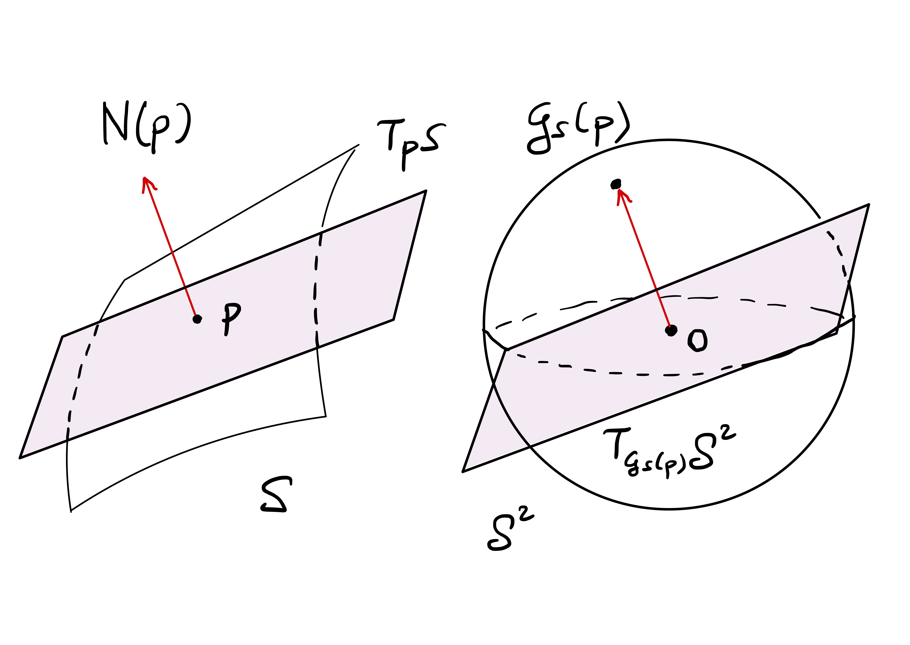
Definition 191: Weingarten map
Let \(\mathcal{S}\) be an orientable surface with Gauss map \(\mathcal{G} \colon \mathcal{S}\to \mathbb{S}^2\). The Weingarten map \(\mathcal{W}_{\mathbf{p}, \mathcal{S}}\) of \(\mathcal{S}\) at \(\mathbf{p}\) is \[
\mathcal{W}_{\mathbf{p},\mathcal{S}} \colon T_{\mathbf{p}}\mathcal{S}\to T_{\mathbf{p}} \mathcal{S}\,, \quad \mathcal{W}_{\mathbf{p},\mathcal{S}}(\mathbf{v}) = -d_{\mathbf{p}} \mathcal{G} (\mathbf{v}) \,.
\]
Important
The Gauss map encodes information on the standard unit normal \(\mathbf{N}\) to \(\mathcal{S}\). Hence its derivative, the Weingarten map, detects the rate of change of \(\mathbf{N}\).
Remark 192
The minus sign in the definition of \(\mathcal{W}_{\mathbf{p},\mathcal{S}}\) is a convention, just like we defined the torsion to be the scalar \(\tau\) such that \[
\dot{\mathbf{b}} = - \tau \mathbf{n}\,.
\]
The Weingarten map allows us to define a bilnear form on \(T_{\mathbf{p}} \mathcal{S}\). We call such bilinear form the second fundamental form of \(\mathcal{S}\).
Definition 193: SFF of a surface
Let \(\mathcal{S}\) be an orientable surface with Weingarten map \(\mathcal{W}_{\mathbf{p},\mathcal{S}}\). The SFF of \(\mathcal{S}\) at \(\mathbf{p}\) is the bilinear map \[
II_{\mathbf{p}} \colon T_{\mathbf{p}} \mathcal{S}\times T_{\mathbf{p}} \mathcal{S}\to \mathbb{R}\,, \quad
II_{\mathbf{p}}(\mathbf{v},\mathbf{w}) := \mathcal{W}_{\mathbf{p}, \mathcal{S}}(\mathbf{v}) \cdot \mathbf{w}\,.
\]
Remark 194
The second fudamental form \(II_{\mathbf{p}}\) of \(\mathcal{S}\) is bilinear.
Check. \(\mathcal{W}_{\mathbf{p},\mathcal{S}}\) is linear, being the differential of a smooth map. Hence \(II_{\mathbf{p}}\) is bilinear, given that the scalar product is bilinear.
Remark 195: Matrix of the second fundamental form
Let \({\pmb{\sigma}}\) be a chart at \(\mathbf{p}\in \mathcal{S}\). Since \(II_{\mathbf{p}}\) is a bilinear form on \(T_{\mathbf{p}} \mathcal{S}\), it can be represented by the \(2 \times 2\) matrix \[
A =
\left(
\begin{array}{cc}
II_{\mathbf{p}} ({\pmb{\sigma}}_u, {\pmb{\sigma}}_u) & II_{\mathbf{p}} ({\pmb{\sigma}}_u , {\pmb{\sigma}}_v) \\
II_{\mathbf{p}} ({\pmb{\sigma}}_v, {\pmb{\sigma}}_u) & II_{\mathbf{p}} ({\pmb{\sigma}}_v , {\pmb{\sigma}}_v)
\end{array}
\right) \,,
\] given that \(\{ {\pmb{\sigma}}_u, {\pmb{\sigma}}_v\}\) is a basis for \(T_{\mathbf{p}} \mathcal{S}\). In the next Theorem, we will prove that \[
A = \mathscr{F}_2 =
\left(
\begin{array}{cc}
L & M \\
M & N
\end{array}
\right)
\] where \[
L = {\pmb{\sigma}}_{uu} \cdot \mathbf{N}\,, \quad
M = {\pmb{\sigma}}_{uv} \cdot \mathbf{N}\,, \quad
N = {\pmb{\sigma}}_{vv} \cdot \mathbf{N}\,.
\] Therefore, the second fundamental form \(II_{\mathbf{p}}\) coincides with the second fundamental form \(\mathscr{F}_{2}\) of the chart \({\pmb{\sigma}}\). We prove this statement in the next theorem.
Theorem 196: Matrix of the SFF
Let \({\pmb{\sigma}}\colon U \to \mathbb{R}^3\) be regular, \(\mathcal{S}= {\pmb{\sigma}}(U)\), and \(\mathbf{p}\in {\pmb{\sigma}}(U)\). Then
The second funamental form \(II_{\mathbf{p}}\) is a symmetric bilinear map.
It holds \[ II_{\mathbf{p}} (\mathbf{v},\mathbf{w}) = (du (\mathbf{v}), dv(\mathbf{v}) ) \, \left( \begin{array}{cc} L & M \\ M & N \end{array} \right) \, (du(\mathbf{w}) , dv(\mathbf{w}))^T \,, \] for all \(\mathbf{v},\mathbf{w}\in T_{\mathbf{p}} \mathcal{S}\).
\(\mathscr{F}_2\) is the quadratic form associated to \(II_{\mathbf{p}}\), that is, \[ \mathscr{F}_2 (\mathbf{v}) = {II}_{\mathbf{p}} (\mathbf{v},\mathbf{v}) \,, \quad \forall \, \mathbf{v}\in T_{\mathbf{p}} \mathcal{S}\,. \]
To prove Theorem 195 we use the following two Lemmas.
Lemma 197
Let \({\pmb{\sigma}}\colon U \to \mathbb{R}^3\) be a regular chart with standard unit normal \(\mathbf{N}\colon U \to \mathbb{R}^3\). Then \[\begin{align*}
\mathbf{N}_{u} \cdot {\pmb{\sigma}}_u & = - L \,,\\
\mathbf{N}_{u} \cdot {\pmb{\sigma}}_v & = \mathbf{N}_{v} \cdot {\pmb{\sigma}}_u = - M \,, \\
\mathbf{N}_{v} \cdot {\pmb{\sigma}}_v & = - N \,.
\end{align*}\]
Proof
The vectors \({\pmb{\sigma}}_u\) and \({\pmb{\sigma}}_v\) form a basis for \(T_{\mathbf{p}} \mathcal{S}\). Since \(\mathbf{N}\) is orthogonal to \(T_{\mathbf{p}} \mathcal{S}\) by definition, it follows that \[
\mathbf{N}\cdot {\pmb{\sigma}}_u = 0 \,, \quad
\mathbf{N}\cdot {\pmb{\sigma}}_v = 0 \,.
\] Differentiating the above with respect to \(u\) and \(v\) yields the thesis. For example, we have \[
\frac{\partial}{\partial u} (\mathbf{N}\cdot {\pmb{\sigma}}_u) = 0 \,.
\] On the other hand, by chain rule, \[
\frac{\partial}{\partial u} (\mathbf{N}\cdot {\pmb{\sigma}}_u) = \mathbf{N}_u \cdot {\pmb{\sigma}}_u + \mathbf{N}\cdot {\pmb{\sigma}}_{uu} =
\mathbf{N}_u \cdot {\pmb{\sigma}}_u + L \,,
\] from which we infer \[
\mathbf{N}_u \cdot {\pmb{\sigma}}_u = - L \,.
\] The rest of the proof follows similarly.
Lemma 198
Let \(\mathcal{S}\) be an orientable surface with Weingarten map \(\mathcal{W}_{\mathbf{p},\mathcal{S}}\), and \({\pmb{\sigma}}\) a regular chart at \(\mathbf{p}\). Then \[
\mathcal{W}_{\mathbf{p},\mathcal{S}} ({\pmb{\sigma}}_u) = - \mathbf{N}_u \,, \quad
\mathcal{W}_{\mathbf{p},\mathcal{S}} ({\pmb{\sigma}}_v) = - \mathbf{N}_v \,,
\] where \({\pmb{\sigma}}_u,{\pmb{\sigma}}_v,\mathbf{N}_u,\mathbf{N}_v\) are evaluated at \((u,v) = {\pmb{\sigma}}^{-1}(\mathbf{p})\).
Proof
Since \(\mathcal{W}_{\mathbf{p},\mathcal{S}}\) is defined as \(- d_{\mathbf{p}} \mathcal{G}_{\mathcal{S}}\), we can compute \(\mathcal{W}_{\mathbf{p},\mathcal{S}} ({\pmb{\sigma}}_u)\) and \(\mathcal{W}_{\mathbf{p},\mathcal{S}} ({\pmb{\sigma}}_v)\) by using the definition of differential of a smooth function. To this end, consider the curve \[
{\pmb{\gamma}}(t) := {\pmb{\sigma}}( u_0 + t , v_0 ) \,.
\] We have that \({\pmb{\gamma}}\) is a smooth curve in \(\mathcal{S}\) and \[
\dot{{\pmb{\gamma}}}(t) = {\pmb{\sigma}}_u( u_0 + t, v_0 ) \,.
\] Therefore \[
{\pmb{\gamma}}(0) = {\pmb{\sigma}}(u_0,v_0) = \mathbf{p}\,, \quad \dot{{\pmb{\gamma}}}(0) = {\pmb{\sigma}}_u (u_0,v_0) \,.
\] Define \[
\widetilde{{\pmb{\gamma}}}(t) := (\mathcal{G}_{\mathcal{S}} \circ {\pmb{\gamma}})(t) \,.
\] By Remark 8 \[
\widetilde{{\pmb{\gamma}}}(t) = \mathcal{G}_{\mathcal{S}} ({\pmb{\gamma}}(t)) = \mathcal{G}_{\mathcal{S}} ({\pmb{\sigma}}(u_0 + t , v_0)) = \mathbf{N}(u_0 + t , v_0) \,.
\] Thus \[
\dot{\widetilde{{\pmb{\gamma}}}}(t) = \mathbf{N}_u (u_0 + t , v_0) \,, \quad \dot{\widetilde{{\pmb{\gamma}}}}(0) = \mathbf{N}_u (u_0 , v_0) \,.
\] By definition of differential, we have \[
\mathcal{W}_{\mathbf{p},\mathcal{S}} ({\pmb{\sigma}}_u) = - d_{\mathbf{p}} \mathcal{G}_{\mathcal{S}} ({\pmb{\sigma}}_u)
= - \dot{\widetilde{{\pmb{\gamma}}}}(0)
= - \mathbf{N}_u (u_0,v_0) \,,
\] as we wanted to prove. To show that \[
\mathcal{W}_{\mathbf{p},\mathcal{S}} ({\pmb{\sigma}}_v) = - \mathbf{N}_v (u_0,v_0) \,,
\] it is sufficient to consider the curve \[
{\pmb{\gamma}}(t) := {\pmb{\sigma}}( u_0 , v_0 + t ) \,,
\] and argue similarly. This is left as an exercise.
We can now prove Theorem 195
Proof: Proof of Theorem 195
By Theorem 80 we have \[
T_{\mathbf{p}} \mathcal{S}= \operatorname{span} \{ {\pmb{\sigma}}_u, {\pmb{\sigma}}_v \} \,.
\] Therefore, for \(\mathbf{v},\mathbf{w}\in T_{\mathbf{p}} \mathcal{S}\), there exist \(\lambda_1,\lambda_2,\mu_1,\mu_2 \in \mathbb{R}\) such that \[
\mathbf{v}= \lambda_1 {\pmb{\sigma}}_u + \mu_1 {\pmb{\sigma}}_v \,, \quad
\mathbf{w}= \lambda_2 {\pmb{\sigma}}_u + \mu_2 {\pmb{\sigma}}_v \,.
\] By bilinearity of \(II_{\mathbf{p}}\) we infer \[\begin{align*}
{II}_{\mathbf{p}} (\mathbf{v},\mathbf{w}) & = \lambda_1 \lambda_2 \, II_{\mathbf{p}}({\pmb{\sigma}}_u , {\pmb{\sigma}}_u) + \lambda_1 \mu_2 \, II_{\mathbf{p}}({\pmb{\sigma}}_u , {\pmb{\sigma}}_v) \\
& \,\,\,\, + \lambda_2 \mu_1 \, II_{\mathbf{p}}({\pmb{\sigma}}_v , {\pmb{\sigma}}_u) + \mu_1 \mu_2 \, II_{\mathbf{p}}({\pmb{\sigma}}_v , {\pmb{\sigma}}_v) \\
& = du(\mathbf{v}) du(\mathbf{w}) \, II_{\mathbf{p}}({\pmb{\sigma}}_u , {\pmb{\sigma}}_u) + du(\mathbf{v}) dv(\mathbf{w}) \, II_{\mathbf{p}}({\pmb{\sigma}}_u , {\pmb{\sigma}}_v) \\
& \,\,\,\, + dv(\mathbf{v}) du(\mathbf{v}) \, II_{\mathbf{p}}({\pmb{\sigma}}_v , {\pmb{\sigma}}_u) + dv(\mathbf{v}) dv(\mathbf{w}) \, II_{\mathbf{p}}({\pmb{\sigma}}_v , {\pmb{\sigma}}_v) \\
& = (du (\mathbf{v}), dv(\mathbf{v}) ) \,
\left(
\begin{array}{cc}
II_{\mathbf{p}}({\pmb{\sigma}}_u , {\pmb{\sigma}}_u) & II_{\mathbf{p}}({\pmb{\sigma}}_u , {\pmb{\sigma}}_v) \\
II_{\mathbf{p}}({\pmb{\sigma}}_v , {\pmb{\sigma}}_u) & II_{\mathbf{p}}({\pmb{\sigma}}_v , {\pmb{\sigma}}_v)
\end{array}
\right) \, (du(\mathbf{w}) , dv(\mathbf{w}))^T \,.
\end{align*}\] By Lemma 18 and Lemma 17 we have \[
\mathcal{W}_{\mathbf{p}, \mathcal{S}} ({\pmb{\sigma}}_u) = - \mathbf{N}_u \,, \quad L = - \mathbf{N}_u \cdot {\pmb{\sigma}}_u \,.
\] Therefore, using the above and the definition of \(II_{\mathbf{p}}\), we get \[
II_{\mathbf{p}} ({\pmb{\sigma}}_u,{\pmb{\sigma}}_u) = \mathcal{W}_{\mathbf{p},\mathcal{S}} ({\pmb{\sigma}}_u) \cdot {\pmb{\sigma}}_u = - \mathbf{N}_u \cdot {\pmb{\sigma}}_u = L \,.
\] With similar calculations we obtain \[
II_{\mathbf{p}} ({\pmb{\sigma}}_u,{\pmb{\sigma}}_v) = II_{\mathbf{p}} ({\pmb{\sigma}}_v,{\pmb{\sigma}}_u) = M \,, \quad
II_{\mathbf{p}} ({\pmb{\sigma}}_v,{\pmb{\sigma}}_v) = N \,,
\] concluding the proof of point 2. In particular this also proves that \(II_{\mathbf{p}}\) is symmetric, which is Point 1 of the statement. The fact that \[
II_{\mathbf{p}}(\mathbf{v},\mathbf{v}) = \mathscr{F}_2(\mathbf{v})
\] follows from Point 2 and definition of \(\mathscr{F}_2\).
4.12.2 Matrix of Weingarten map
The Weingarten map is a linear map \[ \mathcal{W}_{\mathbf{p},\mathcal{S}} \colon T_{\mathbf{p}} \mathcal{S}\to T_{\mathbf{p}} \mathcal{S}\,. \] We would like to find a formula to compute \(\mathcal{W}_{\mathbf{p},\mathcal{S}}\). This is easily done: Given a chart \({\pmb{\sigma}}\) at \(\mathbf{p}\), we have that \(\{{\pmb{\sigma}}_u,{\pmb{\sigma}}_v\}\) is a basis for the vector space \(T_{\mathbf{p}} \mathcal{S}\). Therefore, there exists a \(2 \times 2\) matrix \(\mathcal{W}\) which represents \(\mathcal{W}_{\mathbf{p},\mathcal{S}}\). It turns out that \[ \mathcal{W}= \mathscr{F}_1^{-1} \mathscr{F}_2 \,, \] where we recall that \[ \mathscr{F}_1 = \left( \begin{array}{cc} E & F \\ F & G \end{array} \right)\,, \quad \mathscr{F}_2 = \left( \begin{array}{cc} L & M \\ M & N \end{array} \right) \,, \] where \[\begin{align*} E & = {\pmb{\sigma}}_u \cdot {\pmb{\sigma}}_u \,, & F & = {\pmb{\sigma}}_u \cdot {\pmb{\sigma}}_v \, , & G & = {\pmb{\sigma}}_v \cdot {\pmb{\sigma}}_v \,, \\ L & = {\pmb{\sigma}}_{uu} \cdot \mathbf{N}\, , & M & = {\pmb{\sigma}}_{uv} \cdot \mathbf{N}\,, & N & = {\pmb{\sigma}}_{vv} \cdot \mathbf{N}\,, \end{align*}\] and \[ \mathbf{N}= \frac{ {\pmb{\sigma}}_u \times {\pmb{\sigma}}_v }{ \left\| {\pmb{\sigma}}_u \times {\pmb{\sigma}}_v \right\| } \,. \] Let us prove this claim.
Theorem 199: Matrix of Weingarten map
Let \(\mathcal{S}\) be an orientable surface with Weingarten map \(\mathcal{W}_{\mathbf{p},\mathcal{S}}\). Let \({\pmb{\sigma}}\) be a regular chart at \(\mathbf{p}\). The matrix of the Weingarten map with respect to the basis \(\{{{\pmb{\sigma}}}_{u},{{\pmb{\sigma}}}_{v}\}\) of \(T_{\mathbf{p}}\mathcal{S}\) is \[
\mathcal{W}= \mathscr{F}_1^{-1} \mathscr{F}_2 \,,
\] where the FFF and SFF are evaluated at \((u,v) = {\pmb{\sigma}}^{-1}(\mathbf{p})\).
Proof
By Theorem 80, we know that \(\{{\pmb{\sigma}}_u,{\pmb{\sigma}}_v\}\) is a basis of \(T_{\mathbf{p}} \mathcal{S}\). The matrix of the linear map \[
\mathcal{W}_{\mathbf{p},\mathcal{S}} \colon T_{\mathbf{p}} \mathcal{S}\to T_{\mathbf{p}} \mathcal{S}
\] with respect to such basis is given by \[
\mathcal{W}= \left(
\begin{array}{cc}
a & c \\
b & d
\end{array}
\right) \,,
\] where the coefficients \(a,b,c,d \in \mathbb{R}\) are such that \[\begin{align*}
\mathcal{W}_{\mathbf{p},\mathcal{S}} ({\pmb{\sigma}}_u) & = a {\pmb{\sigma}}_u + b {\pmb{\sigma}}_v \\
\mathcal{W}_{\mathbf{p},\mathcal{S}} ({\pmb{\sigma}}_v) & = c {\pmb{\sigma}}_u + d {\pmb{\sigma}}_v \,.
\end{align*}\] By Lemma 18 we have \[
\mathcal{W}_{\mathbf{p},\mathcal{S}} ({\pmb{\sigma}}_u) = - \mathbf{N}_u \,, \quad
\mathcal{W}_{\mathbf{p},\mathcal{S}} ({\pmb{\sigma}}_v) = - \mathbf{N}_v \,,
\] so that we obtain \[\begin{align*}
- \mathbf{N}_u & = a {\pmb{\sigma}}_u + b {\pmb{\sigma}}_v \\
- \mathbf{N}_v & = c {\pmb{\sigma}}_u + d {\pmb{\sigma}}_v \,.
\end{align*}\] Taking the scalar product with \({\pmb{\sigma}}_u\) and \({\pmb{\sigma}}_v\) we get \[\begin{align*}
- \mathbf{N}_u \cdot {\pmb{\sigma}}_u & = a ({\pmb{\sigma}}_u \cdot {\pmb{\sigma}}_u) + b ({\pmb{\sigma}}_v \cdot {\pmb{\sigma}}_u) \\
- \mathbf{N}_u \cdot {\pmb{\sigma}}_v & = a ({\pmb{\sigma}}_u \cdot {\pmb{\sigma}}_v) + b ({\pmb{\sigma}}_v \cdot {\pmb{\sigma}}_v) \\
- \mathbf{N}_v \cdot {\pmb{\sigma}}_u & = c ({\pmb{\sigma}}_u \cdot {\pmb{\sigma}}_u) + d ({\pmb{\sigma}}_v \cdot {\pmb{\sigma}}_u) \\
- \mathbf{N}_v \cdot {\pmb{\sigma}}_v & = c ({\pmb{\sigma}}_u \cdot {\pmb{\sigma}}_v) + d ({\pmb{\sigma}}_v \cdot {\pmb{\sigma}}_v)
\end{align*}\] By Lemma 17 we have \[\begin{align*}
\mathbf{N}_u \cdot {\pmb{\sigma}}_u & = - L \,, & \mathbf{N}_u \cdot {\pmb{\sigma}}_v & = - M \,, \\
\mathbf{N}_v \cdot {\pmb{\sigma}}_u & = - M \,, & \mathbf{N}_v \cdot {\pmb{\sigma}}_v & = - N \,. \\
\end{align*}\] If in addition we recall the definition of \(E,F,G\), we obtain \[\begin{align*}
L & = a E + b F \\
M & = a F + b G \\
M & = c E + d F \\
N & = c F + d G
\end{align*}\] The above equations are equivalent to the matrix multiplication \[
\left(
\begin{array}{cc}
L & M \\
M & N
\end{array}
\right)
=
\left(
\begin{array}{cc}
E & F \\
F & G
\end{array}
\right)
\left(
\begin{array}{cc}
a & c \\
b & d
\end{array}
\right) \,,
\] which reads \[
\mathscr{F}_2 = \mathscr{F}_1 \mathcal{W}= \,.
\] Now, notice that \[
\det \mathscr{F}_1 > 0 \,.
\] This is true by Cauchy-Schwarz inequality: \[
\mathbf{v}\cdot \mathbf{w}\leq \| \mathbf{v}\| \| \mathbf{w}\| \,, \quad \forall \, \mathbf{v}, \mathbf{w}\in
\mathbb{R}^3 \,,
\] where the inequality is strict if and only if \(\mathbf{v}\) and \(\mathbf{w}\) are linearly independent. Since \(\mathcal{S}\) is regular, we have that \({\pmb{\sigma}}_u\) and \({\pmb{\sigma}}_v\) are linearly independent. Therefore by Cauchy-Schwarz we have \[
{\pmb{\sigma}}_u \cdot {\pmb{\sigma}}_v < \left\| {\pmb{\sigma}}_u \right\| \left\| {\pmb{\sigma}}_v \right\| \,,
\] and so, squaring both sides, \[
\left( {\pmb{\sigma}}_u \cdot {\pmb{\sigma}}_v \right)^2 < \left\| {\pmb{\sigma}}_u \right\|^2 \left\| {\pmb{\sigma}}_v \right\|^2 \,.
\] Hence \[\begin{align*}
\det (\mathscr{F}_1) & = EG-F^2 \\
& = \left({\pmb{\sigma}}_u \cdot {\pmb{\sigma}}_u \right) \left({\pmb{\sigma}}_v \cdot {\pmb{\sigma}}_v \right) - \left({\pmb{\sigma}}_u \cdot {\pmb{\sigma}}_v \right)^2 \\
& = \left\| {\pmb{\sigma}}_u \right\|^2 \left\| {\pmb{\sigma}}_v \right\|^2 - \left({\pmb{\sigma}}_u \cdot {\pmb{\sigma}}_v \right)^2 > 0 \,.
\end{align*}\] Alternatively, we could have also noticed that \[
\left\| {\pmb{\sigma}}_u \right\|^2 \left\| {\pmb{\sigma}}_v \right\|^2 - \left({\pmb{\sigma}}_u \cdot {\pmb{\sigma}}_v \right)^2 = \left\| {{\pmb{\sigma}}}_{u}\times {{\pmb{\sigma}}}_{v} \right\|^2
\] by the properties of vector product. Therefore, \[
\det(\mathscr{F}_1) = EG-F^2 = \left\| {{\pmb{\sigma}}}_{u}\times {{\pmb{\sigma}}}_{v} \right\|^2 > 0
\] since \({\pmb{\sigma}}\) is regular.
In particular the matrix \(\mathscr{F}_1\) is invertible, and thus \[ \mathcal{W}= \mathscr{F}_1^{-1} \mathscr{F}_2 \,, \] concluding the proof.
Remark 200: Matrix inverse
A matrix \(A \in \mathbb{R}^{2 \times 2}\) is invertible if and only if \(\det (A) \neq 0\). In such case the inverse \(A^{-1}\) is computed via the formula \[
\left(
\begin{array}{cc}
a & b \\
c & d
\end{array}
\right)^{-1}
=
\frac{1}{\det(A)} \,
\left(
\begin{array}{cc}
d & -b \\
-c & a
\end{array}
\right) \,, \quad \det(A) = ad - bc \,.
\] If the matrix is diagonal, then \[
\left(
\begin{array}{cc}
\lambda & 0 \\
0 & \mu
\end{array}
\right)^{-1}
=
\left(
\begin{array}{cc}
1/\lambda & 0 \\
0 & 1/\mu
\end{array}
\right) \,.
\]
Notation
In the following we denote the matrix of \(\mathcal{W}_{\mathbf{p},\mathcal{S}}\) by the symbol \(\mathcal{W}\).
Example 201: Weingarten map of Helicoid
Question. The Helicoid is charted by \[
{\pmb{\sigma}}(u,v) = (u \cos (v), u \sin(v) , \lambda v) \,, \quad u \in \mathbb{R}\,, \, v \in (0,2\pi) \,,
\] with \(\lambda>0\) constant, see Figure 4.40. Compute the matrix of the Weingarten map.
Solution. We compute all the derivatives of \({\pmb{\sigma}}\) \[\begin{align*} & {\pmb{\sigma}}_u = ( \cos(v), \sin(v), 0 ) &\,& {\pmb{\sigma}}_{uv} = (- \sin(v), \cos(v), 0 ) \\ & {\pmb{\sigma}}_v = ( - u \sin(v), u \cos(v), \lambda ) &\,& {\pmb{\sigma}}_{vv} = -u \, ( \cos(v), \sin(v), 0 ) \\ & {\pmb{\sigma}}_{uu} = ( 0, 0, 0 ) \end{align*}\] The FFF and its inverse are \[\begin{align*} & E = {\pmb{\sigma}}_u \cdot {\pmb{\sigma}}_u = 1 &\,& F = {\pmb{\sigma}}_u \cdot {\pmb{\sigma}}_v = 0 \\ & G = {\pmb{\sigma}}_v \cdot {\pmb{\sigma}}_v = u^2 + \lambda^2 \\ & \mathscr{F}_1 = \left( \begin{array}{cc} 1 & 0 \\ 0 & u^2 + \lambda^2 \end{array} \right) &\,& \mathscr{F}_1^{-1} = \left( \begin{array}{cc} 1 & 0 \\ 0 & \dfrac{1}{u^2 + \lambda^2} \end{array} \right) \,. \end{align*}\] The standard unit normal to \({\pmb{\sigma}}\) is \[\begin{align*} & {\pmb{\sigma}}_u \times {\pmb{\sigma}}_v = (\lambda \sin (v), - \lambda \cos(v), u) \\ & \left\| {\pmb{\sigma}}_u \times {\pmb{\sigma}}_v \right\| = \sqrt{u^2 + \lambda^2} \\ & \mathbf{N}= \frac{ {\pmb{\sigma}}_u \times {\pmb{\sigma}}_v }{ \left\| {\pmb{\sigma}}_u \times {\pmb{\sigma}}_v \right\| } = \frac{1}{\sqrt{u^2 + \lambda^2}} \, (\lambda \sin(v), -\lambda \cos(v), u) \,. \end{align*}\] The SFF of \({\pmb{\sigma}}\) is \[\begin{align*} L & = {\pmb{\sigma}}_{uu} \cdot \mathbf{N}= 0 \qquad \qquad M = {\pmb{\sigma}}_{uv} \cdot \mathbf{N}= - \frac{\lambda}{\sqrt{u^2 + \lambda^2}} \\ N & = {\pmb{\sigma}}_{vv} \cdot \mathbf{N}= 0 \\ \mathscr{F}_2 & = \left( \begin{array}{cc} 0 & - \dfrac{\lambda}{\sqrt{u^2 + \lambda^2}} \\ -\dfrac{\lambda}{\sqrt{u^2 + \lambda^2}} & 0 \end{array} \right) \,. \end{align*}\] Finally, the matrix of the Weingarten map is \[\begin{align*} \mathcal{W}= \mathscr{F}_1^{-1} \mathscr{F}_2 = \left( \begin{array}{cc} 0 & - \dfrac{\lambda}{(u^2 + \lambda^2)^{1/2}} \\ -\dfrac{\lambda}{(u^2 + \lambda^2)^{3/2}} & 0 \end{array} \right) \,. \end{align*}\]
4.13 Curvatures
Curvatures of a surface \(\mathcal{S}\) are scalars associated to the Weingarten map \(\mathcal{W}_{\mathbf{p},\mathcal{S}}\). We will define:
- Gaussian curvature
- Mean curvature
- Principal curvatures
- Normal curvature
- Geodesic curvature
4.13.1 Gaussian and mean curvature
The Weingarten map of \(\mathcal{S}\) encodes the rate of change of the standard unit normal \(\mathbf{N}\). We use this map to produce scalar values, which we call curvatures. The first two curvatures that we consider are called Gaussian and mean curvatures.
Definition 202: Gaussian and mean curvature
Let \(\mathcal{S}\) be an orientable surface. Let \(\mathcal{W}\) be the matrix of the Weingarten map \(\mathcal{W}_{\mathbf{p},\mathcal{S}}\) of \(\mathcal{S}\) at \(\mathbf{p}\). We define:
The Gaussian curvature of \(\mathcal{S}\) at \(\mathbf{p}\) is \[ K := \det (\mathcal{W}) \,, \]
The mean curvature of \(\mathcal{S}\) at \(\mathbf{p}\) is \[ H := \frac12 \, \operatorname{Tr} (\mathcal{W}) \,, \]
Notation: Trace of a matrix
The trace of a \(2 \times 2\) matrix is the sum of the diagonal entries \[
\operatorname{Tr} (A) = a + d \,, \quad
A =
\left(
\begin{array}{cc}
a & b \\
c & d
\end{array}
\right) \,.
\]
Remark 203
The Gaussian curvature and mean curvature do not depend on the choice of basis of \(T_{\mathbf{p}} \mathcal{S}\). Indeed, if \(\widetilde{\mathcal{W}}\) is the matrix of the Weingarten map with respect to the basis \(\{\widetilde{{\pmb{\sigma}}}_u,\widetilde{{\pmb{\sigma}}}_v\}\) of \(T_{\mathbf{p}} \mathcal{S}\), then \[
\det (\mathcal{W}) = \det (\widetilde{\mathcal{W}}) \,, \quad
\operatorname{Tr} (\mathcal{W}) = \operatorname{Tr} (\widetilde{\mathcal{W}}) \,.
\]
Check. The above is true by a general linear algebra result: The determinant and trace of a matrix are invariant under change of basis.
Since we have shown that the matrix of the Weingarten map is \[ \mathcal{W}= \mathscr{F}_1^{-1} \mathscr{F}_2 \,, \] we can express \(K\) and \(H\) in terms of the first and second fundamental forms.
Proposition 204: Formulas for \(K\) and \(H\)
Let \({\pmb{\sigma}}\colon U \to \mathbb{R}^3\) be a regular chart, and \(\mathcal{S}= {\pmb{\sigma}}(U)\). Then \[
K =
\frac{ LN-M^2 }{ EG - F^2 } \,, \quad
H =
\frac{LG - 2MF - NE}{2 (EG - F^2)} \,.
\]
Proof
By Theorem 203 the matrix of the Weingarten map \(\mathcal{W}_{\mathbf{p},\mathcal{S}}\) of \(\mathcal{S}\) at \(\mathbf{p}\) is given by \[
\mathcal{W}= \mathscr{F}_1^{-1} \mathscr{F}_2 \,.
\] We have \[\begin{align*}
\det (\mathscr{F}_1) & =
\left|
\begin{array}{cc}
E & F \\
F & G
\end{array}
\right| = EF - G^2 \,, \\
\det (\mathscr{F}_2) & =
\left|
\begin{array}{cc}
L & M \\
M & N
\end{array}
\right| = LN - M^2 \,.
\end{align*}\] By the properties of determinant we get \[
\det (\mathscr{F}_1^{-1}) = \frac{1}{\det (\mathscr{F}_1)} = \frac{1}{EF - G^2} \,,
\] and therefore \[\begin{align*}
K & = \det (\mathcal{W}) = \det \left( \mathscr{F}_1^{-1} \mathscr{F}_2 \right) \\
& = \det (\mathscr{F}_1^{-1}) \det (\mathscr{F}_2)
= \frac{ LN-M^2 }{ EG - F^2 } \, .
\end{align*}\] To compute \(H\) we need to find the diagonal entries of \(\mathcal{W}\). Since \[
\mathscr{F}_1^{-1} =
\frac{1}{EG - F^2}
\left(
\begin{array}{cc}
G & -F \\
-F & E
\end{array}
\right)
\] we have \[
\mathcal{W}= \frac{1}{EG - F^2}
\left(
\begin{array}{cc}
G & -F \\
-F & E
\end{array}
\right)
\left(
\begin{array}{cc}
L & M \\
M & N
\end{array}
\right) \,.
\] From the above we compute \[\begin{align*}
w_{11} & = \frac{1}{EG - F^2} \left( LG - MF \right) \\
w_{22} & = \frac{1}{EG - F^2} \left( -MF + EN \right) \\
\end{align*}\] Therefore \[\begin{align*}
H & = \frac12 \operatorname{Tr} \mathcal{W}\\
& = \frac12 \left (w_{11} + w_{22} \right) \\
& = \frac{LG - 2MF + EN}{2 (EG - F^2)} \,.
\end{align*}\]
Example 205: Curvatures of the Plane
Question. Let \(\mathbf{a}, \mathbf{p}, \mathbf{q} \in \mathbb{R}^3\), with \(\mathbf{p}\), \(\mathbf{q}\) orthonormal. Consider the plane charted by \[ {\pmb{\sigma}}(u,v) = \mathbf{a} + \mathbf{p}u + \mathbf{q} v \,. \]
- Compute the matrix of the Weingarten map of \({\pmb{\sigma}}\).
- Compute the Gaussian and mean curvatures of the plane.
Solution.
From Examples 129, 181, the FFF and SFF of \({\pmb{\sigma}}\) are \[ \mathscr{F}_1 = \left( \begin{array}{cc} 1 & 0 \\ 0 & 1 \end{array} \right) \,, \quad \mathscr{F}_2 = \left( \begin{array}{cc} 0 & 0 \\ 0 & 0 \end{array} \right) \,. \] Therefore the matrix of the Weingarten map is \[ \mathcal{W}= \mathscr{F}_1^{-1} \mathscr{F}_2 = \left( \begin{array}{cc} 0 & 0 \\ 0 & 0 \end{array} \right) \,. \]
The Gaussian and mean curvatures are \[ K = \det (\mathcal{W}) = 0 \,, \qquad H = \frac12 \, \operatorname{Tr} (\mathcal{W}) = 0 \,. \]
Example 206: Curvatures of the Unit cylinder
Question. Consider the unit cylinder \(\mathcal{S}\) charted by \[ {\pmb{\sigma}}(u,v) = (\cos(u), \sin(u), v) \,. \]
- Compute the matrix of the Weingarten map of \({\pmb{\sigma}}\).
- Compute the Gaussian and mean curvatures of \(\mathcal{S}\).
Solution.
From Examples 127, 187, the FFF and SFF of \({\pmb{\sigma}}\) are \[ \mathscr{F}_1 = \left( \begin{array}{cc} 1 & 0 \\ 0 & 1 \end{array} \right) \,, \quad \mathscr{F}_2 = \left( \begin{array}{cc} -1 & 0 \\ 0 & 0 \end{array} \right) \,. \] Therefore the matrix of the Weingarten map is \[ \mathcal{W}= \mathscr{F}_1^{-1} \mathscr{F}_2 = \left( \begin{array}{cc} -1 & 0 \\ 0 & 0 \end{array} \right) \,. \]
The Gaussian and mean curvatures are \[ K = \det (\mathcal{W}) = 0 \,, \qquad H = \frac12 \, \operatorname{Tr} (\mathcal{W}) = - \frac12 \,. \]
4.13.2 Principal curvatures
In order to define the principal curvatures, we need the notions of eigenvalue and eigenvector. For reader’s convenience, we recall them in the next Remark.
Remark 207: Eigenvalues and eigenvectors
Let \(V\) be a two-dimensional vector space, and \(L \colon V \to V\) a linear map. We say that \(\lambda \in \mathbb{R}\) is an eigenvalue of \(L\) with eigenvector \(\mathbf{v}\in V\) if \[
L(\mathbf{v}) = \lambda \mathbf{v}\,, \quad \mathbf{v}\neq 0 \,.
\tag{4.16}\] Let \(\{\mathbf{v}_1,\mathbf{v}_2\}\) be a basis of \(V\), and denote by \[
\mathbf{x}= (x_1,x_2) \,, \quad
\mathbf{v}= x_1 \mathbf{v}_1 + x_2 \mathbf{v}_2 \,.
\] the coordinates of \(\mathbf{v}\) in such basis. Let \(A \in \mathbb{R}^{2 \times 2}\) be the matrix of \(L\) with respect to the basis \(\{\mathbf{v}_1,\mathbf{v}_2\}\). Equation (4.16) is equivalent to \[
A \mathbf{x}= \lambda \mathbf{x}\,,
\] meaning that \(\lambda\) is an eigenvalue of \(A\) with eigenvector \(\mathbf{x}\). The eigenvalues of \(A\) can be computed by solving the characteristic equation \[
P(\lambda) = 0 \,, \quad P(\lambda) := \det \left( A - \lambda I \right) \,,
\] where \(P\) is the characteristic polynomial of \(A\). Finally, we recall that \(A \in \mathbb{R}^{2 \times 2}\) is diagonalizable if there exists a diagonal matrix \(D\) and an invertible matrix \(P\) such that \[
A = P^{-1} D P \,.
\]
Theorem 208: Eigenvalues of Weingarten map
Let \(\mathcal{S}\) be an orientable surface and \({\pmb{\sigma}}\) a regular chart at \(\mathbf{p}\). Let \(\mathcal{W}\) be the matrix of the Weingarten map \(\mathcal{W}_{\mathbf{p},\mathcal{S}}\) with respect to the basis \(\{{\pmb{\sigma}}_u,{\pmb{\sigma}}_v\}\) of \(T_{\mathbf{p}}\mathcal{S}\). Then
There exist scalars \(\kappa_1, \kappa_2 \in \mathbb{R}\) and an orthonormal basis \(\{\mathbf{t}_1,\mathbf{t}_2\}\) of \(T_{\mathbf{p}} \mathcal{S}\) such that \[ \mathcal{W}_{\mathbf{p},\mathcal{S}} (\mathbf{t}_1) = \kappa_1 \mathbf{t}_1 \,, \quad \mathcal{W}_{\mathbf{p},\mathcal{S}} (\mathbf{t}_2) = \kappa_2 \mathbf{t}_2 \,. \]
Let \(\lambda_1, \lambda_2, \mu_1, \mu_2 \in \mathbb{R}\) be such that \[ \mathbf{t}_1 = \lambda_1 {\pmb{\sigma}}_u + \mu_1 {\pmb{\sigma}}_v \,, \quad \mathbf{t}_2 = \lambda_2 {\pmb{\sigma}}_u + \mu_2 {\pmb{\sigma}}_v \,. \] Denote \(\mathbf{x}_1 = (\lambda_1,\mu_1)\) and \(\mathbf{x}_2 = (\lambda_2,\mu_2)\). Then \(\kappa_1,\kappa_2\) are eingenvalues of \(\mathcal{W}\) of eigenvectors \(\mathbf{x}_1\) and \(\mathbf{x}_2\) \[ \mathcal{W}\mathbf{x}_1 = \kappa_1 \mathbf{x}_1 \,, \quad \mathcal{W}\mathbf{x}_2 = \kappa_2 \mathbf{x}_2 \,. \] In particular, the matrix \(\mathcal{W}\) is diagonalizable, with \[ \mathcal{W}= P^{-1} D P , \quad D = \left( \begin{array}{cc} \kappa_1 & 0 \\ 0 & \kappa_2 \end{array} \right) \,, \quad P = \left( \begin{array}{cc} \lambda_1 & \lambda_2 \\ \mu_1 & \mu_2 \end{array} \right) \,. \]
Proof
Part 1. Let \({\pmb{\sigma}}\) be a chart for \(\mathcal{S}\) at \(\mathbf{p}\). Then \(\{{\pmb{\sigma}}_u,{\pmb{\sigma}}_v\}\) is a basis of \(T_{\mathbf{p}} \mathcal{S}\). Let \(\mathcal{W}\) be the matrix of \(\mathcal{W}_{\mathbf{p},\mathcal{S}}\) with respect to such basis. By Theorem 203 we have \[
\mathcal{W}= {\mathscr{F}}_1^{-1} {\mathscr{F}}_2 \,.
\] Recall that \[
{\mathscr{F}}_1^{-1} = \frac{1}{EG - F^2 }
\left(
\begin{array}{cc}
G & - F\\
-F & E
\end{array}
\right) \,.
\] Thus, \({\mathscr{F}}_1^{-1}\) is symmetric. Since \[
{\mathscr{F}}_2 =
\left(
\begin{array}{cc}
L & M\\
M & N
\end{array}
\right)
\] is symmetric, and the product of symmetric matrices is symmetric, we conclude that \(\mathcal{W}\) is symmetric as well. Therefore \(\mathcal{W}_{\mathbf{p},\mathcal{S}}\) is self-adjoint, see Remark 15. The thesis now follows from the Spectral Theorem, see Theorem 13.
Part 2. We have just proven that \[ \mathcal{W}_{\mathbf{p},\mathcal{S}} (\mathbf{t}_1) = \kappa_1 \mathbf{t}_1 \,, \quad \mathcal{W}_{\mathbf{p},\mathcal{S}} (\mathbf{t}_2) = \kappa_2 \mathbf{t}_2 \,. \] As \(\mathcal{W}\) is the matrix of \(\mathcal{W}_{\mathbf{p},\mathcal{S}}\) and \(\mathbf{x}_1\), \(\mathbf{x}_2\) are the coordinates of \(\mathbf{t}_1,\mathbf{t}_2\), we infer \[ \mathcal{W}\mathbf{x}_1 = \kappa_1 \mathbf{x}_1 \,, \quad \mathcal{W}\mathbf{x}_2 = \kappa_2 \mathbf{x}_2 \,, \] showing that \(\kappa_i\) is eigenvalue of \(\mathcal{W}\) with eigenvector \(\mathbf{x}_i\). In particular, it follows that \(\mathcal{W}\) is diagonal in the basis \(\{\mathbf{x}_1,\mathbf{x}_2\}\) of \(\mathbb{R}^2\). Therefore \(\mathcal{W}= P^{-1} D P\), with \(D\) and \(P\) as in the statement.
The principal curvatures are the eigenvalues of the matrix of the Weingarten map, and the principal vectors its eigenvectors.
Definition 209: Principal curvatures and vectors
Let \(\mathcal{S}\) be an orientable surface. Let \(\mathcal{W}_{\mathbf{p},\mathcal{S}}\) the Weingarten map of \(\mathcal{S}\) at \(\mathbf{p}\). We define:
The principal curvatures of \(\mathcal{S}\) at \(\mathbf{p}\) are the eigenvalues \(\kappa_1, \kappa_2\) of \(\mathcal{W}_{\mathbf{p},\mathcal{S}}\).
The principal vectors corresponding to \(\kappa_1\) and \(\kappa_2\) are the eigenvectors \(\mathbf{t_1}, \mathbf{t}_2\) of \(\mathcal{W}_{\mathbf{p},\mathcal{S}}\).
Theorem 207 gives an explicit way to compute the principal curvatures and vectors.
Remark 210: Computing principal curvatures and vectors
Let \({\pmb{\sigma}}\colon U \to \mathbb{R}^3\) be a regular chart and \(\mathcal{S}= {\pmb{\sigma}}(U)\).
Compute the FFF and SFF of \({\pmb{\sigma}}\), and the matrix of the Weingarten map \[ \mathcal{W}= \mathscr{F}_{1}^{-1} \mathscr{F}_2 \,. \]
Compute the eigenvalues of \(\mathcal{W}\), by solving for \(\lambda\) the equation \[ \det(\mathcal{W}- \lambda I) = 0 \,. \] The two solutions are the principal curvatures \(\kappa_1\) and \(\kappa_2\).
Find scalars \(\lambda\), \(\mu\) which solve the linear system \[ (\mathcal{W}- \kappa_i I) \left( \begin{array}{c} \lambda \\ \mu \end{array} \right) = 0 \,. \] The solution(s) gives the eigenvector(s) of \(\mathcal{W}\) \[ \mathbf{x}_i = (\lambda,\mu) \] corresponding to the eigenvalue \(\kappa_i\).
The principal vector(s) associated to \(\kappa_i\) is
\[ \mathbf{t}_i = \lambda {\pmb{\sigma}}_u + \mu {\pmb{\sigma}}_v \]
Remark 211: The case of \(\mathcal{W}\) diagonal
Let \({\pmb{\sigma}}\colon U \to \mathbb{R}^3\) be a regular chart and \(\mathcal{S}= {\pmb{\sigma}}(U)\). Assume the matrix of the Weingarten map is diagonal \[
\mathcal{W}=
\left(
\begin{array}{cc}
\kappa_1 & 0 \\
0 & \kappa_2
\end{array}
\right) \,.
\] Then, the eigenvalues of \(\mathcal{W}\) are \(\kappa_1\) and \(\kappa_2\), with eigenvectors \[
\mathbf{x}_1 = (1,0) \,, \quad
\mathbf{x}_2 = (0,1) \,.
\] Therefore \(\kappa_1,\kappa_2\) are the principal curvatures of \(\mathcal{S}\), with principal vectors given by \[
\mathbf{t}_1 = {\pmb{\sigma}}_u \,, \quad \mathbf{t}_2 = {\pmb{\sigma}}_v \,.
\]
The principal curvatures are related to the Gaussian and mean curvatures.
Proposition 212: Relationships between curvatures
Let \(\mathcal{S}\) be an orientable surface. Then \[
\begin{gathered}
K = \kappa_1 \kappa_2 \,, \quad H = \frac{\kappa_1 + \kappa_2}{2} \,, \\
k_i = H \pm \sqrt{H^2 - K} \,.
\end{gathered}
\]
Proof
Part 1. By Theorem 207 we have \[
\mathcal{W}= P^{-1} D P \,, \quad
D =
\left(
\begin{array}{cc}
\kappa_1 & 0 \\
0 & \kappa_2
\end{array}
\right) \,.
\] By the properties of determinant \[
\det \left( A B \right) = \det (A) \det (B) \,, \quad \forall \, A,B \in \mathbb{R}^{2 \times 2} \,.
\] By definition of Gaussian curvature and the above formula we infer \[\begin{align*}
K & = \det ( \mathcal{W}) \\
& = \det \left( P^{-1} D P \right) \\
& = \det (P^{-1}) \det (D) \det (P) \\
& = \det (D) \\
& = \kappa_1 \kappa_2 \,,
\end{align*}\] where we also used that \[
\det(P^{-1}) = \frac{1}{\det(P)} \,.
\]
Part 2. The trace satisfies \[ \operatorname{Tr} \left( A B \right) = \operatorname{Tr} \left( BA \right) \,, \quad \forall \, A,B \in \mathbb{R}^{2 \times 2} \,. \] By definition of mean curvature and the above formula we get \[\begin{align*} H & = \frac12 \operatorname{Tr} (\mathcal{W}) \\ & = \frac12 \operatorname{Tr} \left( P^{-1} D P \right) \\ & = \frac12 \operatorname{Tr} \left( P P^{-1} D \right) \\ & = \frac12 \operatorname{Tr} \left( D \right) \\ & = \frac{1}{2} \left( \kappa_1 + \kappa_2 \right) \,. \end{align*}\]
Part 3. For any matrix \(A \in \mathbb{R}^{2 \times 2}\), we have \[\begin{align*} \det(A - \lambda I) & = \det \left( \begin{array}{cc} a - \lambda & b \\ c & d - \lambda \end{array} \right) \\ & = (a-\lambda)(d-\lambda) - bc \\ & = \lambda^2 - (a + d) \lambda + ad-bc \\ & = \lambda^2 - \operatorname{Tr}(A) \lambda + \det(\lambda) \,. \end{align*}\] If \(A = \mathcal{W}\), we obtain \[ \det (\mathcal{W}- \lambda I) = \lambda^2 - 2 H \lambda + K \,. \] Therefore, the principal curvatures are \[ \kappa_i = H \pm \sqrt{H^2 - K} \,. \]
Example 213: Principal curvatures of Unit Cylinder
Question. Consider the unit cylinder charted by \[
{\pmb{\sigma}}(u,v) = (\cos(u), \sin(u), v) \,.
\] Compute the principal curvature and principal vectors.
Solution. By Example 210, the matrix of the Weingarten map is \[ \mathcal{W}= \left( \begin{array}{cc} -1 & 0 \\ 0 & 0 \end{array} \right) \,. \] Since \(\mathcal{W}\) is diagonal, the eigenvalues are the diagonal entries of \(\mathcal{W}\) and the eigenvectors are \[ \mathbf{x}_1 = (1,0), \quad \mathbf{x}_2 = (0,1) \,. \] Therefore, the principal curvatures and principal vectors are \[\begin{align*} & \kappa_1 = - 1 \,, \quad \kappa_2 = 0 \,,\\ & \mathbf{t}_1 = {\pmb{\sigma}}_u = (-\sin(u),\cos(v),0) \,,\\ & \mathbf{t}_2 = {\pmb{\sigma}}_v = (0,0,1)\,, \end{align*}\] as shown in Figure 4.41.
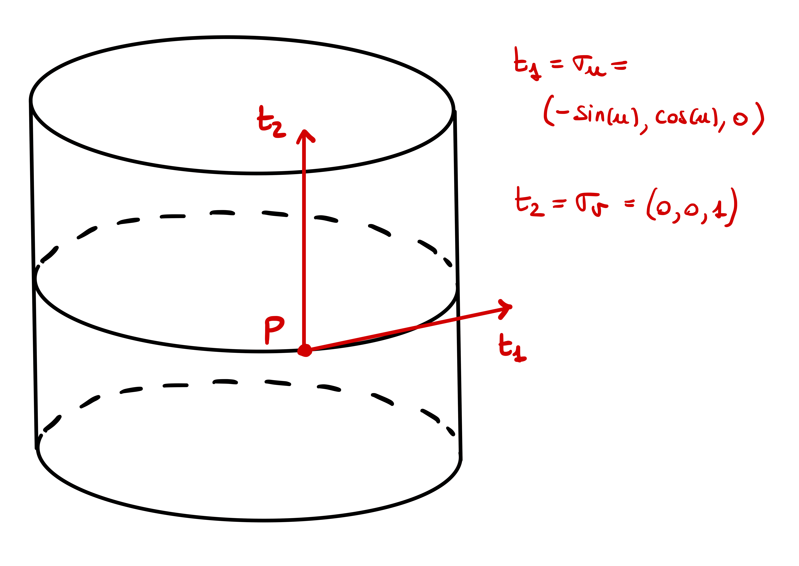
Example 214: Curvatures of Sphere
Question. Consider the chart for the sphere \[
{\pmb{\sigma}}(u, v)=(\cos (u) \cos (v), \sin (u) \cos (v), \sin (v)) \,,
\] where \(u \in (0,2\pi)\), \(v \in (-\pi/2,\pi/2)\). Prove that \[\begin{gather*}
\mathscr{F}_1 =
\mathscr{F}_2 =
\left(
\begin{array}{cc}
\cos^2(v) & 0 \\
0 & 1
\end{array}
\right) \,, \quad
\mathcal{W}=
\left(
\begin{array}{cc}
1 & 0 \\
0 & 1
\end{array}
\right) \,, \\
K = H = \kappa_1 = \kappa_2 =1 \,, \quad \mathbf{t}_1 = {\pmb{\sigma}}_u \,, \quad
\mathbf{t}_2 = {\pmb{\sigma}}_v \,.
\end{gather*}\]
Solution. Compute the FFF of \({\pmb{\sigma}}\) \[\begin{align*} {\pmb{\sigma}}_u & = (-\sin(u)\cos(v), \cos(u)\cos(v),0) \\ {\pmb{\sigma}}_v & = (-\cos(u)\sin(v), -\sin(u)\sin(v), \cos(v)) \\ E & = {\pmb{\sigma}}_u \cdot {\pmb{\sigma}}_u = \cos^2(v) \\ F & = {\pmb{\sigma}}_u \cdot {\pmb{\sigma}}_v = 0\\ G & = {\pmb{\sigma}}_v \cdot {\pmb{\sigma}}_v = 1 \\ \mathscr{F}_1 & = \left( \begin{array}{cc} \cos^2(v) & 0 \\ 0 & 1 \end{array} \right) \,. \end{align*}\] Moreover \[\begin{align*} {\pmb{\sigma}}_u \times {\pmb{\sigma}}_v & = (\cos(u)\cos^2(v), \sin(u) \cos^2(v), \cos(v)\sin(v)) \\ \| {\pmb{\sigma}}_u \times {\pmb{\sigma}}_v \| & = |\cos(v)| = \cos(v) \,, \end{align*}\] where we used that \(\cos(v)>0\) since \(v \in (-\pi/2,\pi/2)\). Therefore, \[\begin{align*} \mathbf{N}& = (\cos(u) \cos(v), \sin(u)\cos(v), \sin(v) ) \\ {\pmb{\sigma}}_{uu} & = (-\cos(u)\cos(v), -\sin(u)\cos(v), 0 ) \\ {\pmb{\sigma}}_{uv} & = (\sin(u)\sin(v), -\cos(u)\sin(v), 0 ) \\ {\pmb{\sigma}}_{vv} & = (-\cos(u)\cos(v), -\sin(u)\cos(v), -\sin(v) ) \\ L & = {\pmb{\sigma}}_{uu} \cdot \mathbf{N}= \cos^{2}(v) \\ M & ={\pmb{\sigma}}_{uv} \cdot \mathbf{N}= 0 \\ N & = {\pmb{\sigma}}_{vv} \cdot \mathbf{N}= 1 \end{align*}\] Hence, the SFF and matrix of the Weingarten map are \[ \mathscr{F}_2 = \left( \begin{array}{cc} \cos^2(v) & 0 \\ 0 & 1 \end{array} \right) \,, \quad \mathcal{W}= \mathscr{F}_1^{-1} \mathscr{F}_2 = \left( \begin{array}{cc} 1 & 0 \\ 0 & 1 \end{array} \right) \,. \] Since \(\mathcal{W}\) is diagonal, the principal curvatures and vectors are \[ \kappa_1 = \kappa_2 = 1 \,, \quad \mathbf{t}_1 = {\pmb{\sigma}}_u \,, \quad \mathbf{t}_2 = {\pmb{\sigma}}_v \,. \] Finally, the mean and Gaussian curvatures are \[ H = \frac{\kappa_1 + \kappa_2}{2} = 1 \,, \quad K= \kappa_1 \kappa_2 = 1 \,. \]
Example 215: Curvatures of the Torus
Consider a circle \(\mathcal{C}\) contained in the \(xz\)-plane, with center at distance \(b>0\) from the \(z\)-axis, and radius \(a\), with \(0<a<b\). The torus is obtained by rotating \(\mathcal{C}\) around the \(z\)-axis. This surface is charted by \[
{\pmb{\sigma}}(\theta,\phi) = \left( \left(a+b \cos(\theta) \right) \cos(\phi), \left(a+b \cos(\theta) \right) \sin(\phi), b\sin(\theta) \right) \,,
\] where \(\theta \in (-\pi/2,\pi/2)\) and \(\phi\in (0,2\pi)\). One can compute that the first and second fundamental forms are \[\begin{align*}
\mathscr{F}_1 & =
\left(
\begin{array}{cc}
b^2 & 0 \\
0 & \left(a+b \cos(\theta) \right)^2
\end{array}
\right) \\
\mathscr{F}_2 & =
\left(
\begin{array}{cc}
b & 0 \\
0 & \left(a+b \cos(\theta) \right) \cos(\theta)
\end{array}
\right) \,.
\end{align*}\] Therefore the matrix of the Weingarten map is \[
\mathcal{W}= \mathscr{F}_1^{-1} \mathscr{F}_2 =
\left(
\begin{array}{cc}
\dfrac{1}{b} & 0 \\
0 & \dfrac{\cos(\theta)}{ a + b \cos(\theta)}
\end{array}
\right) \,.
\] Since \(\mathcal{W}\) is diagonal, the principal curvatures are \[
\kappa_1 = \frac{1}{b} \,, \quad
\kappa_2 = \dfrac{\cos(\theta)}{ a + b \cos(\theta)} \,,
\] and the principal vectors \[
\mathbf{t}_1 = {\pmb{\sigma}}_u \,, \quad
\mathbf{t}_2 = {\pmb{\sigma}}_v \,.
\] The Gaussian and mean curvature are \[\begin{align*}
K & = \kappa_1 \kappa_2 = \dfrac{\cos(\theta)}{ b \left(a + b \cos(\theta)\right)} \\
H & = \frac{\kappa_1 + \kappa_2}{2} =
\dfrac{a + 2b \cos(\theta)}{2 b \left(a + b \cos(\theta)\right)}
\end{align*}\]
4.13.3 Normal and geodesic curvatures
Let \(\mathcal{S}\) be a regular surface and consider all the curves \({\pmb{\gamma}}\) on \(\mathcal{S}\) passing through the point \(\mathbf{p}\in \mathcal{S}\). The shape of \(\mathcal{S}\) at \(\mathbf{p}\) influences the curvature of such curves.
Question 216
Which curves through \(\mathbf{p}\) have greatest or lowest curvature?
We start our analysis with the following Definition.
Definition 217: Darboux frame
Let \(\mathcal{S}\) be a regular surface, \({\pmb{\gamma}}\colon (a,b) \to \mathcal{S}\) a unit-speed curve. The Darboux frame of \({\pmb{\gamma}}\) at \(t\) is the triple \[
\{ \dot{{\pmb{\gamma}}}, \mathbf{N}, \mathbf{N}\times \dot{{\pmb{\gamma}}}\} \,,
\] where \({\pmb{\gamma}}\) is evaluated at \(t\), and \(\mathbf{N}\) is the standard unit normal to \(\mathcal{S}\), evaluated at \(\mathbf{p}= {\pmb{\gamma}}(t)\).
Proposition 218: Darboux frame is orthonormal basis
Let \(\mathcal{S}\) be a regular surface, \({\pmb{\gamma}}\colon (a,b) \to \mathcal{S}\) a unit-speed curve. The Darboux frame is an orthornormal basis of \(\mathbb{R}^3\) for all \(t \in (a,b)\).
Proof
By definition of tangent space, \(\dot{{\pmb{\gamma}}}(t) \in T_{\mathbf{p}} \mathcal{S}\) when \(\mathbf{p}:= {\pmb{\gamma}}(t)\). As \(\mathbf{N}({\pmb{\gamma}}(t))\) is normal to \(T_{\mathbf{p}} \mathcal{S}\), we get \[
\dot{{\pmb{\gamma}}}\cdot \mathbf{N}({\pmb{\gamma}}(t)) = 0 \,.
\] As \({\pmb{\gamma}}\) is unit-speed, we have \(\left\| \dot{{\pmb{\gamma}}} \right\| = 1\). Moreover, \(\left\| \mathbf{N} \right\|=1\) by definition. Therefore, \(\dot{{\pmb{\gamma}}}\) and \(\mathbf{N}\) are orthonormal, and by the properties of vector product: \[
\left\| \mathbf{N}\times \dot{{\pmb{\gamma}}} \right\| = \left\| \mathbf{N} \right\| \left\| \dot{{\pmb{\gamma}}} \right\| = 1 \,.
\] Again using the properties of vector product, we have \[
(\mathbf{N}\times \dot{{\pmb{\gamma}}}) \cdot \mathbf{N}= 0 \,, \quad
(\mathbf{N}\times \dot{{\pmb{\gamma}}}) \cdot \dot{{\pmb{\gamma}}}= 0 \,.
\] Therefore \(\{ \dot{{\pmb{\gamma}}}, \mathbf{N}, \mathbf{N}\times \dot{{\pmb{\gamma}}}\}\) is an orthonormal basis of \(\mathbb{R}^3\).
Important
In general, the Darboux frame \[
\{ \dot{{\pmb{\gamma}}}, \mathbf{N}, \mathbf{N}\times \dot{{\pmb{\gamma}}}\}
\] does not coincide with the Frenet frame \[
\{ \dot{{\pmb{\gamma}}}, \mathbf{n},\mathbf{b}\}
\] of \({\pmb{\gamma}}\). This is because the principal normal to \({\pmb{\gamma}}\) is \[
\mathbf{n}= \frac{\ddot{{\pmb{\gamma}}}}{\left\| \ddot{{\pmb{\gamma}}} \right\|} = \frac{\ddot{{\pmb{\gamma}}}}{\kappa} \,,
\] and, in general, \(\mathbf{n}\neq \mathbf{N}\).
Proposition 219: Coefficients of \(\ddot{{\pmb{\gamma}}}\) in the Darboux frame
Let \(\mathcal{S}\) be a regular surface, \({\pmb{\gamma}}\colon (a,b) \to \mathcal{S}\) a unit-speed curve. Then \[
\ddot{{\pmb{\gamma}}}= \kappa_n \mathbf{N}+ \kappa_g \, \left( \mathbf{N}\times \dot{{\pmb{\gamma}}}\right) \,,
\tag{4.17}\] where \(\mathbf{N}\) is evaluated at \(\mathbf{p}:={\pmb{\gamma}}(t)\) and \(\kappa_n,\kappa_g\) are scalars depedent on \(\mathbf{p}\). Moreover \[
\kappa_n = \ddot{{\pmb{\gamma}}}\cdot \mathbf{N}\,, \quad \kappa_g = \ddot{{\pmb{\gamma}}}\cdot \left( \mathbf{N}\times \dot{{\pmb{\gamma}}}\right) \,,
\tag{4.18}\] \[
\kappa^2 = \kappa_n^2 + \kappa_g^2 \,,
\tag{4.19}\] \[
\kappa_n = \kappa \cos (\phi) \,, \quad \kappa_g = \pm \kappa \sin(\phi) \,,
\tag{4.20}\] where \(\kappa\) is the curvature of \({\pmb{\gamma}}\), and \(\phi\) is the angle between \(\mathbf{N}\) and \(\mathbf{n}\), the principal unit normal of \({\pmb{\gamma}}\).
Proof
Part 1. By Proposition 218, we know that \[
\{ \dot{{\pmb{\gamma}}}, \mathbf{N}, \mathbf{N}\times \dot{{\pmb{\gamma}}}\}
\] is an orthornormal basis of \(\mathbb{R}^3\). Hence \[
\ddot{{\pmb{\gamma}}}= a \dot{{\pmb{\gamma}}}+ b \mathbf{N}+ c \left( \mathbf{N}\times \dot{{\pmb{\gamma}}}\right) \,,
\] for some coefficients \(a,b,c \in \mathbb{R}\). Since \({\pmb{\gamma}}\) is unit-speed, we have that \[
\dot{{\pmb{\gamma}}}\cdot \ddot{{\pmb{\gamma}}}= 0 \,.
\] On the other hand, \[
\dot{{\pmb{\gamma}}}\cdot \ddot{{\pmb{\gamma}}}= a (\dot{{\pmb{\gamma}}}\cdot \dot{{\pmb{\gamma}}}) + b ( \dot{{\pmb{\gamma}}}\cdot \mathbf{N}) +
c \dot{{\pmb{\gamma}}}\cdot \left( \mathbf{N}\times \dot{{\pmb{\gamma}}}\right) = a \,,
\] since \(\dot{{\pmb{\gamma}}}\) is orthogonal to both \(\mathbf{N}\) and \(\mathbf{N}\times \dot{{\pmb{\gamma}}}\), and \[
\dot{{\pmb{\gamma}}}\cdot \dot{{\pmb{\gamma}}}= \left\| \dot{{\pmb{\gamma}}} \right\|^2 = 1 \,.
\] Therefore, \(a = 0\) and \[
\ddot{{\pmb{\gamma}}}= b \mathbf{N}+ c \left( \mathbf{N}\times \dot{{\pmb{\gamma}}}\right) \,.
\] Setting \(\kappa_n := b\) and \(\kappa_g := c\) we conclude (4.17).
Part 2. Taking the scalar product of (4.17) with \(\mathbf{N}\) yields \[ \ddot{{\pmb{\gamma}}}\cdot \mathbf{N}= \kappa_n \left\| \mathbf{N} \right\|^2 + \kappa_g \left( \mathbf{N}\times \dot{{\pmb{\gamma}}}\right) \cdot \mathbf{N}= \kappa_n \,, \] where we used that \(\mathbf{N}\) and \(\mathbf{N}\times \dot{{\pmb{\gamma}}}\) are orthonormal vectors. Similarly, taking the scalar product of (4.17) with \(\mathbf{N}\times \dot{{\pmb{\gamma}}}\) yields the second equation in (4.18).
Part 3. By (4.17) we infer \[\begin{align*} \left\| \ddot{{\pmb{\gamma}}} \right\|^2 & = \kappa_n^2 \left\| \mathbf{N} \right\|^2 + 2 \kappa_n \kappa_g \mathbf{N}\cdot \left(\mathbf{N}\times \dot{{\pmb{\gamma}}}\right) + \kappa_g^2 \left\| \mathbf{N}\times \dot{{\pmb{\gamma}}} \right\|^2 \\ & = \kappa_n^2 + \kappa_g^2 \,, \end{align*}\] where we used that \(\mathbf{N}\) and \(\mathbf{N}\times \dot{{\pmb{\gamma}}}\) are orthonormal. Since \[ \kappa(t) = \left\| \ddot{{\pmb{\gamma}}}(t) \right\| \,, \] we conclude (4.19).
Part 4. Recalling that \[ \ddot{{\pmb{\gamma}}}= \kappa \mathbf{n}\,, \] from the first equation in (4.18) we obtain \[\begin{align*} \kappa_n & = \ddot{{\pmb{\gamma}}}\cdot \mathbf{N}\\ & = \kappa \mathbf{n}\cdot \mathbf{N}\\ & = \kappa \| \mathbf{n}\| \| \mathbf{N}\| \cos(\phi) \\ & = \kappa \cos(\phi) \,, \end{align*}\] where we used that \(\mathbf{n}\) and \(\mathbf{N}\) have unit norm. Hence, the first equation in (4.20) is established. By (4.19) we get \[\begin{align*} \kappa_g^2 & = \kappa^2 - \kappa_n^2 \\ & = \kappa^2 - \kappa^2 \cos^2(\phi) \\ & = \kappa^2 (1 - \cos^2(\phi)) \\ & = \kappa^2 \sin^2(\phi) \,, \end{align*}\] from which we obtain the second equation in (4.20).
The quantities \(\kappa_n\) and \(\kappa_g\) are the normal and geodesic curvatures of \({\pmb{\gamma}}\).
Definition 220: Normal and geodesic curvatures
Let \(\mathcal{S}\) be regular and \({\pmb{\gamma}}\colon (a,b) \to \mathcal{S}\) a unit-speed curve. Let \(\mathbf{N}\) bet the standard unit normal to \(\mathcal{S}\).
The normal curvature of \({\pmb{\gamma}}\) is \[ \kappa_n = \ddot{{\pmb{\gamma}}}\cdot \mathbf{N}\,, \]
The geodesic curvature of \({\pmb{\gamma}}\) is \[ \kappa_g = \ddot{{\pmb{\gamma}}}\cdot (\mathbf{N}\times \dot{{\pmb{\gamma}}}) \,. \]
In particular:
- The normal curvature is the curvature of \({\pmb{\gamma}}\) forced by being on the surface.
- The geodesic curvature is the residual curvature.
The normal curvature \(\kappa_n\) can be computed via the second fundamental form, as shown in the theorem below.
Theorem 221: Computing \(\kappa_n\) with SFF
Let \(\mathcal{S}\) be a regular surface and \({\pmb{\gamma}}\colon (a,b) \to \mathcal{S}\) a unit-speed curve. Denote \(\mathbf{p}:= {\pmb{\gamma}}(t)\). We have:
The normal curvature \(\kappa_n\) satisfies \[ \kappa_n = {II}_{\mathbf{p}} (\dot{{\pmb{\gamma}}}, \dot{{\pmb{\gamma}}}) \,. \]
Let \({\pmb{\sigma}}\) be a chart for \(\mathcal{S}\) at \(\mathbf{p}= {\pmb{\gamma}}(t)\). Then \[ {\pmb{\gamma}}(t)={\pmb{\sigma}}(u(t), v(t)) \] for some smooth functions \(u,v \colon (a,b) \to \mathbb{R}\), and \[ \kappa_{n}=L \dot{u}^{2}+2 M \dot{u} \dot{v}+N \dot{v}^{2} \,, \] where \(L,M,N\) are evaluated at \((u(t),v(t))\), and \(\dot{u},\dot{v}\) at \(t\).
Proof
Part 1. By definition of tangent space, \(\dot{{\pmb{\gamma}}}(t) \in T_{\mathbf{p}} \mathcal{S}\) when \(\mathbf{p}= {\pmb{\gamma}}(t)\). By definition of differential, we have \[
d_{\mathbf{p}} \mathbf{N}(\dot{{\pmb{\gamma}}}(t)) = (\mathbf{N}\circ {\pmb{\gamma}})'(t) \,.
\tag{4.21}\] Since \(\mathbf{N}({\pmb{\gamma}}(t))\) is normal to \(T_{\mathbf{p}}(\mathcal{S})\) at \(\mathbf{p}= {\pmb{\gamma}}(t)\), and \(\dot{{\pmb{\gamma}}}(t) \in T_{\mathbf{p}}(\mathcal{S})\), we have \[
\mathbf{N}({\pmb{\gamma}}(t)) \cdot \dot{{\pmb{\gamma}}}(t) = 0 \,.
\] Differentiating the above expression, we get \[\begin{align*}
0 & = \frac{d}{dt} \left[ \mathbf{N}({\pmb{\gamma}}(t)) \cdot \dot{{\pmb{\gamma}}}(t) \right] \\
& = (\mathbf{N}\circ {\pmb{\gamma}})'(t) \cdot \dot{{\pmb{\gamma}}}(t) + \mathbf{N}({\pmb{\gamma}}(t)) \cdot \ddot{{\pmb{\gamma}}}(t) \\
& = d_{\mathbf{p}} \mathbf{N}(\dot{{\pmb{\gamma}}}(t)) \cdot \dot{{\pmb{\gamma}}}(t) + \mathbf{N}({\pmb{\gamma}}(t)) \cdot \ddot{{\pmb{\gamma}}}(t) \,,
\end{align*}\] where in the last equation we used (4.21). Hence, \[
- d_{\mathbf{p}} \mathbf{N}(\dot{{\pmb{\gamma}}}(t)) \cdot \dot{{\pmb{\gamma}}}(t) =
\mathbf{N}({\pmb{\gamma}}(t)) \cdot \ddot{{\pmb{\gamma}}}(t) \,.
\tag{4.22}\] By definition of Weingarten and Gauss map we get \[
\mathcal{W}_{\mathbf{p},\mathcal{S}} (\dot{{\pmb{\gamma}}}(t)) = - d_{\mathbf{p}} \mathcal{G} (\dot{{\pmb{\gamma}}}(t)) =
- d_{\mathbf{p}} \mathbf{N}(\dot{{\pmb{\gamma}}}(t)) \,.
\tag{4.23}\] Therefore, using (4.22) and (4.23), we infer \[\begin{align*}
II_{\mathbf{p}} (\dot{{\pmb{\gamma}}}(t) , \dot{{\pmb{\gamma}}}(t) ) & = \mathcal{W}_{\mathbf{p},\mathcal{S}} (\dot{{\pmb{\gamma}}}(t)) \cdot \dot{{\pmb{\gamma}}}(t) \\
& = - d_{\mathbf{p}} \mathbf{N}(\dot{{\pmb{\gamma}}}(t)) \cdot \dot{{\pmb{\gamma}}}(t) \\
& = \mathbf{N}({\pmb{\gamma}}(t)) \cdot \ddot{{\pmb{\gamma}}}(t)
= \kappa_n \,,
\end{align*}\] where in the last equality we used (4.18).
Part 2. Let \({\pmb{\sigma}}\) be a chart at \(\mathbf{p}\) and \[ {\pmb{\gamma}}(t) = {\pmb{\sigma}}(u(t),v(t)) \,. \] Differentiating the above expression we get \[ \dot{{\pmb{\gamma}}}(t) = \dot{u} {\pmb{\sigma}}_u + \dot{v} {\pmb{\sigma}}_v \,. \] By definition of \(du\) and \(dv\), see Definition 121, we have \[ du(\dot{{\pmb{\gamma}}}(t)) = \dot{u}(t) \,, \quad dv(\dot{{\pmb{\gamma}}}(t)) = \dot{v}(t) \,. \] Therefore, using Part 1 and Theorem 195, we obtain \[\begin{align*} \kappa_n & = II_{\mathbf{p}} (\dot{{\pmb{\gamma}}}(t) , \dot{{\pmb{\gamma}}}(t) ) \\ & = L du(\dot{{\pmb{\gamma}}}(t))^2 + 2M du(\dot{{\pmb{\gamma}}}(t)) dv(\dot{{\pmb{\gamma}}}(t)) + N dv(\dot{{\pmb{\gamma}}}(t))^2 \\ & = L \dot{u}^{2}+2 M \dot{u} \dot{v}+N \dot{v}^{2} \,. \end{align*}\]
Example 222: Curves on the sphere
Question. Consider the unit sphere \(\mathbb{S}^2\) with chart \[
{\pmb{\sigma}}(u, v)=(\cos (u) \cos (v), \sin (u) \cos (v), \sin (v)) \,.
\] Show that, for all unit-speed curves on \(\mathbb{S}^2\), \[
\kappa_{n}(t)=1 \,.
\]
Solution. Let \({\pmb{\gamma}}(t)={\pmb{\sigma}}(u(t), v(t))\) be a unit-speed curve on \(\mathbb{S}^2\). Differentiating, we get Differentiating, we get \[\begin{align*} \dot{{\pmb{\gamma}}}(t) & = \frac{d}{dt} ( \cos(u(t)) \cos(v(t)), \sin(u(t)) \cos(v(t)), \sin(v(t)) ) \\ & = (-\dot{u} \sin (u) \cos (v)-\dot{v} \cos (u) \sin (v), \\ & \qquad \dot{u} \cos (u) \cos (v)- \dot{v} \sin (u) \sin (v),\\ & \qquad \dot{v} \cos (v)) \\ \| \dot{{\pmb{\gamma}}}(t) \|^2 & = \cos^{2}(v) \dot{u}^{2}+\dot{v}^{2} \,. \end{align*}\] Since \({\pmb{\gamma}}\) is unit-speed, we have \(\left\| \dot{{\pmb{\gamma}}} \right\| = 1\). Therefore, \[ \cos^{2}(v) \dot{u}^{2}+\dot{v}^{2} = 1 \,. \] By Example 214, the coefficients of the SFF of \({\pmb{\sigma}}\) are \[ L = \cos^{2}(v), \quad M = 0 , \quad N = 1\,. \] By Theorem 220, the normal curvature of \({\pmb{\gamma}}\) is \[\begin{align*} \kappa_{n} = L \dot{u}^{2}+2 M \dot{u} \dot{v}+N \dot{v}^{2} = \cos^{2}(v) \dot{u}^{2}+\dot{v}^{2} = 1 \,. \end{align*}\]
The normal curvature \(\kappa_n\) is related to the principal curvatures \(\kappa_1\) and \(\kappa_2\).
Theorem 223: Euler’s Theorem
Let \(\mathcal{S}\) be a regular surface with principal curvatures \(\kappa_1, \kappa_2\) and principal vectors \(\mathbf{t}_1,\mathbf{t}_2\). Let \({\pmb{\gamma}}\) be a unit-speed curve on \(\mathcal{S}\). The normal curvature of \({\pmb{\gamma}}\) is given by \[
\kappa_n = \kappa_1 \cos^2(\theta) + \kappa_2 \sin^2(\theta) \,,
\] where \(\theta\) is the angle between \(\dot{{\pmb{\gamma}}}\) and \(\mathbf{t}_1\).
Proof
Let \({\pmb{\gamma}}\) be a unit-speed curve on \(\mathcal{S}\) and set \[
\mathbf{p}:= {\pmb{\gamma}}(t) \,.
\] By Theorem 207 the principal vectors \(\{ \mathbf{t}_1, \mathbf{t}_2 \}\) form an orthonormal basis of \(T_{\mathbf{p}} \mathcal{S}\). Since by definition \[
\dot{{\pmb{\gamma}}}(t) \in T_{\mathbf{p}} \mathcal{S}\,,
\] there exist scalars \(\lambda,\mu \in \mathbb{R}\) such that \[
\dot{{\pmb{\gamma}}}(t) = \lambda \mathbf{t}_1 + \mu \mathbf{t}_2 \,.
\] As \({\pmb{\gamma}}\) is unit-speed and \(\mathbf{t}_1, \mathbf{t}_2\) orthonormal, we infer \[
1 = \left\| \dot{{\pmb{\gamma}}}(t) \right\|^2 = \dot{{\pmb{\gamma}}}\cdot \dot{{\pmb{\gamma}}}= \lambda^2 + \mu^2 \,.
\] Therefore there exists \(\theta \in [0,2\pi]\) such that \[
\lambda = \cos(\theta), \quad
\mu = \sin(\theta) \,.
\] Hence \[
\dot{{\pmb{\gamma}}}(t) = \cos(\theta) \mathbf{t}_1 + \sin(\theta) \mathbf{t}_2 \,.
\tag{4.24}\] In particular, we can take the scalar product of (4.24) with \(\mathbf{t}_1\) to get \[
\cos(\theta) = \lambda = \dot{{\pmb{\gamma}}}(t) \cdot \mathbf{t}_1 \,.
\] Since \(\dot{{\pmb{\gamma}}}\) and \(\mathbf{t}_1\) are unit vectors, from the above equation we conclude that \(\theta\) is the angle between \(\dot{{\pmb{\gamma}}}\) and \(\mathbf{t}_1\). In addition, recall that \[
\mathcal{W}_{\mathbf{p},\mathcal{S}} (\mathbf{t}_1) = \kappa_1 \mathbf{t}_1 \,, \quad
\mathcal{W}_{\mathbf{p},\mathcal{S}} (\mathbf{t}_2) = \kappa_2 \mathbf{t}_2 \,,
\] and \(\mathbf{t}_1\), \(\mathbf{t}_2\) are orthonormal. Thus \[\begin{align*}
II_{\mathbf{p}}(\mathbf{t}_1 , \mathbf{t}_1) & = \mathcal{W}_{\mathbf{p},\mathcal{S}} (\mathbf{t}_1) \cdot \mathbf{t}_1 = \kappa_1 \left\| \mathbf{t}_1 \right\|^2 = \kappa_1 \\
II_{\mathbf{p}}(\mathbf{t}_1 , \mathbf{t}_2) & = \mathcal{W}_{\mathbf{p},\mathcal{S}} (\mathbf{t}_1) \cdot \mathbf{t}_2 = \kappa_1 \mathbf{t}_1 \cdot \mathbf{t}_2 = 0 \\
II_{\mathbf{p}}(\mathbf{t}_2 , \mathbf{t}_1) & = \mathcal{W}_{\mathbf{p},\mathcal{S}} (\mathbf{t}_2) \cdot \mathbf{t}_1 = \kappa_2 \mathbf{t}_2 \cdot \mathbf{t}_1 = 0 \\
II_{\mathbf{p}}(\mathbf{t}_2 , \mathbf{t}_2) & = \mathcal{W}_{\mathbf{p},\mathcal{S}} (\mathbf{t}_2) \cdot \mathbf{t}_2 = \kappa_2 \left\| \mathbf{t}_2 \right\|^2 = \kappa_2 \\
\end{align*}\] By Theorem 220, equation (4.24), and bilinearity of \(II_{\mathbf{p}}\), we get \[\begin{align*}
\kappa_n & = {II}_{\mathbf{p}} (\dot{{\pmb{\gamma}}},\dot{{\pmb{\gamma}}}) \\
& = \cos^2(\theta) \, II_{\mathbf{p}}(\mathbf{t}_1 , \mathbf{t}_1) + \cos(\theta) \sin(\theta) \, II_{\mathbf{p}}(\mathbf{t}_1 , \mathbf{t}_2) \\
& \,\,\,\, + \sin(\theta)\cos(\theta) \, II_{\mathbf{p}}(\mathbf{t}_2 , \mathbf{t}_1) + \sin^2(\theta) \, II_{\mathbf{p}}(\mathbf{t}_2 , \mathbf{t}_2) \\
& = \cos^2(\theta) \kappa_1 + \sin^2(\theta) \kappa_2
\end{align*}\] ending the proof.
As an immediate corollary of the Euler’s Theorem we get the next statement.
Corollary 224
Let \(\mathcal{S}\) be a regular surface and \(\kappa_1, \kappa_2\) its principal curvatures at \(\mathbf{p}\) with principal vectors \(\mathbf{t}_1,\mathbf{t}_2\). Then:
\(\kappa_{1}\) and \(\kappa_{2}\) are the minimum and maximum values of \(\kappa_{n}\), for all unit-speed curves on \(\mathcal{S}\) passing through \(\mathbf{p}\).
The directions of lowest and highest curvature on \(\mathcal{S}\) are given by \(\mathbf{t}_1\) and \(\mathbf{t}_2\).
In Example 222, we have shown by direct calculation that \[ \kappa_n = 1 \] for all unit-speed curves on the sphere. Thanks to Euler’s Theorem, we can obtain the same result in a quicker way.
Example 225: Curves on the sphere (again)
Question. Same question as in Example 222.
Solution. By Example 214, the principal curvatures of the unit sphere are \(\kappa_1 = \kappa_2 = 1\). By Euler’s Theorem, for any unit-speed curve \({\pmb{\gamma}}\) on the sphere we have \[ \kappa_n = \kappa_1 \cos^2(\theta) + \kappa_2 \sin^2(\theta) = \cos^2(\theta) + \sin^2(\theta) =1 \,. \]
We have only defined normal and geodesic curvatures for unit-speed curves. We now extend the definition to regular curves.
Definition 226: \(\kappa_n\) and \(\kappa_g\) for regular \({\pmb{\gamma}}\)
Let \(\mathcal{S}\) be regular, and \({\pmb{\gamma}}\colon (a,b) \to \mathcal{S}\) a regular curve. Let \(\widetilde{{\pmb{\gamma}}}\) be a unit-speed reparametrization of \({\pmb{\gamma}}\), with \[
{\pmb{\gamma}}= \widetilde{{\pmb{\gamma}}}\circ \phi \,, \quad \phi \colon (a,b) \to (\tilde{a},\tilde{b}) \,.
\] Let \(\widetilde{\kappa}_n\) and \(\widetilde{\kappa}_g\) be the normal and geodesic curvatures of \(\widetilde{{\pmb{\gamma}}}\). The normal and geodesic curvatures of \({\pmb{\gamma}}\) are \[
\kappa_n (t) = \widetilde{\kappa}_n (\phi(t)) \,, \qquad
\kappa_g (t) = \widetilde{\kappa}_g (\phi(t)) \,.
\]
It is immediate to check that \(\kappa_n\) and \(\kappa_g\), as defined above, do not depend on the choice of unit-speed reparametrization. Therefore, \(\widetilde{{\pmb{\gamma}}}\) can be taken as the arc-length reparametrization of \({\pmb{\gamma}}\). The next Theorem gives practical formulas to compute \(\kappa_n\) and \(\kappa_g\).
Theorem 227: Formulas for \(\kappa_n\) and \(\kappa_g\)
Let \(\mathcal{S}\) be regular, and \({\pmb{\gamma}}\colon (a,b) \to \mathcal{S}\) a regular curve.
- The normal and geodesic curvatures of \({\pmb{\gamma}}\) are given by
\[ \kappa_n = \frac{\ddot{{\pmb{\gamma}}}\cdot \mathbf{N}}{\left\| \dot{{\pmb{\gamma}}} \right\|^2} \,, \qquad \kappa_g = \frac{ \ddot{{\pmb{\gamma}}}\cdot \left( \mathbf{N}\times \dot{{\pmb{\gamma}}}\right) }{\left\| \dot{{\pmb{\gamma}}} \right\|^3} \,. \]
Denote by \(\kappa\) the curvature of \({\pmb{\gamma}}\). It holds \[ \kappa^2 = \kappa_n^2 + \kappa_g^2 \,. \]
Let \({\pmb{\sigma}}\) be a chart for \(\mathcal{S}\) at \(\mathbf{p}= {\pmb{\gamma}}(t)\). Then \[ {\pmb{\gamma}}(t) = {\pmb{\sigma}}(u(t),v(t)) \] for some smooth functions \(u,v \colon (a,b) \to \mathbb{R}\), and \[ \kappa_n = \frac{II_{\mathbf{p}}(\dot{{\pmb{\gamma}}},\dot{{\pmb{\gamma}}})}{I_{\mathbf{p}}(\dot{{\pmb{\gamma}}},\dot{{\pmb{\gamma}}})} = \frac{L\dot{u}^2 + 2M \dot{u}\dot{v} + N \dot{v}^2}{E\dot{u}^2 + 2F \dot{u}\dot{v} + G \dot{v}^2} \,, \tag{4.25}\] with \(E,F,G,L,M,N\) evaluated at \((u(t),v(t))\), and \(\dot{u},\dot{v}\) at \(t\).
Proof
Part 1. Denote by \(s\) the arc-length function of \({\pmb{\gamma}}\). In particular, we have \[
{\pmb{\gamma}}= \widetilde{{\pmb{\gamma}}}\circ s \,.
\] Differentiating, we obtain \[
\dot{{\pmb{\gamma}}}(t) = \dot{\widetilde{{\pmb{\gamma}}}}(s(t)) \dot{s}(t)
\tag{4.26}\] \[
\ddot{{\pmb{\gamma}}}(t) = \ddot{\widetilde{{\pmb{\gamma}}}}(s(t)) \dot{s}^2(t) + \dot{\widetilde{{\pmb{\gamma}}}}(s(t)) \dot{s}(t) \ddot{s}(t) \,.
\tag{4.27}\] Since \(\widetilde{{\pmb{\gamma}}}\) is unit-speed, its normal and geodesic curvatures are, by definition \[\begin{align*}
\widetilde{\kappa}_n (s) & = \ddot{\widetilde{{\pmb{\gamma}}}}(s) \cdot \mathbf{N}(\widetilde{{\pmb{\gamma}}}(s)) \\
\widetilde{\kappa}_g (s) & = \ddot{\widetilde{{\pmb{\gamma}}}}(s) \cdot \left[ \mathbf{N}(\widetilde{{\pmb{\gamma}}}(s)) \times \dot{\widetilde{{\pmb{\gamma}}}}(s) \right] \,.
\end{align*}\] Taking the scalar product of (4.27) with \(\mathbf{N}({\pmb{\gamma}}(t))\) gives \[\begin{align*}
\ddot{{\pmb{\gamma}}}(t) \cdot \mathbf{N}( {\pmb{\gamma}}(t)) & = \left[\ddot{\widetilde{{\pmb{\gamma}}}}(s(t)) \cdot \mathbf{N}({\pmb{\gamma}}(t)) \right] \dot{s}^2(t) + \\
& \qquad \qquad + \left[\dot{\widetilde{{\pmb{\gamma}}}}(s(t)) \cdot \mathbf{N}({\pmb{\gamma}}(t)) \right]\dot{s}(t) \ddot{s}(t) \\
& = \left[\ddot{\widetilde{{\pmb{\gamma}}}}(s(t)) \cdot \mathbf{N}({\pmb{\gamma}}(t)) \right] \dot{s}^2(t) \,,
\end{align*}\] where we used that \[
\dot{\widetilde{{\pmb{\gamma}}}}(s(t)) \cdot \mathbf{N}({\pmb{\gamma}}(t)) = \dot{\widetilde{{\pmb{\gamma}}}}(s(t)) \cdot \mathbf{N}(\widetilde{{\pmb{\gamma}}}(s(t))) = 0 \,,
\] since \(\dot{\widetilde{{\pmb{\gamma}}}}(s(t)) \in T_{\mathbf{q}} \mathcal{S}\) when \(\mathbf{q} = \widetilde{{\pmb{\gamma}}}(s(t))\), and \(\mathbf{N}(\widetilde{{\pmb{\gamma}}}(s(t)))\) is normal to \(T_{\mathbf{q}}\mathcal{S}\). Therefore, \[\begin{align*}
\ddot{{\pmb{\gamma}}}(t) \cdot \mathbf{N}( {\pmb{\gamma}}(t)) & = \left[\ddot{\widetilde{{\pmb{\gamma}}}}(s(t)) \cdot \mathbf{N}({\pmb{\gamma}}(t)) \right] \dot{s}^2(t) \\
& = \left[\ddot{\widetilde{{\pmb{\gamma}}}}(s(t)) \cdot \mathbf{N}(\widetilde{{\pmb{\gamma}}}(s(t))) \right] \dot{s}^2(t) \\
& = \widetilde{\kappa}_n(s(t)) \left\| \dot{{\pmb{\gamma}}}(t) \right\|^2 \,,
\end{align*}\] where we used the definition of \(\widetilde{\kappa}_n\) and that \(\dot s = \left\| \widetilde{{\pmb{\gamma}}} \right\|\). By definition of \(\kappa_n\), we obtain \[
\kappa_n (t) = \widetilde{\kappa}_n(s(t)) = \frac{\ddot{{\pmb{\gamma}}}(t) \cdot \mathbf{N}( {\pmb{\gamma}}(t))}{\left\| \dot{{\pmb{\gamma}}}(t) \right\|^2} \,,
\] as required. Similarly, taking the scalar product of (4.27) with \(\mathbf{N}({\pmb{\gamma}}(t)) \times \dot{{\pmb{\gamma}}}(t)\) gives \[\begin{align*}
\ddot{{\pmb{\gamma}}}(t) \cdot \left[\mathbf{N}( {\pmb{\gamma}}(t)) \times \dot{{\pmb{\gamma}}}(t) \right] & =
\ddot{\widetilde{{\pmb{\gamma}}}}(s(t)) \cdot \left[ \mathbf{N}({\pmb{\gamma}}(t)) \times \dot{{\pmb{\gamma}}}(t) \right] \dot{s}^2(t) + \\
& \quad + \dot{\widetilde{{\pmb{\gamma}}}}(s(t)) \cdot \left[\mathbf{N}({\pmb{\gamma}}(t)) \times \dot{{\pmb{\gamma}}}(t) \right]\dot{s}(t) \ddot{s}(t) \\
& = \ddot{\widetilde{{\pmb{\gamma}}}}(s(t)) \cdot \left[ \mathbf{N}({\pmb{\gamma}}(t)) \times \dot{{\pmb{\gamma}}}(t) \right] \dot{s}^2(t) \,,
\end{align*}\] where we used (4.26), which implies \[\begin{align*}
\dot{\widetilde{{\pmb{\gamma}}}}(s(t)) \cdot & \left[\mathbf{N}({\pmb{\gamma}}(t)) \times \dot{{\pmb{\gamma}}}(t) \right]\dot{s}(t) \ddot{s}(t) = \\
& = \dot{\widetilde{{\pmb{\gamma}}}}(s(t)) \cdot \left[\mathbf{N}({\pmb{\gamma}}(t)) \times \dot{\widetilde{{\pmb{\gamma}}}}(s(t)) \right]\dot{s}^2(t) \ddot{s}(t) = 0 \,,
\end{align*}\] by the properties of vector product. Therefore, \[\begin{align*}
\ddot{{\pmb{\gamma}}}(t) \cdot \left[\mathbf{N}( {\pmb{\gamma}}(t)) \times \dot{{\pmb{\gamma}}}(t) \right] & = \ddot{\widetilde{{\pmb{\gamma}}}}(s(t)) \cdot \left[ \mathbf{N}({\pmb{\gamma}}(t)) \times \dot{{\pmb{\gamma}}}(t) \right] \dot{s}^2(t) \\
& = \ddot{\widetilde{{\pmb{\gamma}}}}(s(t)) \cdot \left[ \mathbf{N}(\widetilde{{\pmb{\gamma}}}(s(t))) \times \dot{\widetilde{{\pmb{\gamma}}}}(s(t)) \right] \dot{s}^3(t) \\
& = \widetilde{\kappa}_g (s(t)) \left\| \dot{{\pmb{\gamma}}}(t) \right\|^3 \,,
\end{align*}\] where in the last to last equality we used (4.26), while in the last equality we used the definition of \(\widetilde{\kappa}_g\), and that \(\dot s = \left\| \widetilde{{\pmb{\gamma}}} \right\|\). By definition of \(\kappa_g\), we get \[
\kappa_g (t) = \widetilde{\kappa}_g(s(t)) = \frac{\ddot{{\pmb{\gamma}}}(t) \cdot \left[\mathbf{N}( {\pmb{\gamma}}(t)) \times \dot{{\pmb{\gamma}}}(t) \right] }{\left\| \dot{{\pmb{\gamma}}}(t) \right\|^3} \,,
\] as required.
Part 2. Recall that the curvature of \({\pmb{\gamma}}\) is defined by \[ \kappa(t) = \widetilde{\kappa}(s(t)) \,, \] where \(\widetilde{\kappa}\) is the curvature of \(\widetilde{{\pmb{\gamma}}}\). By (4.19) we have that \[ \widetilde{\kappa}^2(s) = \widetilde{\kappa}^2_n(s) + \widetilde{\kappa}^2_g(s)\,. \] Therefore, \[\begin{align*} \kappa^2 (t) & = \widetilde{\kappa}^2 (s(t)) \\ & = \widetilde{\kappa}^2_n(s(t)) + \widetilde{\kappa}^2_g(s(t)) \\ & = \kappa_n^2(t) + \kappa_g^2(t) \,. \end{align*}\]
Part 3. Arguing as in the proof of Theorem 220, we observe that \[ \dot{{\pmb{\gamma}}}(t) \cdot \mathbf{N}({\pmb{\gamma}}(t))= 0 \,, \] since \(\dot{{\pmb{\gamma}}}(t) \in T_{\mathbf{p}} \mathcal{S}\) when \(\mathbf{p}= {\pmb{\gamma}}(t)\), and \(\mathbf{N}({\pmb{\gamma}}(t))\) is orthogonal to \(T_{\mathbf{p}}\mathcal{S}\). Differentiating, we get \[\begin{align*} 0 & = \frac{d}{dt} \left[\dot{{\pmb{\gamma}}}(t) \cdot \mathbf{N}({\pmb{\gamma}}(t)) \right] \\ & = \ddot{{\pmb{\gamma}}}(t) \cdot \mathbf{N}({\pmb{\gamma}}(t)) + \dot{{\pmb{\gamma}}}(t) \cdot (\mathbf{N}\circ {\pmb{\gamma}})'(t) \\ & = \ddot{{\pmb{\gamma}}}(t) \cdot \mathbf{N}({\pmb{\gamma}}(t)) + \dot{{\pmb{\gamma}}}(t) \cdot d_{\mathbf{p}} \mathbf{N}(\dot{{\pmb{\gamma}}}(t)) \\ & = \ddot{{\pmb{\gamma}}}(t) \cdot \mathbf{N}({\pmb{\gamma}}(t)) + \dot{{\pmb{\gamma}}}(t) \cdot d_{\mathbf{p}} \mathcal{G} (\dot{{\pmb{\gamma}}}(t)) \\ & = \ddot{{\pmb{\gamma}}}(t) \cdot \mathbf{N}({\pmb{\gamma}}(t)) - \dot{{\pmb{\gamma}}}(t) \cdot \mathcal{W}_{\mathbf{p},\mathcal{S}} (\dot{{\pmb{\gamma}}}(t)) \\ \end{align*}\] from which we obtain \[ \mathcal{W}_{\mathbf{p},\mathcal{S}} (\dot{{\pmb{\gamma}}}(t)) \cdot \dot{{\pmb{\gamma}}}(t) = \ddot{{\pmb{\gamma}}}(t) \cdot \mathbf{N}({\pmb{\gamma}}(t)) \,. \] Therefore, by definition of second fundamental form, we infer \[ II_{\mathbf{p}} (\dot{{\pmb{\gamma}}},\dot{{\pmb{\gamma}}}) = \mathcal{W}_{\mathbf{p},\mathcal{S}}(\dot{{\pmb{\gamma}}}) \cdot \dot{{\pmb{\gamma}}}= \ddot{{\pmb{\gamma}}}\cdot \mathbf{N}\,. \tag{4.28}\] Moreover, by definition of first fundamental form, we have \[ I_{\mathbf{p}} (\dot{{\pmb{\gamma}}},\dot{{\pmb{\gamma}}}) = \dot{{\pmb{\gamma}}}\cdot \dot{{\pmb{\gamma}}}= \left\| \dot{{\pmb{\gamma}}} \right\|^2 \,. \tag{4.29}\] Using (4.28)-(4.29), and the formula for \(\kappa_n\) obtained in Part 1, we get the first equality in (4.25) \[ \kappa_n = \frac{ \ddot{{\pmb{\gamma}}}\cdot \mathbf{N}}{\left\| \dot{{\pmb{\gamma}}} \right\|^2} = \frac{II_{\mathbf{p}} (\dot{{\pmb{\gamma}}},\dot{{\pmb{\gamma}}})}{I_{\mathbf{p}} (\dot{{\pmb{\gamma}}},\dot{{\pmb{\gamma}}})} \,. \] The second equality in (4.25) follows because \[ \dot{{\pmb{\gamma}}}= \frac{d}{dt} {\pmb{\sigma}}(u(t),v(t)) = {{\pmb{\sigma}}}_{u}\dot{u} + {{\pmb{\sigma}}}_{v}\dot{v} \,, \] and therefore \[\begin{align*} I_{\mathbf{p}} (\dot{{\pmb{\gamma}}},\dot{{\pmb{\gamma}}}) & = E\dot{u}^2 + 2F \dot{u}\dot{v} + G \dot{v}^2 \\ II_{\mathbf{p}} (\dot{{\pmb{\gamma}}},\dot{{\pmb{\gamma}}}) & = L\dot{u}^2 + 2M \dot{u}\dot{v} + N \dot{v}^2 \,. \end{align*}\]
Example 228: Calculation of normal and geodesic curvatures
Question. For \(v \neq 0\) and \(t \neq 0\), consider the surface chart and curve \[ {\pmb{\sigma}}( u , v ) = \left( u , v, \dfrac{u}{v} \right) \,, \quad {\pmb{\gamma}}( t ) = {\pmb{\sigma}}( t^2 , t ) \,. \]
- Prove that \({\pmb{\sigma}}\) is regular.
- Compute the principal unit normal to \({\pmb{\sigma}}\).
- Prove that \({\pmb{\gamma}}\) is regular.
- Compute the normal and geodesic curvatures of \({\pmb{\gamma}}\).
- Compute \(\kappa\), the curvature of \({\pmb{\gamma}}\). Verify that \[ \kappa^2 = \kappa_n^2 + \kappa_g^2 \,. \]
Solution.
The chart \({\pmb{\sigma}}\) is regular because \[\begin{equation*} \begin{aligned} & {\pmb{\sigma}}_u = \left( 1, 0, \frac{1}{v} \right) \,, \quad {\pmb{\sigma}}_v = \left( 0, 1, -\frac{u}{v^2} \right) \\ & {\pmb{\sigma}}_u \times {\pmb{\sigma}}_v = \left( -\frac{1}{v}, \frac{u}{v^2}, 1 \right) \neq {\pmb{0}} \end{aligned} \end{equation*}\]
The principal unit normal is \[ \begin{aligned} & \left\| {\pmb{\sigma}}_u \times {\pmb{\sigma}}_v \right\| = \dfrac{\left( u^2 + v^2 + v^4 \right)^{1/2}}{v^2} \\ & \mathbf{N}= \frac{{\pmb{\sigma}}_u \times {\pmb{\sigma}}_v }{\left\| {\pmb{\sigma}}_u \times {\pmb{\sigma}}_v \right\| } = \dfrac{\left( -v, u , v^2 \right)}{\left( u^2 + v^2 + v^4 \right)^{1/2}}. \end{aligned} \]
The curve \({\pmb{\gamma}}\) is regular because \[\begin{align*} {\pmb{\gamma}}(t) & = {\pmb{\sigma}}(t^2,t) = (t^2,t,t) \\ \dot{{\pmb{\gamma}}}(t) & = (2t,1,1) \neq {\pmb{0}} \end{align*}\]
Compute the following quantities \[\begin{align*} & \left\| \dot{{\pmb{\gamma}}}(t) \right\| = 2^{1/2} \, (2t^2 +1 )^{1/2} & \, & \ddot{{\pmb{\gamma}}}\cdot \mathbf{N}= - \frac{2}{(2t^2 + 1)^{1/2}} \\ & \ddot{{\pmb{\gamma}}}( t ) = \left( 2, 0, 0 \right) & \, & \mathbf{N}\times \dot{{\pmb{\gamma}}}= \left( 1 + 2t^2 \right)^{1/2} (0, 1, - 1) \\ & \mathbf{N}(t^2,t) = \dfrac{\left( -1, t , t \right)}{\left( 2t^2 + 1\right)^{1/2}} & \, & \ddot{{\pmb{\gamma}}}\cdot \left( \mathbf{N}\times \dot{{\pmb{\gamma}}}\right) = 0 \end{align*}\] The normal and geodesic curvatures are \[\begin{align*} \kappa_n & = \frac{\ddot{{\pmb{\gamma}}}\cdot \mathbf{N}}{\left\| \dot{{\pmb{\gamma}}} \right\|^2} = - \frac{1}{(2t^2 + 1)^{3/2}} \,,\\ \kappa_g & = \frac{\ddot{{\pmb{\gamma}}}\cdot \left( \mathbf{N}\times \dot{{\pmb{\gamma}}}\right)}{\left\| \dot{{\pmb{\gamma}}} \right\|^3} = 0 \,. \end{align*}\]
The curvature of \({\pmb{\gamma}}\) is \[\begin{align*} & \dot{{\pmb{\gamma}}}\times \ddot{{\pmb{\gamma}}}= (0,2,-2) \,, \quad \left\| \dot{{\pmb{\gamma}}}\times \ddot{{\pmb{\gamma}}} \right\| = 2^{3/2} \\ & \kappa = \frac{\left\| \dot{{\pmb{\gamma}}}\times \ddot{{\pmb{\gamma}}} \right\|}{\left\| \dot{{\pmb{\gamma}}} \right\|^3} = \frac{1}{(2t^2 + 1)^{3/2}} \end{align*}\] Thus \(\kappa = - \kappa_n\). Since \(\kappa_g = 0\), we conclude that \(\kappa^2 = \kappa_n^2 + \kappa_g^2\).
4.14 Local shape of a surface
The principal curvatures \(\kappa_1\) and \(\kappa_2\) determine the maximum and minimum curvature of a surface \(\mathcal{S}\), see Corollary 224. Hence, we can study the local shape of \(\mathcal{S}\) in function of \(\kappa_1\) and \(\kappa_2\).
Theorem 229: Local structure of surfaces
Let \(\mathcal{S}\) be a regular surface and \(\mathbf{p}\in \mathcal{S}\). In the vicinity of \(\mathbf{p}\), the surface \(\mathcal{S}\) is approximated by the quadric surface of equation \[
z = \frac12 \left( x^2 \kappa_1 (\mathbf{p}) + y^2 \kappa_2(\mathbf{p}) \right) \,,
\tag{4.30}\] where \(\kappa_1 (\mathbf{p}),\kappa_2 (\mathbf{p})\) are the principal curvatures of \(\mathcal{S}\) at \(\mathbf{p}\).
Proof
By Theorem 207 the principal vectors \(\{ \mathbf{t}_1, \mathbf{t}_2 \}\) form an orthonormal basis of \(T_{\mathbf{p}} \mathcal{S}\). Therefore, the standard unit normal \(\mathbf{N}\) at \(\mathbf{p}\) is orthogonal to both \(\mathbf{t}_1\) and \(\mathbf{t}_2\). Up to rotations and translations, we can assume WLOG that \(\mathbf{p}= {\pmb{0}}\) and \[
\mathbf{t}_1 = (1,0,0) \,, \quad
\mathbf{t}_2 = (0,1,0) \,, \quad
\mathbf{N}= (0,0,1) \,.
\tag{4.31}\] Let \({\pmb{\sigma}}\) be a chart for \(\mathcal{S}\) at \(\mathbf{p}\). Up to reparametrizing, we can assume that \[
{\pmb{\sigma}}(0,0) = \mathbf{p}= {\pmb{0}}\,.
\] As \(\mathbf{N}= (0,0,1)\), it follows that \(T_{\mathbf{p}} \mathcal{S}\) is the \(xy\)-plane \[
T_{\mathbf{p}} \mathcal{S}= \mathbb{R}^2 = \{ (x,y,0) \, \colon \,x, y \in \mathbb{R}\} \, .
\] Since \(\{{\pmb{\sigma}}_u ,{\pmb{\sigma}}_v\}\) is a basis for \(T_{\mathbf{p}} \mathcal{S}\), we have that for each \((x,y) \in \mathbb{R}^2\) there exist \((s,t) \in \mathbb{R}^2\) such that \[
(x,y,0) = s {\pmb{\sigma}}_u + t {\pmb{\sigma}}_v \,,
\tag{4.32}\] where \({\pmb{\sigma}}_u\) and \({\pmb{\sigma}}_v\) are evaluated at \((0,0)\). The Taylor approximation of \({\pmb{\sigma}}\) at \((0,0)\) is \[\begin{align*}
{\pmb{\sigma}}(s,t) & = {\pmb{\sigma}}(0,0) + s {\pmb{\sigma}}_u + t {\pmb{\sigma}}_v \\
& \qquad + \frac12 \left( s^2 {\pmb{\sigma}}_{uu} + 2st {\pmb{\sigma}}_{uv} + t^2 {\pmb{\sigma}}_{vv} \right) + R \,, \\
& = (x,y,0) + \frac12 \left( s^2 {\pmb{\sigma}}_{uu} + 2st {\pmb{\sigma}}_{uv} + t^2 {\pmb{\sigma}}_{vv} \right) + R\,,
\end{align*}\] where \(R\) is a remainder and the derivatives of \({\pmb{\sigma}}\) are evaluated at \((0,0)\). Hence, if \(x,y\) are small (and thus \(s,t\) are small), we have that \[
{\pmb{\sigma}}(s,t) \approx (x,y,z)
\] where \[\begin{align*}
z & := \frac12 \left( s^2 {\pmb{\sigma}}_{uu} + 2st {\pmb{\sigma}}_{uv} + t^2 {\pmb{\sigma}}_{vv} \right) \cdot \mathbf{N}\\
& = \frac12 \left( L s^2 + 2M st + N t^2 \right) \,,
\end{align*}\] with \(L,M,N\) coefficients of the second fundamental form of \({\pmb{\sigma}}\) at \((0,0)\). Set \[
\mathbf{v}:= s {\pmb{\sigma}}_u + t {\pmb{\sigma}}_v \,.
\] By Theorem 195 we have \[
L s^2 + 2M st + N t^2 = II_{\mathbf{p}} (\mathbf{v},\mathbf{v}) = \mathcal{W}_{\mathbf{p},\mathcal{S}} (\mathbf{v}) \cdot \mathbf{v}\,.
\] On the other hand, using (4.31) and (4.32) we get \[
\mathbf{v}= s {\pmb{\sigma}}_u + t {\pmb{\sigma}}_v = (x,y,0) = x \mathbf{t}_1 + y \mathbf{t}_2 \,.
\] Since the Weingarten map is linear we get \[\begin{align*}
\mathcal{W}_{\mathbf{p},\mathcal{S}} (\mathbf{v}) & = x \mathcal{W}_{\mathbf{p},\mathcal{S}} (\mathbf{t}_1) + y \mathcal{W}_{\mathbf{p},\mathcal{S}} (\mathbf{t}_2) \\
& = x \kappa_1 \mathbf{t}_1 + y \kappa_2 \mathbf{t}_2 \,,
\end{align*}\] where we used that \(\mathbf{t}_1\) and \(\mathbf{t}_2\) are eigenvectors of \(\mathcal{W}_{\mathbf{p},\mathcal{S}}\) with eigenvalues \(\kappa_1\) and \(\kappa_2\). Hence, \[\begin{align*}
\mathcal{W}_{\mathbf{p},\mathcal{S}} (\mathbf{v}) \cdot \mathbf{v}& = (x \kappa_1 \mathbf{t}_1 + y \kappa_2 \mathbf{t}_2) \cdot ( x \mathbf{t}_1 + y \mathbf{t}_2) \\
& = x^2 \kappa_1 + y^2 \kappa_2
\end{align*}\] Therefore \[\begin{align*}
z & = \frac12 \left( L s^2 + 2M st + N t^2 \right) \\
& = \frac12 \mathcal{W}_{\mathbf{p},\mathcal{S}} (\mathbf{v}) \cdot \mathbf{v}\\
& = \frac12 \left( x^2 \kappa_1 + y^2 \kappa_2 \right) \,,
\end{align*}\] showing that \[
{\pmb{\sigma}}(t,s) \approx \left(x,y, \frac12 \left( x^2 \kappa_1 + y^2 \kappa_2 \right) \right) \,.
\]
Thanks to Theorem 233 we can distinguish between \(4\) approximating shapes.
Definition 230: Local shape types
Let \(\mathcal{S}\) be a regular surface, with \(\kappa_1(\mathbf{p})\) and \(\kappa_2(\mathbf{p})\) the principal curvatures at \(\mathbf{p}\). The point \(\mathbf{p}\) is
Elliptic if \[ \kappa_1(\mathbf{p}) > 0 \,, \, \kappa_2(\mathbf{p}) > 0 \quad \mbox{ or } \quad \kappa_1(\mathbf{p}) < 0 \,, \, \kappa_2(\mathbf{p}) < 0 \] Then (4.30) is the equation of an elliptic paraboloid.
Hyperbolic if \[ \kappa_{1}(\mathbf{p})<0<\kappa_{2}(\mathbf{p}) \quad \mbox{ or } \quad \kappa_{2}(\mathbf{p})<0< \kappa_{1}(\mathbf{p}) \] Then (4.30) is the equation of a hyperbolic paraboloid.
Parabolic if \[ \kappa_{1}(\mathbf{p})=0 \, , \, \kappa_{2}(\mathbf{p}) \neq 0 \quad \mbox{ or } \quad \kappa_{2}(\mathbf{p}) \neq 0, \, \kappa_{1}(\mathbf{p})=0 \] Then (4.30) is the equation of a parabolic cylinder.
Planar if \[ \kappa_{1}(\mathbf{p})=\kappa_{2}(\mathbf{p}) = 0 \] Then (4.30) is the equation of a plane.
Sometimes it is not easy to compute the principal curvatures \(\kappa_1,\kappa_2\) explicitly. However, the Gaussian curvature \(K\) is simpler to compute, as it is just the determinant of the matrix of the Weingarten map. As \(K = \kappa_1\kappa_2\), we can still infer some information about the local shape type from the knowledge of \(K\).
Proposition 231: Gaussian curvature and local shape
Let \(\mathcal{S}\) be a regular surface, with \(K(\mathbf{p})\) the Gaussian curvature at \(\mathbf{p}\). The point \(\mathbf{p}\) is
Elliptic if \(K(\mathbf{p}) > 0\),
Hyperbolic if \(K(\mathbf{p}) < 0\),
Parabolic or Planar if \(K(\mathbf{p}) = 0\).
Proof
The Gaussian curvature satisfies \(K=\kappa_1\kappa_2\) where \(\kappa_1\) and \(\kappa_2\) are the principal curvatures of \(\mathcal{S}\).
If \(K > 0\), then we must have either \(\kappa_1,\kappa_2 > 0\) or \(\kappa_1,\kappa_2<0\). Therefore, the point is elliptic.
If \(K < 0\), then we must have either \(\kappa_1< 0 <\kappa_2\) or \(\kappa_2 < 0 < \kappa_1\). Therefore, the point is hyperbolic.
If \(K = 0\), then we might have
- \(\kappa_1 \neq 0\) and \(\kappa_2 = 0\), or \(\kappa_1 = 0\) and \(\kappa_2 \neq 0\). In both cases the point is parabolic.
- \(\kappa_1 = \kappa_2 = 0\), in which case the point is planar.
Example 232: Analysis of local shape
Question. Consider the surface chart \[ {\pmb{\sigma}}(u, v) = \left(u-v, u+v, u^{2}+v^{2}\right) \,. \]
- Compute the first fundamental form of \({\pmb{\sigma}}\).
- Compute the second fundamental form of \({\pmb{\sigma}}\).
- Compute the matrix of the Weingarten map.
- Show that \(\mathbf{p}= {\pmb{\sigma}}(1,0)\) is an elliptic point.
- Can there be points which are not elliptic?
Solution.
The FFF of \({\pmb{\sigma}}\) is \[\begin{align*} & {\pmb{\sigma}}_{u} =(1,1,2u) &\,& F = {\pmb{\sigma}}_{u} \cdot {\pmb{\sigma}}_v = 4uv \\ & {\pmb{\sigma}}_{v} =(-1,1,2v) &\,&G = {\pmb{\sigma}}_{v} \cdot {\pmb{\sigma}}_v = 2 (1+2v^2) \\ & E = {\pmb{\sigma}}_{u} \cdot {\pmb{\sigma}}_u = 2 (1+2u^2) &\,&\mathscr{F}_{1} = 2\left(\begin{array}{ll} 1 + 2u^2 & 2uv \\ 2uv & 1 + 2v^2 \end{array}\right) \end{align*}\]
The standard unit normal is \[\begin{align*} {\pmb{\sigma}}_{u} \times {\pmb{\sigma}}_{v} & =2(v-u,-u-v, 1) \\ \left\|{\pmb{\sigma}}_{u} \times {\pmb{\sigma}}_{v}\right\| & =2\left( 1 + 2u^2 + 2v^2\right)^{\frac{1}{2}} \\ \mathbf{N}& =\frac{(v-u,-u-v, 1)}{ \left( 1 + 2 u^2 + 2 v^2 \right)^{\frac{1}{2}}} \end{align*}\] The SFF of \({\pmb{\sigma}}\) is \[\begin{align*} & {\pmb{\sigma}}_{u u} =(0,0,2) \qquad \quad L = {\pmb{\sigma}}_{uu} \cdot \mathbf{N}=2 \left( 1 + 2u^{2}+ 2v^{2}\right)^{-\frac{1}{2}} \\ & {\pmb{\sigma}}_{u v} =(0,0,0) \qquad \quad M = {\pmb{\sigma}}_{uv} \cdot \mathbf{N}= 0 \\ & {\pmb{\sigma}}_{v v} =(0,0,2) \qquad \quad N = {\pmb{\sigma}}_{vv} \cdot \mathbf{N}= 2\left(1 + 2u^{2}+ 2v^{2}\right)^{-\frac{1}{2}} \\ & \mathscr{F}_{2} = \left( 1 + 2u^{2}+ 2v^{2}\right)^{-\frac{1}{2}} \, \left(\begin{array}{ll} 1 & 0 \\ 0 & 1 \end{array}\right) \,. \end{align*}\]
The inverse of \(\mathscr{F}_1\) is \[\begin{align*} \mathscr{F}_{1}^{-1} & = \frac{1}{\det (\mathscr{F}_1)} \left( \begin{array}{ll} G & -F \\ -F & E \end{array} \right) \\ & = \frac{1}{2(1 + 2u^2 + 2v^2)} \,\left(\begin{array}{ll} 1 + 2v^2 & -2uv \\ -2uv & 1 + 2u^2 \end{array}\right) \,. \end{align*}\] The matrix of the Weingarten map is \[\begin{align*} \mathcal{W}& = \mathscr{F}_1^{-1} \mathscr{F}_2 \\ & = \frac{1}{(1 + 2u^2 + 2v^2)^{\frac32}} \,\left(\begin{array}{ll} 1 + 2v^2 & -2uv \\ -2uv & 1 + 2u^2 \end{array}\right) \,. \end{align*}\]
For \(u=1\) and \(v=0\) we obtain \[ \mathcal{W} = \frac{1}{3^{\frac32}} \,\left(\begin{array}{ll} 1 & 0 \\ 0 & 3 \end{array}\right) = \left(\begin{array}{ll} 3^{-\frac32} & 0 \\ 0 & 3^{- \frac12} \end{array}\right) \,. \] Therefore the principal curvatures at \(\mathbf{p}\) are \[ \kappa_1(\mathbf{p}) = 3^{-\frac32} > 0 \,, \quad \kappa_2(\mathbf{p}) = 3^{-\frac12} > 0\,. \quad \] Therefore \(\mathbf{p}\) is an elliptic point.
No. This is because the Gaussian curvature is \[ K = \det(\mathcal{W}) = \frac{1}{(1 + 2u^2 + 2v^2)^2} >0\,. \] By Proposition 233 we conclude that every point is elliptic.
Definition 233: Umbilical point
Let \(\mathcal{S}\) be a regular surface, with \(\kappa_1(\mathbf{p})\) and \(\kappa_2(\mathbf{p})\) the principal curvatures at \(\mathbf{p}\). We say that \(\mathbf{p}\) is an umbilical point if \[
\kappa_{1}(\mathbf{p})=\kappa_{2}(\mathbf{p}) \,.
\]
Remark 234
Umbilical points might be planar or elliptic.
Example 235: Plane and Sphere
Suppose that \(\mathbf{p}\) is an umbilic, that is, \[ \kappa_1(\mathbf{p})=\kappa_2 (\mathbf{p}) \,. \] Let \(\kappa_n\) be the normal curvature of a unit-speed curve \({\pmb{\gamma}}\) passing through \(\mathbf{p}\). By Theorem 223 we have \[ \kappa_n = \kappa_1 \cos^2(\theta) + \kappa_2 \sin^2(\theta) = \kappa_1 \,. \] Therefore \(\kappa_n\) does not depend on \({\pmb{\gamma}}\). Intuitively, this can only happen if in the vicinity of \(\mathbf{p}\) the surface looks like a sphere or a plane. Indeed, the following theorem holds.
Theorem 236: Structure theorem at umbilics
Let \(\mathcal{S}\) be a regular surface such that every point \(\mathbf{p}\in \mathcal{S}\) is umbilic. Then \(\mathcal{S}\) is an open subset of plane or a sphere.
Proof
By assumption, we have \[ \kappa_1 (\mathbf{p}) = \kappa_2 (\mathbf{p}) = \kappa (\mathbf{p}) \,, \quad \forall \, \mathbf{p}\in \mathcal{S}\,. \tag{4.33}\]
Step 1. \(\kappa\) is constant.
By Theorem 207 the principal vectors \(\{\mathbf{t}_1,\mathbf{t}_2\}\) are an orthonormal basis of \(T_{\mathbf{p}} \mathcal{S}\). Hence, for each \(\mathbf{v}\in T_{\mathbf{p}} \mathcal{S}\) there exist \(\lambda,\mu \in \mathbb{R}\) such that \[ \mathbf{v}= \lambda \mathbf{t}_1 + \mu \mathbf{t}_2 \,. \] Using the linearity of \(\mathcal{W}_{\mathbf{p},\mathcal{S}}\) and (4.33) we obtain \[\begin{align*} \mathcal{W}_{\mathbf{p},\mathcal{S}} (\mathbf{v}) & = \lambda \mathcal{W}_{\mathbf{p},\mathcal{S}} ( \mathbf{t}_1) + \mu \mathcal{W}_{\mathbf{p},\mathcal{S}} (\mathbf{t}_2) \\ & = \lambda \kappa \mathbf{t}_1 + \mu \kappa \mathbf{t}_2 \\ & = \kappa \mathbf{v}\,, \end{align*}\] showing that \[ \mathcal{W}_{\mathbf{p},\mathcal{S}} (\mathbf{v}) = \kappa \mathbf{v}\,, \quad \forall \, \mathbf{v}\in T_{\mathbf{p}} \mathcal{S}\,. \tag{4.34}\] Let \({\pmb{\sigma}}\colon U \to \mathbb{R}^3\) be a chart of \(\mathcal{S}\). Up to restricting \({\pmb{\sigma}}\), we can assume that \(U\) is connected. By Lemma 18 we have \[ \mathcal{W}_{\mathbf{p},\mathcal{S}} ({\pmb{\sigma}}_u) = - \mathbf{N}_{u} \,, \quad \mathcal{W}_{\mathbf{p},\mathcal{S}} ({\pmb{\sigma}}_v) = - \mathbf{N}_{v} \,. \] On the other hand, by (4.34) we infer \[ \mathcal{W}_{\mathbf{p},\mathcal{S}} ({\pmb{\sigma}}_u) = \kappa {\pmb{\sigma}}_u \,, \quad \mathcal{W}_{\mathbf{p},\mathcal{S}} ({\pmb{\sigma}}_v) = \kappa {\pmb{\sigma}}_v \,, \] from which \[ \mathbf{N}_{u} = - \kappa {\pmb{\sigma}}_u \,, \quad \mathbf{N}_{v} = - \kappa {\pmb{\sigma}}_v \,. \tag{4.35}\] Thus \[ \left( \kappa {\pmb{\sigma}}_u \right)_v = - \left( \mathbf{N}_u \right)_v = - \left( \mathbf{N}_v \right)_u = \left( \kappa {\pmb{\sigma}}_v \right)_u \,. \] Moreover \[\begin{align*} \left( \kappa {\pmb{\sigma}}_u \right)_v & = \kappa_v {\pmb{\sigma}}_u + \kappa {\pmb{\sigma}}_{uv} \\ \left( \kappa {\pmb{\sigma}}_v \right)_u & = \kappa_u {\pmb{\sigma}}_v + \kappa {\pmb{\sigma}}_{uv} \,, \end{align*}\] so that \[ \kappa_v {\pmb{\sigma}}_u = \kappa_u {\pmb{\sigma}}_v \,. \tag{4.36}\] Recall that \({\pmb{\sigma}}_u\) and \({\pmb{\sigma}}_v\) are linearly independent, being \(\mathcal{S}\) regular. Hence the linear combination at (4.36) must be trivial, implying \[ \kappa_u = \kappa_v = 0 \,. \] Since \(U\) is connected, the above implies that \(\kappa\) is constant.
Step 2. We have the two cases \(\kappa = 0\) and \(\kappa \neq 0\).
Assume \(\kappa = 0\). By (4.35) we get that \[ \mathbf{N}_u = \mathbf{N}_v = {\pmb{0}}\,, \] which implies \(\mathbf{N}\) is constant. Therefore \[ \left( \mathbf{N}\cdot {\pmb{\sigma}}\right)_u = \mathbf{N}_u \cdot {\pmb{\sigma}}+ \mathbf{N}\cdot {\pmb{\sigma}}_u = 0 \] since \(\mathbf{N}_u = {\pmb{0}}\) and \(\mathbf{N}\cdot {\pmb{\sigma}}_u = 0\) because \(\mathbf{N}\) is orthogonal to \(T_{\mathbf{p}} \mathcal{S}\). Similarly we get \[ \left( \mathbf{N}\cdot {\pmb{\sigma}}\right)_v = 0 \,, \] showing that \(\mathbf{N}\cdot {\pmb{\sigma}}\) is constant. Hence there exists \(c \in \mathbb{R}\) such that \[ \mathbf{N}\cdot {\pmb{\sigma}}(u,v) = c \,, \quad \forall \, (u,v) \in U \,. \] This shows \({\pmb{\sigma}}(U)\) is contained in the plane \[ \pi = \{ \mathbf{x}\in \mathbb{R}^3 \, \colon \,\mathbf{N}\cdot \mathbf{x}= c \} \,. \]
Assume \(\kappa \neq 0\). Condition (4.35) implies \[ \mathbf{N}= -\kappa {\pmb{\sigma}}+ \mathbf{a} \] for some \(\mathbf{a} \in \mathbb{R}^3\) constant vector. Thus \[ \left\| {\pmb{\sigma}}- \frac{1}{\kappa} \mathbf{a} \right\|^2 = \left\| - \frac{1}{\kappa} \mathbf{N}\right\|^2 = \frac{1}{\kappa^2} \,, \] given that \(\| \mathbf{N}\| = 1\). Therefore \({\pmb{\sigma}}(U)\) is contained in the sphere of center \(\mathbf{a}/\kappa\) and radius \(1/\kappa\).
Proposition 237: Criterion for umbilics
Let \(\mathcal{S}\) be a regular surface. The point \(\mathbf{p}\) is umbilical if and only if \[
H^2(\mathbf{p}) = K(\mathbf{p}) \,.
\] In particular, \(\mathbf{p}\) cannot be umbilical if \[
K(\mathbf{p}) < 0 \,.
\]
Proof
Part 1. By Proposition 216, the principal curvatures are \[
\kappa_1 = H + \sqrt{H^2 - K }\,, \quad
\kappa_2 = H - \sqrt{H^2 - K }\,.
\] By definition, \(\mathbf{p}\) is umbilic if and only if \(\kappa_1 = \kappa_2\) at \(\mathbf{p}\), which is equivalent to \(H^2 - K = 0\).
Part 2. If \(K(\mathbf{p}) < 0\), then we cannot have that \(K(\mathbf{p}) = H^2(\mathbf{p})\). Therefore, by Part 1, \(\mathbf{p}\) cannot be umbilical.
Proposition 238: Chart criterion for umbilics
Let \({\pmb{\sigma}}\colon U \to \mathbb{R}^3\) be a regular chart and \(\mathcal{S}= {\pmb{\sigma}}(U)\). A point \(\mathbf{p}\) is umbilic if and only if there exists a scalar \(\kappa\) such that \[
\mathscr{F}_2 = \kappa \mathscr{F}_1 \,.
\]
Proof
Part 1. By Theorem 207, there exists a basis \(\{\mathbf{t}_1,\mathbf{t}_2\}\) of \(T_{\mathbf{p}} \mathcal{S}\) such that the Weingarten map satisfies \[
\mathcal{W}_{\mathbf{p},\mathcal{S}} (\mathbf{t}_1) = \kappa_1 \mathbf{t}_1 \,, \quad
\mathcal{W}_{\mathbf{p},\mathcal{S}} (\mathbf{t}_2) = \kappa_2 \mathbf{t}_2 \,,
\] where \(\kappa_1\) and \(\kappa_2\) are the principal curvatures of \(\mathcal{S}\) at \(\mathbf{p}\). If \(\mathbf{p}\) is umbilical, then \[
\kappa_1 = \kappa_2 = \kappa \,.
\] Let \(\mathbf{v}\in T_{\mathbf{p}} \mathcal{S}\). Then \(\mathbf{v}= \lambda \mathbf{t}_1 + \mu \mathbf{t}_2\) for some \(\lambda,\mu \in \mathbb{R}\). By linearity of \(\mathcal{W}_{\mathbf{p},\mathcal{S}}\), we get \[\begin{align*}
\mathcal{W}_{\mathbf{p},\mathcal{S}} (\mathbf{v}) & = \mathcal{W}_{\mathbf{p},\mathcal{S}} (\lambda \mathbf{t}_1 + \mu \mathbf{t}_2) \\
& = \lambda \mathcal{W}_{\mathbf{p},\mathcal{S}}(\mathbf{t}_1) + \mu \mathcal{W}_{\mathbf{p},\mathcal{S}}(\mathbf{t}_2) \\
& = \lambda \kappa \mathbf{t}_1 + \mu \kappa \mathbf{t}_2 \\
& = \kappa \mathbf{v}\,,
\end{align*}\] showing that \(\mathcal{W}_{\mathbf{p},\mathcal{S}}\) is a multiple of the identity map. Therefore, the matrix representation of \(\mathcal{W}_{\mathbf{p},\mathcal{S}}\) with respect to any basis of \(T_{\mathbf{p}}\mathcal{S}\) is a multiple of the identity matrix. In particular, \[
\mathcal{W}= \kappa I \,,
\] where \(\mathcal{W}\) is the matrix of \(\mathcal{W}_{\mathbf{p},\mathcal{S}}\) with respect to the basis \(\{{{\pmb{\sigma}}}_{u},{{\pmb{\sigma}}}_{v}\}\) of \(T_{\mathbf{p}}\mathcal{S}\). Recalling that \(\mathcal{W}= \mathscr{F}_1^{-1} \mathscr{F}_2\), we obtain \[
\mathcal{W}= \kappa I \quad \implies \quad
\mathscr{F}_1^{-1} \mathscr{F}_2 = \kappa I \quad \implies \quad
\mathscr{F}_2 = \kappa \mathscr{F}_1 \,.
\]
Example 239: Plane and Sphere
If the plane is charted as in Example 205, the FFF and SFF are \[ \mathscr{F}_1 = \left( \begin{array}{cc} 1 & 0 \\ 0 & 1 \end{array} \right) \,, \qquad \mathscr{F}_2 = \left( \begin{array}{cc} 0 & 0 \\ 0 & 0 \end{array} \right) \,. \] Therefore \(\mathscr{F}_2 = \kappa \mathscr{F}_1\) with \(\kappa = 0\), and all points are umbilical.
If the sphere is charted as in Example 214, the FFF and SFF are \[ \mathscr{F}_1 = \mathscr{F}_2 = \left( \begin{array}{cc} \cos^2(v) & 0 \\ 0 & 1 \end{array} \right) \,. \] Since \(\mathscr{F}_2 = \mathscr{F}_1\), all points on the sphere are umbilical.
Remark 240: How to find umbilics
Condition \(\mathscr{F}_2 = \kappa \mathscr{F}_1\) is equivalent to \[
(E,F,G) \times (L,M,N) = {\pmb{0}}\,.
\] In practice, umbilics can be found by solving the above equations. Common factors may be discarded, if convenient.
Proof
By the properties of vector product, we have that \[
(E,F,G) \times (L,M,N) = {\pmb{0}}
\] if and only if the vectors \((E,F,G)\) and \((L,M,N)\) are parallel. Therefore, there exists a constant \(\kappa\) such that \[
(L,M,N) = \kappa (E,F,G) \quad \iff \quad
\mathscr{F}_2 = \kappa \mathscr{F}_1 \,.
\]
Example 241: Local shape of the Monkey Saddle
Question. Consider the Monkey Saddle surface \(\mathcal{S}\) described by \[ z = x^3 - 3xy^2 \,. \]
- Compute the Gaussian curvature of \(\mathcal{S}\).
- Does \(\mathcal{S}\) contain any hyperbolic point?
- Prove that the origin is the only umbilical point.
Solution. The Monkey Saddle is charted by \[ {\pmb{\sigma}}(u,v) = (u,v, u^3 - 3uv^2) \,. \] The FFF of \({\pmb{\sigma}}\) is \[\begin{align*} & {{\pmb{\sigma}}}_{u}= (1,0,3(u^2 - v^2)) &&F = {{\pmb{\sigma}}}_{u}\cdot {{\pmb{\sigma}}}_{v}= - 18 uv (u^2 - v^2) \\ & {{\pmb{\sigma}}}_{v}= (0,1,-6uv) && G = {{\pmb{\sigma}}}_{v}\cdot {{\pmb{\sigma}}}_{v}= 1 + 36u^2v^2 \\ & E = {{\pmb{\sigma}}}_{u}\cdot {{\pmb{\sigma}}}_{u}= 1 + 9 (u^2 - v^2)^2 \\ \end{align*}\] The SFF of \({\pmb{\sigma}}\) is \[\begin{align*} {{\pmb{\sigma}}}_{u}\times {{\pmb{\sigma}}}_{v}& = (-3(u^2-v^2), 6uv, 1) \\ \left\| {{\pmb{\sigma}}}_{u}\times {{\pmb{\sigma}}}_{v} \right\| & = 1 + 36u^2v^2 + 9 (u^2 - v^2)^2 \\ & = 1 + 9u^4 + 9v^4 + 18u^2v^2 \\ & = 1 + 9 (u^2 + v^2)^2 \\ \mathbf{N}& = \frac{(-3(u^2-v^2), 6uv, 1)}{\sqrt{1 + 9 (u^2 + v^2)^2 }} \\ {\pmb{\sigma}}_{uu} & = (0,0,6u) \\ {\pmb{\sigma}}_{uv} & = (0,0,-6v) \\ {\pmb{\sigma}}_{vv} & = (0,0,-6u) \\ L & = {\pmb{\sigma}}_{uu} \cdot \mathbf{N}= \frac{6u}{\sqrt{1 + 9 (u^2 + v^2)^2 }}\\ M & = {\pmb{\sigma}}_{uv} \cdot \mathbf{N}= \frac{-6v}{\sqrt{1 + 9 (u^2 + v^2)^2 }}\\ N & = {\pmb{\sigma}}_{vv} \cdot \mathbf{N}= \frac{6u}{\sqrt{1 + 9 (u^2 + v^2)^2 }} \end{align*}\]
We have that \[\begin{align*} EG-F^2 & = (1 + 9 (u^2 - v^2)^2)(1 + 36u^2v^2) - (- 18 uv (u^2 - v^2))^2 \\ & = 1 + 36u^2v^2 + 9 (u^2 - v^2)^2 \\ & = 1 + 9u^4 + 9v^4 + 18u^2v^2 \\ & = 1 + 9 (u^2 + v^2)^2 \\ LN-M^2 & = -\frac{36(u^2 + v^2)}{ 1 + 9 (u^2 + v^2)^2 } \end{align*}\] Therefore the Gaussian curvature is \[ K = \frac{LN - M^2}{EG-F^2} = - \frac{36 (u^2 + v^2)}{[1 + 9 (u^2 + v^2)^2]^2} \,. \]
Note that \[ K < 0 \,, \quad \forall \, (u,v) \neq (0,0) \,. \] By Proposition 233, we conclude that all the points outside of the origin are hyperbolic.
Since \(K<0\) everywhere except at the origin, Proposition 239 implies that points outside the origin cannot be umbilic. At \((0,0)\), we have \[ \mathscr{F}_1 = du^2 + dv^2 \,, \quad \mathscr{F}_2 = 0 \,. \] Therefore \(\mathscr{F}_2\) is a multiple of \(\mathscr{F}_1\), and by Proposition 240 we conclude that \((0,0)\) is an umbilical point. Note: the matrix of the Weingarten map is \(\mathcal{W}= \mathscr{F}^{-1}_1 \mathscr{F}_2 = 0\). Therefore the principal curvatures are \(\kappa_1 = \kappa_2 = 0\), showing that \((0,0)\) is a planar point.

4.15 Conclusion: FTS and Theorema Egregium
We conclude by discussing two important and powerful Theorems:
- Fundamental Theorem of Surfaces (FTS)
- Theorema Egregium
We proceed in analogy with curves: for each point of the surface we assign a basis of \(\mathbb{R}^3\), analogous to the Frenet frame. Let \(\mathcal{S}\) be an orientable surface and \({\pmb{\sigma}}\) a chart at \(\mathbf{p}\). The triple \[ \{{\pmb{\sigma}}_u,{{\pmb{\sigma}}}_{v},\mathbf{N}\} \] gives a basis of \(\mathbb{R}^3\) (not orthonormal, but it does not matter). We can now express the derivatives of \({{\pmb{\sigma}}}_{u}\) and \({{\pmb{\sigma}}}_{v}\) with respect to such basis.
Proposition 242: Christoffel symbols
Let \({\pmb{\sigma}}\) be a regular chart, with first and second fundamental forms given by \[
E du^2 + F du dv + G dv^2 \,, \quad
L du^2 + M du dv + N dv^2 \,,
\] Then \[
\begin{aligned}
{\pmb{\sigma}}_{uu} & = \Gamma_{11}^1 {{\pmb{\sigma}}}_{u}+ \Gamma_{11}^2 {\pmb{\sigma}}_v + L \mathbf{N}\\
{\pmb{\sigma}}_{uv} & = \Gamma_{12}^1 {\pmb{\sigma}}_u + \Gamma_{12}^2 {{\pmb{\sigma}}}_{v}+ M \mathbf{N}\\
{\pmb{\sigma}}_{v v} & = \Gamma_{22}^1 {\pmb{\sigma}}_u+\Gamma_{22}^2 {\pmb{\sigma}}_v+ N \mathbf{N}
\end{aligned}
\] where \[
\begin{aligned}
\Gamma_{11}^1 & =\frac{G E_u-2 F F_u+F E_v}{2\left(E G-F^2\right)} \\
\Gamma_{11}^2 & =\frac{2 E F_u-E E_v-F E_u}{2\left(E G-F^2\right)} \\
\Gamma_{12}^1 & =\frac{G E_v-F G_u}{2\left(E G-F^2\right)} \\ \Gamma_{12}^2 & =\frac{E G_u-F E_v}{2\left(E G-F^2\right)} \\
\Gamma_{22}^1 & =\frac{2 G F_v-G G_u-F G_v}{2\left(E G-F^2\right)} \\
\Gamma_{22}^2 & =\frac{E G_v-2 F F_v+F G_u}{2\left(E G-F^2\right)}
\end{aligned}
\] The six coefficients \(\Gamma_{ij}^k\) are called the Christoffel symbols of \({\pmb{\sigma}}\).
Proof
Since \(\{{{\pmb{\sigma}}}_{u},{{\pmb{\sigma}}}_{v},\mathbf{N}\}\) is a basis of \(\mathbb{R}^3\), there exists scalars \(\alpha_i,\beta_i,\gamma_i\) such that \[
\begin{aligned}
{\pmb{\sigma}}_{uu} & = \alpha_1 {{\pmb{\sigma}}}_{u}+ \alpha_2 {\pmb{\sigma}}_v + \alpha_3 \mathbf{N}\\
{\pmb{\sigma}}_{uv} & = \beta_1 {\pmb{\sigma}}_u +\beta_2 {{\pmb{\sigma}}}_{v}+ \beta_3 \mathbf{N}\\
{\pmb{\sigma}}_{v v} & = \gamma_1 {\pmb{\sigma}}_u + \gamma_2 {\pmb{\sigma}}_v+ \gamma_3 \mathbf{N}
\end{aligned}
\tag{4.37}\] Recall that the coefficient of the second fundamental form are \[
L = {\pmb{\sigma}}_{uu} \cdot \mathbf{N}\,, \quad
M = {\pmb{\sigma}}_{uv} \cdot \mathbf{N}\,, \quad
N = {\pmb{\sigma}}_{vv} \cdot \mathbf{N}\,.
\] Therefore, taking the dot product of each equation in (4.37) with \(\mathbf{N}\) gives \[
\alpha_3 = L \,, \quad
\beta_3 = M \,, \quad
\gamma_3 = N \,,
\] where we used that \(\mathbf{N}\) is orthogonal to both \({{\pmb{\sigma}}}_{u}\) and \({{\pmb{\sigma}}}_{v}\). Taking the dot product of each equation in (4.37) with \({\pmb{\sigma}}_{u}\) and \({{\pmb{\sigma}}}_{v}\) gives 6 scalar equations which determine the Christoffel symbols \(\Gamma_{ij}^k\). For example, dotting the first equation in (4.37) with \({{\pmb{\sigma}}}_{u}\) gives \[
{\pmb{\sigma}}_{uu} \cdot {{\pmb{\sigma}}}_{u}= \alpha_1 {{\pmb{\sigma}}}_{u}\cdot {{\pmb{\sigma}}}_{u}+ \alpha_2 {{\pmb{\sigma}}}_{u}\cdot {{\pmb{\sigma}}}_{v}= \alpha_1 E + \alpha_2 F \,.
\] On the other hand, \[
E_{u} = \frac{d}{du} ({{\pmb{\sigma}}}_{u}\cdot {{\pmb{\sigma}}}_{u}) = 2 {\pmb{\sigma}}_{uu} \cdot {{\pmb{\sigma}}}_{u}\,,
\] from which we get \[
\alpha_1 E + \alpha_2 F = \frac12 E_u \,.
\tag{4.38}\] Similarly, dotting the first equation in (4.37) with \({{\pmb{\sigma}}}_{v}\) gives \[
{\pmb{\sigma}}_{uu} \cdot {{\pmb{\sigma}}}_{v}= \alpha_1 {{\pmb{\sigma}}}_{u}\cdot {{\pmb{\sigma}}}_{v}+ \alpha_2 {{\pmb{\sigma}}}_{u}\cdot {{\pmb{\sigma}}}_{v}= \alpha_1 F + \alpha_2 G \,.
\] On the other hand, \[
{\pmb{\sigma}}_{uu} \cdot {{\pmb{\sigma}}}_{v}= ({{\pmb{\sigma}}}_{u}\cdot {{\pmb{\sigma}}}_{v})_v - {{\pmb{\sigma}}}_{u}\cdot {\pmb{\sigma}}_{uv} = F_v - \frac12 E_v \,,
\] from which we obtain \[
\alpha_1 F + \alpha_2 G = F_v - \frac12 E_v \,.
\tag{4.39}\] Equations (4.38) and (4.39) foem a 2x2 linear system in \(\alpha_1\) and \(\alpha_2\), which reads \[
\left(
\begin{array}{cc}
E & F \\
F & G \\
\end{array}
\right)
\left(
\begin{array}{c}
\alpha_1 \\
\alpha_2 \\
\end{array}
\right)
=
\left(
\begin{array}{c}
\frac12 E_u \\
F_v - \frac12 E_v \\
\end{array}
\right) \,.
\] Inverting the matrix of the first fundamental form, we obtain \[
\left(
\begin{array}{c}
\alpha_1 \\
\alpha_2 \\
\end{array}
\right)
=
\frac{1}{EG-F^2}
\left(
\begin{array}{cc}
G & -F \\
-F & E \\
\end{array}
\right)
\left(
\begin{array}{c}
\frac12 E_u \\
F_v - \frac12 E_v \\
\end{array}
\right) \,,
\] which gives the first 2 Christoffel symbols \[
\begin{aligned}
\alpha_1 & =
\frac{GE_u - 2 F F_v + F E_v }{2 (EG-F^2)}
=\Gamma_{11}^1 \\
\alpha_2 & =
\frac{- F E_u + 2EF_v - E E_v }{2 (EG-F^2)}
=\Gamma_{11}^2 \\
\end{aligned}
\] The remaining 4 Christoffel symbols are obtained in a similar manner.
Note that the Christoffel symbols depend only on the first fundamental form of \(\boldsymbol{\sigma}\).
The question is whether there are relations between the first and second fundamental forms. As it turns out, all the existing relations are encoded in two sets of equations:
- Codazzi-Mainardi Equations
- Gauss Equations
Proposition 243: Codazzi-Mainardi and Gauss Equations
Let \({\pmb{\sigma}}\) be a regular chart, with first and second fundamental forms \[ E du^2 + F du dv + G dv^2 \,, \quad L du^2 + M du dv + N dv^2 \,, \] and Christoffel symbols as in Proposition 242. They are satisfied:
The Codazzi-Mainardi Equations \[ \begin{aligned} L_v-M_u & =L \Gamma_{12}^1+M\left(\Gamma_{12}^2-\Gamma_{11}^1\right)-N \, \Gamma_{11}^2 \\ M_v-N_u & =L \Gamma_{22}^1+M\left(\Gamma_{22}^2-\Gamma_{12}^1\right)-N \, \Gamma_{12}^2 \end{aligned} \]
The Gauss Equations \[ \begin{aligned} E K & =\left(\Gamma_{11}^2\right)_v-\left(\Gamma_{12}^2\right)_u+\Gamma_{11}^1 \Gamma_{12}^2+\Gamma_{11}^2 \Gamma_{22}^2-\Gamma_{12}^1 \Gamma_{11}^2-\left(\Gamma_{12}^2\right)^2 \\ F K & = \left(\Gamma_{12}^1\right)_u-\left(\Gamma_{11}^1\right)_v+\Gamma_{12}^2 \Gamma_{12}^1-\Gamma_{11}^2 \Gamma_{22}^1 \\ F K & = \left(\Gamma_{12}^2\right)_v-\left(\Gamma_{22}^2\right)_u+\Gamma_{12}^1 \Gamma_{12}^2-\Gamma_{22}^1 \Gamma_{11}^2 \\ G K & = \left(\Gamma_{22}^1\right)_u-\left(\Gamma_{12}^1\right)_v+\Gamma_{22}^1 \Gamma_{11}^1+\Gamma_{22}^2 \Gamma_{12}^1-\left(\Gamma_{12}^1\right)^2-\Gamma_{12}^2 \Gamma_{22}^1 \end{aligned} \] where \(K\) denotes the Gaussian curvature of \({\pmb{\sigma}}\).
The proof involves a lot of calculations, and we decide to omit it. For a reference, see Propositions 10.1.1 and 10.1.2 in (Pressley 2010).
The Codazzi-Mainardi and Gauss equations are necessary and sufficient to completely determine a surface, up to rigid motions. This is the statement of the Fundamental Theorem of Surfaces, which can be seen as the surfaces analogue of the Fundamental Theorem of Space Curves: Curvature and torsion completely characterize a regular curve, up to rigid motions. The equivalent Theorem for surfaces states that First and Second Fundamental Forms, with coefficients satisfying the Codazzi-Mainardi and Gauss equations, completely determine a surface, up to rigid motions.
Theorem 244: Fundamental Theorem of Surfaces (FTS)
Let \({\pmb{\sigma}}\colon U \to \mathbb{R}^3\) and \(\widetilde{{\pmb{\sigma}}}\colon U \to \mathbb{R}^3\) be regular surface charts with the same first and second fundamental form. Then, there exists a rigid motion \(M \colon \mathbb{R}^3 \to \mathbb{R}^3\) such that \[ \widetilde{{\pmb{\sigma}}}= M({\pmb{\sigma}}) \,. \]
Let \(V \subseteq \mathbb{R}^3\) be open, and \[ E,F,G,L,M,N \colon V \to \mathbb{R} \] be smooth functions on \(V\), such that \[ E>0, \quad G > 0 , \quad EG-F^2 > 0 \,, \] and satisfying the Codazzi-Mainardi and Gauss equations in Proposition 243, with \[ K = \frac{LN - M^2}{EG - F^2} \,. \] Then, if \((u_0,v_0) \in V\), there exists
- an open set \(U \subseteq V\) containing \((u_0,v_0)\)
- a regular surface chart \({\pmb{\sigma}}\colon U \to \mathbb{R}^3\) with first and second fundamental forms given by \[ E du^2 + F du dv + G dv^2 \,, \quad L du^2 + M du dv + N dv^2 \,. \]
The proof of the FTS is very complicated, as it involves PDEs, and is found at page 239 of (do Carmo 2017). The FTS is the reason why the differential geometry of surfaces is still an active field of research today:
- If one wishes to construct a surface with prescribed first and second fundamental form, then one needs to solve the Codazzi-Mainardi and Gauss Equations
- These are very complicated PDEs
- Examples of active research directions are
- Minimal Surfaces
- Costant Mean Curvature Surfaces
- Geometric Flows: a surface evolves following the direction of steepest descent of some energy
- An example of Geometric flow is the Mean Curvature Flow, in which \(\mathcal{S}\) minimizes \[ F(\mathcal{S}) = \int_{\mathcal{S}} H \, dA \,, \] where \(H\) is the mean curvature of \(\mathcal{S}\).
The other major result we want to talk about is the Theorema Egregium (which means remarkable) by Gauss.
Theorem 245: Theorema Egregium
The Gaussian curvature is invariant under local isometries.
Proof
Let \({\pmb{\sigma}}\) be a regular surface chart. The first Gauss equation in 243 gives that \[
KE = \left(\Gamma_{11}^2\right)_v-\left(\Gamma_{12}^2\right)_u+\Gamma_{11}^1 \Gamma_{12}^2+\Gamma_{11}^2 \Gamma_{22}^2-\Gamma_{12}^1 \Gamma_{11}^2-\left(\Gamma_{12}^2\right)^2 \,,
\] where \(K\) is the Gauss curvature , \(E\) one of the coefficients of the first fundamental form, and \(\Gamma_{ij}^k\) the Christoffel symbols of \({\pmb{\sigma}}\). As \({\pmb{\sigma}}\) is regular, we have that \(E = {{\pmb{\sigma}}}_{u}\cdot {{\pmb{\sigma}}}_{u}> 0\). Therefore, we can divide by \(E\) and obtain \[
K = \frac{\left(\Gamma_{11}^2\right)_v-\left(\Gamma_{12}^2\right)_u+\Gamma_{11}^1 \Gamma_{12}^2+\Gamma_{11}^2 \Gamma_{22}^2-\Gamma_{12}^1 \Gamma_{11}^2-\left(\Gamma_{12}^2\right)^2 }{E} \,.
\tag{4.40}\] Note that the Christoffel symbols depend only on the coefficients of the first fundamental form. Therefore, the RHS of (4.40) depends only on the coefficients of the first fundamental form. Since the first fundamental form is invariant under local isometries, we conclude that the Gaussian curvature \(K\) is invariant under local isometries.
The Theorem is remarkable because the Gaussian curvature is defined in terms of both first and second fundamental forms \[ K = \det(\mathcal{W}) = \frac{LN - M^2}{EG-F^2} \,. \] Being a curvature, \(K\) should depend on how the surface bends in space. Instead, the Theorema Egregium shows that \(K\) can be computed using only the first fundamental form, which is a quantity intrinsic to the surface.
As an immediate application, we obtain that there is no perfect World Map:
Proposition 246
There is no isometry between and open set of the unit sphere \(\mathbb{S}^2\) and the plane.
Proof
Suppose there was an isometry \[
{\pmb{\sigma}}\colon U \to \mathbb{S}^2
\] for some open set \(U \subseteq \mathbb{R}^2\). The Theorema Egregium implies that \(\mathbb{S}^2\) and \(U\) have the same Gaussian curvature. However, the Gaussian curvature of the unit sphere is \(K = 1\), while the one of the plane is \(K = 0\).
In particular, we have have proven that a map \[ {\pmb{\sigma}}\colon U \subseteq \mathbb{R}^2 \to \mathbb{S}^2 \] cannot be equiareal and conformal at the same time, otherwise it would be an isometry. Therefore, world maps will always distort areas or angles, and there is no world map which preserves both.
The converse of the Theorema Egregium is false: there are surfaces which are not isometric but have the same Gaussian curvature, see the next Example.
Example 247
Question. Define the open set \(U = (0,2\pi) \times (0 ,\infty)\) and let \(\mathcal{S}\) and \(\widetilde{\mathcal{S}}\) the surfaces defined by \(\mathcal{S}={\pmb{\sigma}}(U)\), \(\widetilde{\mathcal{S}}= \widetilde{{\pmb{\sigma}}}(U)\) with \[\begin{align*} {\pmb{\sigma}}(u,v) & = (\cos(u)v, \sin(u)v, \log (v)) \,, \\ \widetilde{{\pmb{\sigma}}}(u,v) & = (\cos(u)v, \sin(u)v, u)\,. \end{align*}\] Note that \(\mathcal{S}\) is the surface of revolution obtained by rotating the curve \((v,0,\log(v))\), while \(\widetilde{\mathcal{S}}\) is a portion of Helicoid.
- Prove that \(\mathcal{S}\) and \(\widetilde{\mathcal{S}}\) are not locally isometric.
- Prove that \(\mathcal{S}\) and \(\widetilde{\mathcal{S}}\) have the same Gaussian curvature.
Solution.
Compute the first fundamental form of \({\pmb{\sigma}}\) \[ \begin{aligned} {{\pmb{\sigma}}}_{u}& = (-\sin(u)v, \cos(u)v, 0) \\ {{\pmb{\sigma}}}_{v}& = (\cos(u), \sin(u), 1/v) \\ E & = {{\pmb{\sigma}}}_{u}\cdot {{\pmb{\sigma}}}_{u}= v^2 \\ F & = {{\pmb{\sigma}}}_{u}\cdot {{\pmb{\sigma}}}_{v}= 0 \\ G & = {{\pmb{\sigma}}}_{v}\cdot {{\pmb{\sigma}}}_{v}= 1 + 1/v^2 \\ \mathscr{F}_1 & = \left( \begin{array}{cc} v^2 & 0 \\ 0 & 1 + 1/v^2 \end{array} \right) \,. \end{aligned} \] The first fundamental form of \(\widetilde{{\pmb{\sigma}}}\) is \[ \begin{aligned} {\widetilde{{\pmb{\sigma}}}}_{u}& = (-\sin(u)v, \cos(u)v, 1) \\ {\widetilde{{\pmb{\sigma}}}}_{v}& = (\cos(u), \sin(u), 0) \\ \widetilde{E}& = {\widetilde{{\pmb{\sigma}}}}_{u}\cdot {\widetilde{{\pmb{\sigma}}}}_{u}= 1 + v^2 \\ \widetilde{F}& = {\widetilde{{\pmb{\sigma}}}}_{u}\cdot {\widetilde{{\pmb{\sigma}}}}_{v}= 0 \\ \widetilde{G}& = {\widetilde{{\pmb{\sigma}}}}_{v}\cdot {\widetilde{{\pmb{\sigma}}}}_{v}= 1 \\ {\widetilde{\mathscr{F}}}_1 & = \left( \begin{array}{cc} 1 + v^2 & 0 \\ 0 & 1 \end{array} \right) \,. \end{aligned} \] Suppose by contradiction there was a local isometry \(f \colon \mathcal{S}\to \widetilde{\mathcal{S}}\). Therefore, the charts \({\pmb{\sigma}}\) and \(f \circ {\pmb{\sigma}}\) would have the same first fundamental form. Since \(f \circ {\pmb{\sigma}}\) and \(\widetilde{{\pmb{\sigma}}}\) are both charts for \(\widetilde{\mathcal{S}}\), there exists a diffeomorphism \(\Phi\) such that \[ f \circ {\pmb{\sigma}}= \Phi \circ \widetilde{{\pmb{\sigma}}}\,. \] In particular, the first fundamental form of \(f \circ {\pmb{\sigma}}\) is the same as the one of \(\Phi \circ \widetilde{{\pmb{\sigma}}}\). In conclusion, \({\pmb{\sigma}}\) and \(\Phi \circ \widetilde{{\pmb{\sigma}}}\) have the same first fundamental form. By Proposition 129, the first fundamental form of \(\Phi \circ \widetilde{{\pmb{\sigma}}}\) is \((J\Phi)^T \widetilde{\mathscr{F}}_1 J\Phi\). Therefore, we have \[ \mathscr{F}_1 = (J\Phi)^T \widetilde{\mathscr{F}}_1 J\Phi \,. \tag{4.41}\] Taking the determinant of both sides, we get \[ \det(\mathscr{F}_1) = \det(J\Phi)^2 \det (\widetilde{\mathscr{F}}_1) \,. \] We compute that \[ \det (\mathscr{F}_1) = \det (\widetilde{\mathscr{F}}_1) = 1 + v^2 \,, \] and thus \[ \det J \Phi = \pm 1 \,. \tag{4.42}\] On the other hand, \[\begin{align*} (J\Phi)^T \widetilde{\mathscr{F}}_1 J\Phi & = \left( \begin{array}{cc} a & c \\ b & d \\ \end{array} \right) \left( \begin{array}{cc} 1 + v^2 & 0 \\ 0 & 1 \\ \end{array} \right) \left( \begin{array}{cc} a & b \\ c & d \\ \end{array} \right) \\ & = \left( \begin{array}{cc} a^2 (1+v^2) + c^2 & \ast \\ \ast & \ast \\ \end{array} \right) \,. \end{align*}\] By (4.41), we get \[ \left( \begin{array}{cc} a^2 (1+v^2) + c^2 & \ast \\ \ast & \ast \\ \end{array} \right) = \left( \begin{array}{cc} v^2 & 0 \\ 0 & 1 + 1/v^2 \\ \end{array} \right) \,. \] Equating the first entries, we obtain \[ a^2 (1+v^2) + c^2 = v^2 \,, \quad \forall \, v > 0 \,. \] Taking the limit for \(v \to 0^+\) gives \[ \lim_{v \to 0^+} \left [ a^2(u,v) + c^2 (u,v) \right] = 0 \,, \] which implies \[ \lim_{v \to 0^+} a (u,v) = 0 \,, \qquad \lim_{v \to 0^+} c (u,v) = 0 \,. \] Therefore, we have that \[ \lim_{v \to 0^+} J\Phi(u,v) = \lim_{v \to 0^+} \left( \begin{array}{cc} a & b \\ c & d \\ \end{array} \right) = \left( \begin{array}{cc} 0 & b \\ 0 & d \\ \end{array} \right) \,. \] By continuity of the determinant, we infer \[ \lim_{v \to 0^+} \det J\Phi (u,v) = \det \left( \begin{array}{cc} 0 & b \\ 0 & d \\ \end{array} \right) = 0 \,. \] This contradicts (4.42). Hence, \(\mathcal{S}\) and \(\widetilde{\mathcal{S}}\) cannot be locally isometric.
Note that we could compute the Gaussian curvature from the first fundamental form, by first computing the Christoffel symbols, and then using the first Gauss Equation. However, we proceed as usual, and compute \(K\) as the determinant of the Weingarten map. To this end, compute the second fundamental forms of \({\pmb{\sigma}}\) and \(\widetilde{{\pmb{\sigma}}}\) \[ \begin{aligned} {\pmb{\sigma}}_{uu} & = (-\cos(u)v,-\sin(u)v, 0) \\ {\pmb{\sigma}}_{uv} & = (-\sin(u),\cos(u), 0) \\ {\pmb{\sigma}}_{vv} & = (0,0, -1/v^2) \\ {{\pmb{\sigma}}}_{u}\times {{\pmb{\sigma}}}_{v}& = (\cos(u),\sin(u),-v) \\ \left\| {{\pmb{\sigma}}}_{u}\times {{\pmb{\sigma}}}_{v} \right\| & = (1 + v^2)^{1/2} \\ \mathbf{N}& = (1 + v^2)^{-1/2} (\cos(u),\sin(u),-v) \\ L & = {\pmb{\sigma}}_{uu} \cdot \mathbf{N}= - v (1 + v^2)^{-1/2} \\ M & = {\pmb{\sigma}}_{uv} \cdot \mathbf{N}= 0 \\ N & = {\pmb{\sigma}}_{vv} \cdot \mathbf{N}= (1 + v^2)^{-1/2}/v \\ \widetilde{{\pmb{\sigma}}}_{uu} & = (-\cos(u)v,-\sin(u)v, 0) \\ \widetilde{{\pmb{\sigma}}}_{uv} & = (-\sin(u),\cos(u), 0) \\ \widetilde{{\pmb{\sigma}}}_{vv} & = (0,0,0) \\ {\widetilde{{\pmb{\sigma}}}}_{u}\times {\widetilde{{\pmb{\sigma}}}}_{v}& = (-\sin(u),\cos(u),-v) \\ \left\| {\widetilde{{\pmb{\sigma}}}}_{u}\times {\widetilde{{\pmb{\sigma}}}}_{v} \right\| & = (1+v^2)^{1/2} \\ \widetilde{\mathbf{N}}& = (1+v^2)^{-1/2} (-\sin(u),\cos(u),-v) \\ \widetilde{L}& = \widetilde{{\pmb{\sigma}}}_{uu} \cdot \widetilde{\mathbf{N}}= 0 \\ \widetilde{M}& = \widetilde{{\pmb{\sigma}}}_{uv} \cdot \widetilde{\mathbf{N}}= (1+v^2)^{-1/2} \\ \widetilde{N}& = \widetilde{{\pmb{\sigma}}}_{vv} \cdot \widetilde{\mathbf{N}}= 0 \end{aligned} \] Therefore, the Gaussian curvature of \({\pmb{\sigma}}\) is \[ K = \frac{LN - M^2}{EG-F^2} = -\frac{ 1 }{(1 + v^2)^2}\,, \] while the one of \(\widetilde{{\pmb{\sigma}}}\) is \[ \widetilde{K} = \frac{\widetilde{L}\widetilde{N}- \widetilde{M}^2}{\widetilde{E}\widetilde{G}- \widetilde{F}^2} = - \frac{ 1 }{ (1 + v^2)^2 } \,, \] showing that \(\mathcal{S}\) and \(\widetilde{\mathcal{S}}\) have the same Gaussian curvature.